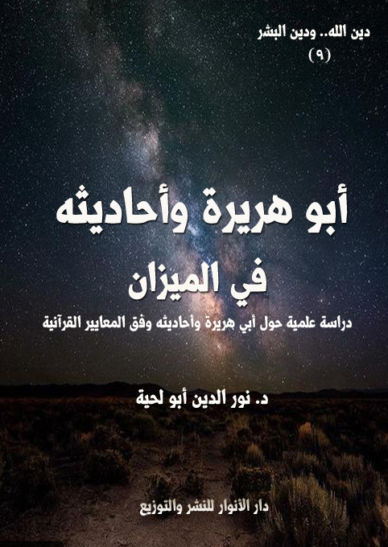

الكتاب: أبو هريرة وأحاديثه في الميزان
المؤلف: أ.د. نور الدين أبو لحية
الناشر: دار الأنوار للنشر والتوزيع
الطبعة: الأولى، 1437 هـ
عدد الصفحات: 246
ISBN: 978-620-2-34553-8
لمطالعة الكتاب من تطبيق مؤلفاتي المجاني وهو أحسن وأيسر: هنا

التعريف بالكتاب
لا نريد من خلال هذا البحث رمي أحاديث أبي هريرة، ولا طرحها، ولا تكذيبها جميعا، وإنما ندعو إلى تمحيصها حتى نميز السم عن العسل، والصدق عن الكذب، والإلهي عن البشري، والمقدس عن المدنس.
ذلك أن الكثير من الروايات التي رواها أبو هريرة نجدها مروية من طرق غيره من الصحابة، بل نجدها عند الشيعة أو غيرهم من فرق المسلمين بأسانيدهم الخاصة بهم.
لكن غيرها، وخاصة مما اختص به، نحتاج فيه إلى تحقيق كبير، ذلك أن أبا هريرة لم يكن من الصحابة السابقين، ولا من الذين اكتفوا بالتلمذة على رسول الله صلى الله عليه وآله وسلم.. بل كان تلميذا نجيبا لغيره، وخاصة لكعب الأحبار، ولذلك اختلطت ـ باتفاق العلماء والمحدثين ـ أحاديثه التي رواها عن كعب بأحاديثه التي رواها عن رسول الله صلى الله عليه وآله وسلم، وكان له فوق ذلك اجتهاداته في بعض روايات الحديث، حيث كان يروي الحديث، ثم يضيف له بعض الإضافات التي يسميها العلماء إدراجا، ويعبر عنها هو بأنها من كيسه..
أبو هريرة وأحاديثه في الميزان (6 )
على الرغم من الحساسية الكبيرة التي يشكلها الحديث عن أبي هريرة إلا أنه لا مناص لنا من ذلك، ليس باعتباره شخصا محبوبا ومقربا من المدرسة السلفية في جميع عصورها فقط، وإنما باعتباره مصدرا للكثير من العقائد والمفاهيم والقيم التي نسبت للإسلام، ولذلك نحتاج إلى التأكد من سلامة المصدر حتى نحقق النسبة، فالإسناد من الدين، ولولا الإسناد لقال من شاء ما شاء.
وأحب أن أنبه أولئك المستعجلين الذين لا تتسع صدورهم لأمثال هذه الأحاديث، أنني لا أضع أبا هريرة ومعاوية في سلة واحدة.. فشتان بينهما.. فمعاوية رأس الفتنة، ورئيس الفئة الباغية، وفرعون هذه الأمة.. أما أبو هريرة فليس سوى إنسان بسيط، صحب رسول الله صلى الله عليه وآله وسلم فترة قصيرة من الزمن، وكانت فيه بعض الصفات التي جعلته مقربا ومرضيا عنه من طرف معاوية والفئة الباغية معه.. ولذلك مكنوه من الكثير من الصلاحيات، وأتاحوا له الكثير من التلاميذ والرواة، لا ليمرروا مشروعهم الانقلابي فقط، وإنما ليظهروا بمظهر ديني يتيح لهم أن يطيعهم الناس طواعية بعد أن أطاعوهم قهرا.
ولذلك، فإن أحاديثه، أو الروايات التي رواها لا يصح إقصاؤها، ولا رفضها جميعا، فلا يمكن لأحد من الناس أن يسقي الناس سما دون أن يخلطه بالعسل، أو أن يصدق الناس كذباته دون أن يكون فيها بعض الصدق أو الكثير من الصدق.
ولذلك لا نريد من خلال هذا البحث رمي أحاديث أبي هريرة، ولا طرحها، ولا تكذيبها جميعا، وإنما ندعو إلى تمحيصها حتى نميز السم عن العسل، والصدق عن الكذب، والإلهي عن البشري، والمقدس عن المدنس.
ذلك أن الكثير من الروايات التي رواها أبو هريرة نجدها مروية من طرق غيره من الصحابة، بل نجدها عند الشيعة أو غيرهم من فرق المسلمين بأسانيدهم الخاصة بهم.
أبو هريرة وأحاديثه في الميزان (7 )
لكن غيرها، وخاصة مما اختص به، نحتاج فيه إلى تحقيق كبير، ذلك أن أبا هريرة لم يكن من الصحابة السابقين، ولا من الذين اكتفوا بالتلمذة على رسول الله صلى الله عليه وآله وسلم.. بل كان تلميذا نجيبا لغيره، وخاصة لكعب الأحبار، ولذلك اختلطت ـ باتفاق العلماء والمحدثين ـ أحاديثه التي رواها عن كعب بأحاديثه التي رواها عن رسول الله صلى الله عليه وآله وسلم، وكان له فوق ذلك اجتهاداته في بعض روايات الحديث، حيث كان يروي الحديث، ثم يضيف له بعض الإضافات التي يسميها العلماء إدراجا، ويعبر عنها هو بأنها من كيسه..
ولهذا كله نحتاج إلى التحقيق في أبي هريرة باعتباره إماما من أئمة السلفية لوثوقهم فيه ثقة مطلقة، ودفاعهم عنه دفاعا شديد، حتى أنهم يعتبرون الطاعن فيه أو الناقد له ناقدا للسنة نفسها.
ولذلك ثارت حميتهم على كل من دعا إلى مراجعة رواياته، وأقاموا عليه القيامة، وألفوا في الرد العاطفي عليه الكتب الكثيرة المشحونة بأصناف التكفير والتضليل والتبديع.
ولعل الشيخ العلامة المحقق محمود أبو رية ـ وهو عالم من علماء الأزهر الكبار ـ أكبر من تعرض للأذى بسبب دعوته إلى التحقيق في أحاديث أبي هريرة في كتابيه المهمين والجديرين بالدراسة [أضواء على السنة المحمدية]، و[شيخ المضيرة]، والذي قال في مقدمته مشيرا إلى تلك المواجهة الشديدة التي تلقاها بسبب أطروحاته العلمية فيهما: (فإن بعض من أصيبوا بالحشوية والجمود قابلونا بالشتم القاذع، والسب الوضيع فلم نلتفت إليهم، وتركناهم في ضلالهم يعمهون. ولو أن هذه الفئة قد التزمت معنا الطريق السوى، الذى يقضى به النقد العلمي النزيه، لقابلناهم مسرورين ولنازلناهم فرحين، ولكنها ارتطمت في حمأة السباب، وزاغت عن سبيل الصواب، فلذلك سقط معها الخطاب. ولقد كان أكثر ما نالنا من شتم الشاتمين، وقذف القاذفين، مرده إلى ما بيناه من تاريخ (أبى هريرة) وما أظهرناه في هذا التاريخ من حقائق مذهلة لم تكن معروفة لهم من قبل، فصدموا بها، ودهشوا لها،
أبو هريرة وأحاديثه في الميزان (8 )
وكادوا منها يصعقون! ولم يلبثوا أن هبوا ليخففوا عنهم ما أصابهم من هول الصدمة، فلم يجدوا غير الوسيلة التى يحسنونها، فأطلقوا ألسنتهم بسبنا، وشهروا أقلامهم لشتمنا) (1)
وقد ذكر الشيخ الكتب التي ألفت في الرد عليه في تلك الفترة القصيرة التي تلت صدور الكتابين، فذكر أنها بلغت (خمسة عشر كتابا، في مصر، والحجاز والشام. هذا عدا جميع المجلات التى تتجر بالدين في بلاد المسلمين، ولا نعلم ماذا سيظهر غدا)
وقد أضيف إلى تلك الكتب التي ألفت في عصره عشرات الكتب التي ألفها أبناء المدرسة السلفية في تكفيره وتضليله (2)، واعتباره رأسا من رؤوس الطاعنين في السنة، ولو أنهم فقهوا عنه، وحققوا فيما ذكره لاعتبروه جنديا أو رأسا من رؤوس تحرير السنة من الدجل والخرافة والضلالة.
وهكذا كان حالهم مع كل من يذكر أبا هريرة، أو يشكك في بعض رواياته من أمثال شيخنا الجليل العلامة محمد الغزالي في كتابه العظيم [السنة بين أهل الفقه وأهل الحديث]، والذي لم يكن يقل في تحرره من كتابي الشيخ محمود أبو رية.
وقد لقي الشيخ محمد الغزالي نفس ما لقيه الشيخ محمود أبو رية، وألفت في الرد عليه، وتبديعه وتضليله، واعتباره رأسا من رؤوس الطاعنين في السنة الكتب والمقالات الكثيرة.
وهكذا يتعرض كل من يدعو إلى التحقيق وإعادة النظر فيما ينسب لرسول الله صلى الله عليه وآله وسلم
__________
(1) شيخ المضيرة، ص 8.
(2) من الكتب المؤلفة حول أبي هريرة والدفاع عنه ما كتبه الدكتور محمد أبو شهبة في كتابه (دفاعٌ عن السنة)، والدكتور مصطفى السباعي في كتابه (السنةُ ومكانتها في التشريع الإسلامي)، والدكتور محمد أبو زهو في كتابه (الحديثُ والمحدثون)، والأستاذ محمد عجاج الخطيب في كتابه (أبو هريرة راوية الإسلام).. والأستاذُ عبد المنعم صالح العلي العزّي، في كتابه (دفاعٌ عن أبي هريرة)، وغيرُهم أمثال: الدكتور محمد السماحي، والشيخ عبدِ الرحمن العلمي اليماني مديرِ مكتبة الحرم المكي، والشيخِ محمد عبد الرزاق حمزة مديرِ دار الحديث بمكة المكرمة..
أبو هريرة وأحاديثه في الميزان (9 )
من أحاديث قد تنحرف بالدين انحرافا شديدا.
ولكن لا مناص من أن نسير على خطى أولئك الصادقين المحققين، وإن كنا نعلم أن مصيرنا لن يقل عن مصيرهم، فضريبة التواصي بالحق ـ كما يذكر القرآن الكريم ـ هي التواصي بالصبر.. وليس هناك من دعا لحق، وسكت عنه.
فالشيطان لا يسمح لأحد من الناس بأن يواجه مشروعه القائم على تحول الدين إلى دجل وخرافة وضلالة وعنف وإرهاب.
وهو بسبب يأسه من تحريف القرآن الكريم راح إلى الرواة والروايات يستعملهم لينسخ بهم حقائق القرآن، وليوقع البشرية في دينه الممتلئ بالدجل.
ولذلك فإن بحثنا عن أبي هريرة، لا علاقة له بكونه صحابيا أو غير صحابي، ولا بكونه من أهل الجنة أو من غير أهلها، وإنما حديثنا عنه مرتبط برواياته، لتمييز المقبول منها مما وافق القرآن الكريم، ورفض ما عداه من الذي أملاه أبو هريرة من كيسه أو من كيس كعب الأحبار وغيره من اليهود.
وقد قسمنا بحثنا ـ بحسب العنوان ـ إلى قسمين:
الفصل الأول: حول مفاتيح شخصية أبي هريرة، باعتباره راوية، يخضع لكل ما يقتضيه الجرح والتعديل من أحكام، وقد حاولنا من خلال استعراض رواياته عن نفسه أن نتعرف على طبيعته وشخصيته، ومدى أثرها في رواياته.
الفصل الثاني: حول روايات أبي هريرة، وأصنافها والانتقادات الموجهة لها.
أبو هريرة وأحاديثه في الميزان (10 )
حتى نكون صادقين مع أنفسنا، ومع الواقع، وحتى لا نحمل أبا هريرة ما لا يحتمل، فإن شخصية أبي هريرة من خلال الروايات التي حدث بها عن نفسه، ومن خلال ما ذكر المؤرخون عنه، تدل على أنه لم يتتلمذ التلمذة الكافية على يدي رسول الله صلى الله عليه وآله وسلم.. فهو لم يدخل دار زيد بن الأرقم، حيث كان السابقون من الصحابة يتخفون عن أعين المشركين ليتلقوا تلك التربية الخاصة على يدي رسول الله صلى الله عليه وآله وسلم.
وهو كذلك لم تشمله تلك الأحكام المتشددة المرتبطة بالصحابة السابقين من وجوب قيام الليل، كما قال تعالى: {إِنَّ رَبَّكَ يَعْلَمُ أَنَّكَ تَقُومُ أَدْنَى مِنْ ثُلُثَيِ اللَّيْلِ وَنِصْفَهُ وَثُلُثَهُ وَطَائِفَةٌ مِنَ الَّذِينَ مَعَكَ وَاللَّهُ يُقَدِّرُ اللَّيْلَ وَالنَّهَارَ عَلِمَ أَنْ لَنْ تُحْصُوهُ فَتَابَ عَلَيْكُمْ فَاقْرَءُوا مَا تَيَسَّرَ مِنَ الْقُرْآنِ عَلِمَ أَنْ سَيَكُونُ مِنْكُمْ مَرْضَى وَآخَرُونَ يَضْرِبُونَ فِي الْأَرْضِ يَبْتَغُونَ مِنْ فَضْلِ اللَّهِ وَآخَرُونَ يُقَاتِلُونَ فِي سَبِيلِ اللَّهِ فَاقْرَءُوا مَا تَيَسَّرَ مِنْهُ وَأَقِيمُوا الصَّلَاةَ وَآتُوا الزَّكَاةَ وَأَقْرِضُوا اللَّهَ قَرْضًا حَسَنًا وَمَا تُقَدِّمُوا لِأَنْفُسِكُمْ مِنْ خَيْرٍ تَجِدُوهُ عِنْدَ اللَّهِ هُوَ خَيْرًا وَأَعْظَمَ أَجْرًا وَاسْتَغْفِرُوا اللَّهَ إِنَّ اللَّهَ غَفُورٌ رَحِيمٌ} [المزمل: 20]
وهو كذلك لم توضع على صدره الصخرة التي وضعت على صدر بلال، وهو ينادي بكل شجاعة: أحد أحد.
وهو لم يكو بالحديد كما كوي خباب، ولا سملت عينه كما سملت عين زنيرة، ولا ذاق طعم الحصار الذي حوصر به رسول الله صلى الله عليه وآله وسلم وآل بيته الأطهار في الشعب، حتى ماتت خديجة وأبو طالب، بل استشهدا في سبيل الله.
وهو لم يهاجر إلى الحبشة هاربا بدينه كما هرب جعفر بن أبي طالب ومن معه من
أبو هريرة وأحاديثه في الميزان (11 )
الصحابة.
وهو ـ عندما ذهب المسلمون إلى المدينة ـ لم يشاركهم في أي غزوة من الغزوات، لا في بدر ولا في أحد ولا في الأحزاب..
هو لم يفعل كل ذلك على الرغم من أنه ـ كما تدل الروايات الكثيرة الصحيحة ـ سمع برسول الله صلى الله عليه وآله وسلم، وعلم بالإسلام، ومع ذلك لم يسلم حتى انتشرت بين قبائل العرب انتصارات المسلمين، وصارت لهم الفتوح الكثيرة التي ملأت القلوب طمعا فيهم.
كما أشار إلى ذلك قوله تعالى عند ذكره لموقف المنافقين ومرضى القلوب يوم الأحزاب: {يَحْسَبُونَ الْأَحْزَابَ لَمْ يَذْهَبُوا وَإِنْ يَأْتِ الْأَحْزَابُ يَوَدُّوا لَوْ أَنَّهُمْ بَادُونَ فِي الْأَعْرَابِ يَسْأَلُونَ عَنْ أَنْبَائِكُمْ وَلَوْ كَانُوا فِيكُمْ مَا قَاتَلُوا إِلَّا قَلِيلًا} [الأحزاب: 20]، فهذه الآية الكريمة تشير إلى أن كل الجزيرة العربية كانت تسمع أخبار رسول الله صلى الله عليه وآله وسلم مع قومه، وتنتظر النتيجة.
وعندما صارت النتيجة في صالح الإسلام، وذلك بعد صلح الحديبية الذي سماه الله فتحا، بل فتحا مبينا، وانتصر المسلمون في خيبر الممتلئة بالثروات، بدأت الوفود تتوافد رغبة ورهبة.. رغبة في أن تنال من تلك المكاسب، ورهبة من أن تصل إليها جيوش المسلمين.
وكان من بين تلك الوفود وفود اليمن.. وكان من بينهم أبو هريرة.
وقد ورد في الروايات الصحيحة ما يدل على أن الأخبار كانت تصله عن غزوات المسلمين مع المشركين، ولكن مع ذلك لم يحضر لنصرة المسلمين، ومنها ما رواه البخاري عن عنبسة بن سعيد: أن أبا هريرة أتى رسول الله صلى الله عليه وآله وسلم وسأله - يعني أن يقسم له - فقال بعض بني سعيد بن العاص: لا تعطه، فقال أبو هريرة: (هذا قاتل ابن قوقل) فقال:
أبو هريرة وأحاديثه في الميزان (12 )
(واعجبا لو بر تدلى من قدوم الضأل (1) تنعي على امرءا أكرمه الله بيدي، ومنعه أن يهينني بيده؟) (2)
فهذا الحديث الخطير ينبئ عن معاني كثيرة في شخصية أبي هريرة، وأولها، وأخطرها أنه كان يسمع بالإسلام وبما يتعرض له المسلمون من صنوف الأذى، ولكنه لم يحضر ـ كما فعل الكثير من الصادقين من أمثال أبي ذر وغيره ـ حتى فتحت خيبر، فجاء يطالب بقسمة له فيها.
ومن الملاحظ أن رسول الله صلى الله عليه وآله وسلم لم يدافع عن أبي هريرة في وجه ذلك الصحابي الذي راح يطعن فيه، كما فعل مع غيره من الصحابة، وهذا له دلالته الخاصة، التي سنعرفها من خلال هذه المفاتيح التي نحاول من خلالها التعرف على شخصية أبي هريرة في جانبها النفسي وأثرها عليها في جانبها الروائي.
ومن أهم ما قد يعذر أبا هريرة في كل ما سنذكره هو قصر المدة التي صحب فيها رسول الله صلى الله عليه وآله وسلم، والتي لم تصل إلى السنتين، لأن رسول الله صلى الله عليه وآله وسلم كان قد أرسله إلى البحرين بعد فترة وجيزة من صحبته له.
بالإضافة إلى أن فترة صحبته له كانت مزدحمة بالأحداث كفتح مكة والغزوات المختلفة التي تلتها، كحنين وتبوك والطائف وغيرها، بالإضافة إلى حجة الوداع.. وهي جميعا مما لا تتيح له التفرغ والجلوس لرسول الله صلى الله عليه وآله وسلم مثلما كان يجلس السابقون في مكة
__________
(1) قال ابن بطال في شرحه للحديث: (واعجبًا لوبر تدلى علينا من قدوم ضأن) وقد روى من رأس ضأن، فمن رواه لوبر بفتح الباء فمعناه أنه شبه أبا هريرة بالوبر الذى لا حطب له ولا مقدار؛ لأنه لم يكن لأبى هريرة عشيرة ولا قوم يمتنع بهم ولا يغنى فى قتال ولا لقاء عدو وكان ابن سعيد وأبو هريرة طارئين، ذكر الطبرى أن أبا هريرة وأبانًا قدما على الرسول بخيبر. ومن روى الوبر بإسكان الباء فمعناه أنه يشبهه بالوبر وهو دويبة على قدر السنور، عن صاحب العين، فأراد به فى ضعف المنة وقلة الغناء كالنسور فى السباع [شرح صحيح البخارى ـ لابن بطال (5/ 40)]
(2) أورد البخاري القصة في موضع متفرقة، انظر: فتح الباري: 7/ 395.
أبو هريرة وأحاديثه في الميزان (13 )
المكرمة، والذين تفرغ لهم رسول الله صلى الله عليه وآله وسلم تفرغا تاما.
وفترة التلمذة - كما هو معلوم - لها تأثيرها الكبير في شخصية التلميذ، فليس من اكتفى بالمدرسة الابتدائية، كمن أكمل دراسته إلى الجامعة، وما بعد الجامعة، وأبو هريرة لم يكن مستواه الدراسي إلا كتلميذ ابتدائي أمام أولئك الصحابة السابقين الذين سبقوه بمراحل دراسية كثيرة.
ومثل ذلك الأحداث المختلفة الشديدة فإن لها تأثيرها الذي لا ينكره أحد.. بل إن الله تعالى فرق بين المؤمنين الذين أسلموا قبل صلح الحديبية، وبين من أسلموا بعدها، فقال: {لَا يَسْتَوِي مِنْكُمْ مَنْ أَنْفَقَ مِنْ قَبْلِ الْفَتْحِ وَقَاتَلَ أُولَئِكَ أَعْظَمُ دَرَجَةً مِنَ الَّذِينَ أَنْفَقُوا مِنْ بَعْدُ وَقَاتَلُوا} [الحديد: 10]، وأبو هريرة ـ للأسف ـ لم يحظ بكل ذلك، بل جاء في الفترة التي قوي فيها الإسلام، ثم لم ينل من التلمذة إلا مدة قصيرة جدا، كما سنرى.
بناء على هذا سنتحدث في هذا الفصل عن خصائص شخصية أبي هريرة من الناحية النفسة، ثم عن آثارها عليه في الناحية الروائية.
أبو هريرة وأحاديثه في الميزان (14 )
أولا ـ الجانب النفسي في شخصية أبي هريرة
لعل من أهم المفاتيح الدالة على شخصية أبي هريرة انضمامه لأهل الصفة في المدينة المنورة، على الرغم من كونه في ذلك الحين كان شابا قادرا على العمل، ولكنه آثر أن يظل في ضيافة المسلمين يأكل على موائدهم، ويتزلف إليهم لينال من طعامهم، وقد ظلت معه هذه الخصلة حتى آخر عمره عندما كان يؤثر مائدة معاوية الممتلئة بصنوف الأطعمة على مائدة علي الممتلئة بكل ألوان الزهد والتقشف.
وقد أشار الثعالبي إلى هذه الخصلة فيه، فقال: (كان أبو هريرة على فضله واختصاصه بالنبي صلى الله عليه وآله وسلم مزاحا أكولا وكان يدعى الطب، فيقول: (أكل التمر أمان من القولنج، وشرب العسل على الريق أمان من الفالج، وأكل السفرجل يحسن الولد، وأكل الرمان يصلح الكبد، والزبيب يشد العصب، ويذهب الوصب والنصب، والكرفس يقوى المعدة، والقرع يزيد في اللب، ويرق البشرة، وأطيب اللحم الكتف وحواشي فقار العنق والظهر. وكان يديم أكل الهريسة والفالوذج) (1)
وهكذا حدث أبو عثمان النهدي قال: كنا مع أبي هريرة في سفر فحضر الطعام، فبعثنا إلى أبي هريرة وهو يصلي، فجاء الرسول فذكر أنه صائم، فوضع الطعام ليؤكل، وجاء أبو هريرة وقد أكادوا يفرغون، منه فتناول فجعل يأكل، فنظروا إلى الرجل الذي أرسلوه إلى أبي هريرة، فقال: ما تنظرون إلي قد والله أخبرني أنه صائم! قال: صدق. ثم قال أبو هريرة: سمعت رسول الله صلى الله عليه وآله وسلم يقول: صوم، شهر الصبر وثلاثة أيام من الشهر صوم الدهر. فأنا صائم في تضعيف الله- عز وجل- ومفطر في تخفيفه (2).
__________
(1) ثمار القلوب في المضاف والمنسوب، ص 86 و87.
(2) الطيالسى (ص 315، رقم 2393)، وأحمد (2/ 513، رقم 10673)، وأبو يعلى (12/ 5، رقم 6650)، والبيهقى فى شعب الإيمان (3/ 290، رقم 3574)، وأبو نعيم (1/ 382)
أبو هريرة وأحاديثه في الميزان (15 )
وقد ذكر أبو هريرة عن نفسه ذلك في روايات كثيرة تستدعي منا مراجعة وتحليلا عميقا لنعرف حقيقته، وحقيقة المجتمع الإسلامي كما كان يراه.
ومن تلك الروايات ما حدث به محمد بن سيرين، قال: كنا عند أبى هريرة، وعليه ثوبان ممشقان من كتان، فتمخط، فقال: بخ بخ أبو هريرة يتمخط فى الكتان، لقد رأيتنى وإنى لأخر فيما بين منبر رسول الله صلى الله عليه وآله وسلم إلى حجرة عائشة مغشيا على، فيجئ الجائى فيضع رجله على عنقى، ويرى أنى مجنون، وما بى من جنون، ما بى إلا الجوع (1).
وفي رواية عن أبي هريرة قال: أتت علي ثلاثة أيام لم أطعم، فجئت أريد الصفة (2) فجعلت سقط. فجعل الصبيان يقولون: جن أبو هريرة. قال: فجعلت أناديهم وأقول: بل أنتم المجانين، حتى انتهينا إلى الصفة. فوافقت رسول الله صلى الله عليه وآله وسلم أتي بقصعتين من ثريد. فدعا عليها أهل الصفة وهم يأكلون منها، فجعلت أتطاول كي يدعوني، حتى قام القوم وليس في القصعة إلا شيء في نواحي القصعة. فجمعه رسول الله صلى الله عليه وآله وسلم فصارت لقمة، فوضعه على أصابعه فقال لي: (كل، بسم الله)، فوالذي نفسي بيده، ما زلت آكل منها حتى شبعت (3).
فهاتان الروايتان، وغيرها كثير، تصوران المجتمع المسلم في عهد رسول الله صلى الله عليه وآله وسلم بغير الصورة التي صور بها القرآن الكريم مجتمع المدينة، فقد قال تعالى واصفا الأنصار: {وَالَّذِينَ تَبَوَّءُوا الدَّارَ وَالْإِيمَانَ مِنْ قَبْلِهِمْ يُحِبُّونَ مَنْ هَاجَرَ إِلَيْهِمْ وَلَا يَجِدُونَ فِي صُدُورِهِمْ حَاجَةً مِمَّا أُوتُوا وَيُؤْثِرُونَ عَلَى أَنْفُسِهِمْ وَلَوْ كَانَ بِهِمْ خَصَاصَةٌ وَمَنْ يُوقَ شُحَّ نَفْسِهِ فَأُولَئِكَ هُمُ الْمُفْلِحُونَ} [الحشر: 9]
وهي كذلك تصطدم مع تلك الروايات الكثيرة التي تصور التضامن الشديد بين
__________
(1) البخاري 9/ 128 (7324)
(2) الصفة موقع مظلل في مؤخرة مسجد النبي (بالمدينة من الجهة الشمالية.
(3) رواه ابن حبان في صحيحه، انظر: حياة الصحابة (1/ 379)
أبو هريرة وأحاديثه في الميزان (16 )
المسلمين، ومن بينها هذه الصورة العظيمة التي ذكرها أبو هريرة نفسه، وهي أنّ رجلا أتى النّبيّ صلى الله عليه وآله وسلم فبعث إلى نسائه فقلن: ما معنا إلّا الماء. فقال رسول الله صلى الله عليه وآله وسلم: (من يضمّ- أو يضيف- هذا؟) فقال رجل من الأنصار: أنا. فانطلق به إلى امرأته فقال: أكرمي ضيف رسول الله صلى الله عليه وآله وسلم، فقالت: ما عندنا إلّا قوت صبياني. فقال: هيّئي طعامك وأصبحي سراجك ونوّمي صبيانك إذا أرادوا عشاء، فهيّأت طعامها وأصبحت سراجها ونوّمت صبيانها، ثمّ قامت كأنّها تصلح سراجها فأطفأته فجعلا يريانه أنّهما يأكلان فباتا طاويين فلمّا أصبح غدا إلى رسول الله صلى الله عليه وآله وسلم، فقال: (ضحك الله اللّيلة- أو عجب من فعالكما- فأنزل الله: {وَيُؤْثِرُونَ عَلى أَنْفُسِهِمْ وَلَوْ كانَ بِهِمْ خَصاصَةٌ وَمَنْ يُوقَ شُحَّ نَفْسِهِ فَأُولئِكَ هُمُ الْمُفْلِحُونَ} [الحشر:9]) (1)
ومنها هذه الصورة التي رواها أنس بن مالك، فقال: (لما قدم المهاجرون المدينة نزلوا على الأنصار في دورهم فقالوا: يا رسول الله ما رأينا مثل قوم نزلنا عليهم أحسن مواساة في قليل، ولا أبذل في كثير منهم، لقد أشركونا في المهنأ، وكفونا المؤنة، ولقد خشينا أن يكونوا ذهبوا بالأجر كله، فقال رسول الله صلى الله عليه وآله وسلم: (كلا ما دعوتم الله لهم وأثنيتم به عليهم) (2)
ومنها تلك الصورة العظيمة التي رسمت مجتمع الأنصار رسما جميلا حقيقا بذلك الثناء العظيم الذي ذكره الله تعالى، وهي ما روي أن عبد الرحمن بن عوف لما قدم المدينة آخى النّبيّ صلى الله عليه وآله وسلم بينه وبين سعد بن الرّبيع الأنصاريّ، فعرض عليه أن يناصفه ماله، فقال له: بارك الله لك في أهلك ومالك دلّوني على السّوق...) (3)
وهذه الصورة الجميلة لا تختص بسعد بن الربيع فقط، بل تضم أيضا عبد الرحمن بن عوف الذي آثر العمل والكسب على أن يظل عبئا على إخوانه من الأنصار.. وهو ما لم يفعله
__________
(1) رواه البخاري (3798)
(2) رواه الضياء في المختارة (5/ 290)
(3) رواه البخاري (2048)
أبو هريرة وأحاديثه في الميزان (17 )
أبو هريرة على الرغم من شبابه، وقوته، وقدرته على العمل، مع أنه هو نفسه من روى قوله صلى الله عليه وآله وسلم: (لأن يأخذ أحدكم أحبلا، فيأخذ حزمة من حطب فيبيع فيكفّ اللّه بها وجهه خير من أن يسأل النّاس أعطي أم منع) (1)
ومع أن النبي صلى الله عليه وآله وسلم كان قد أشاع بين أصحابه حرمة السؤال، والنظر لما في أيدي الناس، بل كان يبايعهم على ذلك.
فعن ثوبان أن رسول الله صلى الله عليه وآله وسلم قال: (من يكفل لي أن لا يسأل الناس شيئاً وأتكفل له بالجنة)، فقال ثوبان: أنا، فكان لا يسأل أحداً شيئاً (2).
وعن عوف بن مالك الأشجعي قال: كنا عند رسول الله صلى الله عليه وآله وسلم تسعة أو ثمانية أو سبعة، فقال: ألا تبايعون رسول الله، وكنا حديث عهد ببيعة، فقلنا: قد بايعناك يا رسول الله، ثم قال: ألا تبايعون رسول الله، فقلنا: قد بايعناك يا رسول الله، ثم قال: ألا تبايعون رسول الله، قال: فبسطنا أيدينا وقلنا: قد بايعناك يا رسول الله فعلام نبايعك؟ قال: على أن تعبدوا الله ولا تشركوا به شيئاً، والصلوات الخمس، وتطيعوا، وأسر كلمة خفية ولا تسألوا الناس شيئاً، فلقد رأيت بعض أولئك النفر يسقط سوط أحدهم فما يسأل أحداً يناوله إياه (3).
بالإضافة إلى ذلك، فإن النبي صلى الله عليه وآله وسلم نهى عن السؤال من هو أشد حاجة من أبي هريرة نفسه، بل راح يبيع له ما عنده حتى يكفه عن سؤال الناس، ففي الحديث الصحيح أنّ رجلا من الأنصار أتى النّبيّ صلى الله عليه وآله وسلم يسأله، فقال: (أما في بيتك شيء؟) قال: بلى، حلس نلبس بعضه ونبسط بعضه، وقعب نشرب فيه من الماء، قال: (ائتني بهما) فأتاه بهما، فأخذهما رسول اللّه صلى الله عليه وآله وسلم بيده، وقال: (من يشتري هذين؟) قال رجل: أنا آخذهما بدرهم، قال: (من يزيد على
__________
(1) رواه البخاري.
(2) رواه أبو داود رقم (1643) في الزكاة، باب كراهية المسألة، والنسائي 5/ 96 في الزكاة، باب فضل من لا يسأل الناس شيئا.
(3) رواه مسلم: 3/ 97 (2367)
أبو هريرة وأحاديثه في الميزان (18 )
درهم؟). مرّتين أو ثلاثا. قال رجل: أنا آخذهما بدرهمين، فأعطاهما إيّاه، وأخذ الدّرهمين وأعطاهما الأنصاريّ، وقال: (اشتر بأحدهما طعاما فانبذه إلى أهلك، واشتر بالآخر قدّوما فأتني به) فأتاه به، فشدّ فيه رسول اللّه صلى الله عليه وآله وسلم عودا بيده ثمّ قال له: (اذهب فاحتطب وبع، ولا أرينّك خمسة عشر يوما) فذهب الرّجل يحتطب ويبيع، فجاء وقد أصاب عشرة دراهم، فاشترى ببعضها ثوبا وببعضها طعاما. فقال رسول اللّه صلى الله عليه وآله وسلم: (هذا خير لك من أن تجيء المسألة نكتة في وجهك يوم القيامة، إنّ المسألة لا تصلح إلّا لثلاثة: لذي فقر مدقع، أو لذي غرم مفظع، أو لذي دم موجع) (1)
فهذه الأحاديث جميعا تشير إلى أن رسول الله صلى الله عليه وآله وسلم لم يتعامل مع أبي هريرة بمثل هذه المعاملة، تأليفا لقلبه، لأنه قدم المدينة بسبب جوعه وفقره، وكان يطلب أن يحصل ما يسدهما، فلذلك تركه رسول الله صلى الله عليه وآله وسلم يسأل المسلمين، واستضافه مع أهل الصفة في المسجد، مع أن الضيافة لا تصح بعد ثلاثة أيام، وكان أول ما طلبه عند حضوره خيبر هو أن يعطيه سهمه فيها.
وهكذا نرى أحاديث أبي هريرة تتناقض تماما مع تلك الصورة الجميلة التي نسمع بها عن مجتمع الصحابة، المجتمع الممتلئ بالإيثار والكرم وكل معاني المروءة.. ويستحيل على مجتمع يتصف بهذا أن يترك امرؤا يصل به الجوع إلى تلك الحالة التي وصفها، ثم لا يدركه.
فنحن هنا بين محذورين كلاهما مر، فإما أن نصدق أبا هريرة، ونكذب تلك الصورة الجميلة التي ذكرها القرآن الكريم، والتي نقرأ عنها في كتب الحديث والسيرة، أو أن نكذب أبا هريرة، وكيف نكذبه، وما ذكره نجده في صحيح البخاري وغيرهما، وفي أعلى درجات
__________
(1) أحمد 3/ 100 (11990) وفي 3/ 100 (11991) و3/ 114 (12158) وأبو داود 1641 وابن ماجة: 2198 والترمذي: 1218 والنسائي 7/ 259.
أبو هريرة وأحاديثه في الميزان (19 )
الصحة كما يذكرون.
وقد ذكر أبو هريرة دور الجوع في حرصه على العلم، فقال: (كنت امرأ مسكينا ألزم رسول الله صلى الله عليه وآله وسلم على ملء بطني) (1)
وقال ـ يصف حادثة من الحوادث ـ: (والله إن كنت لأعتمد بكبدي على الأرض من الجوع، وإن كنت لأشد الحجر على بطني من الجوع. ولقد قعدت يوما على طريقهم الذي يخرجون منه، فمر أبو بكر فسألته عن آية من كتاب الله ما سألته إلا ليستتبعني فلم يفعل، فمر أبو القاسم صلى الله عليه وآله وسلم، فعرف ما في وجهي وما في نفسي، فقال: (أبا هريرة) قلت له: لبيك يا رسول الله، فقال: (الحق)، واستأذنت فأذن لي؛ فوجدت لبنا في قدح. قال: (من أين لكم هذا اللبن؟) فقالوا: أهداه لنا فلان - أو آل فلان -. قال: (أبا هر) قلت: لبيك يا رسول الله، قال: (إنطلق إلى أهل الصفة فأدعهم لي). قال: - وأهل الصفة أضياف الإسلام، لم يأووا إلى أهل ولا مال، إذا جاءت رسول الله صلى الله عليه وآله وسلم هدية أصاب منها وبعث إليهم منها، وإذا جاءته الصدقة أرسل بها إليهم ولم يصب منها -. قال: وأحزنني ذلك وكنت أرجو أن أصيب من اللبن شربة أتقوى به بقية يومي وليلتي. وقلت: أنا الرسول، فإذا جاء القوم كنت أنا الذي أعطيهم؛ وقلت: ما يبقى لي من هذا اللبن؟ ولم يكن من طاعة الله وطاعة رسوله بد. فانطلقت فدعوتهم، فأقبلوا فاستأذنوا، فأذن لهم، فأخذوا مجالسهم من البيت. ثم قال: (أبا هر، خذ فأعطهم) فأخذت القدح فجعلت أعطيهم، فيأخذ الرجل القدح فيشرب حتى يروى ثم يرد القدح، حتى أتيت على آخرهم، ودفعت إلى رسول الله صلى الله عليه وآله وسلم، فأخذ القدح فوضعه في يده بقي فيه فضلة ثم رفع رأسه ونظر إلي وتبسم وقال: (أبا هر) قلت: لبيك رسول الله، قال: (بقيت أنا وأنت). فقلت؛ صدقت يا رسول الله، قال: (فاقعد فاشرب) قال: فقعدت فشربت، ثم قال لي: (شرب)، فشربت؛ فما زال يقول لي: (إشرب)،
__________
(1) رواه البخاري: 1/ 40 (118)
أبو هريرة وأحاديثه في الميزان (20 )
فأشرب حتى قلت: لا والذي بعثك بالحق، ما أجد له في مسلكا قال: (ناولني القدح)، فرددت إليه القدح فشرب من الفضلة (1).
وقال يصف حادثة أخرى من حوادث جوعه: (كنت من أهل الصفة فظللت صائما فأمسيت وأنا أشتكى بطني، فانطلقت لأقضى حاجتى، فجئت وقد أكل الطعام، وكان أغنياء قريش يبعثون بالطعام لأهل الصفة (2)، وقلت: إلى من أذهب؟ فقيل لى، اذهب إلى عمر بن الخطاب، فأتيته وهو يسبح بعد الصلاة، فانتظرته فلما انصرف دنوت منه، فقلت: أقرئنى! وما أريد إلا الطعام! قال: فأقرأني آيات من سورة آل عمران، فلما بلغ أهله دخل وتركني على الباب، فأبطأ فقلت ينزع ثيابه! ثم يأمر لى بطعام! فلم أر شيئا) (3)
وقال في وصف حادثة أخرى: والله الذى لا إله إلا هو، إن كنت لأعتمد بكبدي على الأرض من الجوع، وإن كنت لاشد الحجر على بطني من الجوع، ولقد قعدت يوما على طريقهم الذى يخرجون منه من المسجد، فمر أبو بكر فسألته عن آية من كتاب الله وما سألته إلا (ليشبعني) - فمر ولم يفعل ثم مر عمر بى فسألته عن آية من كتاب الله ما سألته إلا ليشبعني فلم يفعل) (4)
وفي هذه الأحاديث إهانة كبيرة لكبار الصحابة السابقين، فهو يصور لا مبالاتهم بجوعه وفقره، وحجره المعصب على بطنه، مع كونه من المسلمين الجدد الذين يحرصون على تثبيت الإيمان في قلوبهم بكل ما يتطلبه التثبيت من واجبات.
وقد جر ذلك الاهتمام الشديد من أبي هريرة بحاجاته الشخصية إلى تصنيف الصحابة بحسب اهتمامهم به ـ لا بحسب واقع الحال ـ فقد كان يقول: (ما احتذى النعال،
__________
(1) البخاري: 8/ 67 (6246)
(2) في هذا القول غمز كبير للأنصار، لأن معاوية والفئة الباغية كان له موقف سلبي منهم.
(3) أبو نعيم في الحلية: 1/ 378.
(4) رواه البخاري.
أبو هريرة وأحاديثه في الميزان (21 )
ولا ركب المطايا ولا وطئ التراب - بعد رسول الله صلى الله عليه وآله وسلم - أفضل من جعفر بن أبى طالب) (1)
وقد ذكر سبب ذلك، فقال: (كنت أستقرئ الرجل الآية - هي معى - كى ينقلب بى فيطعمني، وكان أخير الناس للمسكين - جعفر بن أبى طالب - كان ينقلب بنا فيطعمنا ما كان في بيته) (2)، وقال: (وكنت إذا سألت جعفرا عن آية لم يجبنى حتى يذهب إلى منزله) (3)
وقال: (إن الناس يقولون أكثر أبو هريرة على رسول الله صلى الله عليه وآله وسلم واني كنت ألزمه بشبع بطني حتى لا أكل الخمير ولا ألبس ولا يخدمني فلان وفلانة وكنت ألصق بطني بالحصباء من الجوع، وكنت استقرئ الرجل الآية هي معي كي ينقلب بي فيطعمني، وكان أخير الناس للمساكين جعفر بن أبي طالب كان ينقلب بنا فيطعمنا ما كان في بيته..) (4)
ولو طبقنا المقاييس السلفية على هذه المقولة من أبي هريرة لاعتبرناه مبتدعا، فهم يروون عن الإمام أحمد أنه سئل عن رجل ذكر أنه يحب أصحاب رسول الله صلى الله عليه وآله وسلم، ولا يفضل بعضهم على بعض، فقال: (السنة أن يفضل أبا بكر وعمر وعثمان وعلي من الخلفاء) (5)
وقال ابن كثير مقررا لذلك: (وأفضل الصحابة، بل أفضل الخلق بعد الأنبياء - عليهم السلام -: أبو بكر الصديق ثم من بعده عمر بن الخطاب ثم عثمان بن عفان ثم علي بن أبي طالب.. ولهذا قال الدارقطني: من قدم عليا على عثمان فقد أزرى بالمهاجرين والأنصار) (6)
__________
(1) رواه أحمد 2/ 413 (9342) والترمذي: 3764.
(2) رواه البخاري.
(3) رواه الترمذي.
(4) رواه البخاري.
(5) رواه الخلال في (السنة) (2/ 372)
(6) الباعث الحثيث (ص: 183)
أبو هريرة وأحاديثه في الميزان (22 )
بعد هذا العرض الموجز لبعض النواحي الشخصية المتعلقة بأبي هريرة يمكننا أن نرى صفتين كبيرتين وخطيرتين جعلتاه محط اهتمام من لدن معاوية والفئة الباغية، وهما:
1 ـ مزاحمته لكبار الصحابة، وحرصه على إظهار نفسه أكثر ذكاء وولاء منهم.
2 ـ حرصه على تحقيق أكبر ما استطاع من مكاسب دنيوية.
وقد كان لكلا الصفتين أثره الخطير على الجانب الروائي في شخصيته.
وسنحاول في هذا المبحث أن نذكر أدلة ذلك، كما وردت به الروايات المعتمدة.
لا نحتاج إلى تكلف تحليل أو تأويل حتى نكتشف دعاوى أبي هريرة المتعلقة بصحبته، والتي يزعم فيها أنه نال الحظ الأوفر من القرب والخلة فيها من رسول الله صلى الله عليه وآله وسلم.
ولعل أكبر ما يدل على ذلك هو تلك العبارات التي يصدر بها أحيانا حديثه، وقد قال فيها ابن قتيبة: (لما سمع علي أبا هريرة يقول: قال خليلي وسمعت خليلي، وكان سيء الرأي فيه، قال: (متى كان خليلك) (1)
ومما يدل على صحة هذا الخبر عن الإمام علي، وموقفه السلبي منه ما رواه العقيلي عن الوراميني قال: (حدثنا يحيى بن المغيرة قال حدثنا أبو زهير قال حدثنا الأعمش عن أبي صالح وأبي رزين عن أبي هريرة عن النبي صلى الله عليه وآله وسلم قال: (من أحدث حدثا أو آوى محدثا، وذكر الحديث، وذكر في آخره كلاما لأبي هريرة في علي وكلاما لعلي في أبي هريرة، قال أبو زهير: فحدث الأعمش بهذا الحديث وعنده المغيرة بن سعيد فلما بلغ قول أبي هريرة في علي قال: (كذب أبو هريرة)، فلما بلغ قول علي في أبي هريرة قال: (صدق علي)، قال: فقال الأعمش:
__________
(1) تأويل مختلف الحديث ص 48 - 49
أبو هريرة وأحاديثه في الميزان (23 )
(صدق علي وكذب أبو هريرة لا، ولكن غضب هذا فقال، وغضب هذا فقاله) (1)
وما لنا نذهب بعيدا، والرواية التي يتشبث بها السلفية في مناقب أبي هريرة أكبر دليل على ذلك، فهم يروونها بفخر، ولا يعملون عقولهم ليعلموا ما تحمله من طعون في كبار الصحابة وصغارهم.
فقد روى البخاري ومسلم وغيرهما عن أبي هريرة قال: (إنكم تقولون: إن أبا هريرة يكثر الحديث عن رسول الله صلى الله عليه وآله وسلم، وتقولون: ما بال المهاجرين والأنصار لا يحدثون عن رسول الله صلى الله عليه وآله وسلم بمثل حديث أبي هريرة؟ وإن إخوتي من المهاجرين كان يشغلهم الصفق بالأسواق، وكنت ألزم رسول الله صلى الله عليه وآله وسلم علي ملء بطني، فأشهد إذا غابوا، وأحفظ إذا نسوا. وكان يشغل إخواني من الأنصار عمل أموالهم، وكنت امرأ مسكينا من مساكين الصفة، أعي حين ينسون) (2)
فهذا الحديث الخطير المتفق على صحته يرويه السلفية في مناقب أبي هريرة، ولو عقلوا لاستدلوا به على مثالبه.. فهو يرسم صورة سيئة للمهاجرين والأنصار، وانشغالهم عن رسول الله صلى الله عليه وآله وسلم بالتجارة والعمل.
وهو يبين في الحديث ـ قصد أو لم يقصد ـ أنه لولاه لضاعت كل تلك التعاليم المقدسة التي كلف رسول الله صلى الله عليه وآله وسلم أن يبلغها للأمة.
__________
(1) الضعفاء ج 4 ص 179، وقد ذكر ابن أبي الحديد الخبر في [شرحه على نهج البلاغة: ج 4، ص 76] عن شيخه الأسكافي قال: وروى الأعمش قال: لما قدم أبو هريرة العراق مع معاوية عام الجماعة جاء إلى مسجد الكوفة، فلما رأى كثرة من استقبله من الناس جثا على ركبتيه، ثم ضرب صلعته مرارا، وقال: يا أهل العراق، أتزعمون أني أكذب على الله وعلى رسوله، وأحرق نفسي بالنار، والله لقد سمعت رسول الله (يقول: (إن لكل نبي حرما وإن حرمي بالمدينة ما بين عير إلى ثور فمنا حدث فيها حدثا فعليه لعنة الله والملائكة والناس أجمعين، وأشهد بالله أن عليا أحدث فيها)، فلما بلغ معاوية قوله أجازه وأكرمه وولاه إمارة المدينة.
(2) رواه الحميدي (1142) وأحمد: 2/ 240 (7273) والبخاري: 1/ 40 (118) ومسلم: 7/ 166.
أبو هريرة وأحاديثه في الميزان (24 )
بل إنه عندما عارضته عائشة زوج رسول الله صلى الله عليه وآله وسلم في بعض الأحاديث، وقالت: إنك لتحدث عن النبي صلى الله عليه وآله وسلم حديثا ما سمعته منه، قال لها: (يا أمه! طلبتها وشغلك عنها المرآة والمكحلة وما كان يشغلني عنها شيء!) (1)
بل إنه يصرح بذلك في مواضع أخرى، ومنها ما رواه البخاري عنه، قال: قلت: يا رسول الله، من أسعد الناس بشفاعتك يوم القيامة؟ فقال صلى الله عليه وآله وسلم: (لقد ظننت يا أبا هريرة ألا يسألني عن هذا الحديث أحد أول منك لما رأيت من حرصك على الحديث. أسعد الناس بشفاعتي يوم القيامة من قال: لا إلا الله خالصا من قبل نفسه) (2)
ففي هذا الحديث يضع أبو هريرة نفسه في المحل الأول من الصحابة الحريصين على تعلم أحكام الدين، مع كونه ـ كما ذكرنا ـ جاء متأخرا جدا، وفي فترة مليئة بالأحداث الخطيرة التي مرت بها الدعوة الإسلامية، والتي دلت الوقائع التاريخية على أن المهاجرين والأنصار كانوا ألصق فيها برسول الله صلى الله عليه وآله وسلم من ظله.
ولم يكتف أبو هريرة بكل تلك الدعاوى، بل راح يزعم أن رسول الله صلى الله عليه وآله وسلم خصه بأسرار كثيرة لا يعلمها باقي الصحابة، وقد عبر عن ذلك بقوله ـ في الحديث الذي رواه البخاري ـ: (حفظت من رسول الله صلى الله عليه وآله وسلم وعاءين، فأما أحدهما: فبثثته فيكم، وأما الآخر: فلو بثثته قطع هذا البلعوم) (3)
وورد في روايات أخرى أقل صحة قوله: (لو أنبأتكم بكل ما أعلم لرماني الناس بالخرف، وقالوا أبو هريرة مجنون)، وفى رواية: (لو حدثتكم بكل ما في جوفى لرميتموني بالبعر)، وفي رواية: (حفظت من رسول الله صلى الله عليه وآله وسلم خمسة أجربة، فأخرجت منها جرابين، ولو
__________
(1) الطبقات الكبرى (2/ 278)
(2) رواه أحمد (2/ 373)، والبخاري (1/ 35)
(3) رواه البخاري 1/ 192 و193
أبو هريرة وأحاديثه في الميزان (25 )
أخرجت الثالث لرجمتموني بالحجارة) (1)
ولم يكتف بذلك أيضا، بل زعم أن رسول الله صلى الله عليه وآله وسلم خصه بميزة كان يدخرها له من دون الصحابة جميعا، ليحفظ له سنته ما ظهر منها وما بطن، وقد عبر عنها بقوله ـ في تعليل كثرة رواياته ـ: (.. وقد قال رسول الله صلى الله عليه وآله وسلم في حديث يحدثه: إنه لن يبسط أحد ثوبه حتى أقضي مقالتي ثم يجمع إليه ثوبه إلا وعى ما أقول. فبسطت نمرة علي، حتى إذا قضى رسول الله صلى الله عليه وآله وسلم مقالته جمعتها إلى صدري، فما نسيت من مقالة رسول الله صلى الله عليه وآله وسلم تلك من شيء) (2)
فهذا الحديث المتفق على صحته لا يقل خطرا عن الأحاديث السابقة، وأول ما يشد الانتباه فيه هو تلك البرودة التي يصور بها أبو هريرة الصحابة، وعدم تجاوبهم مع طلب رسول الله صلى الله عليه وآله وسلم على الرغم من ذلك الترغيب العظيم.. ولا ينسى أن يبين أنه وحده الذي بادر لأمر رسول الله صلى الله عليه وآله وسلم ليفوز بتلك الذاكرة العجيبة التي حرم منها كل الصحابة.
ومثل هذا ذلك الحديث الذي أشاعته الفئة الباغية لتبين أن أبا هريرة هو راوية الإسلام الأكبر، وأنه حظي بدعوة خاصة من رسول الله صلى الله عليه وآله وسلم ليحفظ للأمة أمر دينها، ففي الحديث أن رجلاً جاء إلى زيد بن ثابت فسأله، فقال له زيد: عليك بأبي هريرة، فإني بينما أنا وأبو هريرة وفلان في المسجد، ندعو الله ونذكره، إذ خرج علينا رسول الله صلى الله عليه وآله وسلم حتى جلس إلينا فقال: عودوا للذي كنتم فيه. قال زيد فدعوت أنا وصاحبي، فجعل رسول الله صلى الله عليه وآله وسلم يؤمّن على دعائنا، ودعا أبو هريرة فقال: إني أسألك مثل ما سأل صاحباي، وأسألك علمًا لا يُنسى، فقال: سبقكم بها الغلام الدوسي) (3)
بل إنه يدعي أن رسول الله صلى الله عليه وآله وسلم خصه من دون الصحابة، وخصوصا الفقراء منهم،
__________
(1) انظر هذه الروايات في: الطبقات الكبرى (2/ 278)
(2) رواه الحميدي (1142) وأحمد: 2/ 240 (7273) والبخاري: 1/ 40 (118) ومسلم: 7/ 166.
(3) رواه النسائي.
أبو هريرة وأحاديثه في الميزان (26 )
بكيس عجيب من الطعام لا ينفذ، فقد روى الترمذي عنه قوله: (أتيت النبي صلى الله عليه وآله وسلم بتمرات، فقلت: يا رسول الله: ادع الله فيهن بالبركة، فضمهن، ثم دعا لي فيهن بالبركة، وقال: (خذهن واجعلهن في مزودك هذا، أو في هذا المزود، كلما أردت أن تأخذ منه شيئاً، فأدخل فيه يدك، فخذه ولا تنثره نثرا)، وقد ذكر أبو هريرة أنه ظلّ يأكل من ذلك التمر زماناً طويلاً، واستمرّ حتى يوم مقتل عثمان (1).
بل إنه فوق ذلك كله يدعي أنه صلى الله عليه وآله وسلم خصه بمزايا لم يخص بها أقاربه وعشيرته، فقد روي عنه قوله: قال: كنت أدعو أمي إلى الإسلام وهي مشركة، فدعوتها يوما، فأسمعتني في رسول الله صلى الله عليه وآله وسلم ما أكره، فأتيت رسول الله صلى الله عليه وآله وسلموأنا أبكي، قلت: يا رسول الله، إني كنت أدعو أمي إلى الإسلام فتأبى، فدعوتها فأسمعتني فيك ما أكره، فادع الله أن يهدي أم أبي هريرة. فقال رسول الله صلى الله عليه وآله وسلم: (اللهم اهد أم أبي هريرة)، فخرجت مستبشرا بدعوة النبي صلى الله عليه وآله وسلم، فلما جئت فصرت إلى الباب، فإذا هو مجاف، فسمعت أمي خشفة قدمي فقالت: مكانك يا أبا هريرة، وسمعت خضخضة الماء، فاغتسلت ولبست درعها، وعجلت عن خمارها، ففتحت الباب ثم قالت: يا أبا هريرة، أشهد أن لا إله إلا الله، وأشهد أن محمدا عبده ورسوله. قال: فرجعت إلى رسول الله صلى الله عليه وآله وسلم فأتيته وأنا أبكي من الفرح، قال: قلت: يا رسول الله، أبشر، قد استجاب الله دعوتك وهدى أم أبي هريرة. فحمد الله وقال خيرا. قال: قلت: يا رسول الله، ادع الله أن يحببني أنا وأمي إلى عباده المؤمنين ويحببهم إلينا. قال: فقال رسول الله صلى الله عليه وآله وسلم: (اللهم حبب عبيدك هذا - يعنى أبا هريرة - وأمه إلى عبادك المؤمنين، وحبب إليهما المؤمنين)، فما خلق مؤمن يسمع بي ولا يراني إلا أحبني (2).
وهذا الحديث العجيب الممتلئ بالدعاوى يتلقاه السلفية بكل سرور، في نفس
__________
(1) رواه أحمد 2/ 352 (8613) والترمذي: 3839.
(2) أحمد 2/ 319 (8242)
أبو هريرة وأحاديثه في الميزان (27 )
الوقت الذي يزعمون فيه أن أبا طالب عم رسول الله صلى الله عليه وآله وسلم، والذي قضى حياته كلها دفاعا عنه، ولاقى في ذلك كل الشدائد، لم يحظ بذلك الحنان والعطف من رسول الله صلى الله عليه وآله وسلم كما حظيت أم أبي هريرة، حيث أنه يزعم أن رسول الله صلى الله عليه وآله وسلم دعا لها بالهداية على رغمها من سبها له صلى الله عليه وآله وسلم، واستجاب الله له، بينما لم يدعو لعمه، أو لم يستجب الله له.
وهو فوق ذلك كله يزعم أنه دعي له بأن يصير محبوبا للمؤمنين، هو وأمه، وأن كل من سمع به أحبه في نفس الوقت الذي ترد فيه الروايات الكثيرة عن ذلك البغض الشديد الذي تعرض له الإمام علي ـ عدو الفئة الباغية الأول ـ حتى قال ابن تيمية مخبرا عن ذلك: (.. أن الله قد أخبر أنه سيجعل للذين آمنوا وعملوا الصالحات ودا. وهذا وعد منه صادق. ومعلوم أن الله قد جعل للصحابة مودة في قلب كل مسلم، لا سيما الخلفاء - رضي الله عنهم -، لا سيما أبو بكر وعمر ; فإن عامة الصحابة والتابعين كانوا يودونهما، وكانوا خير القرون. ولم يكن كذلك علي، فإن كثيرا من الصحابة والتابعين كانوا يبغضونه ويسبونه ويقاتلونه، وأبو بكر وعمر قد أبغضهما وسبهما الرافضة والنصيرية والغالية والإسماعيلية. لكن معلوم أن الذين أحبوا ذينك أفضل وأكثر، وأن الذين أبغضوهما أبعد عن الإسلام وأقل، بخلاف علي، فإن الذين أبغضوه وقاتلوه هم خير من الذين أبغضوا أبا بكر وعمر، بل شيعة عثمان الذين يحبونه ويبغضون عليا، وإن كانوا مبتدعين ظالمين، فشيعة علي الذين يحبونه ويبغضون عثمان أنقص منهم علما ودينا، وأكثر جهلا وظلما. فعلم أن المودة التي جعلت للثلاثة أعظم) (1)
وهذا على خلاف الصورة التي كان عليها الصحابة السابقون الكبار الذين وصفهم
__________
(1) منهاج السنة النبوية (7/ 137)
أبو هريرة وأحاديثه في الميزان (28 )
الله تعالى بكونهم باعوا أنفسهم لله، فلا يريدون غيره، كما قال تعالى: {مِنَ الْمُؤْمِنِينَ رِجَالٌ صَدَقُوا مَا عَاهَدُوا اللَّهَ عَلَيْهِ فَمِنْهُمْ مَنْ قَضَى نَحْبَهُ وَمِنْهُمْ مَنْ يَنْتَظِرُ وَمَا بَدَّلُوا تَبْدِيلًا} [الأحزاب: 23]
لكن أبا هريرة لم يكن ينظر إلى الدين بهذه الصفة، بل كان ينظر إلى ما حققه بسببه من مكاسب دنيوية، ويقارن بين حالته المادية قبل التدين وبعده، ولعل هذا هو الذي جعله يختار صحبة معاوية والفئة الباغية معه على صحبة علي ومن معه من السابقين من الصحابة، فقد كان ينظر إلى الدين باعتباره فرصة لتحقيق المكاسب، لا كونه محلا للبلاء والتضحيات، كما قال تعالى: {أَمْ حَسِبْتُمْ أَنْ تَدْخُلُوا الْجَنَّةَ وَلَمَّا يَعْلَمِ اللَّهُ الَّذِينَ جَاهَدُوا مِنْكُمْ وَيَعْلَمَ الصَّابِرِينَ} [آل عمران: 142]
وقد عبر عن ذلك بصراحة في روايات كثيرة صحيحة، منها قوله وهو على منبر رسول الله صلى الله عليه وآله وسلم حين كان أميرا على المدينة بتكليف من الفئة الباغية: (الحمد لله الذي أطعمني الخمير، وألبسني الحرير؛ وزوجني بنت غزوان بعد ما كنت أجيراً لها بطعام بطني، فأرحلتني فأرحلتها كما أرحلتني) (1)
وروي أنه صلى بالناس يوماً، فلما سلم رفع صوته فقال: (الحمد لله الذي جعل الدين قواماً، وجعل أبا هريرة إماما، بعد ان كان أجيراً لابنة غزوان على شبع بطنه وحمولة رجله) (2)
وكان كثيرا ما يذكر بفخر كيف تحول من ماضيه الممتلئ بالفقر إلى حاضره الجديد الممتلئ بالغنى، ومن ذلك قوله: (نشأت يتيما، وهاجرت مسكيناً، وكنت أجيراً لبسرة بن غزوان بطعام بطني، وعقبة رجلي، فكنت أخدم اذا نزلوا، وأحدوا اذا ركبوا فزوجنيها الله،
__________
(1) أبو نعيم في الحلية: 1/ 384.
(2) أبو نعيم في الحلية:1/ 379.
أبو هريرة وأحاديثه في الميزان (29 )
فالحمد لله الذي جعل الدين قواما، وجعل أبا هريرة إماما) (1)
وقال مضارب بن جزء: كنت أسير في الليل فإذا رجل يكبر، فلحقته فإذا هو أبو هريرة، فقلت: ماهذا؟. قال: اشكر الله على ان كنت اجيراً لبسرة بنت غزوان بطعام بطني؛ فكنت إذا ركبوا سقت بهم، وإذا نزلوا خدمتهم والآن تزوجتها فأنا الأن اركب، فاذا نزلت خدمتني، وكانت اذا اتت على مكان سهل نزلت فقالت: لا اريم حتى تجعل لي عصيدة، فها اناذا إذا اتيت على نحو من مكانها قلت لها: لا اريم حتى تجعلي لي عصيدة (2).
وكان يقول: أكريت نفسي من ابنة غزوان على الطعام بطني وعقبة رجلي قال: فكانت تكلفني أن أركب قائماً؛ وأورد حافياً، فلما كان بعد ذلك زوجنيها الله فكلفتها أن تركب قائمة، وأن تورد حافية) (3)
وهذا الموقف إن صح عنه يدل على عدم استيعابه لقيم الإسلام، وأخلاقه العالية، وإلا كيف يتحدث عمن صارت زوجته بهذه الطريقة، ثم كيف يرضى أن يتصرف معها بمثل ما كانت تتصرف به معه؟
ولذلك فإن المشكلة مع أبي هريرة لا تتعلق برواياته فقط، وإنما تتعلق أيضا بسلوكاته التي أرادت الفئة الباغية أن تنسخ بها تلك القيم النبيلة التي جاء بها رسول الله صلى الله عليه وآله وسلم، والتي مثلها السابقون الصادقون من الصحابة، لتجعل أبا هريرة هو نموذجهم لا عمارا وبلالا وأبا ذر وغيرهم من الذين ضحوا بكل شيء في سبيل الله، ومثلوا القيم الإسلامية بأرقى درجاتها.
وقد روي أنه أيام ولايته على المدينة في خلافة معاوية كان يتصرف تصرفات غريبة
__________
(1) طبقات ابن سعد: 4/ 53.
(2) أبو نعيم 1/ 380، وابن عساكر 19/ 123 / 1.
(3) الطبقات الكبرى (4/ 243)
أبو هريرة وأحاديثه في الميزان (30 )
تلفت الانتباه إليه، وهم يحملونها على تواضعه، ولكنها قد تحمل على محامل أخرى، ومنها ما رواه محمد بن زياد قال: كان مروان ـ أيام ولايته على المدينة في خلافة معاوية ـ يستخلف أبا هريرة على المدينة فيضرب برجليه فيقول: خلوا الطريق خلوا الطريق قد جاء الأمير قد جاء الامير ـ يعني نفسه (1).
وعن أبي رافع قال: كان مروان يستحلف أبا هريرة على المدينة فيركب حماراً قد شدّ عليه برذعة وفي رأسه خلبة من ليف فيسير فيلقى الرجال فيقول: الطريق! قد جاء الأمير! (قال): وربما أتى الصبيان وهم يلعبون بالليل لعبة الغراب فلا يشعرون بشيء حتى يلقى نفسه بينهم، ويضرب برجليه (2).
لكن المهم في الولاية ليس في التواضع أو اللعب مع الصبيان، وإنما في حفظ الأمانة، وعدم الانجرار وراء مغرياتها، وهذا ما افتقده أبو هريرة في ولاياته المختلفة للأسف.
وكمقارنة بسيطة بين تلاميذ رسول الله صلى الله عليه وآله وسلم الكبار، وبين أبي هريرة في امتحان الولاية والمنصب نكتشف الفرق الكبير بين التربية النبوية الخالصة، وبين التربية المختلطة.
فقد اتفق المؤرخون لأبي هريرة أن عمر بن الخطاب حين ولاه على البحرين سنة 21 هـ، بلغته عنه أشياء تخل بأمانة الوالي، فعزله وولى مكانه عثمان بن أبي العاص الثقفي.
فقد روي أنه قدم بعشرة آلاف، وهو مبلغ ضخم جدا في ذلك الحين وفي هذا الحين، فقال له عمر: استأثرت بهذه الأموال يا عدو الله وعدو كتابه؟ فقال أبو هريرة: لست بعدو الله وعدو كتابه، ولكني عدو من عاداهما، فقال له عمر: فمن أين هي لك؟ قال أبو هريرة: خيل نتجت، وغلة رقيق لي، وأعطية تتابعت علي (3).
__________
(1) رواه أحمد: 2/ 94.
(2) المعارف لابن قتيبة الدينوري، ص 94.
(3) انظر: الطبقات الكبرى، ابن سعد، (5/ 252). تاريخ دمشق، ابن عساكر، (67/ 370). سير أعلام النبلاء (2/ 612)
أبو هريرة وأحاديثه في الميزان (31 )
وفي رواية أن عمر قال لأبي هريرة: (كيف وجدت الإمارة يا أبا هريرة؟ قال: بعثتني وأنا كاره، ونزعتني وقد أحببتها، وأتاه بأربعمائة ألف من البحرين، فقال: أظلمت أحدا، قال: لا، قال: أأخذت شيئا بغير حقه؟ قال: لا، قال: فما جئت به لنفسك؟ قال: عشرين ألفا، قال: من أين أصبتها؟ قال: كنت أتجر، قال: فانظر رأس مالك ورزقك فخذه واجعل الآخر في بيت المال (1).
وهذه روايات خطيرة جدا، لأنه إما أن ننسب فيها الظلم لعمر بن الخطاب، بسبب أخذه مال امرئ مسلم بغير حق، وإما أن نقر بأن ما فعله كان عدلا ومتناسبا مع السلوك الذي سلكه أبو هريرة، وفي هذه الحالة نحن مضطرون للإقرار بأن تلمذة أبي هريرة لرسول الله صلى الله عليه وآله وسلم لم تكن كافية لتملأه بتلك القيم النبيلة التي تمثلت في كبار الصحابة.
وكلنا نعرف ونردد بفخر قصة سعيد بن عامر حين كان واليا على حمص، وسأله عمر بن الخطاب، فقال له: ما لك من المال؟ قال: سلاحي وفرسي وأبغل أغزو عليها، وغلام يقوم عليَّ وخادم لامرأتي، وسهم يعد في المسلمين. فقال له عمر: ما لك غير هذا؟ قال: حسبي هذا، هذا كثير. فقال له عمر: فلمَ يحبك أصحابك؟ قال: أواسيهم بنفسي، وأعدل عليهم في حكمي. فقال له عمر: خذ هذه الألف دينار فتقوَّ بها. قال: لا حاجة لي فيها، أعط من هو أحوج إليها مني. فقال عمر: على رسلك حتى أحدثك ما قال رسول الله صلى الله عليه وآله وسلم، ثم إن شئت فاقبل وإن شئت فدع: إن رسول الله عرض عليَّ شيئًا فقلت مثل الذي قلت، فقال رسول الله: (من أعطي شيئًا من غير سؤال ولا استشراف نفس، فإنه رزق من الله فليقبله ولا يرده)، فقال الرجل: أسمعت هذا من رسول الله؟ قال: نعم. فقبله الرجل ثم أتى امرأته فقال: إن أمير المؤمنين أعطانا هذه الألف دينار، فإن شئت أن نعطيه من يتجر لنا به ونأكل الربح ويبقى لنا رأس مالنا، وإن شئت أن نأكل الأول فالأول. فقالت المرأة: بل أعطه من
__________
(1) الطبقات الكبرى، ابن سعد، (5/ 252، 253)
أبو هريرة وأحاديثه في الميزان (32 )
يتجر لنا به ونأكل الربح، ويبقى لنا رأس المال. قال: ففرقيه صررًا. ففعلت، فجعل كل ليلة يخرج صرة فيضعها في المساكين ذوي الحاجة، فلم يلبث الرجل إلا يسيرًا حتى توفي، فأرسل عمر يسأل عن الألف، فأخبرته امرأته بالذي كان يصنع، فالتمسوا ذلك فوجدوا الرجل قدمها لنفسه، ففرح بذلك عمر وسُرَّ وقال: يرحمه الله، إن كان الظن به كذلك (1).
وكلنا نعرف ما ذكره المؤرخون عن عمير بن سعد الذي كان عاملا على حمص، وبقى فيها عامًا كاملا دون أن يرسل إلى عمر بالمدينة أي رسالة، فأرسل إليه عمر ليأتي إليه، وجاء عمير وشاهده الناس، وهو يدخل المدينة وعليه آثار السفر، وهو يحمل على كتفيه جرابًا وقصعة (وعاء للطعام) وقربة ماء صغيرة، ويمشي في بطء شديد من التعب والجهد.
ولما وصل إلى عمر بن الخطاب قال له: السلام عليك يا أمير المؤمنين، فرد عمر السلام ثم قال له: ما شأنك يا عمير؟ فقال عمير: شأني ما ترى، ألست تراني صحيح البدن، طاهر الدم، معي الدنيا؟ فقال عمر: وما معك؟ قال عمير: معي جرابي أحمل فيه زادي، وقَصْعَتي آكل فيها وأغسل فيها رأسي، وإداوتي أحمل فيها وضوئي وشرابي، وعصاي أتوكأ عليها، وأجاهد بها عدوًا إن عَرَض (ظهر)، فوالله ما الدنيا إلا تَبعٌ لمتاعي. فقال عمر: أجئت ماشيًا؟ قال عمير: نعم. فقال عمر: أَوَلَمْ تَجدْ من يعطيك دابة تركبها؟ قال عمير: إنهم لم يفعلوا، وإني لم أسألهم. فقال عمر: فماذا عملت فيما عهدنا إليك به؟ قال عمير: أتيت البلد الذي بعثتني إليه، فجمعت صُلَحَاء أهله، ووليتُهم جَبايَة فيئهم (جمع صدقاتهم) وأموالهم، حتى إذا جمعوها وضعتها، ولو بقى لك منها شيء لأتيتك به، فقال عمر: فما جئتنا بشيء؟ قال عمير: لا. فقال عمر: جدِّدوا لعمير عهدًا، ولكن عميرًا رفض وقال في استغناء عظيم:
__________
(1) ابن منظور: مختصر تاريخ دمشق 1/ 1309.
أبو هريرة وأحاديثه في الميزان (33 )
تلك أيام خَلَتْ، لا عَمِلتُ لك، ولا لأحد بعدك (1).
وكلنا نعرف ما ذكروه عن حذيفة بن اليمان، ذلك التلميذ الذكي النجيب من تلاميذ رسول الله صلى الله عليه وآله وسلم، فقد روي أن عمر ولاه على المدائن، وكتب له عهدا قال فيه لأهل المدائن: (اسمعوا له وأطيعوا وأعطوه ما سألكم)، فخرج على حمار موكف، تحته زاده، فلما قدم المدائن، استقبله أعاظم الدهاقين (التجار) وبيده رغيف، وعرق من لحم. ولما قرأ عليهم عهده، قالوا: سل ما شئت، قال: طعاما آكله، وعلف حماري هذا - ما دمت فيكم - من تبن. فأقام ما شاء الله، ثم كتب إليه عمر: (أقدم)، فلما بلغه قدومه، كمن له على الطريق - وكانت هذه عادته - فلما رآه على الحال التى خرج عليها، أتاة فالتزمه وقال: أنت أخى وأنا أخوك (2).
وكلنا نعرف ما ذكروه عن سلمان الفارسى الذي دخل عليه قوم - وهو أمير على المدائن - وهو يعمل الخوص، فقيل له: لم تعمل هذا وأنت أمير يجرى عليك رزق؟ فقال: (إنى أحب أن آكل من عمل يدى)، وكان يشترى خوصا بدرهم فيعمله ويبيعه بثلاثة دراهم ينفق درهما ويتصدق بدرهمين، وروي أنه تعلم عمل الخوص بالمدينة من الأنصار أيام كان بها مع النبي صلى الله عليه وآله وسلم وكان عطاؤه خمسة آلاف، يتصدق به، ويأكل من عمل يده (3).
هذه هي نماذج التربوية في أسمى قممها، وهي النماذج التي لا يهتم لها السلفية، ولا يراعونها، ولا ينشرون قصصها، لأنها تشوه كل أولئك الذين تعلقوا بهم من أصحاب الفئة الباغية، الذين خرجوا لأجل الدنيا، وشوهوا الدين وحرفوه لأجل الدنيا، غير مراعين لوصيته صلى الله عليه وآله وسلم بالحذر من الدنيا وفتنها، كما قال صلى الله عليه وآله وسلم: (ما الفقر أخشى عليكم، ولكن أخشى أن
__________
(1) الطبراني في الكبير من 17/ 51 (109) ومن طريقه أبو نعيم في الحلية 1/ 250، وابن عساكر في تاريخه 46/ 489، وابن الجوزي في المنتظم 4/ 319.
(2) سير أعلام النبلاء: 2/ 260.
(3) الاستيعاب: 2/ 572.
أبو هريرة وأحاديثه في الميزان (34 )
تُبْسَطَ عليكم الدنيا كما بُسِطَتْ على من كان قبلكم فَتَنَافَسُوهَا كما تَنَافَسُوهَا فتهلككم كما أهلكتهم) (1)
وليت المشكلة في حرص أبي هريرة على الدنيا توقفت عند هذا الحد، بل أنها امتدت إلى الجانب المهم في شخصيته، وهي الجانب الروائي، حيث كان يخضع في روايته أو كتمانه للحديث إلى الرغبة والرهبة، لا إلى مجرد رغبته في تبليغ الدين.
ونحن لا نحتاج فيه إلى تكلف استدلال، فأبو هريرة نفسه صرح به، وحديثه في ذلك موجود في الصحاح المعتبرة، وإن كان السلفية ينشرون الحديث الذي يناقضه، والذي يقول فيه: (والله لولا آيتان في كتاب الله ما حدثتكم شيئاً ابداً: {إِنَّ الَّذِينَ يَكْتُمُونَ مَا أَنْزَلْنَا مِنَ الْبَيِّنَاتِ وَالْهُدَى مِنْ بَعْدِ مَا بَيَّنَّاهُ لِلنَّاسِ فِي الْكِتَابِ أُولَئِكَ يَلْعَنُهُمُ اللَّهُ وَيَلْعَنُهُمُ اللَّاعِنُونَ (159) إِلَّا الَّذِينَ تَابُوا وَأَصْلَحُوا وَبَيَّنُوا فَأُولَئِكَ أَتُوبُ عَلَيْهِمْ وَأَنَا التَّوَّابُ الرَّحِيمُ} [البقرة: 159، 160]) (2)
لكنهم يتعمدون أو يتجاهلون حديثه الآخر، والذي يشوهه تشويها خطيرا، وهو قوله في الحديث الصحيح الذي رواه البخاري: (حفظت من رسول الله صلى الله عليه وآله وسلم وعاءين: فأما أحدهما فبثثته، وأما الآخر فلو بثثته قطع هذا البلعوم) (3)
وقد قال ابن حجر في تفسير ذلك الوعاء الذي لم يبثه: (حمل العلماء الوعاء الذي لم يبثه على الأحاديث التي فيها تبيين أسامي أمراء السوء وأحوالهم وزمنهم، وقد كان أبو هريرة يكني عن بعضهم ولا يصرح به خوفا على نفسه منهم، كقوله: أعوذ بالله من رأس الستين، وإمارة الصبيان. يشير إلى خلافة يزيد بن معاوية؛ لأنها كانت سنة ستين من
__________
(1) رواه البخارى (3/ 1152، رقم 2988)، ومسلم (4/ 2273، رقم 2961)
(2) الحميدي (1142) وأحمد 2/ 240 (7273) والبخاري: 1/ 40 (118)، ومسلم: 7/ 166.
(3) صحيح البخاري (بشرح فتح الباري)، كتاب: العلم، باب: حفظ العلم، (1/ 261)، رقم (120)
أبو هريرة وأحاديثه في الميزان (35 )
الهجرة، واستجاب الله دعاء أبي هريرة فمات قبلها بسنة) (1)
ولسنا ندري كيفية الجمع بينهما، وهل كان رسول الله صلى الله عليه وآله وسلم في أحدهما نبينا مبلغا، وفي الآخر قاصا حكواتيا مع أن الله تعالى قال فيه: {وَمَا يَنْطِقُ عَنِ الْهَوَى (3) إِنْ هُوَ إِلَّا وَحْيٌ يُوحَى} [النجم: 3، 4]، أم السكوت عن أولئك المجرمين الذين حذر منهم رسول الله صلى الله عليه وآله وسلم، وبين خطرهم على دين المسلمين ودنياهم جائز لمن تصدر للرواية عن رسول الله صلى الله عليه وآله وسلم، مع أن الله تعالى قال: {الَّذِينَ يُبَلِّغُونَ رِسَالَاتِ اللَّهِ وَيَخْشَوْنَهُ وَلَا يَخْشَوْنَ أَحَدًا إِلَّا اللَّهَ وَكَفَى بِاللَّهِ حَسِيبًا} [الأحزاب: 39]؟
وهل هناك موضع أهم من ردع المحرفين والتحذير منهم حتى يبقى الدين صافيا نقيا، أم أن الكتمان جائز هنا، وغير جائز في القصص والأساطير وغيرها؟
لكن السلفية الممعنين في التناقض استطاعوا أن يجمعوا بين النقيضين، واستطاعوا أن يخرجوا أبا هريرة كالشعرة من العجيبن من هذا التناقض العجيب.
وقد قال بعضهم بعد رواية حديث الكتمان: (في غاية الصحة رواية ودراية، والمراد بالوعاءين: نوعان من الأحاديث التي تلقاها عن النبي صلى الله عليه وآله وسلم فأحد الوعاءين، وهو الأول: فيه ما يتعلق بأحاديث الأحكام والآداب والمواعظ وقد بلغه حتى لا يكون كاتما للعلم، وأما الآخر: وهو ما يتعلق بالفتن والملاحم، وأشراط الساعة، والإشارة إلى ولاة السوء، فقد آثر أن لا يذكر الكثير منه حتى لا يكون فتنة لسامعه) (2)
وقال آخر بثقة عجيبة: (إن الأحاديث المكتومة لو كانت من الأحكام الشرعية ما وسعه كتمانها؛ لما ذكره في الحديث الأول من الآية الدالة على ذم كتم العلم) (3)
__________
(1) فتح الباري: (1/ 216)
(2) دفاع عن السنة ورد شبه المستشرقين والكتاب المعاصرين، د. محمد محمد أبو شهبة، ص 262.
(3) فتح الباري (1/ 262).
أبو هريرة وأحاديثه في الميزان (36 )
وقال ابن كثير: (وهذا الوعاء الذي كان لا يتظاهر به هو الفتن والملاحم، وما وقع بين الناس من الحروب والقتال، وما سيقع مع معرفة أبي هريرة لها، التي لو أخبر بها قبل كونها لبادر كثير من الناس إلى تكذيبه، وردوا ما أخبر به من الحق، كما قال: لو أخبرتكم أنكم تقتلون إمامكم، وتقتتلون فيما بينكم بالسيوف لما صدقتموني) (1)
بل إن الذهبي استنبط من هذا حكما شرعيا، ودليله فعل الصحابي الذي هو نجم من النجوم التي يمكن أن تعوض الاستنان بسنة رسول الله صلى الله عليه وآله وسلم فقال في تأويل الحديث: (هذا دال على جواز كتمان بعض الأحاديث التي تحرك فتنة في الأصول، أو الفروع، أو المدح والذم، أما حديث يتعلق بحل أو حرام فلا يحل كتمانه، فإنه من البينات والهدى) (2)
هذا ما ذكره بعضهم، أما بعضهم الآخر، فراح يورد موقفا هشا ضعيفا من مواقفه ليبينوا أنه استطاع أن يقف في وجه السلطة التي خدمها بكل ما يقدر عليه، وهو موقفه من دفن الإمام الحسن في بيت عائشة، فقد ذكر ابن كثير في [البداية والنهاية] عن الوليد بن رباح، قال: سمعت أبا هريرة يقول لمروان: والله ما أنت وال، وإن الوالي لغيرك فدعه - يعني حين أرادوا أن يدفنوا الحسن مع رسول الله صلى الله عليه وآله وسلم - ولكنك تدخل فيما لا يعنيك، إنما تريد بهذا إرضاء من هو غائب عنك، يعني معاوية) (3)
وهم لا ينظرون إلى السبب الحقيقي الذي جعل أبا هريرة يقف هذا الموقف، مع أنه واضح لا يحتاج كثير تأمل، ذلك أن الخلاف ـ كما ذكرنا سابقا ـ كان شديدا بينه وبين عائشة زوج النبي صلى الله عليه وآله وسلم، وعندما رآها معارضة لدفن الإمام الحسن أمام قبر جده راح يعارضها في ذلك.. بدليل أنه استمر مع مروان ومع الفئة الباغية، ولم يمسوه بسوء كما فعلوا مع غيره
__________
(1) البداية والنهاية، (4/ 590)
(2) سير أعلام النبلاء، (2/ 597)
(3) البداية والنهاية، (4/ 593)
أبو هريرة وأحاديثه في الميزان (37 )
من الذين قتلوهم وعذبوهم (1).
ونحب أن نضيف لما ذكره هؤلاء من أسباب كتم أبي هريرة لأحاديث مثالب الفئة الباغية، سببا آخر مهما نص عليه بعض كبار السلف الذين يثق فيهم السلفية، بالإضافة إلى تأييده من طرف كبار أعلامهم.
وهو ما ذكره الإمام أحمد بسنده الصحيح إلى سعيد بن المسيب من قوله: (كان أبو هريرة إذا أعطاه معاوية، سكت، فإذا أمسك عنه، تكلم) (2)
وقد علق الشيخ حسن بن فرحان المالكي على هذا الحديث بقوله: (فأبو هريرة يمسك عن بعض العلم خوفاً ويمسك عنه طمعاً أيضاً.. إذاً فالرجل يتأثر بالسياسة، وهذا الأثر السياسي موجود على من دونه، وعلى هذا فأهل الحديث عندما يظهرون بأن الصحابة والتابعين وأهل الحديث لا يتأثرون بالسلطة ولا يخافون لومة لائم، هذا كله غير صحيح على إطلاقه، هم مثل علماء ودعاة اليوم.. يتأثرون بالسلطة السياسية والمذهبية، خوفاً وطمعاً، رغبة ورهبة.. فيجب مراقبة الأثر السياسي والمذهبي، ثم سلفية اليوم يزايدون على الإمام أحمد والذهبي وابن كثير! وقد يضطرون لتكذيب أحمد بن حنبل - مع أنه لم ينفرد بالخبر، ففي الثقات للعجلي: (حدثنا العلاء ثنا حماد بن سلمة عن يحيى بن سعيد عن سعيد بن المسيب قال كان أبو هريرة إذا أعطاه معاوية سكت وإذا أمسك عنه تكلم) (3)، فهذا العجلي يتابع الإمام أحمد بالسند نفسه في أن أبا هريرة كان (لأجل المال) يسكت عن بعض العلم، ومعاوية خبير في اشتراء الذمم.. وعلى هذا يمكن أن نفهم الأحاديث التي رواها أبو
__________
(1) أمثال محمد بن أبي بكر الذي قتله معاوية، وأحرق في جوف حمار ميت، وقيل: قتله عمرو بن العاص صبراً، ولما بلغ عائشة قتله إشتد عليها، وقالت: كنت أعده ولداً وأخا، ومذ أحرق لم تأكل عائشة لحماً مشوياً، وكان له فضل وعبادة، وكان علي يثني عليه. [إبن الأثير - أسد الغابة: 4/ 324]
(2) سير أعلام النبلاء [ج 2/ 615] البداية والنهاية – [ج 8 / ص 122]
(3) الثقات للعجلي: ج 1/ 405.
أبو هريرة وأحاديثه في الميزان (38 )
هريرة في فضل أهل البيت أو ذم بني أمية، فيحتمل أنه تكلم بها في فترة تأخر المال من معاوية) (1)
__________
(1) انظر مقالا له على موقعه الإلكتروني بعنوان [علم الحديث - أمانة أهل الحديث... في الميزان]
أبو هريرة وأحاديثه في الميزان (39 )
ثانيا ـ آثار الجانب النفسي على روايات أبي هريرة
لقد كان لتلك الجوانب النفسية في شخصية أبي هريرة تأثيراتها السلبية عليه في جوانبه الروائية، والتي تهمنا أكثر من جوانبه الشخصية التي لا يختلف فيها أبو هريرة عن أكثر المسلمين، بل عن أكثر البشر، فكلهم يحب أن تكون له سمعة طيبة، ويحب أن يذكر بخير، ويحب أن يحبه الناس، ويتعلقوا به، وبكل ما يرتبط به.
ولكن المشكلة التي جعلتنا نختص أبا هريرة بذلك الاهتمام هو كونه تصدر لرواية حديث رسول الله صلى الله عليه وآله وسلم.. ولذلك لم يبق مجرد شخص عادي، تحرم غيبته، ويحرم التنقيب عن أسراره وأغوار حياته.. بل إنه صار نائبا أو وكيلا أو ناطقا رسميا باسم رسول الله صلى الله عليه وآله وسلم.. وهذه الوظيفة الخطيرة التي تولاها تستدعي منا أخذ أكبر قدر من الحيطة، لأن كل حديث من أحاديث رسول الله صلى الله عليه وآله وسلم دين..
وبناء على هذا لا تعنينا كل تلك البحوث التي تقصر أو تطول في بيان مدة صحبته، فلا حرج عليه أن يصحب رسول الله صلى الله عليه وآله وسلم من أول البعثة أو من آخرها، فالصدق هو المعتبر، لا السبق.
وبناء عليه كذلك لا تعنينا أعداد الأحاديث التي رواها، فقد روى غيره ممن بعده أكثر منه، بل يروون عن أحمد بن حنبل أنه حفظ ألف ألف حديث.. ولذلك لا حاجة لتلك المعجزة التي ذكرها، والتي جعلته ـ كما يذكر ـ يحفظ أكثر مما يحفظ غيره.
وبناء عليه كذلك لا يهمنا صحبته لمعاوية والفئة الباغية معه، أو صحبته لعلي ومن معه من السابقين الصادقين.. فكم من أصحاب علي أو معاوية ممن لا نسمع به، ولا نهتم له.
إنما الذي يعنينا هو تلك السموم التي وردت في بعض أحاديثه، والتي تشوه الدين تشويها تاما، ولا يعنينا عددها، فقد يقضي فيروس واحد لا تراه العين المجردة، ولا المجاهر
أبو هريرة وأحاديثه في الميزان (40 )
الإلكترونية على إنسان كامل، بل قد تقضي على بشر كثيرين.
وهكذا فعلت الكثير من أحاديث أبي هريرة التي لم تترك مجالا من مجالات الدين، وقيمة من قيمه إلا حرفتها عن مسارها.. وهذا ما أرضى عنه الفئة الباغية، وما أسخط عليه الكثير من الصحابة السابقين والمحققين اللاحقين من أصحاب العقول التي لم تعطل..
وبما أننا سنتعرض بتفصيل لذلك في الفصل الثاني من هذا الكتاب، فإننا نكتفي هنا ببعض الأمثلة والنماذج عن تخريب أحاديث أبي هريرة لقيم الدين.
فأحاديثه التجسيمية الكثيرة لله، ككونه على مثل صورة آدم؛ طوله ستون ذراعاً في سبعة أذرع عرضاً، وكونه يظهر في صور مختلفة، وأن الخلق يعرفونه من خلال رؤية ساقه بعد أن يكشف عنها، وأن جهنم لا تمتلئ حتى يضع الله رجله فيها.. تدمر كل تلك المعاني التنزيهيه التي وردت في القرآن الكريم عن الله.
وأحاديثه عن موسى عليه السلام وجريه عريانا أمام بني إسرائيل، ولطمه لملك الموت، وإحراقه لقرى النمل، وغيرها تمسخ كل تلك الصورة الجميلة التي رسمها القرآن الكريم لموسى والأنبياء عليهم السلام.
وأحاديثه عن رسول الله صلى الله عليه وآله وسلم، وأنه كان يؤذي ويسب ويلعن ويجلد من لا يستحق ذلك في حال غضبه، ولذلك شرط على الله تعالى أن يحول من كل تلك التصرفات كفارة لذنوب من يتعرض منه لهذا الشر.. يقضي على تلك الصورة الجميلة لرسول الله صلى الله عليه وآله وسلم الممتلئ بالحنان والرحمة والحكمة.
وأحاديثه عن المرأة، وتحقيرها، وأنه لولا حواء ما خانت امرأة زوجها، وحكايته عن رسول الله صلى الله عليه وآله وسلم أنه قال: (لو كنت آمرا أحدا أن يسجد لأحد لأمرت المرأة أن تسجد لزوجها) (1)، وحديثه (يقطع الصلاة: المرأة والحمار والكلب)، وحديثه (الشؤم في ثلاثة: في
__________
(1) ابن ماجة (1853)
أبو هريرة وأحاديثه في الميزان (41 )
الدار والمرأة والفرس) يقضي على كل تلك المعاني النبيلة التي وردت في القرآن الكريم عن كرامة المرأة، وكونها شقيقة الرجل، لا تختلف عنه في شيء.
وأحاديثه المتعلقة بالكون، وخارطته، وأنه لولا بني إسرائيل لما خنز اللحم، ودعوته لغمس الذباب في الطعام، وغيره كثير.. هي التي جعلت السلفية يخالفون العالم أجمع في علوم الفلك والجغرافيا والبيولوجيا وكل العلوم.
وأحاديثه المتعلقة ببني اسرائيل، وأن أمة منهم فقدت، وبعد البحث عنها تبين أنها الفأر بدليل أن الفأر إذا وضع لها ألبان الابل لم تشرب، واذا وضع لها ألبان الشاة شربت.. ينسخ كل معارف البشرية المتعلقة بالتاريخ والبيولوجيا وكل العلوم.
وحديثه عن بعض الصحابة، وأنه ـ بصحبة أربعة آلاف من الجيش ـ خاضوا في بحر لجاج لم يره أحد قبلهم، ولا بعدهم، فساروا عليه بأقدامهم، ولم تبتل قدم ولا خف ولا حافر في معجزة أكبر من معجزة موسى عليه السلام، يقضي على أرخميدس وقوانينه، بل يقضي على كل قوانين البحار.
هذه مجرد نماذج عن أحاديث أبي هريرة، سنتعرض لها ولغيرها بتفصيل في الفصل الثاني من هذا الكتاب، وهي تبين خطورة الأحاديث التي رواها.. ولا يهم عدد تلك الأحاديث.. فقد يقضي ذئب واحد على قطيع كامل من الغنم.. وهكذا فعلت تلك الأحاديث.
فنحن بين أمرين، بين حماية الذئب الذي سطا على الغنم، أو بين وضع سياج له يحول بينه وبين الوصول إليها.
ومشكلة أصحاب العواطف المجردة والورع البارد أنهم لأجل الحرص على سمعة أبي هريرة يحطمون سمعة أعظم إنسان محمد رسول الله صلى الله عليه وآله وسلم.. ويحطمون سمعة أعظم دين ممتلئ بكل القيم النبيلة.
أبو هريرة وأحاديثه في الميزان (42 )
فأيهما أشد خطرا أن يعتبروا أبا هريرة اجتهد مثلما اجتهد ولي نعمته معاوية فأخطأ، وبذلك يحمون حبيبهم أبا هريرة، كما حموا حبيبهم معاوية، ويحمون معه سياج الدين وقيمه.. أو أن يعتبروه أصاب في كل ما روى، وأن عدالته مطلقة، وحينها سيحطمون كل قيم الدين، ويحطمون معها مكانة رسول الله صلى الله عليه وآله وسلم الممتلئ بالطهر والنبل والكمال.
بناء على هذا سنحاول في هذا المبحث تبيان الثغرات المرتبطة بالجانب الروائي في شخصية أبي هريرة، والتي أفرزها الجانب النفسي فيه، وقد رأينا أنه يمكن جمعها في ثغرتين خطيرتين:
الأولى: الحشو والإغراب، فأبو هريرة كان لشدة حرصه على الحديث يجمع من كل من هب ودب من غير تحقيق ولا تثبت، ويحاول أن يغرب في ذلك لإرضاء جماهير المحيطين به.. وهي صفة قربته للسلفية وحببتهم فيه، فكلاهما يميل إلى الحشو كما يميل إلى الإغراب.
وثانيهما: التدليس والخلط، فأبو هريرة لم يكتف برسول الله صلى الله عليه وآله وسلم.. بل أضاف إليه الكثير من الروايات.. سواء تلك التي اجتهد فيها.. أو تلك التي رواها عن غيره، وخصوصا كعب الأحبار.
وسنحاول هنا إثبات ذلك من خلال الروايات والمصادر المعتبرة لدى السلفية.
من أول مظاهر الشخصية الروائية لأبي هريرة، وأكثرها خطرا ظاهرة الحشو والإغراب، وهي تعني الجمع من دون تمحيص ولا تحقيق ولا غربلة ولا تثبت.. وهي نفس الصفة التي اتسم بها السلفية في عصورهم المختلفة، ولذلك لقبوا بالحشوية، من طرف الكثير من العلماء المتقدمين، وخاصة المتكلمين منهم.
وأبو هريرة والسلفية في هذا يشبهون ذلك الصحفي اللاهث وراء جمع أكبر قدر من
أبو هريرة وأحاديثه في الميزان (43 )
المعلومات المرتبطة بالحادثة التي يريد الحديث عنها من دون التحقق منها، أو التحقيق فيها، لأن هدفه الوصول إلى الخبر، وإمتاع فضول السامع به، ولا بأس ـ إن كان كاذبا ـ أن يصدر تكذيبه بعد ذلك.
ولعل سبب هذا هو أن أبا هريرة يحاول التعويض عن تأخر صحبته لرسول الله صلى الله عليه وآله وسلم بجمع أكبر قدر من الروايات، وهو هدف نبيل لو أضاف إليه التحقق والتثبت، لأن الحديث الواحد كما ذكرنا قد ينسخ الجبال من الحقائق.
وقد ورد في الروايات الكثيرة ما يدل على أنه اتهم من لدن الصحابة، بل كبارهم بسبب ذلك بالكذب على رسو الله صلى الله عليه وآله وسلم، وقد أشار إلى ذلك، بل صرح به فيما رواه أبو رزين قال: خرج إلينا أبو هريرة، فضرب بيده على جبهته، فقال: (ألا إنكم تحدثون أني أكذب على رسول الله صلى الله عليه وآله وسلم لتهتدوا وأضل..) (1)
ومن الصحابة الذي ورد النص الصريح بتكذيبهم له سعد بن أبي وقاص، فقد نقل ابن عساكر رد سعد بن أبي وقاص لروايته، فقال: (حدث أبو هريرة، فرد عليه سعد فتواثبا حتى قامت الحجزة، وأرتجت الأبواب بينهما) (2)
ومنهم عبد الله بن عمر الذي كذبه بصراحة ليس فوقها صراحة، فقد حدث طاووس قال: (كنت جالسا عند ابن عمر فأتاه رجل فقال: إن أبا هريرة يقول: إن الوتر ليس بحتم فخذوا منه ودعوا، فقال ابن عمر: كذب أبو هريرة جاء رجل إلى رسول الله صلى الله عليه وآله وسلم فسأله عن صلاة الليل فقال: مثنى مثنى فإذا خشيت الصبح فواحدة) (3)
وهكذا رد عليه حديثه في فضل اتباع الجنائز، فقد ورد في الحديث الذي رواه
__________
(1) رواه مسلم ج 3 ص 1660.
(2) تاريخ دمشق ج 67 ص 346.
(3) جامع بيان العلم وفضله: ج 2 ص 1101، قال محقق الكتاب أبو الأشبال الزهيري: إسناده صحيح، ومن هذا الوجه أخرجه النسائي في (الكبرى) كما في التحفة (5/ 238)
أبو هريرة وأحاديثه في الميزان (44 )
البخاري: (حُدث ابن عمر أن أبا هريرة يقول: من تبع جنازة فله قيراط، فقال: أكثر أبو هريرة علينا) (1)
ومنهم عائشة التي اعترضت عليه في رواياته، بل اتهمته بالكذب، لكنه بدل أن يخضع لقولها، ويحترم محلها، وكونها أسبق منه للإسلام، وأكثر قربا منه لرسول الله صلى الله عليه وآله وسلم، راح يتهمها بكونها كانت مشغولة عن رسول الله صلى الله عليه وآله وسلم.
ففي الحديث عن سعيد بن العاص عن عائشة: أنها دعت أبا هريرة، فقالت له: يا أبا هريرة، ما هذه الأحاديث التي تبلغنا أنك تحدث بها عن النبي صلى الله عليه وآله وسلم، هل سمعت إلاّ ما سمعنا؟ وهل رأيت إلاّ ما رأينا؟ قال: يا أماه، إنه كان يشغلك عن رسول الله صلى الله عليه وآله وسلم المرآة والمكحلة، والتصنع لرسول الله صلى الله عليه وآله وسلم، وإني والله ما كان يشغلني عنه شيء) (2)
ولست أدري لم لم يلتفت السلفية لهذا الطعن الخطير من أبي هريرة في أم المؤمنين عائشة، واتهامها بانشغالها بنفسها عن رسول الله صلى الله عليه وآله وسلم.. وهل هناك تهمة أخطر من هذا؟ وهل يمكن لزوجة أن تنشغل عن زوجها، وخاصة إن كان رسولا لله؟
بل إنها أنكرت عليه إنكارا شديدا ما رواه عن رسول الله صلى الله عليه وآله وسلم أنه قال: (يقطع الصلاة المرأة والحمار والكلب، ويقي ذلك مثل مؤخرة الرحل) (3)
حيث ردت عليه بقولها: (قد شبهتمونا بالحمير والكلاب. والله لقد رأيت رسول الله صلى الله عليه وآله وسلم يصلي وإني على السرير بينه وبين القبلة مضطجعة، فتبدو لي الحاجة، فأكره أن أجلس فأوذي رسول الله صلى الله عليه وآله وسلم فأنسل من عند رجليه) (4)
وفي رواية قالت: (إن المرأة لدابة سوء، لقد رأيتني بين يدي رسول الله صلى الله عليه وآله وسلم معترضة
__________
(1) صحيح البخاري: ج 2 ص 110.
(2) فتح الباري 7/ 76.
(3) مسلم (1/ 365، رقم 511)
(4) رواه أحمد 6/ 41، والبخاري 1/ 136 ومسلم 2/ 60.
أبو هريرة وأحاديثه في الميزان (45 )
كاعتراض الجنازة وهو يصلي)
وردت عليه ما رفعه إلى النبي صلى الله عليه وآله وسلم من قوله: (إنما الطيرة في المرأة، والدابة، والدار) بغضب شديد، وصفه الراوي بقوله: (فطارت شقة منها في السماء، وشقة في الأرض)، ثم قالت: (والذي أنزل القرآن على أبي القاسم ما هكذا كان يقول، ولكن نبي الله صلى الله عليه وآله وسلم كان يقول: (كان أهل الجاهلية يقولون: الطيرة في المرأة والدار والدابة، ثم قرأت عائشة: {مَا أَصَابَ مِنْ مُصِيبَةٍ فِي الْأَرْضِ وَلَا فِي أَنْفُسِكُمْ إِلَّا فِي كِتَابٍ مِنْ قَبْلِ أَنْ نَبْرَأَهَا إِنَّ ذَلِكَ عَلَى اللَّهِ يَسِيرٌ} [الحديد: 22]) (1)
وهذه الروايات كلها مقبولة لدى السلفية، ولسنا ندري من نصدق فيها، هل عائشة زوج رسول الله صلى الله عليه وآله وسلم، أو أبا هريرة.. وفي حال تكذيبنا له، فإن هذا سيجعلنا نشك في باقي أحاديثه، لأن من قواعد المحدثين إلقاء التهمة على من كذب في حديث واحد.
ومثل ذلك كان موقف عمر ـ الذي عرفنا سابقا أنه اتهمه في أمانته ـ وقد أضاف إلى ذلك اتهامه في صدقه، بل هدده بتسليط العقوبة عليه إن حدث عن رسول الله صلى الله عليه وآله وسلم.. ولهذا قلت روايته في عهده، ولم يتحرر إلا في عهد معاوية.
وقد روي عن أبي سلمة أنه قال لأبي هريره: أكنت تحدث في زمان عمر هكذا؟ فقال: (لو كنت أحدث في زمان عمر مثل ما أحدثكم لضربني بمخفقته) (2)
وقد روى مسلم أن عمر بن الخطاب ضربه لما سمعه يحدث عن رسول الله صلى الله عليه وآله وسلم بهذا الحديث الإرجائي الخطير: (من قال لا إله إلا الله دخل الجنة) (3)
وقد قال الشيخ المحدث رشيد رضا معلقا على موقف عمر: (لو طال عمر عمر حتى
__________
(1) رواه أحمد: 6/ 150 وفي 6/ 240 وفي 6/ 246.
(2) تذكرة الحفاظ (1/ 12)
(3) صحيح مسلم ج 1 ص 201.
أبو هريرة وأحاديثه في الميزان (46 )
مات أبو هريرة لما وصلت إلينا تلك الأحاديث الكثيرة) (1)
ولست أدري لم لا يعمل السلفية هنا بسنة عمر التي يدعون لها كل حين، بل يصرخون في كل حي باسمه، ويزعمون أنه سلفهم، وأنهم أتباعه من دون الناس، فقد كان عمر من أكثر الصحابة شدة على الحشوية الذين يروون ما لا يتثبتون في روايته، وقد روي عن أبي سعيد الخدري قال: كنت في مجلس من مجالس الأنصار، إذ جاء أبو موسى كأنه مذعور، فقال: استأذنت على عمر ثلاثاً، فلم يؤذن لي فرجعت، فقال: ما منعك؟ قلت: استأذنت ثلاثاً فلم يؤذن لي فرجعت، وقال رسول الله صلى الله عليه وآله وسلم: (إذا استأذن أحدكم ثلاثاً فلم يؤذن له فليرجع). فقال: والله لتقيمن عليه بينة، أمنكم أحد سمعه من النبي صلى الله عليه وآله وسلم؟ فقال أبي بن كعب: والله لا يقوم معك إلا أصغر القوم، فكنت أصغر القوم فقمت معه، فأخبرت عمر أن النبي صلى الله عليه وآله وسلم قال ذلك (2).
وروي عن هشام، عن أبيه، أن عمر نشد الناس: من سمع النبي صلى الله عليه وآله وسلم قضى في السقط، فقال المغيرة: أنا سمعته قضى فيه بغرة عبد أو أمة، قال: ائت بمن يشهد معك على هذا، فقال محمد بن مسلمة: أنا أشهد على النبي صلى الله عليه وآله وسلم بمثل هذا) (3)
وفي رواية في صحيح البخاري عن المغيرة بن شعبة قال: سأل عمر بن الخطاب عن إملاص المرأة؛ هي التي يضرب بطنها فتلقي جنينا فقال: أيكم سمع من النبي صلى الله عليه وآله وسلم فيه شيئا، فقلت: أنا، فقال: ما هو؟ قلت: سمعت النبي صلى الله عليه وآله وسلم يقول: (فيه غرة عبد أو أمة)، فقال: لا تبرح حتى تجيئني بالمخرج فيما قلت، فخرجت، فوجدت محمد بن مسلمة، فجئت به، فشهد معي أنه سمع النبي صلى الله عليه وآله وسلم يقول: (فيه غرة عبد أو أمة) (4)
__________
(1) مجلة المنار ج 10 ص 851.
(2) رواه البخاري 11/ 23، ومسلم رقم (2153)، والموطأ 2/ 963 و964.
(3) البخاري: (6/ 2531)
(4) البخاري: (6/ 2531)
أبو هريرة وأحاديثه في الميزان (47 )
وهكذا كان الكثير من الصحابة لا يقبلون أي حديث يروى لهم، خشية أن يدس في السنة ما ليس منها، وقد روي عن مسروق قال: كنت متكئا عند عائشة فقالت: يا أبا عائشة، ثلاث من تكلم بواحدة منهن فقد أعظم على الله الفرية، قلت ما هن؟ قالت: من زعم أن محمدا صلى الله عليه وآله وسلم رأى ربه فقد أعظم على الله الفرية، قال: وكنت متكئا فجلست فقلت: يا أم المؤمنين، أنظريني ولا تعجليني، ألم يقل الله: {وَلَقَدْ رَآهُ بِالْأُفُقِ الْمُبِينِ} [التكوير: 23] {وَلَقَدْ رَآهُ نَزْلَةً أُخْرَى} [النجم: 13] فقالت: أنا أول هذه الأمة سأل عن ذلك رسول الله صلى الله عليه وآله وسلم فقال: إنما هو جبريل لم أره على صورته التي خلق عليها غير هاتين المرتين، رأيته منهبطا من السماء سادا عظم خلقه ما بين السماء إلى الأرض، فقالت: أو لم تسمع أن الله يقول: {لَا تُدْرِكُهُ الْأَبْصَارُ وَهُوَ يُدْرِكُ الْأَبْصَارَ وَهُوَ اللَّطِيفُ الْخَبِيرُ} [الأنعام: 103]؟ أو لم تسمع أن الله يقول: {وَمَا كَانَ لِبَشَرٍ أَنْ يُكَلِّمَهُ اللَّهُ إِلَّا وَحْيًا أَوْ مِنْ وَرَاءِ حِجَابٍ أَوْ يُرْسِلَ رَسُولًا فَيُوحِيَ بِإِذْنِهِ مَا يَشَاءُ إِنَّهُ عَلِيٌّ حَكِيمٌ} [الشورى: 51]؟ قالت: ومن زعم أن رسول الله صلى الله عليه وآله وسلم كتم شيئا من كتاب الله فقد أعظم على الله الفرية، والله يقول: {يَاأَيُّهَا الرَّسُولُ بَلِّغْ مَا أُنْزِلَ إِلَيْكَ مِنْ رَبِّكَ وَإِنْ لَمْ تَفْعَلْ فَمَا بَلَّغْتَ رِسَالَتَهُ} [المائدة: 67]، قالت: ومن زعم أنه يخبر بما يكون في غد فقد أعظم على الله الفرية، والله يقول: {قُلْ لَا يَعْلَمُ مَنْ فِي السَّمَاوَاتِ وَالْأَرْضِ الْغَيْبَ إِلَّا اللَّهُ} [النمل: 65]) (1)
وفي هذه الرواية نلاحظ كيف كانت عائشة تعرض الروايات التي كانت تنتشر في عهدها على القرآن الكريم، لأنه يستحيل أن تعارض السنة القرآن.
ولهذا كان موقف السلفية شديدا على عائشة في هذه الناحية، ويفضلون أبا هريرة وأمثاله عليها، وقد قال ابن خزيمة الذي يلقبونه [إمام الأئمة] ردا عليها: (هذه لفظة أحسب عائشة تكلمت بها في وقت غضب، ولو كانت لفظة أحسن منها يكون فيها درك
__________
(1) أحمد 6/ 236، والبخاري 4/ 140، ومسلم 1/ 110 و111.
أبو هريرة وأحاديثه في الميزان (48 )
لبغيتها كان أجمل بها.. ولكن قد يتكلم المرء عند الغضب باللفظة التي يكون غيرها أحسن وأجمل منها) (1)
ولم يكن الإنكار على أبي هريرة خاصا بعمر وعائشة، بل شمل الإنكار كثيرا من الصحابة السابقين، ومنهم الزبير بن العوام الذي قال واصفا روايته للحديث: (صدق كذب، صدق كذب)، فسأله ابنه عن معنى كلامه؟ فقال: (أمّا أن يكون سمع هذه الأحاديث من رسول الله صلى الله عليه وآله وسلم فلا شكّ، ولكن منها ما وضعه على مواضعه، ومنها ما لم يضعه على مواضعه) (2)
وهكذا أنكر الحنفية أحاديثه التي ينفرد بها، ولم يأخذوا بها، بل قدموا عليها القياس، مع العلم أنه لا اجتهاد في موضع نص، وقد نقل محمّد بن الحسن - صاحب أبي حنيفة - عن أبي حنيفة قوله: (أُقلّد من كان من القضاة من الصحابة: كأبي بكر، وعمر، وعثمان، وعليّ، والعبادلة الثلاثة، ولا أستجيز خلافهم برأيي، إلاّ ثلاثة نفر)، وفي رواية: (أُقلّد جميع الصحابة ولا أستجيز خلافهم برأي إلاّ ثلاثة نفر: أنس بن مالك، وأبو هريرة، وسمرة بن جندب)، فقيل له في ذلك؟! فقال: أمّا أنس، فاختلط في آخر عمره، وكان يفتي من عقله، وأنا لا أُقلّد عقله؛ وأمّا أبو هريرة، فكان يروي كلّ ما سمع من غير أن يتأمّل في المعنى، ومن غير أن يعرف الناسخ والمنسوخ) (3)
وروى أبو يوسف صاحب أبي حنيفة المعروف قوله: (قلت لأبي حنيفة: الخبر يجيء عن رسول الله صلى الله عليه وآله وسلم يخالف قياسنا، ما تصنع به؟ فقال: إذا جاءت به الرواة الثقات عملنا به وتركنا الرأي. فقلت: ما تقول في رواية أبي بكر وعمر؟ قال: ناهيك بهما. فقلت: وعليّ
__________
(1) التوحيد لابن خزيمة (2/ 556)
(2) انظر: تاريخ مدينة دمشق، 67: 356 (8895)، البداية والنهاية، لابن كثير 8: 117.
(3) مختصر المؤمل في الردّ إلى الأمر الأوّل، لأبي شامة 1: 62 - 63 (148، 149).
أبو هريرة وأحاديثه في الميزان (49 )
وعثمان؟ قال: كذلك. فلمّا رآني أعدّ الصحابة، قال: والصحابة كلّهم عدول ما عدا رجالاً، ثمّ عدَّ منهم أبا هريرة، وأنس بن مالك) (1)
ومن أبرز الأمثلة العملية على اتهام الحنفية لأبي هريرة، وتركهم حديثه إذا عارض قياسهم، تركهم لحديث المُصَرّاة الذي رواه أبو هريرة (2).
ومثل ذلك قولهم ببطلان الصلاة بالكلام مطلقاً، ولو عن نسيان، أو جهل، أو ظنّ المصلّي بأنّه خرج من الصلاة، خلافا لحديث أبي هريرة، الذي حدّث بأنّ النبيّ صلى الله عليه وآله وسلم سها فسلّم في الرباعية عن ركعتين، ثمّ قام من مصلاّه ودخل حجرته، ثمّ رجع فقيل له: أقصرت الصلاة أم نسيت؟ فقال: لم تقصر، ولم أنسَ. فقالوا: بلى، صلّيت بنا ركعتين. وبعد حوار كان بينه وبينهم أيقن ممّا يقولون، فبنى على الركعتين وأتمّ الصلاة، ثمّ سجد للسهو (3).
وهكذا نجد الحنفية لا يبنون على الأحاديث التي يرويها أبو هريرة، وينفرد بروايتها أي حكم فقهي، وكل ذلك من اتهامهم له، فهم لا يشترطون ستر العورة في الطواف، خلافا لحديث هريرة: (لا يطوف بالبيت عريان) (4)
وهم يقولون ببطلان الفريضة بطلوع الشمس على خلاف حديث أبي هريرة في الصحيحين أنّ رسول الله صلى الله عليه وآله وسلم، قال: (من أدرك من الصبح ركعة قبل أن تطلع الشمس، فقد
__________
(1) نقلا عن: شرح نهج البلاغة، لابن أبي الحديد 4: 68 (56)
(2) وهي: البقرة، أو الشاة، أو الناقة، يجمع اللبن في ضرعها ويحبس أياماً لا تحلب فيها لإيهام المشتري أنّها غزيرة اللبن، وقد عللوا ذلك بأن أبا هريرة غير فقيه، وحديثه هذا مخالف للأقيسة بأسرها؛ فإنّ حلب اللبن من التعدّي، وضمان التعدّي يكون بالمثل أو القيمة، والصاع من التمر ليس واحداً منها.
(3) صحيح البخاري 1: 175، صحيح مسلم 2: 86.
(4) قال ابن حجر في (فتح الباري): (قوله: باب لا يطوف بالبيت عريان)، أورد فيه حديث أبي هريرة في ذلك، وفيه حجّة لاشتراط ستر العورة في الطواف كما يشترط في الصلاة... والمخالف في ذلك الحنفية؛ قالوا: ستر العورة في الطواف ليس بشرط) (فتح الباري 3: 387)
أبو هريرة وأحاديثه في الميزان (50 )
أدرك الصبح، ومن أدرك ركعة من العصر قبل أن تغرب الشمس، فقد أدرك العصر) (1)
وهم يقولون بعدم وجوب الفدية على من أفطر لعذر ولم يصم إلى رمضان الآخر، خلافاً لما روى أبو هريرة عن النبيّ صلى الله عليه وآله وسلم في رجل مرض في رمضان، ثم صحّ ولم يصم حتّى أدركه رمضان آخر، فقال: (يصوم الذي أدركه، ويطعم عن الأوّل لكلّ يوم مدّاً من حنطة لكلّ مسكين) (2)
وهم يقولون بمنع وقف المنقول، خلافاً لما روي عن أبي هريرة أن رسول الله صلى الله عليه وآله وسلم قال: (ما ينقم ابن جميل إلاّ أنّه كان فقيراً فأغناه الله ورسوله، وأمّا خالد فإنّكم تظلمون خالداً قد احتبس أدراعه وأعتده في سبيل الله) (3)
وليس هذا الموقف خاصا بفقهاء الحنفية، بل إنه شمل الكثير من التابعين ومن بعدهم، وقد عبر عن ذلك إبراهيم النخعي وهو من كبار التابعين المعتبرين لدى السلفية، فقد قال: (كانوا يتركون أشياء من أحاديث أبي هريرة) (4)،وقال: (كانوا يأخذون من حديث أبي هريرة ويدعون) (5)، وقال: ((كانوا يرون في أحاديث أبي هريرة شيئاً) (6)
بل عبر عن ذلك بعبارة جامعة خطيرة، ليت السلفية طالعوها وتدبروها وأعملوها إن كانوا يزعمون حقيقة أنهم يرجعون إلى السلف، ويأخذون عنهم، فقد قال: (لم يكونوا يأخذوا من حديث أبي هريرة إلاّ ما كان في صفة جنّة أو نار) (7)
__________
(1) صحيح البخاري 1: 144.
(2) سنن الدارقطني 2: 176، 177.
(3) صحيح البخاري 2: 129، صحيح مسلم 3: 68.
(4) العلل، لأحمد بن حنبل 1: 428 الحديث (946)
(5) الفصول في الأُصول، للجصّاص 3: 127.
(6) تاريخ مدينة دمشق 67: 360 (8895)
(7) تاريخ مدينة دمشق 67: 361 (8895)
أبو هريرة وأحاديثه في الميزان (51 )
وهكذا أنكر المعتزلة حديثه، فقد روي عن أبي جعفر الإسكافي قوله: (وأبو هريرة مدخول عند شيوخنا، غير مرضي الرواية، ضربه عمر بالدرّة، وقال له: قد أكثرت الرواية وأحر بك أن تكون كاذباً على رسول الله صلى الله عليه وآله وسلم) (1)
وهكذا كان موقف الشيعة منه، فقد رووا عن الإمام عليّ قوله: (ألا إنّ أكذب الناس - أو قال: أكذب الأحياء - على رسول الله صلى الله عليه وآله وسلم أبو هريرة الدوسي) (2)
ورووا عن الإمام جعفر الصادق قوله: (ثلاثة كانوا يكذبون على رسول الله صلى الله عليه وآله وسلم: أبو هريرة، وأنس بن مالك، وامرأة) (3)
وكل ذلك الإنكار بسبب تسرعه وعدم تثبته، ومحاولته جمع أكبر قدر من الروايات لينال الرقم القياسي في الرواية، وقد عبر عن ذلك فقال: (لم يكن أحد من أصحاب النبي صلى الله عليه وآله وسلم أكثر حديثاً مني إلاَّ عبد الله بن عمرو، فإنه كتب ولم أكتب) (4)
بناء على هذا سنحاول أن نذكر هنا باختصار بعض مظاهر الحشو والإغراب في أحاديث أبي هريرة، والتي تدعونا إلى المزيد من التثبت فيها.
من أول مظاهر الحشو عند أبي هريرة اهتمامه بأن يكون أكثر الصحابة رواية حتى أنه كان يتسابق مع من يراه يحفظ أو يروي أكثر منه، فعن المغيرة بن حكيم ومجاهد أنهما سمعا أبا هريرة يقول: (ما كان أحد أحفظ لحديث رسول الله صلى الله عليه وآله وسلم مني، إلاَّ عبد الله بن عمرو، فإني كنت أعي بقلبي، ويعي بقلبه ويكتب، فاستأذن رسول الله صلى الله عليه وآله وسلم فأذن له) (5)
__________
(1) شرح نهج البلاغة، لابن أبي الحديد 4: 67.
(2) شرح نهج البلاغة، لابن أبي الحديد 4: 68.
(3) الخصال: 190 الحديث (263)
(4) تقييد العلم: ص 82.
(5) تقييد العلم: ص 82.
أبو هريرة وأحاديثه في الميزان (52 )
وعن المغيرة بن حكيم أنه سمع أبا هريرة يقول: (ما كان أحد أعلم بحديث رسول الله صلى الله عليه وآله وسلم مني إلاَّ عبد الله بن عمرو، فإنه كان يكتب بيده، فاستأذن رسول الله صلى الله عليه وآله وسلم فأذن له، فكان يكتب بيده، ويعي بقلبه، وإنما كنت أعي بقلبي) (1)
وعند التأمل البسيط فيما ذكره أبو هريرة نكتشف سرا خطيرا من أسرار تقديم أبي هريرة على غيره، ذلك أنه ـ بحسب قول أبي هريرة ـ فإن أحاديث عبد الله بن عمرو أكثر عددا من أحاديثه، لكن الواقع لا يقول بذلك، فروايات عبد الله بن عمرو لا تعدو الـ (1000) حسب رواية ابن الأثير و(700) عند ابن الجوزي لم يرو منها البخاري غير ثمانية ومسلم غير عشرين (208)
وسبب ذلك أن الفئة الباغية وفرت لأبي هريرة من التلاميذ ومن البيئة المناسبة، ما لم توفره لعبد الله بن عمرو، ولا لغيره من الصحابة، وقد قال ابن حجر تعليقا على قول أبي هريرة، وتبريرا لغياب أحاديث عبد الله بن عمرو: (هذا استدلال من أبي هريرة على ما ذكره من أكثرية ما عند عبد الله بن عمرو، أي ابن العاص، على ما عنده. ويستفاد من ذلك أن أبا هريرة كان جازماً بأنَّه ليس في الصحابة أكثر حديثاً عن النبي صلى الله عليه وآله وسلم منه إلاَّ عبد الله، مع أن الموجود المروي عن عبد الله بن عمرو، أقل من الموجود المروي عن أبي هريرة بأضعاف مضاعفة) (2)
وقد برر ذلك بتبريرات هزيلة لا يصح اعتبارها، (أحدها: إن عبد الله كان مشتغلاً بالعبادة أكثر من اشتغاله بالتعليم. فقلّت الرواية عنه. ثانيها: إنه كان أكثر مقامه بعد فتوح الأمصار بمصر أو الطائف ولم تكن الرحلة إليها ممن يطلب العلم كالرحلة إلى المدينة، وكان أبو هريرة متصدياً فيها للفتوى والتحديث إلى أن مات.. ثالثها: ما اختصَّ به أبو هريرة من
__________
(1) تقييد العلم: ص 83.
(2) فتح الباري: ج 1 ص 217.
أبو هريرة وأحاديثه في الميزان (53 )
دعوة النبي صلى الله عليه وآله وسلم له بأنه لا ينسى ما يحدث به.. رابعها: إن عبد الله كان قد ظفر في الشام بحمل جمل من كتب أهل الكتاب، فكان ينظر فيها، ويحدث منها، فتجنب الأخذ عنه لذلك كثرت أئمة التابعين..) (1)
وأحسن من تبريراته ما ذكره الشيخ حسن بن فرحان المالكي في مقال مهم له حول الموضوع، حيث تساءل تساؤلا مشروعا عبر عنه بقوله: (مع أن هناك خلافا في أبي هريرة خاصة، لكن تعالوا نتعلم ونسأل: فأبو هريرة مثلاً أسلم عام 7 هـ ومات عام 57 هـ، وسعد بن أبي وقاص من أوائل من أسلم بمكة، وشهد المشاهد كلها، ومات في السنة نفسها تقريباً (57 هـ) ومكانهما واحد، فلماذا أحاديث سعد (121) فقط؟!) (2)
ثم أجاب عن ذلك بتساؤل آخر مشروع عبر عنه بقوله: (هذا سؤال مشروع.. رجل صحب النبي صلى الله عليه وآله وسلم سنتين أو ثلاثاً يروي أكثر من ثلاثة آلاف، ورجل صحب النبي صلى الله عليه وآله وسلم 23 سنة يروي فوق المئة فقط، والطلاب هم الطلاب، بمعنى أن سعد بن أبي وقاص وأبي هريرة كلاهما مدنيان، وسنة الوفاة واحدة، وسعد من أول من أسلموا، وأبو هريرة من آخر من أسلمو.. وليس معروفاً عن سعد أنه يمتنع عن الحديث، فلماذا انهال رواة التابعين على أبي هريرة وتركوا سعد بن أبي وقاص البدري؟) (3)
ثم أجاب الإجابة المنطقية التي يدل عليها كل شيء، فقال: (إنه الرضا السياسي)
ثم بين البراهين الدالة على هذا الرضا، فقال: (سعد بن أبي وقاص كان يعاند سياسة معاوية، وينكر عليه، ويذكره بفضائل علي ويمتنع من سبه، فموقفه السياسي قلل رواته وأحاديثه بعكس أبي هريرة الذي - وإن كان يمانع أحياناً - إلا أن أبناءه كانوا من قواد
__________
(1) فتح الباري: ج 1 ص 217.
(2) انظر مقالا له على موقعه الإلكتروني بعنوان [علم الحديث - أمانة أهل الحديث... في الميزان]
(3) المرجع السابق.
أبو هريرة وأحاديثه في الميزان (54 )
معاوية يوم صفين، ودخل هو مع معاوية الكوفة، وولي له على المدينة.. فالرضا السياسي عن أبي هريرة أدى لتكالب الناس عليه، كما أن السخط السياسي على سعد بن أبي وقاص أضاع كثيراً من أحاديثه) (1)
وقد ذكر الشيخ حسن بن فرحان المالكي بعض مظاهر الخصومة بين معاوية وسعد بن أبي وقاص، وهي نفس الخصومة التي كان يواجه بها معاوية السابقين من الصحابة، فقال: (أنا اقول هذه الأمور باختصار شديد، ولا أريد أن أذكر المواقف، ولا أن سعد بن أبي وقاص مات مسموماً على الأرجح من معاوية، ولا أن معاوية كان يشكك في نسب سعد بن أبي وقاص وقال له: (يأبى عليك الخلافة بنو عذرة) فهو يتهمه في نسبه، وأنه من بني عذرة، وهم ليسوا من قريش) (2)
ونفس التساؤلات تطرح عند مقارنة عدد أحاديث أبي هريرة بأحاديث غيره من الصحابة ممن سبقوه في الإسلام، لكنهم حرموا من الرضا السياسي من الفئة الباغية مما صرف التلاميذ عنهم.
ومثله أبو حميد الساعدي (3) الذي توفي بعد أبي هريرة بثلاث سنوات، (توفي بعد عام 60 هـ)، وسبقه إلى الإسلام، بل كان من البدريين، ومع ذلك لم يرووا عنه سوى ثلاثة أحاديث.. فهل يعقل أن يصحب رجل رسول الله صلى الله عليه وآله وسلم كل تلك المدة، ويرى بدرا وأحدا والأحزاب، وغيرها كثير، ومع ذلك لا يروي إلا ثلاثة أحاديث؟
ومثله أم سلمة زوج النبي صلى الله عليه وآله وسلم (4) التي توفيت بعد أبي هريرة بأربع سنوات (توفيت سنة 61 هـ)، ومع ذلك لم ترو سوى 158 حديثا.. مع أنها كانت من السابقين للإسلام،
__________
(1) المرجع السابق.
(2) المرجع السابق.
(3) انظر ترجمته في الإصابة في تمييز الصحابة (7/ 80)
(4) انظر ترجمتها في الإصابة في تمييز الصحابة (8/ 404)
أبو هريرة وأحاديثه في الميزان (55 )
وهاجرت للحبشة، ثم عادت مع زوجها أبي سلمة، وتحاصرا في الشعب مع بني هاشم، ولم يشترك أحد غيرهما مع بني هاشم.. وسبب ذلك التقصير في الرواية عنها هو موقفها المتشدد من معاوية والفئة الباغية معه، فقد كانت معارضة شديدة للعن الإمام علي على المنابر، ورثت الحسين، وروت فضائل أهل البيت.. ولذلك لا يكاد السلفية يذكرونها أو يهتمون بها، لأنهم يرتبون أمهات المؤمنين بحسب مواقفهم من معاوية، لا بحسب كونهن أمهات المؤمنين.
ومثله صالح شقران (1) مولى النبي صلى الله عليه وآله وسلم الذي توفي بعد أبي هريرة بثلاثة عشر عاماً (توفي عام 70 هـ)، ومع ذلك لم يرووا عنه سوى حديث واحد فقط، رغم أنه بدري، ومولى للنبي صلى الله عليه وآله وسلم، والمولى أقرب من غيره (2).. ومع ذلك لم يرووا عنه إلا حديثا واحدا فقط.. وسبب ذلك بسيط، وهو أن صالحا كان قد قاتل مع الإمام علي بصفين، وهو مولى للنبي صلى الله عليه وآله وسلم نفسه، وكل ذلك ساهم في (إماتة حديثه وسيرته، كل تلامذة أبي هريرة بقوا بعد أبي هريرة في المدينة ثلاثة عشر عاماً، وقد انقطع حديث أبي هريرة بموته، فلماذا لم يبحثوا عن صحابة كشقران؟) (3)
ومما يدل على كون الرضا السياسي هو السبب في كثرة أحاديث أبي هريرة هو كون
__________
(1) وهو مولى رسول الله (، واسمه صالح بن عديّ، قال ابن حجر: (وكان حبشيا، يقال أهداه عبد الرّحمن بن عوف لرسول الله (، ويقال اشتراه منه فأعتقه بعد بدر، ويقال: إن النّبيّ (ورثه من أبيه هو وأمّ أيمن، ذكر ذلك البغويّ عن زيد بن أخرم، سمعت ابن داود يعني عبد اللَّه الخريبي يقول ذلك.. وقال أبو حاتم: يقال إنه كان على الأسارى يوم بدر، وكذا حكى ابن سعد، وزاد: لم يسهم له لكونه مملوكا، لكن كان كلّ من افتدى أسيرا وهب له شيئا، فحصل له أكثر مما حصل لمن شهد القسمة) انظر: الإصابة في تمييز الصحابة (3/ 284)
(2) ومن دلائل قربه من رسول الله (ما رواه التّرمذيّ، عن شقران، قال: أنا واللَّه طرحت القطيفة تحت رسول اللَّه (في القبر. ورواه ابن السّكن من طريق ابن إسحاق عن الزّهري عن علي بن الحسين، قال: نزل في قبر رسول الله (العبّاس، والفضل، وشقران، وأوس بن خولي، وكان شقران قد أخذ قطيفة كان النبيّ (يلبسها فدفنها في قبره.
(3) علم الحديث - أمانة أهل الحديث... في الميزان، للشيخ حسن بن فرحان المالكي.
أبو هريرة وأحاديثه في الميزان (56 )
أكثر الروايات الواردة عن أبي هريرة رواها أبو سلمة بن عبد الرحمن، وكان مقربا للفئة الباغية، بل كان يعمل شرطياً وقاضياً لمعاوية ومروان.
ومن العجيب أن أبا سلمة بن عبد الرحمن روى من حديث أبي هريرة أكثر من سعيد بن المسيب على الرغم من كونه كان صهرا لأبي هريرة، وزوجا لابنته، ومع أنه أقدم صحبة لأبي هريرة منه، وماتا في سنة واحدة (94 هـ)
وسبب ذلك بسيط، وهو سعيد بن المسيب لم يكن مقربا من الفئة الباغية، بل (كان يدعو على بني مروان في سجوده، ويتهم معاوية بأنه (أول من رد قضاء رسول الله صلى الله عليه وآله وسلم، ويصرح بذمه، كل هذا بأسانيد صحيحة)
وعلى خلاف سعيد بن المسيب نرى الزهري يشتهر أكثر من غيره من تلامذة أبي هريرة، والسبب بسيط، وهو أن الزهري كان مقربا للفئة الباغية، بل (عمل في بلاط عبد الملك ثم الوليد ثم سليمان ثم يزيد بن عبد الملك ثم هشام، وكتب حديثه في بلاط هشام بن عبد الملك، ورواته موالي هشام.. ونصف الحديث في الكتب الستة يكاد يكون عن الزهري وتلامذته كشعيب بن أبي حمزة ويونس بن يزيد الأيلي وعقيل بن خالد (كلهم موالي لبني أمية)]. وقد عاصر الزهري علماء أجل منه مدنيون (بينما هو شامي وشيوخه مدينون)، فمن أهل المدينة من طبقة الزهري محمد الباقر وزيد بن علي وربيعة الرأي)
والسبب في ذلك هو الرضا السياسي من الفئة الباغية سوى كان ذلك الرضا متوجها للصحابة أو للتابعين أو من بعدهم.
وليس الأمر قاصرا على تلاميذ أبي هريرة، بل يتعداه إلى تلاميذ غيره من الصحابة، فأكبر من روى أحاديث عائشة هو عروة بن الزبير، لكونه كان من أكثر التابعين قربا من معاوية والفئة الباغية، (وقد مدحه أهل الحديث، وهو عند التحقيق متهم بكثير من أحاديث عائشة، ومعظم الأحاديث التي يحتج بها الشيعة في تكذيب عائشة، أو يحتج بها المستشرقون
أبو هريرة وأحاديثه في الميزان (57 )
في ذم النبي صلى الله عليه وآله وسلم هي من طريق عروة عن عائشة، أنا اتهم عروة.. فأحاديثه عن عائشة فيها الكثير من الإساءة لرسول الله صلى الله عليه وآله وسلم ولعائشة نفسها، كما أن المكثر عنه ابنه هشام (صديق المنصور)، وهو يروي عن أبيه عن عائشة، هذا الطريق (هشام بن عروة عن أبيه عن عائشة) مادته المسيئة خرجت في كثير من الكتب والأفلام التي تسيء للنبي صلى الله عليه وآله وسلم)
ب ـ الإغراب في أحاديث أبي هريرة
من الظواهر البادية للعيان في أحاديث أبي هريرة كونها تميل إلى الإغراب والخيال أكثر من روايات غيره من الصحابة، بل يصح أن نعتبره أول مخرج لهذا النوع من الروايات في التاريخ الإسلامي، ولعل سبب ذلك يعود لتلمذته الطويلة لكعب الأحبار، ولكتب أهل الكتاب كما سنرى أدلة ذلك لاحقا، ويعود أيضا لرغبته في إرضاء جمهور المحيطين به، وهم عادة ـ كسائر البشر ـ يميلون للحكايات والقصص الغريبة التي ترضي الخيال، وإن كانت تتصارع مع العقل.
وهذه السمة في روايات أبي هريرة هي التي جعلته أكثر الصحابة قربا من العقل السلفي، فهو عقل لا عقلاني، يقبل كل ما يستحسنه الخيال، ويرضى عنه، ولا يهم بعد ذلك أن يتناقض مع العقل، أو لا يتناقض، فالعقل لا أهمية له عند السلفية، بل هم يذكرون أن كل حديث ورد في شأنه إما ضعيف أو موضوع، وكل آية تدعو إلى استعماله مؤولة أو محددة بزمن معين هو زمن السلف.. وبعدها ينتهي دور العقل ليبدأ دور التبعية.
وسنذكر هنا باختصار بعض الروايات الغريبة التي حدث بها، ووقعت له، وسنذكر في الفصل الثاني نماذج أخرى عن الأحاديث الغريبة التي رواها عن بني إسرائيل وغيرهم..
فمن تلك الأحاديث هذه القصة العجيبة التي أخبر فيها عن خوارق كبرى رآها بزعمه آلاف الناس، ومع ذلك لم يهتموا بروايتها ولا إشاعتها، ولا نقلها، وكأنها حدث عادي لا قيمة له.
أبو هريرة وأحاديثه في الميزان (58 )
وقد عبر عن تلك الرواية بقوله: (لما بعث النبي صلى الله عليه وآله وسلم العلاء بن الحضرمي إلى البحرين تبعته فرأيت منه ثلاث خصال لا أدري أيتهن أعجب، انتهينا إلى ساحل البحر فقال: (سموا الله واقتحموا)، فسمينا الله واقتحمنا، فعبرنا فما بل الماء أسافل أخفاف إبلنا، فلما قفلنا صرنا معه بفلاة من الأرض، وليس معنا ماء، فشكونا إليه فقال: (صلوا ركعتين)، ثم دعا فإذا سحابة مثل الترس ثم أرخت عزاليها فسقينا وأسقينا، ومات فدفناه في الرمل، فلما سرنا غير بعيد قلنا: يجيء سبع فيأكله، فرجعنا فلم نره (1).
وهذه غرائب لم تحصل لرسول الله صلى الله عليه وآله وسلم نفسه، ومع كبار الصحابة، ونحن نعرف جيدا ما حصل للمسلمين في أحد والأحزاب وتبوك وغيرها، وقد أخبر الله تعالى عن ذلك الرعب الشديد الذي أصاب المسلمين في غزوة الأحزاب مع كون رسول الله صلى الله عليه وآله وسلم كان بينهم، قال تعالى: {يَاأَيُّهَا الَّذِينَ آمَنُوا اذْكُرُوا نِعْمَةَ اللَّهِ عَلَيْكُمْ إِذْ جَاءَتْكُمْ جُنُودٌ فَأَرْسَلْنَا عَلَيْهِمْ رِيحًا وَجُنُودًا لَمْ تَرَوْهَا وَكَانَ اللَّهُ بِمَا تَعْمَلُونَ بَصِيرًا (9) إِذْ جَاءُوكُمْ مِنْ فَوْقِكُمْ وَمِنْ أَسْفَلَ مِنْكُمْ وَإِذْ زَاغَتِ الْأَبْصَارُ وَبَلَغَتِ الْقُلُوبُ الْحَنَاجِرَ وَتَظُنُّونَ بِاللَّهِ الظُّنُونَا (10) هُنَالِكَ ابْتُلِيَ الْمُؤْمِنُونَ وَزُلْزِلُوا زِلْزَالًا شَدِيدًا} [الأحزاب: 9 - 11]
وجل ما حصل في تلك الغزوة هو تلك الريح الشديدة التي جعلت الأحزاب يتفرقون، وهو شيء لا يمكن مقارنته بتلك المعجزة التي ذكرها أبو هريرة، والتي جعلت جيشا بأكمله يسير على الماء من غير أن تبتل أحفاف إبلهم.
بل إن هذه المعجزة الكبيرة التي ذكرها أبو هريرة تفوق المعجزة التي حصلت لموسى عليه السلام، فموسى عليه السلام احتاج لأن ينشق البحر، حتى يسير على اليابسة، لكن أبا هريرة ومن معه لم يحتاجوا إلى ذلك، بل عطلوا كل قوانين المياه، ليسيروا عليه.
وهذا كله يدعو إلى الشك في روايته خاصة وأنه خص بهذه الكرامات العلاء
__________
(1) الطبراني في الاوسط 4/ 15
أبو هريرة وأحاديثه في الميزان (59 )
الحضرمي باعتباره ولي نعمته في البحرين، مثلما كان جعفر ولي نعمته في المدينة، بالإضافة إلى أن أسرة العلاء كانت ذات علاقة كبيرة ببني أمية، فقد سكن أبوه مكةَ، وحالف حَرْب بن أمية والد أبي سفيان، وتزوّج أَبو سفيان بنته الصعبة بنت الحضرمي.
ومن تلك الأحاديث الغريبة التي رواها عن نفسه قصته مع المزود، فعنه قال: أتيت النبي صلى الله عليه وآله وسلم يومًا بتمرات، فقلت: ادع الله لي فيهن بالبركة، قال: فصفهن بين يديه، قال: ثم دعا، فقال لي: (اجعلهن في مزود، فأدخل يدك، ولا تنثره)، قال: (فحملت منه كذا وكذا وسقًا في سبيل الله، ونأكل، ونطعم، وكان لا يفارق حقوي، فلما قتل عثمان، انقطع عن حقوي، فسقط) (1)
وهذا حديث ممتلئ بالغرابة، ويدعو إلى الكثير من التساؤلات، ولعل أولها هو ارتباطه بالجانب السياسي، فقد كان لأبي هريرة ـ كما ذكرنا سابقا ـ موقف سلبي من الإمام علي، ولذلك راح يصور في هذا الحديث أن البركة رفعت أيام ولايته.. بالإضافة إلى أن من العجب أن تحصل له مثل هذه الكرامة العظيمة، ثم لا يحدث بها في عهد أبي بكر ولا عهد عمر ولا عهد عثمان، بل ينتظر حتى تأتي الفئة الباغية ليحدثها بها، وليتزلف إليها عن طريق ذلك.
بالإضافة إلى ذلك كله، فقد كان رسول الله صلى الله عليه وآله وسلم نفسه يضع الحجر على بطنه من الجوع، وكان ـ كما ورد في الأحاديث الصحيحة ـ لا يجد من الدقل ما يملأ بطنه، هو والكثير من صحابته.. فكيف لم يقم بتفعيل البركة في ذلك الوقت، ومع غيره من الصحابة، وخص بها أبا هريرة من دون الناس.
وغيرها من التساؤلات الكثيرة التي لا تعني أننا ننكر الكرامات ولا البركات، ولكنا
__________
(1) رواه أحمد 2/ 352 والترمذي (3839)، وقال: حسن غريب من هذا الوجه وقد روي من غير هذا الوجه عن أبي هريرة. وقال الألباني في صحيح الترمذي (3015): حسن الإسناد.
أبو هريرة وأحاديثه في الميزان (60 )
نعتبر أصل التكليف الإلهي مرتبط بسنن الله تعالى العادية، لا بالخوارق.. فللخوارق مجالها المحدود الضيق.
ومن تلك الأحاديث الغريبة التي رواها عن نفسه قصته مع الشيطان، والتي عبر عنها بقوله: (وكَّلني رسول الله صلى الله عليه وآله وسلم بحفظ زكاة رمضان، فأتاني آتٍ فجعل يحثو من الطعام فأخذته، وقلت: والله لأرفعنك إلى رسول الله صلى الله عليه وآله وسلم، قال: إني محتاج، وعلي عيال، ولي حاجة شديدة، قال: فخليت عنه، فأصبحت، فقال النبي صلى الله عليه وآله وسلم: (يا أبا هريرة، ما فعل أسيرك البارحة؟)، قال: قلت: يا رسول الله، شكا حاجة شديدة وعيالاً، فرحمته، فخليت سبيله، قال: (أما إنه قد كذَبك، وسيعود)، فعرفت أنه سيعود، لقول رسول الله صلى الله عليه وآله وسلم: إنه سيعود، فرصدته، فجاء يحثو من الطعام، فأخذته، فقلت: لأرفعنك إلى رسول الله صلى الله عليه وآله وسلم، قال: دعني؛ فإني محتاج وعلي عيال، لا أعود، فرحمته، فخليت سبيله، فأصبحت، فقال لي رسول الله صلى الله عليه وآله وسلم: (يا أبا هريرة، ما فعل أسيرك؟)، قلت: يا رسول الله، شكا حاجة شديدة وعيالاً، فرحمته، فخليت سبيله، قال: (أما إنه قد كذبك وسيعود)، فرصدته الثالثة، فجاء يحثو من الطعام، فأخذته، فقلت: لأرفعنك إلى رسول الله، وهذا آخر ثلاث مرات، أنك تزعم لا تعود، ثم تعود، قال: دعني أعلمك كلمات ينفعك الله بها، قلت: ما هو؟ قال: إذا أويتَ إلى فراشك، فاقرأ آية الكرسي: {اللَّهُ لَا إِلَهَ إِلَّا هُوَ الْحَيُّ الْقَيُّومُ} [البقرة: 255]، حتى تختم الآية، فإنك لن يزال عليك من الله حافظ، ولا يقربنك شيطان حتى تصبح، فخليت سبيله، فأصبحت فقال لي رسول الله صلى الله عليه وآله وسلم: (ما فعل أسيرك البارحة؟)، قلت: يا رسول الله، زعم أنه يعلمني كلمات ينفعني الله بها، فخليت سبيله، قال: (ما هي؟)، قلت: قال لي: إذا أويت إلى فراشك فاقرأ آية الكرسي من أولها حتى تختم الآية: {اللَّهُ لَا إِلَهَ إِلَّا هُوَ الْحَيُّ الْقَيُّومُ} [البقرة: 255]، وقال لي: لن يزال عليك من الله حافظ، ولا يقربك شيطان حتى تصبح - وكانوا أحرص شيء على الخير - فقال النبي صلى الله عليه وآله وسلم: (أما إنه قد صدَقك وهو كذوب، تعلم من تخاطب
أبو هريرة وأحاديثه في الميزان (61 )
منذ ثلاث ليال يا أبا هريرة؟)، قال: لا، قال: (ذاك شيطان) (1)
وهذا الحديث ممتلئ بالغرابة من نواح كثيرة جدا، لعل أوضحها معارضته لما ورد في النصوص الكثيرة من أن الشيطان يخنس عند ذكر الله تعالى، ومنها قوله صلى الله عليه وآله وسلم: (إن الشيطان واضع خطمه على قلب ابن آدم، فإن ذكر خنس، وإن نسي التقم قلبه، فذلك الوسواس الخناس) (2)
وفي حديث آخر قال صلى الله عليه وآله وسلم: (لا تقل: تعس الشيطان؛ فإنك إذا قلت: تعس الشيطان، تعاظم، وقال: بقوتي صرعته، وإذا قلت: بسم الله، تصاغر حتى يصير مثل الذباب) (3)
وغيرها من الأحاديث الكثيرة، التي تبين معنى قوله تعالى: {مِنْ شَرِّ الْوَسْوَاسِ الْخَنَّاسِ} [الناس: 4]
لكن الشيطان الذي وصفه أبا هريرة كان قويا إلى الدرجة التي لم يفر منها عند سماع القرآن، أو عند ذكر الله، وإنما راح هو نفسه يقرأ القرآن الكريم، بل يقرأ سيدة آي القرآن.
بالإضافة إلى ذلك، فإن ما ذكره يخالف تلك النصوص المقدسة الكثيرة التي تبين خطورة الشيطان، وعداوته الشديدة للإنسان، كقوله تعالى: {إِنَّ الشَّيْطَانَ لَكُمْ عَدُوٌّ فَاتَّخِذُوهُ عَدُوًّا إِنَّمَا يَدْعُو حِزْبَهُ لِيَكُونُوا مِنْ أَصْحَابِ السَّعِيرِ} [فاطر: 6]، لكن أبا هريرة جعله ناصحا وصادقا.
بالإضافة إلى ذلك كله، فإن هذا الحديث وغيره أشاع تلك الثقافة الخطيرة المرتبطة بعالم الجن والعفاريت، والتي يحبها السلفية ويتمسكون بها، ويبدعون من يخالفهم فيها.. مع أن عالم الجن عالم مختلف عن عالمنا تماما، فلا حاجة للشيطان في التمر، ولا في أكله، ولو
__________
(1) البخارى (2/ 812، رقم 2187)
(2) مسند أبي يعلى (7/ 278،279)
(3) رواه أحمد (5/ 59)
أبو هريرة وأحاديثه في الميزان (62 )
أراد ذلك لأخذه من غير أن يراه أحد، وقد قال تعالى: {إِنَّهُ يَرَاكُمْ هُوَ وَقَبِيلُهُ مِنْ حَيْثُ لَا تَرَوْنَهُمْ} [الأعراف: 27]
هذه بعض التساؤلات البسيطة حول الحديث الذي أصبح شعارا للسلفية يرددونه كل حين، لصلته الشديدة بعوالم الجن والشياطين، وليبرروا حواراتهم معهم أثناء الرقية، وليجدوا الذريعة لكل الخرافات التي كان يلقيها ابن تيمية على السذج من أتباعه عن علاقته بعالم الجن والشياطين كما وضحنا ذلك في ردودنا المفصلة على الرقية السلفية في سلسلة [الدين والدجل]
ومن تلك الأحاديث الغريبة تصويره لأصحاب الصفة، وكيف كان حالهم وفقرهم في مجتمع المدينة المنورة، وتحت عين رسول الله صلى الله عليه وآله وسلم، والصحابة الكبار، فقد وصفهم، فقال: (لقد رأيت سبعين من أصحاب الصفَّة ما منهم رجل عليه رداء، إما إزار وإما كساء، قد ربطوا في أعناقهم، فمنها ما يبلغ نصف الساقين، ومنها ما يبلغ الكعبين، فيجمعه بيده، كراهية أن ترى عورته) (1)
ومنها ذلك الحديث العجيب الغريب الذي تكذبه سنن الله تعالى في كونه، كما تكذبه النصوص المقدسة، وهو روايته عن النبي صلى الله عليه وآله وسلم أنه قال: (لو تابعني عشَرة من اليهود، لم يبقَ على ظهرها يهودي إلا أسلم)، وفي رواية: (لو آمن بي عشرة من أحبار اليهود، لآمن بي كل يهودي على وجه الأرض)، وفي رواية: (لو تابعني عشرة من اليهود، لم يبق على ظهرها يهودي إلا أسلم)، وفي رواية: (لو اتبعني وآمن بي عشرة من اليهود، لأسلم كل يهودي) (2)
وهذا الحديث ممتلئ بكل أصناف الغرابة، وللأسف تلقاه السلفية بكل أنواع القبول، لأن راويه أبو هريرة، ومخرجه البخاري ومسلم..
__________
(1) رواه البخاري.
(2) رواه أحمد 2/ 346 (8536) و2/ 416 (9377)، والبخاري: 5/ 89 (3941) ومسلم 8/ 128.
أبو هريرة وأحاديثه في الميزان (63 )
وأول تلك التساؤلات هو ارتباط العشرة من اليهود بجميع يهود العالم كما تنص على ذلك بعض روايات الحديث.. فهل للعقول العشرة تأثيرها على جميع من عداها من العقول؟
ثم إن المسيح عيسى عليه السلام اتبعه من اليهود أكثر من عشرة بكثير.. ومع ذلك لم يتبعه أكثر اليهود.. ومثله كل أنبياء بني إسرائيل، فقد كان لهم من الحواريين ـ كما ورد في الحديث ـ ما هو أكثر من العشرة.. ومع ذلك لم يؤمن باقي اليهود، ولم يخضعوا لأنبيائهم.
فهذا الحديث يهدم كل قوانين التكليف الإلهي ونظامه الكوني المرتبط بحرية كل إنسان في اختيار ما يراه مناسبا.
بل يهدم تلك البرمجة الإلهية للعقول، والتي تجعل كل عقل كائنا قائما بذاته، لا يمكن لأحد أن يؤثر فيها إلا باختياره المطلق، وبعد قناعته الشخصية، بينما هذا الحديث يربط قناعة كل العقول اليهودية بقناعة عشرة من الناس فقط.
من أخطر الظواهر في شخصية أبي هريرة الروائية ظاهرتا التدليس والخلط، وهما ظاهرتان خطيرتان تجعلان كل رواية ينفرد بها أبو هريرة محل شك وريبة.. ذلك أن كل حديث من الأحاديث يؤسس لمعنى من المعاني وقيمة من القيم التي يكلف المؤمنون جميعا بالتعبد بها ومراعاتها باعتبارها معبرة عن مراد الله.
ولذلك يحتاج تبيان ذلك المراد إلى الصدق المطلق الذي يؤكده التواتر، أو تؤكده وثاقة الراوي وصدقه، بالإضافة إلى كونه مندرجا في المعاني العامة التي دعا إليها القرآن الكريم.
وروايات أبي هريرة للأسف لا تحوي هذه الصفات.. وباتفاق المحدثين أنفسهم،
أبو هريرة وأحاديثه في الميزان (64 )
ولو أنهم طبقوا مقاييسهم في الجرح والتعديل عليه لضعفوه، بل لجعلوه من الوضاعين، لأنهم اتهموا من هو أدنى منه بذلك.. لكن الذي حماه هو تلك القاعدة التي ابتدعوها من غير دليل، وهي أن الصحابة كلهم عدول، ومحصنون من الأحكام التي تجري على غيرهم، وهي قاعة مناقضة للعقل، وللقرآن الكريم، وللسنة المطهرة، ولكل شيء.
وسنرى هنا نماذج وأمثلة وأدلة على تدليسه وخلطه، ودور ذلك في تشويه عقائد الدين وقيمه.
يتفق كل علماء الحديث المحققين على أن أول من سن سنة التدليس في الحديث أبو هريرة، كما قال الذهبي تعليقا على قول شعبة: (كان أبو هريرة يدلس): (قلت [أي الذهبي]: تدليس الصحابة كثير، ولا عيب فيه، فإن تدليسهم عن صاحب أكبر منهم والصحابة كلهم عدول) (1)
لكن المشكلة التي لا يستقيم معها قول الذهبي ولا غيره من المبررين لتدليس الصحابة هو أن أبا هريرة لا يروي فقط أقوالا، بل يضيف إليها مواقف حصلت له، مع أنها لم تحصل..
فهو يصدر معظم رواياته بقوله: قال رسول الله صلى الله عليه وآله وسلم أو سمعت، أو حدثني دون أن يكون سمع من النبي صلى الله عليه وآله وسلم أو تحدث معه.. بل إنه فوق ذلك روى مشاهد كثيرة لم يحضرها، كحديثه عن فتح خيبر، وحديث دخوله على رقية زوجة عثمان، التي توفيت في الثانية من الهجرة، رغم أنه أسلم بعد فتح خيبر سنة سبع من الهجرة.. وأنه أفتى بفطر من أصبح جنبا في رمضان قبل الغسل، ولما بلغه عن عائشة وأم سلمة خلاف ذلك، قال: إنه لم يسمعه من النبي صلى الله عليه وآله وسلم وإنما أخبره به الفضل بن عباس.
__________
(1) سير النبلاء 2/ 608.
أبو هريرة وأحاديثه في الميزان (65 )
لكن المحدثين وجدوا مع ذلك كله مبررات تنفي هذا الغموض، وتستر هذه الثغرة الخطيرة، فذكروا أن قول أبي هريرة: (سمعت، أو حدثني، أو قال فلان، أو قال رسول الله صلى الله عليه وآله وسلم) حتى ولو لم يحصل ذلك كله، فإنه مرسل من الصحابة.. والصحابة كلهم عدول.
واعتذروا لذلك أيضا بما قال ابن سيرين: (لم يكونوا يسألون عن الإسناد فلما وقعت الفتنة قالوا: سموا لنا رجالكم...) (1)
وهذا تبرير أخطر، لأنه يدل على أن الأمر كان قبل ذلك سائبا يحدث من شاء بما شاء، من غير أن يطالب بأي بينة.
وقد رووا في ذلك عن حميد قوله: (كنا مع أنس بن مالك، فقال: والله ما كل ما نحدثكم سمعناه من رسول الله صلى الله عليه وآله وسلم، ولكن كان يحدث بعضنا بعضا، ولا يتهم بعضنا بعضا) (2)
وعن البراء، قال: (ما كل الحديث سمعناه من رسول الله صلى الله عليه وآله وسلم كان يحدثنا أصحابنا عنه، بل كانت تشغلنا عنه رعية الإبل) (3)
وقال: (ليس كلنا كان يسمع حديث رسول الله صلى الله عليه وآله وسلم إذ كانت لنا ضيعة وأشغال، ولكن الناس لم يكونوا يكذبون - يومئذ - فيحدث الشاهد الغائب) (4)
وهذا عجيب.. ويدل على سذاجة كبيرة، فمنذ متى كان الناس لا يكذبون.. وهل هناك عصر من العصور تقاعد فيه الشيطان عن الوسوسة إلى الناس، بل كيف يدعون هذا، وهم يرمون أنبياء الله، بل يرمون خليله عليه السلام بكونه كذب ثلاث مرات.
لكن ما أسهل أن يجد المحدثون مصطلحا معينا، ويضعوا معه قانونا استثنائيا حتى
__________
(1) صحيح مسلم (بشرح النووي) (1/ 173)
(2) الجامع لأخلاق الراوي، (1/ 174، 175)
(3) أحمد، رقم (18516)
(4) الجامع لأخلاق الراوي وآداب السامع، (1/ 174)
أبو هريرة وأحاديثه في الميزان (66 )
لا ترمى روايات أبي هريرة أو غيره من المدلسين، يقول ابن الصلاح: (ثم إنا لم نعد في أنواع المرسل ونحوه ما يسمى في أصول الفقه مرسل الصحابي، مثل ما يرويه ابن عباس وغيره من أحداث الصحابة عن رسول الله صلى الله عليه وآله وسلم ولم يسمعوه منه؛ لأن ذلك في حكم الموصول المسند؛ لأن روايتهم عن الصحابة، والجهالة بالصحابي غير قادحة؛ لأن الصحابة كلهم عدول) (1).. و(الصحابة جميعا عدول مرضيين، فإن الجهل بأسمائهم في السند لا يضر، وعليه فإن العلم بهم والجهل سواء، وأن السند متصل غير منقطع، ويكون - حينئذ - حجة يلزم العمل بها) (2)
ويقول السيوطي ـ معبرا عن وجهة نظر المحدثين في ذلك ـ: (أما مرسل الصحابي كإخباره عن شيء فعله النبي صلى الله عليه وآله وسلم أو نحوه، مما يعلم أنه لم يحضره لصغر سنه أو تأخر إسلامه، فمحكوم بصحته على المذهب الصحيح الذي قطع به الجمهور من أصحابنا وغيرهم، وأطبق عليه المحدثون المشترطون للصحيح القائلون بضعف المرسل، وفي الصحيحين من ذلك ما لا يحصى؛ لأن أكثر رواياتهم عن الصحابة وكلهم عدول، ورواياتهم عن غيرهم نادرة، وإذا رووها وبينوها، بل أكثر ما رواه الصحابة عن التابعين ليست أحاديث مرفوعة، بل إسرائيليات أو حكايات أو موقوفات) (3)
وما ذكره السيوطي خطير جدا، فهو يذكر أن في الصحيحين من ذلك ما لا يحصى.. ثم بعد ذلك يتهمون كل من طعن في حديث من الصحيحين بسبب مخالفته للقرآن الكريم أو للعقل أو للقيم الإنسانية بأنه زنديق وضال مضل..
بناء على هذا سنذكر هنا بعض النماذج عن تلك الأحاديث التي لا ندري ما نصف
__________
(1) علوم الحديث، ابن الصلاح، ص 50، 51.
(2) التأصيل الشرعي لقواعد المحدثين، د. عبد الله شعبان، ص 470.
(3) تدريب الراوي، (1/ 207)
أبو هريرة وأحاديثه في الميزان (67 )
فيها أبا هريرة، هل بالتدليس، أم بالكذب، لأنه لا يكتفي بأن يروي الحديث من غير سند، وإنما يضيف إليه ادعاء سماعه له، مع العلم أنه لم يشهد الحادثة، ولم يرها، ولم يسمع ما دار فيها، إلا إذا كان ذلك من باب المعجزات التي ادعى حصولها للعلاء الحضرمي، فيكون قد حضر بقلبه لا بجسمه.
فمن تلك الأحاديث ما رووه عنه أنه قال: (دخلت على رقية بنت رسول الله صلى الله عليه وآله وسلم امرأة عثمان، وبيدها مشط، فقالت: خرج رسول الله صلى الله عليه وآله وسلم من عندي آنفا، رجلت رأسه، فقال لي: كيف تجدين أبا عبد الله؟ قلت: بخير، قال: (أكرميه، فإنه من أشبه أصحابي بي خلقا) (1)
وهذا من الأحاديث التي تقرب بها إلى بني أمية، وهي كثيرة جدا، وليته قبل أن يرويه تثبت من وقت وفاة رقية، لأنها توفيت بإجماع العلماء سنة ثلاث للهجرة، بعد فتح بدر، وقبل أن يسلم أبو هريرة، لأنه أسلم سنة سبع بعد فتح خيبر.
ولهذا اعتبر علماء الحديث هذا الحديث من الأحاديث التي صح سندها ووهى متنا، فقد قال الحاكم في المستدرك بعد إخراجه للحديث من طريقين قال فيهما: (هذا حديث صحيح الإسناد واهي المتن)، وقال الذهبي: (صحيح منكر المتن) (2)
وقد حاول السلفية بكل ما أوتوا من صنوف الحيلة أن يدافعوا عن هذه التهمة، وأبرز تلك الحيل، وأيسرها عليهم هو رد اعتبار الحاكم لصحة الحديث، باعتباره من غير جهابذة هذا العلم، مع كونهم يرجعون إلى حديثه في حال انسجامه مع أهوائهم.
بل إنهم يضعون هذا الحديث فيما يوردونه من مناقب عثمان، ليلبسوا به على العوام، وليردوا به على الشيعة، فإن أنكر عليهم أحد، بادروه بما يذكرونه من توهين الحاكم وتضعيفه.
__________
(1) الحاكم في المستدرك، (4/ 52)، رقم (6854)
(2) الحاكم في المستدرك، (4/ 52)، رقم (6854)
أبو هريرة وأحاديثه في الميزان (68 )
مع العلم أن الذهبي نفسه ـ مع تشدده في الرجال ـ قال بصحة السند، لكنه تعجب من المتن، فقد قال في تلخيص المستدرك: (صحيح منكر المتن فإن رقية ماتت وقت بدر وأبو هريرة أسلم وقت خيبر) (1)
لكنه لم يجرؤ ـ بسبب تلك القواعد التي وضعوها حول عدالة الصحابة ـ أن يتهم فيه أبا هريرة بالكذب.. ولو أن غيره من قال ذلك لاعتبروه كذابا وضاعا.
ومن تلك الأحاديث ما رواه في سهو النبي صلى الله عليه وآله وسلم، حيث روي عنه أنه قال: (بينما أنا أصلى صلاة الظهر، سلم رسول الله صلى الله عليه وآله وسلم من ركعتين، فقام رجل من بني سليم، فقال: يا رسول الله، أقصرت الصلاة أم نسيت؟ فقال رسول الله صلى الله عليه وآله وسلم: لم تقصر ولم أنسه، قال: يا رسول الله، إنما صليت ركعتين، فقال رسول الله صلى الله عليه وآله وسلم: أحق ما يقول ذو اليدين؟ قالوا: نعم، قال: فقام فصلى بهم ركعتين آخرتين) (2)
فهذا الحديث برواياته الصحيحة المختلفة يشكل أكبر سند اتهام لأبي هريرة، لأنه ادعى حضور صلاة كان فيها ذو اليدين مع رسول الله صلى الله عليه وآله وسلم، مع أن ذا اليدين ـ باتفاق المؤرخين ـ استشهد ببدر قبل أن يسلم أبو هريرة بزمن طويل (3).
ومن تلك الأحاديث ما رواه البخاري ومسلم وغيرهما عن أبي هريرة، أنه قال: (افتتحنا خيبر، ولم نغنم ذهباً، ولا فضة، إنما غنمنا البقر، والإبل، والمتاع) (4)، مع أنه ـ باتفاق المؤرخين ـ لم يشهد فتح خيبر، بل جاء بعد فتحها..
فقد روى ابن سعد في الطبقات: أن أبا هريرة قدم المدينة في نفر من قومه وافدين،
__________
(1) تلخيص المستدرك: 5/ 2410.
(2) رواه الحميدي (984) وابن أبي شيبة 2/ 37 (4510) وفي (4511)، وأحمد 2/ 386 (8998) وفي 2/ 423 (9458)، والبخاري ومسلم وأبو داود والنسائي 3/ 23، وفي الكبرى 565 و1151.
(3) طبقات ابن سعد ج 3 ص 119.
(4) البخاري: 3/ 37.
أبو هريرة وأحاديثه في الميزان (69 )
وقد خرج رسول الله صلى الله عليه وآله وسلم إلى خيبر واستخلف على المدينة رجلا من بنى غفار يقال له سباع بن عرفطة، فأتيناه وهو في صلاة الصبح فقرأ في الركعة الأولى كهيعص (مريم)، وقرأ في الركعة الثانية (ويل للمطففين) (المطففين)، قال أبو هريرة: ويل لأبي فلان له مكيالان، إذا اكتال، اكتال بالوافي وإذا كال، كال بالناقص، فلما فرغنا من صلاتنا أتينا سباعا فزودنا شيئا حتى قدمنا على رسول الله صلى الله عليه وآله وسلم، وقد افتتح خيبر فكلم المسلمين فأشركونا في سهمانهم (1).
وقد قال القسطلاني تعليقا على قول أبي هريرة (افتتحنا خيبر): (أي افتتح المسلمون خيبر، وإلا فأبو هريرة لم يحضر فتح خيبر، نعم حضرها بعد الفتح) (2)
ومن تلك الأحاديث المرتبطة بأخبار خيبر، وادعائه حضورها مع كونها لم يحضر ما رواه البخاري ومسلم وغيرهما عن أبي هريرة أنه قال: (شهدنا مع رسول الله صلى الله عليه وآله وسلم خيبر، فقال لرجل ممن يدعى بالإسلام: هذا من أهل النار، فلما حضر القتال، قاتل الرجل قتالا شديدا، فأصابته جراحة، فقيل له: يا رسول الله، الذي قلت له آنفا: إنه من أهل النار، فإنه قد قاتل اليوم قتالا شديدا، وقد مات؟ فقال النبي صلى الله عليه وآله وسلم: إلى النار، فكاد بعض المسلمين أن يرتاب، فبينما هم على ذلك، إذ قيل له: إنه لم يمت، ولكن به جراح شديدة، فلما كان من الليل لم يصبر على الجراح، فقتل نفسه، فأخبر النبي صلى الله عليه وآله وسلم، فقال: الله أكبر، أشهد أني عبد الله ورسوله، ثم أمر بلالا فنادى في الناس: إنه لن يدخل الجنة إلا نفس مسلمة، وإن الله ليؤيد هذا الدين بالرجل الفاجر) (3)
بالإضافة إلى ذلك فإن الرجل الذي ادعى أبو هريرة أنه قتل نفسه وهو (قزمان بن
__________
(1) طبقات ابن سعد: (5/ 233،232)
(2) شرح القسطلاني = إرشاد الساري لشرح صحيح البخاري (6/ 373)
(3) رواه البخاري (4/ 88 و5/ 169) ومسلم (1/ 73) أحمد (2/ 309) والدارمي (2520)
أبو هريرة وأحاديثه في الميزان (70 )
الحرث) كان قد قتل بأحد قبل اسلام أبي هريرة، ولم يكن ذلك في خيبر (1).
ومن تلك الأحاديث قوله: (لقد رأيت سبعين من أصحاب الصفَّة ما منهم رجل عليه رداء، إما إزار وإما كساء، قد ربطوا في أعناقهم، فمنها ما يبلغ نصف الساقين، ومنها ما يبلغ الكعبين، فيجمعه بيده، كراهية أن ترى عورته) (2)
مع أن هؤلاء استشهدوا ـ كما هو معلوم ـ جميعا يوم بئر معونة، فحزن النبي صلى الله عليه وآله وسلم عليهم، وقنت شهراً يدعو في الصلاة على قاتليهم، وقد حصل ذلك في صفر سنة أربع من الهجرة قبل اسلام أبي هريرة.
وقد برروا ذلك كعادتهم بأن السبعين الذين رآهم أبو هريرة غير أولئك السبعين الذين استشهدوا (3)، وكأن الصفة فندق لا يأوي إلا السبعين.
ونختم هذه النماذج بهذا النموذج الخطير الذي ندعو فيه السلفية إلى التخلي عن غرورهم وكبريائهم، والتأمل فيه وفيما قاله أهل علمهم الذين يثقون فيه، لعلهم يغلبون الدين على الأهواء، ورسول الله صلى الله عليه وآله وسلم على كل رجال الدنيا.
والحديث هو ما رواه مسلم عن أبي هريرة قال: (أخذ رسول الله صلى الله عليه وآله وسلم بيدي فقال: (خلق الله عز وجل التربة يوم السبت، وخلق فيها الجبال يوم الأحد، وخلق الشجر يوم الاثنين، وخلق المكروه يوم الثلاثاء، وخلق النور يوم الأربعاء، وبث فيها الدواب يوم الخميس، وخلق آدم عليه السلام بعد العصر من يوم الجمعة في آخر الخلق في آخر ساعة من
__________
(1) ذكر ذلك الواقدي وابن اسحاق وغيرهما من أصحاب المعاجم والتراجم، وقزمان هذا هو الذي كان في احد لا يدع للمشركين شاذة ولا فاذة إلا اتبعها يضربها بسيفه حتى قيل لرسول الله (يومئذ ما أجزأ عنا أحدكما أجزأ فلان، فقال النبي (: اما انه من أهل النار، فجرح جرحا شديداً فاستعجل الموت فوضع نصل سيفه في الارض وذبا به بين ثديه ثم نحامل عليه فقتل نفسه الحديث، أخرجه البخاري: 2/ 101.
(2) رواه البخاري.
(3) ارشاد الساري: 2/ 220.
أبو هريرة وأحاديثه في الميزان (71 )
ساعات الجمعة فيما بين العصر إلى الليل) (1)
وهذا الحديث الذي يصرح فيه أبو هريرة بالسماع، بل يصرح بأن رسول الله صلى الله عليه وآله وسلم خصه به، بل أخذ بيده حين قاله، اتفق سلف السلفية على عدم صحة نسبته إلى الرسول صلى الله عليه وآله وسلم، وأن أبا هريرة أخطأ فيها، فبدل أن يقول: أخذ كعب الأحبار بيدي، قال: أخذ رسول الله صلى الله عليه وآله وسلم بيدي.
يقول ابن كثير في تفسيره تعليقا عليه: (فقد رواه مسلم بن الحجاج في صحيحه، والنسائي من غير وجه عن حجاج وهو ابن محمد الأعور عن ابن جريج به وفيه استيعاب الأيام السبعة، والله تعالى قد قال في ستة أيام، ولهذا تكلم البخاري وغير واحد من الحفاظ في هذا الحديث، وجعلوه من رواية أبي هريرة عن كعب الأحبار ليس مرفوعا) (2)
بل إن ابن تيمية نفسه رد الحديث، فقال في (مجموع الفتاوى): (.. خلق الدواب يوم الخميس وخلق آدم يوم الجمعة فإن هذا طعن فيه من هو أعلم من مسلم مثل يحيى بن معين ومثل البخارى وغيرهما وذكر البخارى أن هذا من كلام كعب الأحبار) (3)
هذه مجرد نماذج عن ادعاءات أبي هريرة من خلال الأحاديث الصحيحة المروية في الكتب المعتبرة لدى السلفية، وهي وحدها كافية لإعادة النظر في أحاديثه، وعدم التسرع برمي كل من يدعو إلى النظر فيها بكونه طاعنا في السنة، فليس أبو هريرة سنة حتى يعتبر الطاعن فيه طاعنا في السنة.
ربما يكون حديث عائشة في الرد على أبي هريرة حول ما رواه عن رسول الله صلى الله عليه وآله وسلم من
__________
(1) مسلم (2789)
(2) تفسير ابن كثير ج 2 ص 294.
(3) مجموع فتاوى ابن تيمية ج 18 ص 18.
أبو هريرة وأحاديثه في الميزان (72 )
قوله: (إنما الطيرة في المرأة، والدابة، والدار) أحسن تعبير عن الطريقة التي يروي بها أبو هريرة أحاديثه، فهو يريد أن يحصل أكبر قدر من الحديث دون تأكد أو تثبت، أو دون أن يعلم بأن الذي ينقل حديثه هو رسول الله صلى الله عليه وآله وسلم.. وليس شخصا آخر.
ففي الحديث عن أبي حسان الأعرج، أن رجلين، دخلا على عائشة فقالا: إن أبا هريرة يحدث أن نبي الله صلى الله عليه وآله وسلم، كان يقول: (إنما الطيرة في المرأة، والدابة، والدار)، قال: فطارت شقة منها في السماء، وشقة في الأرض، فقالت: والذي أنزل القرآن على أبي القاسم ما هكذا كان يقول، ولكن نبي الله صلى الله عليه وآله وسلم كان يقول: (كان أهل الجاهلية يقولون: الطيرة في المرأة والدار والدابة، ثم قرأت عائشة: {مَا أَصَابَ مِنْ مُصِيبَةٍ فِي الْأَرْضِ وَلَا فِي أَنْفُسِكُمْ إِلَّا فِي كِتَابٍ مِنْ قَبْلِ أَنْ نَبْرَأَهَا إِنَّ ذَلِكَ عَلَى اللَّهِ يَسِيرٌ} [الحديد: 22]) (1)
وفي رواية عن مكحول، قيل لعائشة إن أبا هريرة، يقول: قال رسول الله صلى الله عليه وآله وسلم: (الشؤم في ثلاثة: في الدار والمرأة والفرس)، فقالت عائشة: لم يحفظ أبو هريرة لأنه دخل ورسول الله صلى الله عليه وآله وسلم، يقول: (قاتل الله اليهود، يقولون إن الشؤم في ثلاثة: في الدار والمرأة والفرس، فسمع آخر الحديث ولم يسمع أوله)
فهذا الحديث بروايتيه يشير إلى ذلك التسرع الذي اتسمت به رواية أبي هريرة للأحاديث، وهو ما جعله يقع في خلط كثير، ولهذا غضبت عائشة، بل طارت شقة منها في السماء، وشقة في الأرض، من ذلك الخلط الذي يمارسه أبو هريرة في رواية الحديث.
ولو أن السلفية كانوا صادقين مع أنفسهم لصدقوا أمهم عائشة، تلك التي أقاموا الحروب المختلفة من أجلها، لكنهم ـ إذا عارضت أهواءهم ـ رموها عرض الجدار، وتمسكوا بغيرها بدلها.
وسنذكر هنا تأكيدا لموقف عائشة بعض الأمثلة والنماذج عن الخلط الذي أوقع فيه
__________
(1) رواه أحمد 6/ 150، وفي 6/ 240 وفي 6/ 246.
أبو هريرة وأحاديثه في الميزان (73 )
أبو هريرة أحاديث رسول الله صلى الله عليه وآله وسلم، وقد اقتصرنا على ثلاثة أنواع خطيرة من الخلط هي: الرواية عن اليهود، والتناقض في الحديث، والخلط بين حديثه وحديث رسول الله صلى الله عليه وآله وسلم.
وهذه من أكبر البلايا التي وقع فيها أبو هريرة، وبسببه تسربت الكثير من الأساطير والخرافات الإسرائيلية إلى العقائد والقيم والإسلامية، كما سنرى ذلك بتفصيل في الفصل الثاني من هذا الكتاب.
ونرى أن خطورة أبي هريرة في هذه الناحية أعظم بكثير من خطورة كعب الأحبار ووهبه بن المنبه وغيرهما، وذلك لاعتبارين:
أولهما أن أبا هريرة صحابي، والصحابة كلهم عدول عند السلفية، ولذلك يتلقون كل ما يقوله بالقبول التام، والإذعان المطلق، بخلاف كعب أو وهب، فهما يعتبران عندهم من التابعين، وهم مع توثيقهم لهم، إلا أنهم أدنى منزلة من الصحابة.
وثانيهما، وهو أخطر الاعتبارين، نسبة أبي هريرة لما يرويه عن كعب أو غيره من اليهود إلى رسول الله صلى الله عليه وآله وسلم، وقد مر معنا مثال ذلك، وهو ما رواه مسلم عن أبي هريرة قال: (أخذ رسول الله صلى الله عليه وآله وسلم بيدي فقال: (خلق الله عز وجل التربة يوم السبت، وخلق فيها الجبال يوم الأحد، وخلق الشجر يوم الاثنين، وخلق المكروه يوم الثلاثاء، وخلق النور يوم الأربعاء، وبث فيها الدواب يوم الخميس، وخلق آدم عليه السلام بعد العصر من يوم الجمعة في آخر الخلق في آخر ساعة من ساعات الجمعة فيما بين العصر إلى الليل) (1)
وقد ذكرنا أن كبار أئمة الحديث، يعتبرونه من قول كعب، لا من قول رسول الله صلى الله عليه وآله وسلم، فقد قال ابن كثير تعليقا عليه: (رواه مسلم بن الحجاج في صحيحه، والنسائي من غير وجه عن حجاج وهو ابن محمد الأعور عن ابن جريج به وفيه استيعاب الأيام السبعة، والله تعالى
__________
(1) مسلم (2789)
أبو هريرة وأحاديثه في الميزان (74 )
قد قال في ستة أيام، ولهذا تكلم البخاري وغير واحد من الحفاظ في هذا الحديث، وجعلوه من رواية أبي هريرة عن كعب الأحبار ليس مرفوعا) (1)
وقال ابن تيمية: (.. خلق الدواب يوم الخميس وخلق آدم يوم الجمعة فإن هذا طعن فيه من هو أعلم من مسلم مثل يحيى بن معين ومثل البخارى وغيرهما وذكر البخارى أن هذا من كلام كعب الأحبار) (2)
ولكنهم اقتصروا على هذا الحديث، ولم يطبقوه على كل تلك الأحاديث الأخرى، بسبب أن هذا الحديث يتعارض تماما مع ما ورد في القرآن الكريم من الأيام الستة، ونسوا أن أحاديث أبي هريرة الأخرى تتعارض مع ما ذكره القرآن الكريم عن حقائق العقائد في الله وفي الأنبياء وغير ذلك، مما خالفته أحاديث أبي هريرة مخالفة تامة.
والمشكلة الأكبر التي جرها أبو هريرة ومن معه ممن جمعوا بين التلمذة على رسول الله صلى الله عليه وآله وسلم والتملذة على اليهود هو تلك الأحاديث التي بثوها، ونشروها، ليعتذروا عن تلمذتهم لليهود، وروايتهم لأخبارهم، ومنها ما رواه أبو هريرة عن رسول الله صلى الله عليه وآله وسلم أنه قال: (لا تكتبوا عني شيئا غير القرآن، فمن كتب عني شيئا غير القرآن فليمحه.. وحدثوا عن بني إسرائيل ولا حرج) (3)
ومن العجائب في هذا الحديث أنه ينهى عن كتابة حديث رسول الله صلى الله عليه وآله وسلم، في نفس الوقت الذي يجيز الحديث عن بني إسرائيل..
وهذا الحديث معارض بتلك النصوص المقدسة الكثيرة التي تحذر من خلط دين الله الصافي بأي منبع من المنابع المختلطة، ومن أهم تلك الأحاديث الحديث الذي ضربه
__________
(1) تفسير ابن كثير: ج 2 ص 294.
(2) مجموع فتاوى ابن تيمية: ج 18 ص 18.
(3) البخاري (6/ 496 رقم 3461) والترمذي (7/ 431 - 432 رقم 2806)
أبو هريرة وأحاديثه في الميزان (75 )
السلفية عرض الحائط، ولم يعطوا له أي قيمة عملية على الرغم من صحته وصراحته، وهو ما روي أن عمر أتى رسول الله صلى الله عليه وآله وسلم بكتاب أصابه من بعض أهل الكتاب، فغضب، وقال: (أمتهوكون فيها يا ابن الخطاب؟! والذي نفسي بيده، لقد جئتكم بها بيضاء نقية، لا تسألوهم عن شيء فيخبروكم بحق فتكذبوا به أو بباطل فتصدقوا به، والذي نفسي بيده لو أن موسى - صلى الله عليه وآله وسلم - كان حيا ما وسعه إلا أن يتبعني) (1)
وللأسف فإن السلفية الذين يزعمون التزامهم بسنة رسول الله صلى الله عليه وآله وسلم، والذي غضب لأجل موقف عمر ذلك الغضب الشديد، يعتبرون من مناقب أبي هريرة ما مدحه به كعب الأحبار من قوله له: (ما رأيت أحدا لم يقرأ التوراة أعلم بما فيها من أبي هريرة) (2)
وهذا يدل على التلمذة الطويلة لأبي هريرة على يدي أستاذه كعب الأحبار، وأن تلك الشهادة أو الإجازة، لم ينلها أبو هريرة إلا بعد أن امتحنه كعب، وأدرك حفظه عنه حفظا جيدا.
وهذا مما لا يخالف فيه أحد من المحدثين، حتى أن ابن كثير روى عن مسلم صاحب الصحيح بسنده عن بكير بن الأشج، قال: قال لنا بشر بن سعيد: (اتقوا الله وتحفظوا من الحديث، فوالله لقد رأيتنا تجالس أبا هريرة فيحدث عن رسول الله، ويحدثنا عن كعب الأحبار ثم يقوم فأسمع بعض ما كان معنا يجعل حديث رسول الله صلى الله عليه وآله وسلم عن كعب وحديث كعب عن رسول الله صلى الله عليه وآله وسلم) (3)
وهذا وإن كان ينفي التهمة عن أبي هريرة في تعمد الكذب على رسول الله صلى الله عليه وآله وسلم إلا أنه لا ينفي دوره في خلط أحاديث رسول الله صلى الله عليه وآله وسلم بأحاديث غيره، وذلك في الواقع سيان، لأن
__________
(1) مسند الإمام أحمد بن حنبل: 3/ 387 ح (15195).
(2) تذكرة الحفاظ 1/ 36، ابن عساكر في تاريخ دمشق (67/ 343) سير أعلام النبلاء: (2/ 600)
(3) البداية والنهاية ج 8 ص 109.
أبو هريرة وأحاديثه في الميزان (76 )
المشكلة أن الكثير من الأحاديث التي وصلتنا عن طريقه تضعنا موضع شك، هل هي من قوله أو من قول النبي صلى الله عليه وآله وسلم أو من قول كعب الأحبار.
وقد ذكر ابن سعد في طبقاته الكبرى قصة أول لقاء بين كعب وأبي هريرة، فروى عن عبد الله بن شقيق قال: جاء أبو هريرة إلى كعب يسأل عنه، وكعب في القوم، فقال كعب: ما تريد منه؟، فقال: أما إني لا أعرف أحدا من أصحاب رسول الله صلى الله عليه وآله وسلم أن يكون أحفظ لحديث رسول الله صلى الله عليه وآله وسلم مني، فقال كعب: أما إنك لم تجد طالب شيء إلا سيشبع منه يوما من الدهر إلا طالب علم أو طالب دنيا. فقال: أنت كعب؟، فقال: نعم، فقال: لمثل هذا جئتك (1).
وهكذا انقلب الحال، فبدل أن يصبح كعب الأحبار تلميذا لأبي هريرة باعتباره صحابيا، صار أبو هريرة تلميذا لكعب، والعجب أن كعبا راح يرغب أبا هريرة في طلب العلم على يديه، وكأن علوم رسول الله صلى الله عليه وآله وسلم التي حفظها لم تكفه حتى راح يطلب علوما جديدة من كعب.
ومن الأمثلة على تلك التلمذة التي حاول فيها أبو هريرة التوفيق بين المدرسة النبوية والمدرسة اليهودية ما حدث به عن رسول الله صلى الله عليه وآله وسلم أنه قال: (خير يوم طلعت فيه الشمس يوم الجمعة، فيه خلق آدم، وفيه أهبط، وفيه تيب عليه، وفيه مات، وفيه تقوم الساعة، وما من دابة إلا وهي مسيخة يوم الجمعة، من حين تصبح حتى تطلع الشمس، شفقا من الساعة، إلا الجن والإنس، وفيه ساعة لا يصادفها عبد مسلم وهو يصلي، يسأل الله حاجة، إلا أعطاه إياها)
ثم حدث عن حوار جرى بينه وبين كعب حول الحديث، فقال: (قال كعب: ذلك في كل سنة يوم، فقلت: بل في كل جمعة، قال: فقرأ كعب التوراة، فقال: صدق النبي صلى الله عليه وآله وسلم قال
__________
(1) الطبقات الكبرى (4/ 332)
أبو هريرة وأحاديثه في الميزان (77 )
أبو هريرة: ثم لقيت عبد الله بن سلام، فحدثته بمجلسي مع كعب، فقال عبد الله بن سلام: قد علمت أية ساعة هي، قال أبو هريرة: فقلت له: فأخبرني بها، فقال عبد الله بن سلام: هي آخر ساعة من يوم الجمعة، فقلت: كيف هي آخر ساعة من يوم الجمعة، وقد قال رسول الله صلى الله عليه وآله وسلم: (لا يصادفها عبد مسلم وهو يصلي)، وتلك الساعة لا يصلي فيها، فقال عبد الله بن سلام: ألم يقل رسول الله صلى الله عليه وآله وسلم: (من جلس مجلسا ينتظر الصلاة فهو في صلاة حتى يصلي)، قال: فقلت: بلى، قال: هو ذاك) (1)
وفي رواية: (خرجت إلى الطور، فلقيت كعب الأحبار، فجلست معه، فحدثني عن التوراة، وحدثته عن رسول الله صلى الله عليه وآله وسلم، فكان فيما حدثته)، ثم ذكر الحديث.
والمشكلة في هذا الحديث وغيره أن كعبا كان يستغفل أبا هريرة كما يستغفل غيره من المسلمين الذين رضوا بالتلمذة عليه، فلست أدري أي توراة هذه التي رجع إليها، والتي وجد فيها ما ذكره..
فالتوراة التي بين أيدينا والتي هي نفسها التوراة في ذلك الحين ليس فيها أمثال هذه النصوص، وذلك يدل على أن كعب الأحبار كان يكذب عليهم، وكانوا يصدقونه لسجاذتهم، ولإهمالهم تلك التحذيرات المقدسة التي لو طبقوها لحفظوا دين الله من أن يختلط بدين البشر.
ولست أدري كيف كان أبو هريرة يقبل على كعب الأحبار، ويتفانى في التلمذة على يده مع أن كبار الصحابة كانوا يتهمونه، ويكذبونه، فقد اتهمه عبد الرحمن بن عوف بالاحتيال، فقد ورد في بعض الروايات: (كان كعب الأحبار يقص فقال عبد الرحمن بن عوف: سمعت رسول الله صلى الله عليه وآله وسلم يقول: لا يقص إلا أمير أو مأمور أو محتال. فأتي كعب فقيل
__________
(1) مالك: 88 وأحمد: 2/ 486 (10308) و5/ 451 (24194) وأبو داود: 1046 والترمذي: 491، والنسائي: 3/ 113.
أبو هريرة وأحاديثه في الميزان (78 )
له: ثكلتك أمك، هذا عبد الرحمن يقول كذا وكذا، فترك القصص، ثم إن معاوية أمره بالقصص فاستحل ذلك بعد) (1)
وهكذا اتهمه عبد الله بن مسعود، فقد روي أن رجلا جاء إلى عبد الله بن مسعود، فقال: إن كعبا يقرأ عليك السلام ويبشركم أن هذه الآية نزلت في أهل الكتاب: {وَإِذْ أَخَذَ اللَّهُ مِيثَاقَ الَّذِينَ أُوتُوا الْكِتَابَ لَتُبَيِّنُنَّهُ لِلنَّاسِ} [آل عمران: 187]، قال ابن مسعود: وعليه السلام، إذا أنت أتيته فأخبره أنها نزلت وهو يهودي) (2)
وهكذا كذبه عمر في ادعائه جلوس الله على قبة الصخرة في الهواء (3).
وكذبه أبو ذر الغفاري، فقد روي أنه قال له في مجلس عثمان: يا ابن اليهودية ما أنت وما هاهنا؟ وقال لعثمان: (والله لتسمعن مني أو لا أدخل عليك: والله لا يسمع أحد من اليهود إلا فتنوه) (4)
ومن المكذبين لكعب الأحبار عبد الله بن عباس، فقد قال ابن عباس لرجل مقبل من الشام: من لقيت؟ قال: كعبا. قال: وما سمعته يقول؟ قال: سمعته يقول: إن السماوات على منكب ملك. فقال: كذب كعب، أما ترك يهوديته بعد! ثم قرأ: {إِنَّ اللَّهَ يُمْسِكُ السَّمَاوَاتِ وَالْأَرْضَ أَنْ تَزُولَا} [فاطر: 41]) (5)
وحتى معاوية ـ الذي يسبح السلفية بحمده صباح مساء ـ كذب كعبا، فقد عقد البخاري في صحيحه بابا تحت عنوان (باب قول النبي صلى الله عليه وآله وسلم لا تسألوا أهل الكتاب عن شيء)، ورى فيه عن حميد بن عبد الرحمن أنه سمع معاوية يحدث رهطا من قريش بالمدينة، وذكر
__________
(1) مختصر تاريخ ابن عساكر لابن منظور 21/ 186.
(2) مختصر تاريخ ابن عساكر لابن منظور 21/ 187.
(3) تاريخ الطبري 3/ 160
(4) مختصر تاريخ ابن عساكر، ابن منظور 28/ 299.
(5) كتاب الكافي الشافي لابن حجر العسقلاني، 139.
أبو هريرة وأحاديثه في الميزان (79 )
كعب الأحبار فقال: (إن كان من أصدق هؤلاء المحدثين الذين يحدثون عن أهل الكتاب، وإن كنا مع ذلك لنبلوا عليه بالكذب) (1)
وهكذا كذبه عمرو بن العاص، فقد روي أنه مر على كعب الأحبار، فعثرت به دابته، فقال: (يا كعب أتجد في التوراة أن دابتي تعثر بي؟) (2)
وقد أشار الشيخ محمد رشيد رضا ـ وهو مرضي عنه من لدن الكثير من السلفيين ـ إلى الخطورة التي يشكلها كعب الأحبار، فقال: (إن ثبوت العلم الكثير لا يقتضي نفي الكذب. وكان جل علمه عندهم ما يرويه عن التوراة ليقبل وغيرها من كتب قومه وينسبه إليها ليقبل ولا شك أنه كان من أذكى علماء اليهود قبل إسلامه وأقدرهم على غش المسلمين بروايته بعده) (3)
بل إنه اتهمه في إسلامه، وأنه قصد من إعلان إسلامه خداع المسلمين، وأنه من زنادقة اليهود الذين أظهروا الإسلام لتقبل أقوالهم في الدين، فقال: (وقد راجت دسيسته حتى انخدع به بعض الصحابة ورووا عنه، وصاروا يتناقلون قوله بدون إسناد إليه، حتى ظن بعض التابعين ومن بعدهم أنها مما سمعوه عن النبي صلى الله عليه وآله وسلم، وأدخلها بعض المؤلفين في الموقوفات التي لها حكم المرفوع كما قال الحافظ ابن كثير في مواضع من تفسيره) (4)
وقال: (إنه كان بركان الخرافات، وأجزم بكذبه، بل لا أثق بإيمانه) (5)
وقال في كعب ووهب: (إن شر رواة هذه الإسرائيليات، أو أشدهم تلبيا وخداعا للمسلمين هذان الرجلان فلا تجد خرافة دخلت في كتب التفسير والتاريخ الإسلامي في
__________
(1) صحيح البخاري 8/ 160.
(2) الإيضاح 43.
(3) مجلة المنار 27/ 752.
(4) مجلة المنار 27/ 752.
(5) مجلة المنار 27/ 697.
أبو هريرة وأحاديثه في الميزان (80 )
أمور الخلق والتكوين والأنبياء وأقوامهم والفتن والساعة والآخرة، إلا وهي منهما مضرب المثل، ولا يهولن أحد انخداع بعض الصحابة والتابعين بما بثاه وغيرهما من هذه الأخبار، فإن تصديق الكاذب لا يسلم منه أحد من البشر ولا المعصومين من الرسل) (1)
وقال: (رأينا الشيء الكثير في روايتهما مما نقطع بكذبه، لمخالفة ما روياه، فما كانا يعزوانه للتوراة وغيرها من كتب الأنبياء فجزمنا بكذبهما... وقال عن روايتهما: إن أكثرها خرافات إسرائيلية شوهت كتب التفسير وغيرها من الكتب، وكانت شبها على الإسلام يحتج بها أعداؤه الملاحدة أنه كغيره دين خرافات وأوهام وما كان فيها غير خرافة. فقد تكون الشبهة فيه أكبر كالذي ذكره كعب من صفة النبي في التوراة) (2)
وقال العلامة المحقق الكبير الشيخ محمود أبو رية: (.. وقد كان أقوى هؤلاء الكهان دهاء وأشدهم مكرا، كعب الأحبار ووهب بن منبه، وعبد الله بن سلام. ولما وجدوا أن حيلهم قد راجت بما أظهروه من كاذب الورع والتقوى، وأن المسلمين قد سكنوا إليهم، واغتروا بهم، جعلوا أول همهم أن يضربوا المسلمين في صميم دينهم، وذلك بأن يدسوا إلى أصوله التي قام عليها ما يريدون من أساطير وخرافات، وأوهام وترهات، لكي تنتهي هذه الأصول وتضعف. فلما عجزوا عن أن ينالوا من القرآن الكريم لأنه قد حفظ بالتدوين، واستظهره آلاف من المسلمين، وأنه قد أصبح بذلك في منعة من أن يزاد فيه كلمة أو يدس إليه حرف اتجهوا إلى التحديث عن النبي صلى الله عليه وآله وسلم، فافتروا ما شاءوا أن يفتروا عليه أحاديث لم تصدر عنه. وأعانهم على ذلك أن ما تحدث به النبي صلى الله عليه وآله وسلم في حياته لم يكن محدد المعالم، ولا محفوظ الأصول، لأنه لم يكتب في عهده صلى الله عليه وآله وسلم كما كتب القرآن، ولا كتبه صحابته من بعده، وأن في استطاعة كل ذي هوى أو دخلة سيئة، أن يدس إليه بالافتراء، ويسطوا عليه
__________
(1) مجلة المنار 27/ 783.
(2) مجلة المنار 27/ 618.
أبو هريرة وأحاديثه في الميزان (81 )
بالكذب. ويسر لهم كيدهم أن يجدوا الصحابة يرجعون إليهم في معرفة ما لا يعلمون من أمور العالم الماضية) (1)
بل إن ابن تيمية نفسه يكذبه، ولكن في المواضع التي ترتبط بمزاجه وهواه، فقد قال: (لما دخل عمر بن الخطاب البيت المقدس وأراد أن يبني مصلى للمسلمين: قال لكعب؟ أين أبنيه؟ قال ابنه خلف الصخرة. قال: خالطتك يهودية يا ابن اليهودية؛ بل أبنيه أمامها، وذلك لأن اليهود تعظم تلك الصخرة، ولم يأت ديننا بأي فضيلة لها.. ولهذا كان عبد الله بن عمر إذا دخل بيت المقدس صلى في قبليه ولم يذهب إلى الصخرة. وكانوا يكذبون ما ينقله كعب: أن الله قال لها: أنت عرشي الأدنى ويقولون: من وسع كرسيه السموات والأرض كيف تكون الصخرة عرشه الأدنى؟) (2)
لكنه لا يعمم ذلك على رواياته التجسيمية أو المدنسة للأنبياء، بل يعتبره فيها إماما من أئمة الدين، ووعاء من أوعية العلم.
ومن النماذج عن الروايات التي خلط فيها أبو هريرة بين حديث رسول الله صلى الله عليه وآله وسلم وأساطير أهل الكتاب هذا الحديث الذي رواه البخاري في صحيحه عن أبي هريرة قال: قال رسول الله صلى الله عليه وآله وسلم: (خلق الله آدم على صورته، طوله ستون ذراعاً، فلما خلقه قال: اذهب فسلم على أولئك، نفر من الملائكة، جلوس، فاستمع ما يحيونك، فإنها تحيتك وتحية ذريتك، فقال: السلام عليكم، فقالوا: السلام عليك ورحمة الله، فزادوه: ورحمة الله، فكل من يدخل الجنة على صورة آدم، فلم يزل الخلق ينقص بعد حتى الآن) (3)
فهذا الحديث يطابق ما في الكتاب المقدس، ففي سفر التكوين (الاصحاح الأول:
__________
(1) أضواء على السنة المحمدية 149.
(2) مجموع الفتاوى: (15/ 153)
(3) صحيح البخاري، الحديث رقم: 3361.
أبو هريرة وأحاديثه في الميزان (82 )
26 - 28): (وقال الله نعمل الإنسان على صورتنا على شبهنا... فخلق الله الإنسان على صورته على صورة الله خلقه ذكرًا وأنثى خلقهم)، وفي سفر (التثنية الاصحاح 4: 15 - 16): (فإنكم إن لم تروا صورة ما في يوم كلَّمكم الرب في حوريب من وسط النار لئلا تفسدوا وتعملوا لأنفسكم تمثالا منحوتاً صورة مثال ما شبه ذكر أو أنثى)
ومن تلك الأحاديث التي خلط فيها أبو هريرة بين حديث رسول الله صلى الله عليه وآله وسلم وكتب أهل الكتاب، ما رواه البخاري عنه قال: قال رسول الله صلى الله عليه وآله وسلم: (استوصوا بالنساء، فإن المرأة خلقت من ضلع، وإن أعوج شيء في الضلع أعلاه، فإن ذهبت تقيمه كسرته، وإن تركته لم يزل أعوج، فاستوصوا بالنساء) (1)
فهذا الحديث منقول من [سفر التكوين الإصحاح الثاني، الفقرات 21 - 22]، ففيها: (فأوقع الرب الإله سباتا على آدم فنام، فأخذ واحدة من أضلاعه وملأ مكانها لحما، وبنى الرب الإله الضلع التي أخذها من آدم امرأة، وأحضرها إلى آدم، فقال آدم: هذه الآن عظم من عظامي ولحم من لحمي)
ومن تلك الأحاديث التي خلط فيها أبو هريرة بين حديث رسول الله صلى الله عليه وآله وسلم وكتب أهل الكتاب، ما رواه مسلم عنه قال:: قال رسول الله صلى الله عليه وآله وسلم: (فخنتن إبراهيم – عليه السلام وهو ابن ثمانين سنة بالقدوم) (2)
فقد نقل هذا النص مع تحريف بسيط من [سفر التكوين، الإصحاح 17]، ففيه: (وكان إبراهيم ابن تسع وتسعين سنة حين ختن في لحم غرلته)
وغيرها من النصوص الكثيرة التي سنرى نماذج مفصلة عنها في الفصل الثاني من هذا الكتاب.
__________
(1) صحيح البخاري، الحديث رقم 3366.
(2) رواه مسلم، الحديث رقم 6290.
أبو هريرة وأحاديثه في الميزان (83 )
من أهم مظاهر الخلط في أحاديث أبي هريرة ذلك التناقض الذي يجعلنا محتارين حوله، وحول حقيقة الأمر، وهو من الأمور التي يعتمدها المحدثون للتشكيك في الراوي، ورفع الثقة عنه، لأنه يستحيل أن يصدق الإنسان في خبرين متناقضين.
وقد يقال ـ كما يدعي المبررون عادة ـ بإمكانية الجمع بين الأخبار المتناقضة، لكن هذا لا يصلح مع جميع العقول، بل يصلح فقط مع العقول المعطلة، أما العقول العاملة والمفعلة، فيستحيل أن يتم الجميع بينهما، كما لا يتم الجمع بين النار والماء، والمقدس والمدنس.
ولعل أبا هريرة في جمعه في التلمذة بين المقدس والمدنس، أو بين رسول الله صلى الله عليه وآله وسلم وكعب الأحبار صار سهلا عليه أن يلقي بالمتناقضات لعلمه أن هناك من العقول من يتلقفها منه ويقبلها.
ومن أمثلة تلك التناقضات ما ذكره من كونه من أهل الصفة وليس له مأوى في نفس الوقت الذي يذكر أن له بيتا وأما:
أما الحديث الأول، فيقول فيه: (كنت من أهل الصفة فظللت صائما فأمسيت وأنا أشتكى بطني، فانطلقت لأقضى حاجتى، فجئت وقد أكل الطعام..) (1) إلى آخر الحديث الذي سبق ذكره، والعلماء كلهم متفقون على أنه من أهل الصفة، وأنه لم يكن له بيت، بل كان يبيت في المسجد.
أما الحديث الثاني، فيذكر فيه أن له بيتا وأما، وأنه كان يأوي إليهما، ففي الحديث الذي سبق ذكره قال: (كنت أدعو أمي إلى الإسلام وهي مشركة، فدعوتها يوما، فأسمعتني في رسول الله صلى الله عليه وآله وسلم ما أكره، فأتيت رسول الله صلى الله عليه وآله وسلموأنا أبكي، قلت: يا رسول الله، إني كنت أدعو أمي إلى الإسلام فتأبى، فدعوتها فأسمعتني فيك ما أكره، فادع الله أن يهدي أم أبي
__________
(1) أبو نعيم في الحلية: 1/ 378.
أبو هريرة وأحاديثه في الميزان (84 )
هريرة. فقال رسول الله صلى الله عليه وآله وسلم: (اللهم اهد أم أبي هريرة)، فخرجت مستبشرا بدعوة النبي صلى الله عليه وآله وسلم، فلما جئت فصرت إلى الباب، فإذا هو مجاف، فسمعت أمي خشفة قدمي فقالت: مكانك يا أبا هريرة، وسمعت خضخضة الماء، فاغتسلت ولبست درعها، وعجلت عن خمارها، ففتحت الباب ثم قالت: يا أبا هريرة، أشهد أن لا إله إلا الله، وأشهد أن محمدا عبده ورسوله. قال: فرجعت إلى رسول الله صلى الله عليه وآله وسلم فأتيته وأنا أبكي من الفرح، قال: قلت: يا رسول الله، أبشر، قد استجاب الله دعوتك وهدى أم أبي هريرة. فحمد الله وقال خيرا. قال: قلت: يا رسول الله، ادع الله أن يحببني أنا وأمي إلى عباده المؤمنين ويحببهم إلينا. قال: فقال رسول الله صلى الله عليه وآله وسلم: (اللهم حبب عبيدك هذا - يعنى أبا هريرة - وأمه إلى عبادك المؤمنين، وحبب إليهما المؤمنين)، فما خلق مؤمن يسمع بي ولا يراني إلا أحبني (1).
وهكذا ذكر أنه حضر إلى رسول الله صلى الله عليه وآله وسلم بعد فتح خيبر، ثم رأيناه في أحاديث أخرى يذكر أنه كان معهم فيها قبل أن تفتح.
وهكذا روى في حديث آخر أنه نشأ يتيماً، وهاجر مسكيناً، وكان أجيراً لفلان وفلانة بطعام بطنه يسوق بهم إذا ركبوا، ويخدمهم إذا نزلوا.. لكنه في نفس الوقت، وفي حديث آخر صحيح رواه البخاري يدعي أنه يوم هجرته كان يملك غلاما، فأعتقه لوجه الله.. ولسنا ندري من نصدق هل أبو هريرة الغني صاحب الغلام، أم أبو هريرة المسكين الفقير؟
أما الحديث الأول، فقوله: (نشأت يتيما، وهاجرت مسكيناً، وكنت أجيراً لبسرة بن غزوان بطعام بطني، وعقبة رجلي، فكنت أخدم اذا نزلوا، وأحدوا اذا ركبوا فزوجنيها الله، فالحمد لله الذي جعل الدين قواما، وجعل أبا هريرة إماما) (2)
وأما الحديث الثاني، فقوله: (لما قدمت على النبي صلى الله عليه وآله وسلم قلت فى الطريق شعرا: يا ليلة
__________
(1) أحمد 2/ 319 (8242) والبخاري في الأدب.
(2) طبقات ابن سعد: 4/ 53.
أبو هريرة وأحاديثه في الميزان (85 )
من طولها وعنائها، على أنها من دارة الكفر نجت.. وأبق مني غلام لى فى الطريق، فلما قدمت على رسول الله صلى الله عليه وآله وسلم فبايعته فبينا أنا عنده إذ طلع الغلام فقال لى رسول الله صلى الله عليه وآله وسلم: يا أبا هريرة هذا غلامك، قلت: هو لوجه الله، فأعتقته) (1)
الخلط بين حديثه وحديث رسول الله صلى الله عليه وآله وسلم
وهذا من أكبر المخاطر التي قد يصعب صعوبة شديدة التعرف عليها، أو التنبه لها إلا إذا أخبر أبو هريرة بنفسه عن ذلك.. والمشكلة أنه لا يخبر عن ذلك إلا إذا سئل، فإذا لم يسأل ساق الحديث من دون بيان ما هو من كيسه، وما هو من عند رسول الله صلى الله عليه وآله وسلم.
وخطورة هذا المسلك من مسالك الخلط هي أنه يوقعنا في التمويه والتضليل، فنعتبر أقوال أبي هريرة واجتهاداته ورؤاه حديثا لرسول الله صلى الله عليه وآله وسلم.. وهنا يختلط المدنس بالمقدس، والبشري بالإلهي.
قد أشار إلى هذا الخلط في بعض أحاديثه، فقال ـ فيما يرويه عن رسول الله صلى الله عليه وآله وسلم ـ: (أفضل الصدقة ما ترك غنى، واليد العليا خير من اليد السفلى، وابدأ بمن تعول. تقول المرأة: إما أن تطعمني وإما أن تطلقني، ويقول العبد: أطعمني واستعملني، ويقول الابن: أطعمني، إلى من تدعني)، فقالوا: يا أبا هريرة، سمعت هذا من رسول الله صلى الله عليه وآله وسلم؟ قال، لا، هذا من كيس أبي هريرة) (2)
وهذا أمر ينقضي دونه العجب، لأنه ما دام الحديث من كيسه، فلم يرفعه إلى رسول الله صلى الله عليه وآله وسلم، ولم لم يبين الموضع الذي ينتهي فيه الحديث.. ولنفرض أن هؤلاء لم يسألوه، فكيف سيساق الحديث: هل يساق مرفوعا، أم يساق موقوفا؟
وهذا الحديث الصحيح وحده كاف في رفع الثقة من جميع أحاديثه التي ينفرد بها
__________
(1) رواه أحمد 2/ 286 (7832) والبخاري 3/ 191 (2530) وفي 5/ 220 (4393)
(2) رواه أحمد 2/ 252 (7423) وفي 2/ 476 (10175)، والبخاري: 5355 وأبو داود: 1676.
أبو هريرة وأحاديثه في الميزان (86 )
سواء ما تعلق منها بالقصص أو ما تعلق بالأحكام.. ولا يهمنا بعد ذلك هل وقع الخلط منه، أم وقع الخلط من الرواة الذين رووا عنه.
ذلك أن كل حديث دين، ولا يصح أن نأخذ أحكام ديننا من غير المعصوم، وقد قال تعالى: {وَمَنْ أَظْلَمُ مِمَّنِ افْتَرَى عَلَى اللَّهِ كَذِبًا أَوْ قَالَ أُوحِيَ إِلَيَّ وَلَمْ يُوحَ إِلَيْهِ شَيْءٌ} [الأنعام: 93]
ومن أمثلة ذلك ما ورد في حديث إفطار الجنب الذي رواه مالك في الموطأ وغيره، فقد روى بسنده عن أبي بكر بن عبد الرحمان بن الحرث بن هشام قال: كنت أنا وأبي عند مروان بن الحكم وهو أمير المدينة، فذكر له أن أبا هريرة يقول: من أصبح جنبا أفطر ذلك اليوم، فقال مروان: أقسمت عليك يا عبد الرحمان لتذهبن إلى أم المؤمنين عائشة وأم سلمة فلتسألنهما عن ذلك، فذهب عبد الرحمان وذهبت معه، حتى دخلنا على عائشة فسلم عليها، ثم قال: يا أم المؤمنين، إنا كنا عند مروان فذكر له أن أبا هريرة يقول من أصبح جنبا أفطر ذلك اليوم، قالت عائشة: ليس كما قال أبو هريرة يا عبد الرحمن، أترغب عما كان رسول الله صلى الله عليه وآله وسلم يصنع؟ قال عبد الرحمن: لا والله. قالت عائشة: فأشهد على رسول الله أنه كان يصبح جنبا من جماع غير احتلام، ثم يصوم ذلك اليوم، قال: ثم خرجنا حتى دخلنا على أم سلمة فسألها عن ذلك فقالت مثل ما قالت عائشة، قال: فخرجنا حتى جئنا مروان بن الحكم، فذكر له عبد الرحمن ما قالتا فقال مروان: أقسمت عليك يا أبا محمد لتركبن دابتي فإنها بالباب، فلتذهبن إلى أبي هريرة فإنه بأرضه بالعراق، فلتخبرنه ذلك، فركب عبد الرحمان وركبت معه، حتى أتينا أبا هريرة فتحدث معه عبد الرحمن ساعة، ثم ذكر له ذلك، فقال أبو هريرة: لا علم لي بذلك، إنما أخبرنيه مخبر) (1)
ولست أدري لم لم يخبر عن ذلك الذي أخبره، حتى يتبين الصادق من المحدثين من
__________
(1) ابن عبد البر في التمهيد (22/ 39)
أبو هريرة وأحاديثه في الميزان (87 )
الكاذب.. لكنه على ما يبدو كان يمتنع عن ذلك، لأنه يريد أن يكون المرجع الوحيد، هذا إن لم يكن هو من أفتى بتلك الفتوى، ثم نسبها لرسول الله صلى الله عليه وآله وسلم.
أبو هريرة وأحاديثه في الميزان (88 )
روايات أبي هريرة والانتقادات الموجهة لهأ
كان يمكننا أن نتخلى عن كل الفصل السابق لو أن السلفية، ومن شايعهم وتأثر بهم، قبل منا أن نحاكم أحاديث أبي هريرة إلى القرآن الكريم، وإلى القطعي من الدين، وإلى الفطرة السليمة التي فطر الله عليها العقول.
وكان يمكننا ألا ننقب عن كل تفاصيل حياته، لنؤكد تدليسه وخلطه وتناقضه وحشوه وكتمانه وغير ذلك.. لأن كل ذلك ليس الهدف منه تجريح الشخص، وإنما الهدف طلب التحقيق في رواياته التي يرفعها إلى رسول الله صلى الله عليه وآله وسلم.
وقد ذكرنا مرارا في سلسلة [الدين والدجل] أننا تمنينا لو أن السلفية ركزوا على الحقائق بدل الرجال، فإننا حينها لن نضطر لتلك التفاصيل الكثيرة عن الرجال، والتي لا تسمن ولا تغني من جوع.
لكنهم يأبون ذلك، لأن الدين عندهم هو الرجال، فقول الرجال، وخصوصا من السلف أو من تبعهم هو الحق الذي تلغى معه العقول، وما تتطلبه من لوازم.. فالدين عندهم بدأ كاملا، ثم لا يزال ينقص.. وكأن الله ميز بين عباده، فأعطى لبعضهم عقولا، وأعطى لآخرين عقالا يقيدهم، ويقيد تفكيرهم.
وبناء على هذا سنحاول هنا أن نستعرض آثار روايات أبي هريرة على أهم قضايا الدين العقدية والسلوكية، مع مقارنتها بما تقتضيه العقول السليمة، وبما نص عليه القرآن الكريم، مهتدين في ذلك، لا بسنة الإمام علي الذي كان يدعو إلى عرض الحديث، أي حديث على القرآن، لأن ذلك لن يرضي السلفية أتباع الفئة الباغية.
وإنما نهتدي في ذلك بهدي عائشة زوج النبي صلى الله عليه وآله وسلم التي يزعمون أنهم ينتسبون إليها،
أبو هريرة وأحاديثه في الميزان (89 )
وأنها أمهم، ويصيحون كل حين بالثناء عليها، فقد كان من سنتها عرض الحديث على القرآن.. ورمي الحديث إن خالف القرآن، ولذلك اعترضت على أبي هريرة كثيرا من أحاديثه، وكان مرجعها في ذلك الاعتراض القرآن الكريم، كما سبق أن ذكرنا.
وقد صنفنا هذه الروايات إلى سبعة أقسام، كلها تمثل ركنا من أركان الدين، وأسسا عظيمة من أسسه، وهي:
1. روايات أبي هريرة.. والتجسيم والتشبيه.
2. روايات أبي هريرة.. وتدنيس النبوة.
3. روايات أبي هريرة.. والنصب والعداوة.
4. روايات أبي هريرة.. وعوالم الغيب.
5. روايات أبي هريرة.. والملاحم والفتن.
6. روايات أبي هريرة.. وقيم الجاهلية.
7. روايات أبي هريرة.. والمغالطات العلمية.
وقد خصصنا كل ركن منها بمبحث خاص، ونحب أن نبين أن مرجعنا في ذلك هي أحاديث أبي هريرة التي اتفق الجميع على صحتها، أو التي اختلفوا فيها، لأن حديثنا عن السلفية في جميع العصور، وجميع التوجهات، لا جهة واحدة، لأن البعض يعترض علينا أحيانا بكون الحديث ضعفه الألباني، مع كونه قد صححه ابن خزيمة.
ونحن لا نجاريهم في هذه الأمور، ولا نسير حسب هواهم، وقد عرفنا تلاعبهم بالحديث وبالرجال وبالجرح والتعديل، ولذلك كلما توقفت الحجج لديهم راحوا ينقبون في الرجال، ليضعفوا الحديث، وإن كانوا يستدلون به في كل محل.
وكمثال على ذلك حديث الصور الطويل الذي يروونه في كل محل، ويستدلون به، فإذا ما سخر أحدهم من مقتضيات الحديث ذكروا له أن فلانا من الناس ضعفه.
أبو هريرة وأحاديثه في الميزان (90 )
ولذلك لا ننخدع بمثل هذه الحيل.. فكل ما روي في الحديث مما استند إليه أئمتهم وسلفهم الصالح الذين وثقوا فيهم، وسلموهم عقولهم سنذكره أو نشير إليه، لأن تضعيف المتأخر لن ينسخ تصحيح المتقدم.
مع العلم أنهم هم أنفسهم يمارسون هذا، وبطريقة بشعة جدا لإلغاء الآخر، فهم يلزمون الشيعة بكل ما في كتبهم الإخبارية والحديثية من غير مراعاة لأحكام علمائهم على تلك الأحاديث بالضعف أو الوضع ونحوهما.
لكنهم إن ألزموا هم بما في كتبهم من التجسيم والتشبيه والخرافة ونحوها، ذكروا أن تلك الأحاديث غير صحيحة..
وهذا كله من التطفيف في الميزان الذي ذكره الله تعالى، فقال: {وَيْلٌ لِلْمُطَفِّفِينَ (1) الَّذِينَ إِذَا اكْتَالُوا عَلَى النَّاسِ يَسْتَوْفُونَ (2) وَإِذَا كَالُوهُمْ أَوْ وَزَنُوهُمْ يُخْسِرُونَ (3)} [المطففين: 1 - 3]، فالتطفيف أعظم من أن ينحصر في وزن الفواكه والخضر.. بل أخطره ذلك الذي يصدع وحدة الأمة عبر الأكاذيب التي يشيعها، والتلفيق الذي يمليه عليه الشيطان.
ن
أولا ـ أحاديث أبي هريرة.. والتجسيم والتشبيه
لا يوجد كتاب من كتب العقائد التي يسمونها كتب سنة أو كتب توحيد سواء كانت مسندة أو غير مسندة إلا ووجدناها تمتلئ بأبي هريرة، وكأنه هو مقرر عقائد الإسلام.
أما كبار الصحابة، والسابقون منهم، وخصوصا الإمام علي، فلا نكاد نجد لهم ذكرا، ولست أدري: هل نسي الصحابة التوحيد أيضا، فلم ينقذه إلا أبو هريرة، وثلة قليلة من صغار الصحابة؟ أم أنهم لم يهتموا بروايته والحديث عنه؟ أم أن الفئة الباغية حرمتهم من التلاميذ الذين يجلسون إليهم؟
وما كان لنا أن نعترض على أحاديث أبي هريرة في هذا الجانب لو كانت منسجمة مع مقتضيات العقول السليمة، ومع ما قرره القرآن الكريم.. لكن للأسف نجدها نسخة مطابقة للأصل لأحاديث كعب الأحبار، ولما ورد في الكتاب المقدس من تجسيم وتشبيه لله تعالى.
وذلك هو أكبر ما جعل السلفية في كل عصورها تعظم أبا هريرة وتحترمه، وتدافع عنه، بل تقدمه على السابقين من الصحابة أنفسهم، لأن بنيانهم التجسيمي قائم عليه.
وسأذكر هنا من خلال المصادر المعتمدة لدى السلفية ككتب الحديث أو كتب العقائد، وخصوصا كتاب التوحيد لابن خزيمة الذي يسمونه إمام الأئمة ما يستند إليه من أحاديث أبي هريرة في التجسيم الذي يسمونه صفات الله، مع العلم أننا قد فصلنا في مواقف السلفية من هذه الناحية في كتابنا [السلفية.. والوثنية المقدسة]، وذلك عبر العناوين التالية.
أول ما يبدأ به السلفية، وخاصة المتقدمين منهم، عقائدهم في الله بذكر الصورة.. وأن الله له صورة، ولها تقاسيم، وله حدود ومقادير ونحو ذلك.
أبو هريرة وأحاديثه في الميزان (91 )
وهم يستعينون في هذا بأحاديث أبي هريرة الكثيرة التي تصف الله كما تصف أي كائن، بل كما تصف أي إنسان، لأن صورة الله في أحاديث أبي هريرة هي صورة الإنسان نفسه، فقد رووا عنه قوله في حديث يرفعه لرسو الله صلى الله عليه وآله وسلم: (خلق الله عز وجل آدم على صورته، طوله ستون ذراعا، فلما خلقه قال: اذهب فسلم على أولئك النفر – وهم نفر من الملائكة جلوس – فاستمع ما يحيونك، فإنها تحيتك وتحية من بعدك) (1)
ومن روايات الحديث ما رووه عن أبي هريرة (إذا ضرب أحدكم فليجتنب الوجه، فإن الله خلق آدم على صورته) (2)
وقد أتعب علماء الكلام أنفسهم في توجيه الحديث لحرصهم على أبي هريرة، وخوفهم من تكذيبه، فلذلك راحوا يؤولون الحديث بأنواع التأويلات التي لا تستقيم مع الألفاظ المختلفة التي وردت بها تلك الروايات، كقول ابن حجر: (واختلف في الضمير على من يعود؟ فالأكثر على أنه يعود على المضروب لما تقدم من الأمر بإكرام وجهه، ولولا أن المراد التعليل بذلك لم يكن لهذه الجملة ارتباط بما قبلها) (3)
لكن السلفية ردوا هذه التأويلات بشدة، بل إن الطبراني اعتبر تأويل الحديث تجهما، فقال في كتاب السنة: (حدثنا عبدالله بن أحمد بن حنبل قال (قال رجل لأبي: إن رجلا قال: خلق الله آدم على صورته، أي صورة الرجل، فقال: كذب، هذا قول الجهمية، وأي فائدة في
__________
(1) البخاري (3326. 6227). ومسلم (2841). وابن خزيمة في التوحيد (1/ 93 – 94) وابن حبان (6162) وابن منده في الرد على الجهمية ص (41 – 42) واللالكائي في شرح أصول اعتقاد أهل السنة والجماعة (711. 712) والبيهقي في الأسماء والصفات (635. 636) والبغوي في شرح السنة (3298).
(2) مسلم (2612). وأحمد (2/ 244). وابنه عبدالله في السنة (496) وابن حبان (5605). والآجري في الشريعة (721). والبيهقي في الأسماء والصفات (638). وفي السنن (8/ 327).
(3) ) فتح الباري (5/ 183).
أبو هريرة وأحاديثه في الميزان (92 )
هذا) (1)
أما ابن تيمية فكعادته في التنظر والإطناب فيه، فقد ذكر ثلاثة عشر وجها للرد على تأويلات المتكلمين، لأن المسألة عندهم مسألة كفر وإيمان، ولهذا تحتاج منهم كل هذه الجهود الفكرية المضنية، وقد ذكرنا بعض تلك الردود في كتابنا [السلفية والوثنية المقدسة]
ولهذا فإن السلفية وبناء على تقديسهم لأبي هريرة، وثقوا في الحديث ثقة مطلقة، واعتبروه قاعدة من قواعد العقائد الكبرى، مع كونه بنصه تقريبا، موجود في الكتاب المقدس كما سبق ذكره.
وقد قال ابن قتيبة معبرا عن وجهة نظر متقدميهم: (والذي عندي – والله تعالى أعلم – أن الصورة ليست بأعجب من اليدين، والأصابع، والعين، وإنما وقع الإلف لتلك لمجيئها في القرآن، ووقعت الوحشة من هذه لأنها لم تأت في القرآن، ونحن نؤمن بالجميع، ولا نقول في شيء منه بكيفية ولا حد) (2)
وانتصر من المتأخرين التويجري في كتابه الذي خصصه لهذا الحديث، والذي أقره عليه ابن باز، بوجوه كثيرة نقتصر منها على هذا الوجه، حيث قال: (الوجه الثاني: أن يقال إن خلق آدم على صورة الرحمن ثابت عن النبي صلى الله عليه وآله وسلم في أربعة أحاديث.. أولها: حديث أبي هريرة أن رسول الله صلى الله عليه وآله وسلم قال: (خلق الله آدم على صورته)، وقد روي هذا الحديث من طرق كثيرة عن أبي هريرة والضمير في قوله (على صورته) عائد إلى الله تعالى كما هو مقرر عند أهل السنة والجماعة.. وثانيها: حديث ابن عمر أن رسول الله صلى الله عليه وآله وسلم قال: (لا تقبحوا الوجه فإن الله خلق آدم على صورة الرحمن) وهذا نص صريح في أن الله تعالى خلق آدم على صورته. وهذا النص لا يحتمل التأويل، ومن تأوله فقد أبعد النجعة وتكلف غاية التكلف.. وثالثها:
__________
(1) ) ميزان الاعتدال (1/ 603).
(2) ) تأويل مخلف الحديث ص (318).
أبو هريرة وأحاديثه في الميزان (93 )
حديث أبي يونس الدوسي عن أبي هريرة أن رسول الله صلى الله عليه وآله وسلم قال: (إذا قاتل أحدكم فليجتنب الوجه فإنما صورة الإنسان على صورة وجه الرحمن) وهذا نص صريح في أن الله تعالى خلق الإنسان على صورة وجهه الذي هو صفة من صفات ذاته. وهذا النص لا يحتمل التأويل، وفيه أبلغ رد على ابن خزيمة وعلى كل من تأول الحديث بتأويلات الجهمية المعطلة.. ورابعها: حديث أبي رافع الصائغ عن أبي هريرة أن رسول الله صلى الله عليه وآله وسلم قال: (إذا قاتل أحدكم فليجتنب الوجه فإن الله تعالى خلق آدم على صورة وجهه) وهذا نص صريح في خلق آدم على صورة وجه الله تعالى، وهذا النص لا يحتمل التأويل، وفي هذه الأحاديث الأربعة أبلغ رد على من تأول حديث ابن عمر على غير تأويله ونفى إضافة الصورة إلى الرحمن وزعم أنها من إضافة الخلق والتصوير إلى الله تعالى) (1)
هذا ما ذكره التويجري وهو تلخيص لما ذكره ابن تيمية وغيره من أعلام السلفية الذين أعطوا المسألة ما تستحقه من العناية، باعتبارها تبحث عن صورة الله، وهل هناك عاقل يرغب عن البحث عن هذه الصورة؟
ويتبين لنا من خلال ما ذكره من روايات الحديث المعتمدة كون أبي هريرة يشكل قطب رحاه، وهذا يكشف لنا عن مصدر الحديث، فمن المعلوم عند المحدثين أنفسهم، بل عند السلفية جميعهم أن أبا هريرة كان تلميذا نجيبا لكعب الأحبار وغيره من اليهود، وكانت تختلط رواياته عن كعب برواياته عن النبي صلى الله عليه وآله وسلم.
ولهذا كان من السهولة على المنزهة أن يرفضوا الحديث ويردوه بمجرد روايته عن أبي هريرة، خاصة وأنهم يعللون رواية ابن عمر بالعلل الكثيرة.. ولكن الخشية للأسف من اتهامهم بالطعن في الصحابة جعلهم يرضون بالطعن في تنزيه الله نفسه، بل جعلهم يتكلفون من التأويل ما غلبهم فيه المجسمة، لأن النص واضح في الدلالة على التشبيه والتجسيم،
__________
(1) عقيدة أهل الإيمان في خلق آدم على صورة الرحمن (1/ 40)
أبو هريرة وأحاديثه في الميزان (94 )
وكل تأويل له تكلف.
أبو هريرة.. ونسبة الرؤية الحسية لله
من أهم مقتضيات التجسيم والتشبيه لله الرؤية الحسية له، أي رؤيته بالعين المجردة كما ترى الأشياء المقدرة المحدودة المحسوسة، ومن مقتضيات الرؤية الحسية كذلك كون ما تراه محدودا مقدرا مجسما.. ولهذا يميل السلفية لكل من يقول بهذه الرؤية، من السلف والخلف، لأن التجسيم عندهم هو السنة، وما عداه بدعة.
ولهذا أعرضوا عن كل من يقول بالرؤية القلبية لله، أي الرؤية المنزهة لله، واعتبروه ضالا مبتدعا منكرا للرؤية، لأنها عندهم لا تتم إلا بالعين المجردة، ووفق قوانين الرؤية الطبيعية.
وأبو هريرة هو إمام هذا النوع من الرؤية، حتى أنه لا يكتفي برؤية الآخرة، بل يرى أن رسول الله صلى الله عليه وآله وسلم قد رأى ربه في الدنيا أيضا بصورة حسية، ففي الحديث: أن مروان سأل أبا هريرة: هل رأى محمدٌ صلى الله عليه وآله وسلم ربَّه عز وجل؟ فقال: (نعم، قد رآه) (1)
ورووا عنه في حديث آخر أنه رأى ربه ولمسه يقظة لا مناما، فقد روى أبو بكر الخلال، عن أبي هريرة عن النبي صلى الله عليه وآله وسلم قال: (أتاني ربي في أحسن صورة، فقال: يا محمد أتدري فيما يختصم الملأ الأعلى؟ قلت: لا، فوضع كفه بين كتفي حتى وجدت بردها بين ثديي) (2)
أما في الآخرة، فقد وردت عنه في ذلك روايات كثيرة ممتلئة بالغرابة، ولكنها جميعا مقبولة عند السلفية، وهم يضربون بها كل حين وجوه خصومهم بدعوى أنهم ينكرون حديث رسول الله صلى الله عليه وآله وسلم.
__________
(1) رواه عبد الله بن أحمد في السنة 1/ 176، رقم 218. واللالكائي في شرح أصول اعتقاد أهل السنة 3/ 571، رقم 908.
(2) إبطال التأويلات (ص: 115)
أبو هريرة وأحاديثه في الميزان (95 )
ومن تلك الأحاديث هذا المشهد الذي رواه أبو هريرة، والذي يصور مشاهد للقاء الحسي الذي يجري بين المؤمنين وربهم في الجنة، كما يجري بين البشر والملوك والأمراء في الدنيا.
ففي الحديث عن سعيد بن المسيب، أنه لقي أبا هريرة، فقال أبو هريرة: أسأل الله أن يجمع بيني وبينك في سوق الجنة. فقال سعيد: أو فيها سوق؟ قال: نعم. أخبرني رسول الله صلى الله عليه وآله وسلم: أن أهل الجنة إذا دخلوها نزلوها بفضل أعمالهم، فيؤذن لهم في مقدار يوم الجمعة من أيام الدنيا، فيزورون الله في روضة من رياض الجنة، فتوضع لهم منابر من نور، ومنابر من لؤلؤ، ومنابر من زبرجد، ومنابر من ياقوت، ومنابر من ذهب، ومنابر من فضة، ويجلس أدناهم، وما فيهم دني، على كثبان المسك والكافور، وما يرون أن أصحاب الكراسي بأفضل منهم مجلسا)، قال أبو هريرة: فقلت: يا رسول الله هل نرى ربنا يوم القيامة؟ قال: (نعم، هل تمارون في رؤية الشمس والقمر ليلة البدر؟) قلنا: لا. قال: فكذلك لا تمارون في رؤية ربكم تبارك وتعالى، ولا يبقى في ذلك المجلس أحد إلا حاضره الله محاضرة، حتى يقول: يا فلان بن فلان بن فلان أتذكر يوم فعلت كذا وكذا، فيذكره بعض غدراته في الدنيا، فيقول: بلى. فيقول: يا رب أفلم تغفر لي؟ فيقول: بلى، فبمغفرتي بلغت منزلتك هذه. قال: فبينما هم على ذلك غشيتهم سحابة من فوقهم، فأمطرت عليهم طيبا لم يجدوا مثل ريحه شيئا قط، ثم يقول ربنا تبارك وتعالى: قوموا إلى ما أعددت لكم من الكرامة، فخذوا ما اشتهيتم، قال: فيأتون سوقا قد حفت بها الملائكة، فيه ما لم تنظر العيون إلى مثله، ولم تسمع الآذان، ولم تخطر على القلوب. قال: فيحمل لنا ما اشتهيناه، ليس يباع فيه شيء ولا يشترى، في ذلك السوق يلقى أهل الجنة بعضهم بعضا. قال: فيقبل ذو البزة المرتفعة، فيلقى من هو دونه، وما فيهم دني، فيروعه ما يرى عليه من اللباس والهيئة، فما ينقضي آخر حديثه حتى يتمثل عليه أحسن منه، وذلك أنه لا ينبغي لأحد أن يحزن فيها. قال: ثم ننصرف إلى منازلنا فيلقانا
أبو هريرة وأحاديثه في الميزان (96 )
أزواجنا فيقلن: مرحبا وأهلا بحبنا، لقد جئت وإن بك من الجمال والطيب أفضل مما فارقتنا عليه، فيقول: (إنا جالسنا اليوم ربنا الجبار تبارك وتعالى، ويحقنا أن ننقلب بمثل ما انقلبنا) (1)
ويصور في مشهد آخر تميز المؤمنين عن غيرهم برؤية ما يسمونه ساق الله، ويفسرون بذلك قوله تعالى: {يَوْمَ يُكْشَفُ عَنْ سَاقٍ وَيُدْعَوْنَ إِلَى السُّجُودِ فَلَا يَسْتَطِيعُونَ} [القلم: 42]، وهو قوله في حديث طويل: (.. ثم يقضي الله بين من بقي من خلقه، حتى لا تبقى مظلمة لأحد عند أحد إلا أخذها الله للمظلوم من الظالم، حتى إنه ليكلف شائب اللبن بالماء أن يخلص اللبن من الماء، فإذا فرغ الله من ذلك، نادى مناد يسمع الخلائق كلهم، فقال: ليلحق كل قوم بآلهتهم وماكانوا يعبدون من دون الله، فلا يبقى أحد عبد من دون الله شيئا إلا مثلت له الهيئة بين يديه، فيجعل يومئذ ملك من الملائكة على صورة عزير، ويجعل ملك من الملائكة على صورة عيسى، فيتبع هذا اليهود، ويتبع هذا النصارى ثم قادتهم آلهتهم إلى النار فهذا الذي يقول الله تعالى: {لَوْ كَانَ هَؤُلَاءِ آلِهَةً مَا وَرَدُوهَا وَكُلٌّ فِيهَا خَالِدُونَ} [الأنبياء: 99]، فإذا لم يبق إلا المؤمنون، فيهم المنافقون، جاءهم الله فيما شاء من هيئة، فقال: يا أيها الناس، ذهب الناس فالحقوا بآلهتكم، وما كنتم تعبدون، فيقولون: والله ما لنا إلا الله، ما كنا نعبد غيره، فينصرف عنهم- وهو الله- فيمكث ما شاء الله أن يمكث، ثم يأتيهم فيقول: يا أيها الناس، ذهب الناس، فالحقوا بآلهتكم، وما كنتم تعبدون، فيقولون: والله ما لنا إلا الله، وما كنا نعبد غيره، فيكشف عن ساقه، ويتجلى لهم من عظمته ما يعرفون به أنه ربهم، فيخرون سجدا على وجوههم ويخر كل منافق على قفاه، ويجعل الله أصلابهم كصياصي البقر، ثم يأذن الله لهم فيرفعون رؤوسهم) (2)
__________
(1) السنة لابن أبي عاصم (1/ 258).
(2) رواه الحافظ أبو يعلى الموصلي، انظر: النهاية في الفتن والملاحم لابن كثير: (1/ 270)
أبو هريرة وأحاديثه في الميزان (97 )
وفي مشهد آخر أو في رواية أخرى يرفع إبو هريرة هذا الحديث الممتلئ بالتجسيم إلى رسول الله صلى الله عليه وآله وسلم، فيقول: (يجمع الله الناس يوم القيامة في صعيد واحد، ثم يطلع عليهم رب العالمين، فيقول: ألا ليتبع كل أناس ما كانوا يعبدون فيمثل لصاحب الصليب صليبه، ولصاحب التصوير تصويره، ولصاحب النار ناره، فيتبعون ما كانوا يعبدون، ويبقى المسلمون، فيطلع عليهم رب العالمين، فيقول: ألا تتبعون الناس؟ فيقولون: نعوذ بالله منك، الله ربنا، وهذا مكاننا، حتى نرى ربنا وهو يأمرهم ويثبتهم، ثم يتوارى، ثم يطلع، فيقول: ألا تتبعون الناس؟ فيقولون: نعوذ بالله منك، الله ربنا، وهذا مكاننا حتى نرى ربنا وهو يأمرهم ويثبتهم "، ثم قالوا: وهل نراه يا رسول الله؟ قال: (وهل تتمارون في رؤية القمر ليلة البدر؟) قالوا: لا يا رسول الله قال: فإنكم لا تتمارون في رؤيته تلك الساعة، ثم يتوارى، ثم يطلع عليهم، فيعرفهم بنفسه، ثم يقول: أنا ربكم، فاتبعون، فيقوم المسلمون) (1)
وقد علق الشيخ محمد الغزالي على هذا الحديث وأمثاله بقوله: (وهذا سياق غامض مضطرب مبهم، وجمهور العلماء يرفضه، وقد حاول القاضي عياض القول بأن الذي جاء المؤمنين في صورة أنكروها أول الأمر هو أحد الملائكة)
ثم عقب على التأويل المتكلف الذي قام به القاضي عياض وأمثاله من المتكلمين الذين لم يجرؤوا على تكذيب الحديث، فقال: (لماذا يقوم أحد الملائكة بهذه التمثيلية المزعجة وبإذن من؟ وما جدواها؟ الحديث كله معلول وإلصاقه بالآية خطأ، وبعض المرضى بالتجسيم هو الذي يشيع هذه المرويات، وإن المسلم الحق ليستحي أن ينسب إلى رسول الله صلى الله عليه وآله وسلم هذه الأخبار) (2)
هذا هو الموقف الصحيح، لأن كل التكلفات والتأويلات التي حاول المتكلمون
__________
(1) التوحيد لابن خزيمة (1/ 216)
(2) التوحيد لابن خزيمة (1/ 216)
أبو هريرة وأحاديثه في الميزان (98 )
والشراح أن يفسروا بها الحديث لا تزيده إلا تعقيدا، ولا تزيد المشبهة والمجسمة إلا قوة، لأنهم يستطيعون بسهولة أن يردوا عليهم تلك التأويلات الباردة.
ذكرنا في كتابنا [السلفية والوثنية المقدسة] أن السلفية يغالطون كثيرا حينما يعبرون عن تلك الإضافات الورادة في النصوص المقدسة، والتي جاءت على سبيل المجاز والاستعارة ونحوها بكونها صفات لله، مع العلم أنهم لا يريدون منها إلا ما نريده من الأعضاء، ذلك أنهم يعتقدون أن لله أجزاء وأبعاضا، وأنه لا يستحيل عليه التركيب.
وقد وجدوا في أحاديث أبي هريرة الكثيرة في هذا الجانب ما جعلهم يعتقدون لأنفسهم أنهم أصحاب الحق المجرد.
وسنذكر هنا نماذج عن بعض تلك الأحاديث التي رواها أبو هريرة، والتي يستدلون بها في كتبهم العقدية، لنرى سر حرصهم عليه، ومبالغتهم في الدفاع عنه.
فمنها تصويره أن لله ذراعا، وأن لها طولا مقدرا محدودا، فقد روى في ذلك عن رسول الله صلى الله عليه وآله وسلم: (ضرس الكافر مثل أحد، وفخذه مثل البيضاء، ومقعده من النار كما بين قديد ومكة، وكثافة جلده اثنان وأربعون ذراعا بذراع الجبار، جل اسمه) (1)
وهذا الحديث يجعل الله تعالى قزما صغيرا بالنسبة لجلد كافر واحد وضرسه، فكيف بجسمه جميعا.
ومن تلك الأحاديث ما رواه مرفوعا إلى النبي صلى الله عليه وآله وسلم أنه قال: (لما خلق الله آدم، ونفخ فيه من روحه؛ قال بيده وهما مقبوضتان: خذ أيها شئت يا آدم، فقال: اخترت يمين ربي، وكلتا يداه يمين مباركة، ثم بسطها فإذا فيها آدم وذريته، وإذا كل إنسان منهم عنده عمره
__________
(1) السنة بين أهل الفقه وأهل الحديث، ص 26.
أبو هريرة وأحاديثه في الميزان (99 )
مكتوب) (1)
وهذا الحديث الذي يصور الله وكأنه يلعب مع آدم عليه السلام، يستدل به السلفية على إثبات اليدين لله، وأنه ليس لله يسار، قال ابن خزيمة في هذا: (باب: ذكر سنة ثامنة تبين وتوضح أن لخالقنا جل وعلا يدين، كلتاهما يمينان، لا يسار لخالقنا عز وجل؛ إذ اليسار من صفة المخلوقين، فجل ربنا عن أن يكون له يسار) (2)
وقال: (.. بل الأرض جميعا قبضة ربنا جل وعلا، بإحدى يديه يوم القيامة، والسماوات مطويات بيمينه، وهي اليد الأخرى، وكلتا يدي ربنا يمين، لا شمال فيهما، جل ربنا وعز عن أن يكون له يسار؛ إذ كون إحدى اليدين يسارا إنما يكون من علامات المخلوقين، جل ربنا وعز عن شبه خلقه) (3)
وقال الإمام أحمد: (وكما صح الخبر عن رسول الله صلى الله عليه وآله وسلم؛ أنه قال: (وكلتا يديه يمين)، الإيمان بذلك، فمن لم يؤمن بذلك، ويعلم أن ذلك حق كما قال رسول الله صلى الله عليه وآله وسلم؛ فهو مكذب برسول الله صلى الله عليه وآله وسلم) (4)
ويستدلون بالحديث أيضا على حركة يد الله بالقبض والبسط، وقد رووا في هذا أيضا عن أبي هريرة قوله: (.. ثم يبسط يديه تبارك وتعالى؛ يقول: من يقرض غير عدوم ولا ظلوم) (5)
ورووا عنه أيضا أن الله يمسك بيمينه الأشياء، وأنه يماسها وتماسه، ويقترب منها
__________
(1) ابن أبي عاصم في السنة (206). وابن حبان (6167). والحاكم (1/ 64) وصحَّحَه. وعنه البيهقي في (الأسماء والصفات (2/ 56). والحديث حسَّنه الألباني في تخريجه لـ (السنة)
(2) كتاب التوحيد (1/ 159).
(3) كتاب التوحيد (1/ 197).
(4) طبقات الحنابلة لأبي يعلى: (1/ 313).
(5) مسلم (758).
أبو هريرة وأحاديثه في الميزان (100 )
ويبتعد، ومن تلك الروايات ما رواه مرفوعا إلى رسول الله صلى الله عليه وآله وسلم أنه قال: (وما تصدق أحد بصدقة من طيب، ولا يقبل الله إلا الطيب؛ إلا أخذها الرحمن بيمينه) (1)
ورووا عنه روايته عن رسول الله صلى الله عليه وآله وسلم أنه قال: (إن أحدكم ليتصدق بالتمرة من طيب، ولا يقبل الله إلا طيبا، فيجعلها الله في يده اليمنى، ثم يربيها كما يربي أحدكم فلوه أو فصيله، حتى تصير مثل أحد) (2)
ورووا عنه ما يفيد أن يمين الله ملأى، بخلاف يده الأخرى المقبوضة، فعن همام بن منبه، قال: هذا ما حدثنا أبو هريرة، فذكر أخبارا عن النبي صلى الله عليه وآله وسلم قال: (يمين الله ملأى، لا يغيضها نفقة سحاء بالليل والنهار، أرأيتم ما أنفق منذ خلق السماوات والأرض، فإنه لم يغض ما في يمينه)، قال: (وعرشه على الماء، وبيمينه الأخرى القبض، يرفع ويخفض) (3)
وفي رواية: (يمين الله ملأى، لا يغيضها نفقة سحاء الليل والنهار)، وقال: (فإنه لم ينقص مما في يمينه، وعرشه على الماء، وبيده الأخرى القبض) (4)
ومن الوظائف التي تقوم بها يدي الله تعالى ما عبر عنه أبو هريرة بقوله ـ مرفوعا إلى رسول الله صلى الله عليه وآله وسلم ـ: (يقبض الله الأرض يوم القيامة، ويطوي السماء بيمينه، ثم يقول: (أنا الملك، فأين ملوك الأرض) (5)
ومن الأعضاء التي نصت عليها أحاديث أبي هريرة، ويستدل بها السلفية كثيرا [القدم]، فقد رووا عن أبي هريرة، عن رسول الله صلى الله عليه وآله وسلم أنه قال: (اختصمت الجنة والنار إلى ربهما، فقالت الجنة: أي رب، ما لها إنما يدخلها ضعفاء الناس وسقطهم، وقالت النار: أي
__________
(1) رواه مسلم (1014).
(2) التوحيد لابن خزيمة (1/ 138)
(3) التوحيد لابن خزيمة (1/ 162)
(4) التوحيد لابن خزيمة (1/ 162)
(5) التوحيد لابن خزيمة (1/ 166)
أبو هريرة وأحاديثه في الميزان (101 )
رب، إنما يدخلها الجبارون والمتكبرون، فقال: أنت رحمتي أصيب بك من أشاء، وأنت عذابي أصيب بك من أشاء، ولكل واحدة منكما ملؤها فأما الجنة: فإن الله لا يظلم من خلقه أحدا، وإنه ينشئ لها نشئا، وأما النار، فيلقون فيها، وتقول: هل من مزيد؟ ويلقون فيها، وتقول: هل من مزيد؟ حتى يضع الجبار فيها قدمه، هناك تمتلئ، ويدنو بعضها إلى بعض، وتقول: قط قط) (1)
ومن الأعضاء التي نصت عليها أحاديث أبي هريرة، ويستدل بها السلفية كثيرا [الحجزة والحقو]، واللذان يعنيان في ظاهرهما [موضع عقد الإزار وشده]، ويذكرون أنهما (صفتان ذاتيان خبريتان ثابتتان بالسنة الصحيحة)، ويستدلون لهما بما رووه عن أبي هريرة قال: (خلق الله الخلق، فلما فرغ منه؛ قامت الرحم، فأخذت بحقو الرحمن، فقال: مه! قالت: هذا مقام العائذ بك من القطيعة..) (2)
وهم يستدلون بهذا، ويأخذون بظاهره، معتبرين الحقو بعضا من الله، ولهذا تمسكت به الرحم، كما يتمسك أحدنا بآخر عند التوسل إليه، وقد قال الشيخ عبد الله الغنيمان في (شرح كتاب التوحيد من صحيح البخاري) ناقلا من (نقض التأسيس) لابن تيمية، ومن (إبطال التأويلات) لأبي يعلى الفراء، ومعلقا: (قال شيخ الإسلام رحمه الله في رده على الرازي في زعمه أن هذا الحديث: (يعني: حديث أبي هريرة المتقدم) يجب تأويله: قال: فيقال له: بل هذا من الأخبار التي يقرها من يقر نظيره، والنزاع فيه كالنزاع في نظيره؛ فدعواك أنه لا بد فيه من التأويل بلا حجة تخصه؛ لا تصح. وقال: وهذا الحديث في الجملة من أحاديث الصفات، التي نص الأئمة على أنه يمر كما جاء، وردوا على من نفى موجبه، وما ذكره الخطابي وغيره أن هذا الحديث مما يتأول بالاتفاق؛ فهذا بحسب علمه، حيث لم
__________
(1) التوحيد لابن خزيمة (1/ 207)
(2) رواه البخاري (4830) وغيره.
أبو هريرة وأحاديثه في الميزان (102 )
يبلغه فيه عن أحد من العلماء أنه جعله من أحاديث الصفات التي تمر كما جاءت. قال ابن حامد: ومما يجب التصديق به: أن لله حقوا. قال المروزي: قرأت على أبي عبد الله كتابا، فمر فيه ذكر حديث أبي هريرة عن النبي صلى الله عليه وآله وسلم: (إن الله خلق الرحم، حتى إذا فرغ منها؛ أخذت بحقو الرحمن)، فرفع المحدث رأسه، وقال: أخاف أن تكون كفرت. قال أبو عبد الله: هذا جهمي. وقال أبو طالب: سمعت أبا عبد الله يسأل عن حديث هشام بن عمار؛ أنه قريء عليه حديث الرحم: (تجيء يوم القيامة فتعلق بالرحمن تعالى..)، فقال: أخاف أن تكون قد كفرت. فقال: هذا شامي؛ ما له ولهذا؟ قلت: فما تقول؟ قال: يمضي كل حديث على ماجاء) (1)
من العقائد الكبرى التي تعطيها المدرسة السلفية في عصورها المختلفة أهمية خاصة، ما يمكن أن نطلق عليه إثبات الحركة والانتقال لله تعالى، بل إنهم يصورون أن نفي ذلك عنه حكم عليه بالإعدام، كما قال ابن القيم: (وقد دل القرآن والسنة والإجماع على أنه سبحانه يجيء يوم القيامة، وينزل لفصل القضاء بين عباده، ويأتي في ظلل من الغمام والملائكة، وينزل كل ليلة إلى سماء الدنيا، وينزل عشية عرفة، وينزل إلى الأرض قبل يوم القيامة، وينزل إلى أهل الجنة. وهذه أفعال يفعلها بنفسه في هذه الأمكنة فلا يجوز نفيها عنه بنفي الحركة والنقلة المختصة بالمخلوقين، فإنها ليست من لوازم أفعاله المختصة به، فما كان من لوازم أفعاله لم يجز نفيه عنه، وما كان من خصائص الخلق لم يجز إثباته له، وحركة الحي من لوازم ذاته، ولا فرق بين الحي والميت إلا بالحركة والشعور، فكل حي متحرك بالإرادة
__________
(1) شرح كتاب التوحيد من صحيح البخاري (2/ 383).
أبو هريرة وأحاديثه في الميزان (103 )
وله شعور فنفي الحركة عنه كنفي الشعور، وذلك يستلزم نفي الحياة) (1)
وأكد ذلك ابن تيمية بقوله: (وهكذا يقال لهم فى أنواع الفعل القائم به كالإتيان والمجيء والنزول وجنس الحركة: إما أن يقبل ذلك وإما أن لايقبله: فإن لم يقبله كانت الأجسام التى تقبل الحركة ولم تتحرك أكمل منه. وإن قبل ذلك ولم يفعله كان ما يتحرك أكمل منه فإن الحركة كمال للمتحرك. ومعلوم أن من يمكنه أن يتحرك بنفسه أكمل ممن لا يمكنه التحرك وما يقبل الحركة أكمل ممن لايقبلها) (2)
وقال في شرح حديث النُّزول: (لفظ (الحركة؛ هل يوصف الله بها أم يجب نفيه عنه؟ اختلف فيه المسلمون وغيرهم من أهل الملل وغير أهل الملل من أهل الحديث وأهل الكلام وأهل الفلسفة وغيرهم على ثلاثة أقوال، وهذه الثلاثة موجودة في أصحاب الآئمة الأربعة من أصحاب الإمام أحمد وغيرهم) (3)
ومن أهم المصادر التي يعتمدون عليها في إثبات الحركة لله باعتباره جسما متحيزا محدودا مقدرا تلك الروايات الكثيرة عن أبي هريرة التي تصور الله بصورة الجسم المحدود المقدر الذي يتحرك في الزمان والمكان، كما يتحرك أي جسم.
ومن تلك الروايات قوله: (يحشر الناس حفاة، عراة، مشاة، قياما، أربعين سنة، شاخصة أبصارهم إلى السماء ينظرون فصل القضاء، وقد ألجمهم العرق من شدة الكرب، وينزل الله في ظلل من الغمام من العرش إلى الكرسي) (4)
وهم يفسرون بهذا الحديث قوله تعالى: {هَلْ يَنْظُرُونَ إِلَّا أَنْ يَأْتِيَهُمُ اللَّهُ فِي ظُلَلٍ مِنَ الْغَمَامِ وَالْمَلَائِكَةُ وَقُضِيَ الْأَمْرُ وَإِلَى اللَّهِ تُرْجَعُ الْأُمُورُ} [البقرة: 210]
__________
(1) مختصر الصواعق (2/ 257 - 258).
(2) مجموع الفتاوى 8/ 23
(3) مجموع الفتاوى 5/ 565
(4) أورده الذهبي في العلو (ص 65) وعزاه للعسال في كتاب المعرفة. وأورده ابن كثير في النهاية (2/ 205)
أبو هريرة وأحاديثه في الميزان (104 )
وقد ساق هذه النص وأمثاله الدارمي في كتابه [الرد على الجهمية]، ثم قال بنبرة غامضة مخاطبا المنزهة بالشدة السلفية المعهودة: (فهذا الناطق من قول الله - عز وجل -، وذاك المحفوظ من قول رسول الله صلى الله عليه وآله وسلم بأخبار ليس عليها غبار، فإن كنتم من عباد الله المؤمنين؛ لزمكم الإيمان بها كما آمن بها المؤمنون، وإلا فصرحوا بما تضمرون، ودعوا هذه الأغلوطات التي تلوون بها ألسنتكم، فلئن كان أهل الجهل في شك من أمركم، إن أهل العلم من أمركم لعلى يقين، فإن قال قائل منهم: معنى إتيانه في ظلل من الغمام، ومجيئه والملك صفا صفا، كمعنى كذا وكذا، قلت: هذا التكذيب بالآية صراحا، تلك معناها بين للأمة لا اختلاف بيننا وبينكم وبين المسلمين في معناها المفهوم المعقول عند جميع المسلمين، فأما مجيئه يوم القيامة وإتيانه في ظلل من الغمام والملائكة، فلا اختلاف بين الأمة أنه إنما يأتيهم يومئذ كذلك لمحاسبتهم، وليصدع بين خلقه، ويقررهم بأعمالهم، ويجزيهم بها، ولينصف المظلوم منهم من الظالم، لا يتولى ذلك أحد غيره، تبارك اسمه وتعالى جده، فمن لم يؤمن بذلك؛ لم يؤمن بيوم الحساب) (1)
وهكذا يعطي السلفية لهذا الموقف التجسيمي هذا الحكم الخطير، وهو أنه من لم يؤمن بنزول الله على الغمام، لا يؤمن أصلا بيوم الحساب..
ومن تلك النصوص في حركة الله وتنقله ما رووه عن أبي هريرة، قال: قال رسول الله صلى الله عليه وآله وسلم: (إن الله يمهل حتى يذهب شطر الليل الأول، ثم ينزل إلى السماء الدنيا، فيقول: هل من مستغفر فأغفر له؟ هل من سائل فأعطيه؟ هل من تائب فأتوب عليه؟، حتى ينشق الفجر) (2)
__________
(1) الرد على الجهمية (ص: 91).
(2) التوحيد لابن خزيمة (1/ 295)
أبو هريرة وأحاديثه في الميزان (105 )
أبو هريرة.. ونسبة الانفعالات لله
لا يعتبر السلفية الانفعالات من العجب والضحك ونحوها نقصا، بل يعتبرونها كمالا، ولذلك نراهم يتنافسون في إثبات مختلف أنواع الانفعالات لله، بل نراهم يصورونها تصويرا تشبيهيا تجسيميا محضا.
ومن ذلك ما ورد في (الرسالة الأكملية) لابن تيمية، حيث قال: (وقول القائل: إن الضحك خفة روح، ليس بصحيح، وإن كان ذلك قد يقارنه.. ثم قول القائل: (خفة الروح) إن أراد به وصفًا مذمومًا فهذا يكون لما لا ينبغي أن يضحك منه، وإلا فالضحك في موضعه المناسب له صفة مدح وكمال، وإذا قدر حيان؛ أحدهما: يضْحَك مما يُضْحَك منه، والآخر: لا يضحك قط، كان الأول أكمل من الثاني) (1)
وهم يستندون في هذا للكثير من الروايات التجسيمية، ومن بينها روايات أبي هريرة، كروايته عن النبي صلى الله عليه وآله وسلم أنه قال: (ما توطن رجل مسلم المساجد للصلاة والذكر؛ إلا تبشبش الله له كما يتبشبش أهل الغائب بغائبهم إذا قدم عليهم) (2)
وقد علق أبو يعلى على هذا الحديث وأمثاله بقوله: (.. وكذلك القول في البشبشة؛ لأن معناه يقارب معنى الفرح، والعرب تقول: رأيت لفلان بشاشة وهشاشة وفرحا، ويقولون: فلان هش بش فرح، إذا كان منطلقا، فيجوز إطلاق ذلك كما جاز إطلاق الفرح) (3)
ورووا عن أبي هريرة عن النبي صلى الله عليه وآله وسلم قال: (ضحك الله عز وجل من رجلين قتل أحدهما
__________
(1) ... الرسالة الأكملية في ما يجب لله من صفات الكمال (ص: 55)
(2) رواه ابن ماجه واللفظ له (صحيح سنن ابن ماجه/652). وأحمد في المسند (8332). والطيالسي (2334). والحاكم (1/ 213)
(3) إبطال التأويلات (1/ 243).
أبو هريرة وأحاديثه في الميزان (106 )
صاحبه ثم دخلا الجنة) (1)
ورووا عنه عن النبي صلى الله عليه وآله وسلم أنه قال: (يضرب الصراط بين ظهراني جهنم.. فيقول: ويلك يا ابن آدم ما أغدرك ألم تعطني عهودك ومواثيقك أن لا تسألني غير ما أعطيتك؟ فيقول: أي رب لا أكون أشقى خلقك، فلا يزال يدعو حتى يضحك الرب منه، فإذا ضحك الله منه قال له: أدخل الجنة) (2)
وهكذا قالوا فيما يسمونها صفة [الفرح]، والتي رووا فيها حديثا عن أبي هريرة وغيره يرفعه إلى رسول الله، جاء فيه: (لله أفرح بتوبة عبده)، وفي رواية: (أشد فرحاً) (3)
وقد قال ابن القيم ساخرا من الذي أولوا هذا الحديث من باب تنزيه الله تعالى عن الانفعالات الدالة على القصور والعجز: (وأيضاً فقد ثبت عن النبى صلى الله عليه وآله وسلم أنه قال: (للهُ أَشدُّ فرحاً بتوبة عبده من أحدكم ضل راحلته)، قالوا: وهذا أعظم ما يكون من الفرح وأكمله، فإن صاحب هذه الراحلة كان عليها مادة حياته من الطعام والشراب، وهى مركبه الذى يقطع به مسافة سفره، فلو عدمه لانقطع فى طريقه فكيف إذا عدم مع مركبه طعامه وشرابه.. فأَى فرحة تعدل فرحة هذا؟ ولو كان فى الوجود فرح أعظم من هذا لمثل به النبى صلى الله عليه وآله وسلم، ومع هذا ففرح الله بتوبة عبده إذ تاب إليه أعظم من فرح هذا براحلته، وتحت هذا سر عظيم يختص الله بفهمه من يشاءُ، فإِن كنت ممن غلظ حجابه وكثفت نفسه وطباعه، فعليك بوادى الخفا، وهو وادى المحرّفين للكلم عن مواضعه، الواضعين له على غير المراد منه، فهو واد قد سلكه خلق وتفرقوا فى شعابه وطرقه ومتاهاته ولم تستقر لهم فيه قدم ولا لجؤوا منه إلى ركن وثيق، بل هم كحاطب الليل وحاطم السيل) (4)
__________
(1) رواه مسلم في صحيحه 3/ 1504، 1505.
(2) إبطال التأويلات (ص: 217)
(3) البخاري (6308 و6309)، ومسلم (4927 - 4933).
(4) طريق الهجرتين وباب السعادتين (ص: 234).
أبو هريرة وأحاديثه في الميزان (107 )
وهكذا أصبح منزه الله ـ في معيار السلفيين ـ محرفا، وأصبح المجسم معظما ومنزها.
ومثله قال الشيخ محمد خليل الهرَّاس عند شرحه للحديث السابق، فقد قال: (وفي هذا الحديث إثبات صفة الفرح لله عَزَّ وجلَّ، والكلام فيه كالكلام في غيره من الصفات؛ أنه صفة حقيقية لله عَزَّ وجلَّ، على ما يليق به، وهو من صفات الفعل التابعة لمشيئته تعالى وقدرته، فيحْدُث له هذا المعنى المعبَّر عنه بالفرح عندما يُحدِثُ عبدُهُ التوبةَ والإنابَةَ إليه، وهو مستلزمٌ لرضاه عن عبده التائب، وقبوله توبته، وإذا كان الفرح في المخلوق على أنواع؛ فقد يكون فرح خفة وسرور وطرب وقد يكون فرح أشر وبطرٍ؛ فالله عَزَّ وجلَّ مُنَزَّه عن ذلك كله، ففرحهُ لا يشبه فرح أحد من خلقه؛ لا في ذاته، ولا في أسبابه، ولا في غاياته؛ فسببه كمال رحمته وإحسانه التي يحب من عباده أن يتعرَّضوا لها، وغايته إتمام نعمته على التائبين المنيبين، وأما تفسير الفرح بلازمه، وهو الرضى، وتفسير الرضى بإرادة الثواب؛ فكل ذلك نفيُ وتعطيلٌ لفرحه ورضاه سبحانه، أوجبه سوءُ ظنِّ هؤلاء المعطِّلة بربهم، حيث توهَّموا أن هذه المعاني تكون فيه كما هي في المخلوق، تعالى الله عن تشبيههم وتعطيلهم) (1)
من الصفات التي يخرج بها من قرأ العقائد السلفية من مصادرها المتقدمة أو المتأخرة، نسبة الحاجة والافتقار إلى الله.. فالله تعالى عندهم يفتقر إلى الوسائل والأدوات ليحقق حاجاته ومطالبه، بل يفتقر إلى الدار التي يسكن فيها، والعرش الذي يقعد عليه.. وقد رأينا الأدلة الكثيرة المثبتة لذلك في كتابنا [السلفية والوثنية المقدسة]
ومن أحاديث أبي هريرة التي قد نستوحي منها هذا ما حدث به في قوله: (لما أراد الله
__________
(1) شرح العقيدة الواسطية (ص 166).
أبو هريرة وأحاديثه في الميزان (108 )
أن يخلق آدم، بعث ملكا من الملائكة من حملة العرش إلى الأرض، فلما أهوى ليأخذ منها، قالت له الأرض: أسألك بالذي أرسلك ألا تأخذ مني اليوم شيئا يكون للنار فيه نصيب غدا، قال: فتركها، فلما رجع إلى ربه قال: ما منعك أن تأتيني بما أمرتك به، فقال: يا رب سألتني بك ألا آخذ منها شيئا يكون للنار غدا منه نصيب، فأعظمت أن أرد شيئا سألني بك، قال: ثم أرسل آخر من حملة العرش، فلما أهوى ليأخذ منها قالت له الأرض: أسألت بالذي أرسلك ألا تأخذ مني اليوم شيئا يكون للنار فيه نصيب، قال: فتركها، فلما رجع إلى ربه قال: ما منعك أن تأتيني بما أمرتك به، قال: يا رب سألتني بك ألا آخذ منها شيئا يكون للنار فيه نصيب غدا، فأعظمت أن أرد شيئا سألني بك، قال: ثم أرسل آخر من حملة العرش فلما أهوى ليأخذ منها، قالت له مثل ما قالت للأول فتركها، ثم رجع إلى ربه، فقال مثل ما قال الأول، حتى أرسل حملة العرش كلهم، كل ذلك تقول لهم مثل ذلك، فيرجعون إلى ربهم فيقولون مثل ذلك، حتى أرسل ملك الموت، فلما أهوى ليأخذ منها قالت له الأرض أسألك بالذي أرسلك أن لا تأخذ مني اليوم شيئا يكون للنار فيه نصيب غدا، فقال ملك الموت: إن الذي أرسلني إليك أحق بالطاعة منك) (1)
وهذه الرواية لا تبين فقط افتقار الله وحاجته إلى أن يخبره الملاك بحقيقة ما حصل، وإنما تتناقض مع ما أخبر الله تعالى عنه من طاعة الملائكة المطلقة لله، كما قال تعالى: {عَلَيْهَا مَلَائِكَةٌ غِلَاظٌ شِدَادٌ لَا يَعْصُونَ اللَّهَ مَا أَمَرَهُمْ وَيَفْعَلُونَ مَا يُؤْمَرُونَ} [التحريم: 6]
وهي تذكرنا بتلك الرواية المشهورة التي أقام السلفية الدنيا لأجلها، ولم يقعدوها، وهي ما رووه عن أبي هريرة موقوفا ومرفوعا إلى النبي صلى الله عليه وآله وسلم، أنه قال: (أرسل ملك الموت إلى موسى عليه السلام، فلما جاءه صكه ففقأ عينه، فرجع إلى ربه فقال: أرسلتني إلى عبد لا يريد الموت، قال: فرد الله إليه عينه وقال: ارجع إليه، فقل له: يضع يده على متن ثور، فله بما
__________
(1) أورده الذهبي في العلو: ص 86.
أبو هريرة وأحاديثه في الميزان (109 )
غطت يده بكل شعرة سنة، قال: أي رب ثم مه؟ قال: ثم الموت، قال: فالآن، فسأل الله أن يدنيه من الأرض المقدسة رمية بحجر، فقال رسول الله صلى الله عليه وآله وسلم فلو كنت ثم لأريتكم قبره إلى جانب الطريق، تحت الكثيب الأحمر) (1)
وسنرى الانتقادات الموجهة لهذا الحديث، ودفاع السلفية عنه في المبحث التالي لهذا المبحث.
ومن تلك الأحاديث التي توهم بحاجات الله المختلفة ما رووه عن أبي هريرة قال: قال رسول الله صلى الله عليه وآله وسلم: (الملائكة يتعاقبون فيكم، ملائكة بالليل، وملائكة بالنهار، يجتمعون في صلاة الفجر، وصلاة العصر، ثم يعرج إليه الذين باتوا فيكم، فيسألهم وهو أعلم بهم: كيف تركتم عبادي؟ قالوا: تركناهم وهم يصلون، وأتيناهم وهم يصلون) (2)
ومنها ما رواه عن رسول الله صلى الله عليه وآله وسلم أنه قال: (إن لله عز وجل ملائكة يتعاقبون فيكم، فإذا كانت صلاة الفجر نزلت [ص:270] ملائكة النهار، فشهدوا معكم الصلاة جميعا، ثم صعدت ملائكة الليل، ومكثت معكم ملائكة النهار، فسألهم ربهم وهو أعلم بهم ما تركتم عبادي يصنعون؟ قالوا: فيقولون: جئناهم وهم يصلون، وتركناهم وهم يصلون، فإذا كانت صلاة العصر نزلت ملائكة الليل، فشهدوا معكم الصلاة جميعا، ثم صعدت ملائكة النهار، ومكثت ملائكة الليل قال: فيسألهم ربهم وهو أعلم بهم، فيقول: ما تركتم عبادي يصنعون؟ قال: فيقولون: جئناهم وهم يصلون وتركناهم وهم يصلون، قال: فحسبت أنهم يقولون: فاغفر لهم يوم الدين) (3)
ومنها ما رواه عن رسول الله صلى الله عليه وآله وسلم أنه قال: (إذا قضى الله في السماء أمرا ضربت الملائكة
__________
(1) البخاري (1339)، ومسلم (2372) (157). وابن أبي عاصم في السنة (599) عن سلمة بن شبيب، والنسائي 4/ 118.
(2) التوحيد لابن خزيمة (1/ 269)
(3) التوحيد لابن خزيمة (1/ 269)
أبو هريرة وأحاديثه في الميزان (110 )
بأجنحتها خضعانا لقوله كأنها سلسلة على صفوان، فإذا فزع عن قلوبهم قالوا: ماذا قال ربكم؟ قالوا: للذي قال الحق وهو العلي الكبير، فيسمعها مسترقو السمع، وهم هكذا واحد فوق الآخر، وربما أدرك الشهاب المستمع فيحرقه، وربما لم يدركه، حتى يرمي بها إلى الذي أسفل منه ويرميها الآخر على من هو أسفل منه، فيلقيها على فم الساحر، أو الكاهن فيكذب عليها ما يريد، فيحدث بها الناس، فيقولون: قد أخبرنا بكذا وكذا، فوجدناه حقا، فيصدق بالكلمة التي سمعت من السماء) (1)
ومنها ما رواه عن رسول الله صلى الله عليه وآله وسلم أنه قال: (إن الله تبارك وتعالى قرأ طه، ويس قبل أن يخلق آدم بألفي عام، فلما سمعت الملائكة القرآن قالت: طوبى لأمة ينزل هذا عليهم، طوبى لألسن تتكلم بهذا، وطوبى لأجواف تحمل هذا) (2)
__________
(1) التوحيد لابن خزيمة (1/ 355)
(2) التوحيد لابن خزيمة (1/ 403)
أبو هريرة وأحاديثه في الميزان (111 )
ثانيا ـ أحاديث أبي هريرة.. وتدنيس النبوة
من الطبيعي لأبي هريرة، وهو تلميذ كعب الأحبار النجيب، والذي شهد له بعلمه بالتوراة، وبما عند أهل الكتاب من معارف أن يقع في تدنيس النبوة، كما وقع في ذلك كعب الأحبار، واليهود، وكما تمتلئ به كتبهم.
وكان يمكن أن نقبل كل ما ذكره أبو هريرة في هذه الناحية باعتباره حاكيا عن معارفه التوراتية، أو حاكيا عن مقالات أستاذه كعب الأحبار الذي تتملذ عليه فترة أطول من الفترة التي تتملذ فيها على رسول الله صلى الله عليه وآله وسلم..
ولكن المشكلة هي أن أبا هريرة كان يرفع تلك الحكايات المملوءة بتشويه الأنبياء والنبوة إلى رسول الله صلى الله عليه وآله وسلم.. ليحول من كلماته معاول يهدم بها ذلك الصرح العظيم الذي أسسه القرآن الكريم لجمال النبوة وعصمتها وطهارتها، وكونها محلا للاقتداء والهداية، كما قال تعالى بعد ذكره لبعض الأنبياء عليهم السلام: {أُولَئِكَ الَّذِينَ هَدَى اللَّهُ فَبِهُدَاهُمُ اقْتَدِهْ} [الأنعام: 90]
ومن الأمثلة على ذلك التشويه للأنبياء، ذلك الحديث المشهور المعروف الذي رواه أبو هريرة، وطالما رويناه لنبين من خلاله مكانة رسول الله صلى الله عليه وآله وسلم بين الأنبياء، ونسينا أو غفلنا في غمرة ذلك الزهو أننا نطعن في تلك الجواهر المقدسة المعصومة، التي اختارها الله لتكون واسطة الهداية بينه وبين عباده.. وهل يرضى رسول الله صلى الله عليه وآله وسلم أن يرفع بخفض إخوانه من الأنبياء وتشويههم؟
وذلك الحديث هو ما رواه البخاري ومسلم عن أبي هريرة: أن رسول الله صلى الله عليه وآله وسلم أتي بلحم فرفع إليه الذراع، وكانت تعجبه، فنهش منها نهشة، ثم قال: أنا سيد الناس يوم القيامة، وهل تدرون مم ذلك؟ يجمع الله الناس الأولين والآخرين في صعيد واحد، يسمعهم الداعي وينفذهم البصر، وتدنو الشمس، فيبلغ الناس من الغم والكرب ما لا
أبو هريرة وأحاديثه في الميزان (112 )
يطيقون ولا يحتملون، فيقول الناس: ألا ترون ما قد بلغكم، ألا تنظرون من يشفع لكم إلى ربكم؟ فيقول بعض الناس لبعض: عليكم بآدم، فيأتون آدم عليه السلام فيقولون له: أنت أبو البشر، خلقك الله بيده، ونفخ فيك من روحه، وأمر الملائكة فسجدوا لك، اشفع لنا إلى ربك، ألا ترى إلى ما نحن فيه، ألا ترى إلى ما قد بلغنا؟ فيقول آدم: إن ربي قد غضب اليوم غضبا لم يغضب قبله مثله، ولن يغضب بعده مثله، وإنه قد نهاني عن الشجرة فعصيته، نفسي، نفسي، نفسي، اذهبوا إلى غيري، اذهبوا إلى نوح، فيأتون نوحا فيقولون: يا نوح، إنك أنت أول الرسل إلى أهل الأرض، وقد سماك الله عبدا شكورا، اشفع لنا إلى ربك، ألا ترى إلى ما نحن فيه؟ فيقول: إن ربي عز وجل قد غضب اليوم غضبا لم يغضب قبله مثله ولن يغضب بعده مثله، وإنه قد كانت لي دعوة دعوتها على قومي، نفسي، نفسي، نفسي، اذهبوا إلى غيري، اذهبوا إلى إبراهيم، فيأتون إبراهيم فيقولون: يا إبراهيم أنت نبي الله وخليله من أهل الأرض، اشفع لنا إلى ربك ألا ترى إلى ما نحن فيه؟ فيقول لهم: إن ربي قد غضب اليوم غضبا لم يغضب قبله مثله، ولن يغضب بعده مثله، وإني قد كنت كذبت ثلاث كذبات ـ فذكرهن أبو حيان في الحديث ـ نفسي، نفسي، نفسي، اذهبوا إلى غيري، اذهبوا إلى موسى فيأتون، موسى فيقولون: يا موسى أنت رسول الله، فضلك الله برسالته وبكلامه على الناس، اشفع لنا إلى ربك، ألا ترى إلى ما نحن فيه؟ فيقول: إن ربي قد غضب اليوم غضبا لم يغضب قبله مثله، ولن يغضب بعده مثله، وإني قد قتلت نفسا لم أومر بقتلها، نفسي نفسي، نفسي، اذهبوا إلى غيري، اذهبوا إلى عيسى ابن مريم، فيأتون عيسى، فيقولون: يا عيسى أنت رسول الله، وكلمته ألقاها إلى مريم وروح منه، وكلمت الناس في المهد صبيا، اشفع لنا إلى ربك، ألا ترى إلى ما نحن فيه؟ فيقول عيسى: إن ربي قد غضب اليوم غضبا لم يغضب قبله مثله قط، ولن يغضب بعده مثله، ولم يذكر ذنبا، نفسي، نفسي، نفسي، اذهبوا إلى غيري اذهبوا إلى محمد، فيأتون محمدا فيقولون: يا محمد أنت رسول الله وخاتم الأنبياء، وقد غفر
أبو هريرة وأحاديثه في الميزان (113 )
الله لك ما تقدم من ذنبك وما تأخر، اشفع لنا إلى ربك، ألا ترى إلى ما نحن فيه؟ فأنطلق فآتي تحت العرش، فأقع ساجدا لربي عز وجل، ثم يفتح الله علي من محامده وحسن الثناء عليه شيئا، لم يفتحه على أحد قبلي، ثم يقال: يا محمد ارفع رأسك سل تعطه، واشفع تشفع فأرفع رأسي، فأقول: أمتي يا رب، أمتي يا رب، أمتي يا رب، فيقال: يا محمد أدخل من أمتك من لا حساب عليهم من الباب الأيمن من أبواب الجنة، وهم شركاء الناس فيما سوى ذلك من الأبواب، ثم قال: والذي نفسي بيده، إن ما بين المصراعين من مصاريع الجنة، كما بين مكة وحمير، أو كما بين مكة وبصرى) (1)
ونحن لا ننكر كل ما في هذا الحديث من تفاصيل، فقد يكون في بعضه بعض الصدق، وقد رأينا في الفصل الأول أن أبا هريرة يضيف من كيسه لما ورد في الحديث، ليزيده بعض الحلاوة والطلاوة، وبعض التفاصيل التي يحن لها المجتمعون إليه.
ومن التفاصيل التي ذكرها، والتي لا نرى مناسبة لها، هي ما ذكره من أن الأنبياء عليهم السلام يبررون عدم دعوتهم باهتمامهم بأنفسهم، وذلك غير صحيح، فالأنبياء ممتلئون رحمة بالخلق، مثلهم مثل رسول الله صلى الله عليه وآله وسلم.. ولذلك أن يستحيل أن يكون ذلك هو السبب.
ومثل ذلك ادعاؤهم أن لهم أخطاء تحول بينهم وبين الدعاء، وذلك غير صحيح أيضا، فلا يكون النبي نبيا حتى يكون عارفا بالله، والعارف بالله يعلم أن رحمة الله أو سع من أن تضيق بخاطئ.
أما ما نراه في هذا في حال صحته، فهو أن الأنبياء عليهم السلام في ذلك المحل تبع لرسول الله صلى الله عليه وآله وسلم، كما ورد في الحديث: (لو أن موسى كان حيا ما وسعه إلا أن يتبعنى) (2)، بل
__________
(1) البخاري (4712)، ومسلم (194)، والترمذي (2434)
(2) رواه أحمد (3/ 387، رقم 15195) قال الهيثمى (1/ 174): رواه أحمد، وأبو يعلى، والبزار.
أبو هريرة وأحاديثه في الميزان (114 )
كما نص على ذلك بصراحة قوله تعالى: {وَإِذْ أَخَذَ اللَّهُ مِيثَاقَ النَّبِيِّينَ لَمَا آتَيْتُكُمْ مِنْ كِتَابٍ وَحِكْمَةٍ ثُمَّ جَاءَكُمْ رَسُولٌ مُصَدِّقٌ لِمَا مَعَكُمْ لَتُؤْمِنُنَّ بِهِ وَلَتَنْصُرُنَّهُ قَالَ أَأَقْرَرْتُمْ وَأَخَذْتُمْ عَلَى ذَلِكُمْ إِصْرِي قَالُوا أَقْرَرْنَا قَالَ فَاشْهَدُوا وَأَنَا مَعَكُمْ مِنَ الشَّاهِدِينَ (81) فَمَنْ تَوَلَّى بَعْدَ ذَلِكَ فَأُولَئِكَ هُمُ الْفَاسِقُونَ} [آل عمران: 81، 82]
ولهذا فإن الأنبياء عليهم السلام في ذلك المحل الذي طلب منهم فيه دعوة الله تعالى أرسلوا من طلب منهم ذلك إلى رسول الله صلى الله عليه وآله وسلم لا باعتبارهم خاطئين، ولا باعتبار حرصهم على أنفسهم، وإنما باعتبار رسول الله صلى الله عليه وآله وسلم في ذلك المحل هو الإمام الذي لا يصح أن يتقدم عليه أحد.
والعجب أن هذا الحديث يذكر أن نوحا عليه السلام أعطاه الله تعالى دعوة واحدة، وأن نصيبه من الدعاء قد انتهى، كما ورد في الحديث: (وإنه قد كانت لي دعوة دعوتها على قومي)، فهل نزل كرم الله إلى هذه الدرجة بحيث يمنح لعباده المقربين دعوة واحدة.
ثم إنا نرى الله تعالى يثني على نوح عليه السلام، ويثني على ما قام به من الدعاء على قومه، فكيف نضرب القرآن بهذا الحديث الذي يوهم أن نوحا عليه السلام أخطأ في الدعاء على قومه.
وهكذا نرى الحديث يرمي إبراهيم عليه السلام بالكذب، بل بثلاث كذبات خطيرة، وأن تلك الكذبات حالت بينه وبين أن يدعو الله..
ثم إن الحديث يذكر هذا المعنى الخطير الذي لا يتناسب مع عظمة الله، ولا مع ما ورد في النصوص المقدسة عن رحمة الله في الآخرة، ففيه: (إن ربي قد غضب اليوم غضبا لم يغضب قبله مثله، ولن يغضب بعده مثله)
فهل يمكن أن تكون رحمة الله التي وسعت كل شيء قد زالت في ذلك الحين، وحل بدلها الغضب.. أم أن رحمة الله تعالى موجودة في كل حين، كما أن غضبه موجود في كل
أبو هريرة وأحاديثه في الميزان (115 )
حين.. ولكن الاختلاف بحسب القابل والمحل.. أما الله فأعظم من أن تغيره الأحوال، أو تجري عليه الأحداث؟
مع أن رسول الله صلى الله عليه وآله وسلم نفسه ذكر في الحديث أن رحمة الله تعالى في الآخرة، وبحسب القابل لها، تكون أعظم ظهورا من رحمته في الدنيا، لضيق وعاء الدنيا، كما ورد في الحديث: (إن الله خلق مائة رحمة، رحمة منها قسمها بين الخلائق وتسعة وتسعين إلى يوم القيامة) (1)
ولم تكتف أحاديث أبي هريرة بهذا، بل إنها راحت تتبع الأنبياء الذين ورد الثناء عليهم في القرآن الكريم لترميهم بالعظائم التي لا تتناسب مع حرمتهم، ومع كونهم منارات الهداية التي جعلها الله لعباده في كل زمان ومكان.
بل إن رسول الله صلى الله عليه وآله وسلم نفسه كان يذكرهم، ويحيي هديهم العظيم، كما ورد في الحديث: (رحم الله موسى قد أوذى بأكثر من هذا فصبر) (2)
وروي أنه في فتح مكة دخل البيت ثم خرج فوضع يده على عضادتي الباب، فقال: ماذا تقولون؟ فقال سهيل بن عمرو: خيرًا ونحن نظن خيرًا، أخ كريم وابن أخ كريم، وقد قدرت، فقال رسول الله صلى الله عليه وآله وسلم: (أقول كما قال أخي يوسف {لَا تَثْرِيبَ عَلَيْكُمُ الْيَوْمَ} [يوسف: 92]) (3)
وبناء على هذا سنذكر هنا بعض أحاديثه التي ينتصر لها السلفية مع خطر العقائد التي تحملها في حق الأنبياء عليهم السلام، بل في حق الله نفسه.
من الروايات التي يرفعها أبو هريرة إلى رسول الله صلى الله عليه وآله وسلم، مع أنه يظهر عليها الطابع
__________
(1) رواه الطبرانى (11/ 374، رقم 12047). قال الهيثمى (10/ 214): رواه الطبرانى والبزار، وإسناده حسن.
(2) رواه أحمد (1/ 380، رقم 3608)، والبخارى (3/ 1148، رقم 2981)، ومسلم (2/ 739، رقم 1062)
(3) البيهقى فى دلائل النبوة (5/ 58)
أبو هريرة وأحاديثه في الميزان (116 )
اليهودي، أو الأسطوري، لأن الكثير مما يرويه كعب الأحبار لا يوجد في الكتاب المقدس، كما ذكرنا ذلك بتفصيل في كتابنا [كعب الأحبار.. والتسلل اليهودي للإسلام] هذه الرواية الخطيرة التي تمس كرامة آدم عليه السلام، بل تتهمه بالحرص على الحياة بعد أن عاش ألف سنة كاملة..
والرواية التي اتفق السلفيون على صحتها هي ما روره عن أبي هريرة عن رسول الله صلى الله عليه وآله وسلم أنه قال: (لما خلق الله آدم مسح ظهره، فسقط من ظهره كل نسمة هو خالقها من ذريته إلى يوم القيامة، وجعل بين عيني كل إنسان منهم وبيصا من نور، ثم عرضهم على آدم فقال: أي رب من هؤلاء؟ قال: هؤلاء ذريتك، فرأى رجلا فأعجبه وبيص مابين عينيه، فقال: أي رب من هذا؟ قال هذا رجل من آخر الأمم من ذريتك يقال له داود، قال: رب وكم جعلت عمره؟ قال ستين سنة، قال: أي رب زده من عمري أربعين سنة. فلما انقضى عمر آدم جاءه ملك الموت، قال: أو لم يبق من عمرى أربعون سنة؟ قال: أو لم تعطها ابنك داود؟ قال: فجحد فجحدت ذريته، ونسي آدم فنسيت ذريته، وخطئ آدم فخطئت ذريته) (1)
وفي رواية عنه قال: قال رسول الله صلى الله عليه وآله وسلم: (لما خلق الله آدم، ونفخ فيه الروح عطس، فقال: الحمد لله، فحمد الله بإذن الله تبارك وتعالى، فقال له ربه: رحمك الله يا آدم، وقال له: يا آدم، اذهب إلى أولئك الملائكة، إلى ملأ منهم جلوس، فقل: السلام عليكم، فقالوا: وعليك السلام، ورحمة الله، وبركاته، ثم رجع إلى ربه عز وجل فقال: هذه تحيتك وتحية بنيك وبنيهم، فقال الله تبارك وتعالى له - ويداه مقبوضتان - (اختر أيهما شئت)، قال: اخترت يمين ربي، وكلتا يدي ربي يمين مباركة، ثم بسطها، فإذا فيها آدم وذريته، فقال: أي رب، ما هؤلاء؟ قال: (هؤلاء ذريتك)، فإذا كل إنسان مكتوب عمره بين عينيه، وإذا فيهم
__________
(1) الترمذي (3076). قال الترمذي: حسن صحيح. وصححه الألباني في صحيح الترمذي (2683) وأخرجه الحاكم في المستدرك 2/ 325 وقال: صحيح على شرط مسلم ولم يخرجاه، ووافقه الذهبي.
أبو هريرة وأحاديثه في الميزان (117 )
رجل أضوؤهم، أو من أضوئهم، لم يكتب له إلا أربعين سنة، فقال: يارب، من هذا؟ فقال: (هذا ابنك داود، وقد كتبت له أربعين سنة)، فقال: يارب، زده في عمره قال: (ذاك الذي كتبت له) قال: فإني جعلت له من عمري ستين سنة قال: (أنت وذاك)، فقال: ثم أسكن الجنة ما شاء الله، ثم أهبط منها، وكان آدم يعد لنفسه فأتاه ملك الموت، فقال له آدم: قد عجلت، قد كتب لي ألف سنة قال: بلى، ولكنك جعلت لابنك داود منها ستين سنة، فجحد، فجحدت ذريته، ونسي فنسيت ذريته، فيومئذ أمر بالكتاب والشهود) (1)
وهذه الرواية التجسيمية التدنيسية العجيبة تصور آدم عليه السلام بهذه الصورة الحقيرة التي لا تتناسب مع عامة الناس، فكيف بنبي كريم علمه الله أسماء كل شيء، ورضيه خليفة، وأسجد له ملائكته، ومع ذلك، وبعد أن نزل من الجنة، وتألم بآلام الأرض يصورونه وكأنه حريص على البقاء مدة أطول.
ومن الملاحظات الجديرة بالانتباه في الرواية زيادة على تشويهها لآدم عليه السلام هو ما يبدو فيها من علامات اليهودية.. فالروايات بطرقها المختلفة تنص على أنه عندما عرضت ذريته جميعا عليه، بما فيهم رسول الله صلى الله عليه وآله وسلم، لم يشد انتباهه إلا داود عليه السلام لأنه كان مميزا بكثرة نوره.. والنور يعني القرب والكمال.. وهم بذلك يصورون داود عليه السلام بأنه الأقرب والأكمل.. وهو موقف اليهود الذي لا زالوا يؤمنون به، فهم يعتبرون داود هو مثلهم الأعلى، بل يعتبرونه أكثر من موسى، لأن الهدف عندهم هو الملك، وقد تحقق في داود، ولم يتحقق في موسى عليهم السلام جميعا.
ومن مظاهر الطابع اليهودي على الرواية ما صوروه من إهداء آدم بعضا من عمره لداود عليهما السلام، وكأن العمر بيده لا بيد الله، وكأن تحديد الله لعمر أي أحد مجرد عبث غير خاضع لسننه في الاختبار والابتلاء.
__________
(1) التوحيد لابن خزيمة (1/ 160)
أبو هريرة وأحاديثه في الميزان (118 )
والمشكلة الأكبر من ذلك كله هي تصويرهم أن آدم أحسن إلى داود بذلك، وهذا ما يدل على التفكير اليهودي الحريص على الحياة، والذي يحصر السعادة فيها، كما قال تعالى: {قُلْ إِنْ كَانَتْ لَكُمُ الدَّارُ الْآخِرَةُ عِنْدَ اللَّهِ خَالِصَةً مِنْ دُونِ النَّاسِ فَتَمَنَّوُا الْمَوْتَ إِنْ كُنْتُمْ صَادِقِينَ (94) وَلَنْ يَتَمَنَّوْهُ أَبَدًا بِمَا قَدَّمَتْ أَيْدِيهِمْ وَاللَّهُ عَلِيمٌ بِالظَّالِمِينَ (95) وَلَتَجِدَنَّهُمْ أَحْرَصَ النَّاسِ عَلَى حَيَاةٍ وَمِنَ الَّذِينَ أَشْرَكُوا يَوَدُّ أَحَدُهُمْ لَوْ يُعَمَّرُ أَلْفَ سَنَةٍ وَمَا هُوَ بِمُزَحْزِحِهِ مِنَ الْعَذَابِ أَنْ يُعَمَّرَ وَاللَّهُ بَصِيرٌ بِمَا يَعْمَلُونَ (96)} [البقرة: 94 - 97]
والمشكلة الأكبر من ذلك هي تصويرهم لجحود آدم، وهو يعلم أن الله مطلع عليه، ويعلم أن الملائكة معصومون، وهو تصوير يتناسب مع المنافقين والكافرين، ولا يتناسب أبدأ مع أولياء الله وأنبيائه المقربين.
والمشكلة الأكبر من ذلك كله هو تصويرهم أن جحود بني آدم سببه جحود آدم، وكأن آدم عليه السلام هو المسؤول عن خطاياهم، مع أن الله تعالى يقول: {قُلْ أَغَيْرَ اللَّهِ أَبْغِي رَبًّا وَهُوَ رَبُّ كُلِّ شَيْءٍ وَلَا تَكْسِبُ كُلُّ نَفْسٍ إِلَّا عَلَيْهَا وَلَا تَزِرُ وَازِرَةٌ وِزْرَ أُخْرَى ثُمَّ إِلَى رَبِّكُمْ مَرْجِعُكُمْ فَيُنَبِّئُكُمْ بِمَا كُنْتُمْ فِيهِ تَخْتَلِفُونَ} [الأنعام: 164]
وغيرها من المؤاخذات الكثيرة التي أعرضت عقول السلفية عن التدبر فيها، لسبب بسيط هو أن الحديث صحيح عندهم، وعلى رأسه أبو هريرة الإمام المعصوم.
ومن الأحاديث الخطيرة التي رفعها أبو هريرة إلى رسول الله صلى الله عليه وآله وسلم مع كونها خزانا كبيرا للتجسيم والجبر والتشويه للأنبياء عليهم السلام، هذه الرواية المتفق على صحتها عند السلفية جميعا، وهي ما رواه أبو هريرة أن النبي صلى الله عليه وآله وسلم قال: (احتج آدم وموسى عليهما السلام، فقال موسى: يا آدم، أنت أبونا، خيبتنا وأخرجتنا من الجنة، فقال آدم: يا موسى، اصطفاك الله بكلامه، وخط لك التوراة بيده، أتلومني على أمر قدره الله علي قبل أن يخلقني بأربعين
أبو هريرة وأحاديثه في الميزان (119 )
سنة، فحج آدم موسى، فحج آدم موسى عليهما السلام) (1)
وفي رواية: (احتج آدم وموسى، عليهما السلام، عند ربهما، فحج آدم موسى، قال موسى: أنت آدم الذي خلقك الله بيده، ونفخ فيك من روحه، وأسجد لك ملائكته، وأسكنك في جنته، ثم أهبطت الناس بخطيئتك إلى الأرض، فقال آدم: أنت موسى الذي اصطفاك الله برسالته وبكلامه، وأعطاك الألواح فيها تبيان كل شيء، وقربك نجيا، فبكم وجدت الله كتب التوراة قبل أن أخلق؟ قال موسى: بأربعين عاما، قال آدم: فهل وجدت فيها: وعصى آدم ربه فغوى)؟ قال: نعم، قال: أفتلومني على أن عملت عملا كتبه الله علي أن أعمله قبل أن يخلقني بأربعين سنة، قال رسول الله صلى الله عليه وآله وسلم: فحج آدم موسى) (2)
فهذه الرواية التي يسوقها عادة أصحاب كتب السنن والتوحيد عند ذكرهم ليد الله، وأن الله يمكن أن يكتب بيده، وأن ذلك من صفات كماله التي من جحدها فهو جهمي معطل.
ويستدلون بها على القدر، وأن الإنسان رهن لما كتب له من مصير، وأنه لن يستطيع أن يمحو شيئا كتب عليه، ولا أن يثبت شيئا محي عنه.
ويستدلون به في محال أخرى كثيرة، تصطدم مع العقل والفطرة السليمة، وقبل ذلك تصطدم مع القرآن الكريم نفسه.
فهل يمكن لموسى عليه السلام الرسول الكريم، والعارف بالله، أن يلوم أباه، وبتلك الطريقة الوقحة التي تجعله مسؤولا عن كل ما حصل للبشرية من مآس، وأعظمها إخراجهم من الجنة، ويقول له: (يا آدم، أنت أبونا، خيبتنا وأخرجتنا من الجنة)
__________
(1) رواه أحمد (2/ 264، رقم 7578)، والبخارى (3/ 1251، رقم 3228)، ومسلم (4/ 2043، رقم 2652)، وأبو داود (4/ 226، رقم 4701)، والترمذى (4/ 444، رقم 2134)، وقال: حسن صحيح غريب. وابن ماجه (1/ 31، رقم 80). وابن حبان (14/ 55، رقم 6179)، والتوحيد لابن خزيمة (1/ 120)
(2) مسلم 8/ 50 (6837)
أبو هريرة وأحاديثه في الميزان (120 )
مع أن السلفية أنفسهم يذكرون أن من رحمة الله بآدم أنه خرج من الجنة، وقد قال ابن القيم في ذلك: (فرح إبليس بنزول آدم من لجنة، وما علم أن هبوط الغائص في اللجة خلف الدر صعود.. ما جرى على آدم هو المراد من وجوده.. لا تجزع من قولي لك: اخرج منها، فلك ولصالح ذريتك خلفتها.. يا آدم كنت تدخل علي دخول الملوك على الملوك واليوم تدخل علي دخول العبيد على الملوك.. يا آدم لا تجزع من كأس زلل كانت سبب كيسك فقد استخرج منك داء العجب وألبست خلعة العبودية.. يا آدم لم أخرج إقطاعك إلى غيرك إنما نحيتك عنه لأكمل عمارته لك، وليبعث إلى العمال نفقة تتجافى جنوبهم) (1)
فهل يكون ابن القيم أعرف بالله، وبمقادير الله، وبحكمة الله من خروج آدم من الجنة من موسى عليه السلام؟
أبو هريرة.. وإبراهيم عليه السلام
من الروايات الخطيرة التي رواها أبو هريرة، والتي تشوه إبراهيم عليه السلام، وتصوره بصورة لا تليق بتلك الصورة الجميلة التي صورها القرآن الكريم تلك الرواية التي تصور إبراهيم عليه السلام، وهو يضحي بزوجته في سبيل نجاته.. وهو فعل لا يقدم عليه حتى عوام الناس.. بل حتى ذكور بعض الحيوانات تضحي بنفسها في سبيل نجاة إناثها.
والمشكلة في هذه الرواية عند السلفية هو حرمة نقدها أو الحديث عنها لأن راويها أبو هريرة، ومخرجها البخاري ومسلم..
وسنسرد الرواية، ونرى هل يمكن أن ينتقدها العقل السليم المغذى بالرؤية القرآنية، أم أن هذا العقل يمكن أن يسلم لها؟
ونص الرواية كما رواها أبو هريرة، أن رسول الله صلى الله عليه وآله وسلم قال: (لم يكذب ابراهيم عليه السلام
__________
(1) الفوائد لابن القيم (ص: 35)
أبو هريرة وأحاديثه في الميزان (121 )
غير ثلاث: ثنتين في ذات الله، قوله: {إِنِّي سَقِيمٌ} [الصافات: 89]، وقوله: {بَلْ فَعَلَهُ كَبِيرُهُمْ هَذَا} [الأنبياء: 63]، وبينا هو يسير في أرض جبار من الجبابرة، إذ نزل منزلا، فأتى الجبار رجل فقال: إن في أرضك رجلا معه امرأة من أحسن الناس، فأرسل إليه، فجاء فقال: ما هذه المرأة منك؟ قال: هي أختي، قال: اذهب فأرسل بها إلي، فانطلق إلى سارة، فقال: إن هذا الجبار قد سألني عنك، فأخبرته أنك أختي فلا تكذبيني عنده، فإنك أختي في كتاب الله، فإنه ليس في الأرض مسلم غيري وغيرك، قال: فانطلق بها وقام ابراهيم عليه السلام يصلي قال: فلما دخلت عليه فرآها أهوى إليها وذهب يتناولها، فأخذ أخذا شديدا، فقال: ادعي الله ولا أضرك، فدعت له فأرسل فأهوى إليها، فذهب يتناولها، فاخذ أخذ شديدا، فقال: ادعى الله ولا أضرك، فدعت له فأرسل، ثم فعل ذلك الثالثة، فأخذ، فذكر مثل المرتين فأرسل قال: فدعا أدنى حجابه فقال: إنك لم تأتني بإنسان، ولكنك أتيتني بشيطان، أخرجها وأعطها هاجر، فأخرجت وأعطيت هاجر، فأقبلت بها، فلما أحس إبراهيم بمجيئها انفتل من صلاته، فقال: مهيم! فقالت: كفى الله كيد الفاجر الكافر! وأخدم هاجر) (1)
وقد اجتهد السلفية في نصرة هذه الرواية، والدفاع عن كل حرف من حروفها، ومن المرافعات التي يذكرها السلفية في هذا المقام ما قاله ابن حجر العسقلاني، فقد قال: (وأما إطلاقه الكذب على الأمور الثلاثة؛ فلكونه قال قولا يعتقده السامع كذبا، لكنه إذا حقق لم يكن كذبا؛ لأنه من باب المعاريض المحتملة للأمرين، فليس بكذب محض، وقوله (هذه أختي) يعتذر عنه بأن مراده أنها أخته في الإسلام، قال ابن عقيل: دلالة العقل بتصرف ظاهر إطلاق الكذب على إبراهيم، وذلك أن العقل قطع بأن الرسول ينبغي أن يكون موثوقا به؛ ليعلم صدق ما جاء به عن الله، ولا ثقة مع تجويز الكذب عليه، فكيف مع وجود الكذب
__________
(1) رواه البخاري 6/ 277 - 280، ومسلم رقم (2371)، وأبو داود رقم (2212)، والترمذي رقم (3165)، وأحمد (2/ 403) والنسائي في فضائل الصحابة (268)
أبو هريرة وأحاديثه في الميزان (122 )
منه، وإنما أطلق عليه ذلك لكونه بصورة الكذب عند السامع، وعلى تقديره فلم يصدر ذلك من إبراهيم عليه السلام - يعني إطلاق الكذب على ذلك - إلا في حال شدة الخوف لعلو مقامه، وإلا فالكذب المحض في مثل تلك المقامات يجوز، وقد يجب لتحمل أخف الضررين دفعا لأعظمهما، وأما تسميته إياها كذبات فلا يريد أنها تذم، فإن الكذب وإن كان قبيحا مخلا لكنه قد يحسن في مواضع وهذا منها) (1)
ونحن نوافق ابن حجر في كون إبراهيم عليه السلام يستحيل أن يكذب، وما قاله من سقمه ونحو ذلك معاريض أراد منها أن يستدرج قومه لدعوتهم إلى الله كما استدرج الملك، وكما استدرج عبدة الكواكب.. وذلك كله لا حرج فيه، ولا يعتبر كذبا بحال من الأحوال.
لكن المشكلة ليس في ذلك.. المشكلة فيما أطلقوا عليه الكذبة الأخيرة.. فتلك ليست كذبة فقط.. بل هي دياثة وجبن وتصرف لا يليق بنبي كريم.. بل لا يليق بإنسان عادي بسيط.
فهل يمكن أن يقبل أي رجل في الدنيا أن يترك امرأته عند الجبارين من دون أن يدافع عنها؟ ثم كيف تنظر المرأة بعد ذلك لزوجها الذي فرط فيها من أجل نفسه أحوج ما تكون إليه؟ ثم ما الذي جعل إبراهيم عليه السلام يذهب إلى ذلك المكان الذي يعلم أنه ستأخذ منه زوجته قهرا؟
ثم كيف نطبق هذه السنة الإبراهيمية في حياتنا لأن الله تعالى أمرنا بأن نتبع ملته، ونسير سيرته، كما قال تعالى: {وَمَنْ يَرْغَبُ عَنْ مِلَّةِ إِبْرَاهِيمَ إِلَّا مَنْ سَفِهَ نَفْسَهُ وَلَقَدِ اصْطَفَيْنَاهُ فِي الدُّنْيَا وَإِنَّهُ فِي الْآخِرَةِ لَمِنَ الصَّالِحِينَ} [البقرة: 130]، وقال: {قُلْ صَدَقَ اللَّهُ فَاتَّبِعُوا مِلَّةَ إِبْرَاهِيمَ حَنِيفًا وَمَا كَانَ مِنَ الْمُشْرِكِينَ} [آل عمران: 95]
بل إن رسول الله صلى الله عليه وآله وسلم نفسه مكلف باتباع ملة إبراهيم عليه السلام، كما قال تعالى: {ثُمَّ أَوْحَيْنَا
__________
(1) فتح الباري بشرح صحيح البخاري، (6/ 451)
أبو هريرة وأحاديثه في الميزان (123 )
إِلَيْكَ أَنِ اتَّبِعْ مِلَّةَ إِبْرَاهِيمَ حَنِيفًا وَمَا كَانَ مِنَ الْمُشْرِكِينَ} [النحل: 123]
فكيف نحيي هذه السنة الإبراهيمية العظيمة كما يتصور السلفية؟
هذه هي قيمة الأنبياء عند السلفية، وهذا هو تصورهم لهم، وتدنيسهم لتلك القداسة التي بناها القرآن الكريم لهم.
ومن الأحاديث المرتبطة بإبراهيم عليه السلام، والتي يمكن أن تكون من الأحاديث التي تشوهه، ما رواه مسلم عنه قال: قال رسول الله صلى الله عليه وآله وسلم: (فخنتن إبراهيم – عليه السلام وهو ابن ثمانين سنة بالقدوم) (1)
فقد نقل هذا النص مع تحريف بسيط من [سفر التكوين، الإصحاح 17]، ففيه: (وكان إبراهيم ابن تسع وتسعين سنة حين ختن في لحم غرلته)
ولست أدري ما الحاجة لذكر هذا المعنى حول حياة نبي كريم من الأنبياء حتى لو صح، لأن المطلوب هو بيان الحكم الشرعي للختان، وهو يتم من غير حاجة لذكر أمثال هذه التفاصيل المسيئة التي لا يرضاها السلفية حتى عن أنفسهم أو مشايخهم، فهل من مناقب الشيخ ابن باز أن نذكر الزمان والمكان الذي اختتن فيه.
بالإضافة إلى هذا كله، فقد أورد الطبري عن أبي هريرة وكعب الأحبار قصة أمر الله تعالى لإبراهيم عليه السلام بذبح ابنه إسماعيل، ولكن مع اختلاف بسيط مع ما يدل عليه القرآن الكريم، وهو أنه بدل أن يكون الذبيح إسماعيل تحول الذبيح عند أبي هريرة وأستاذه كعب إلى إسحاق عليه وعلى جميع الأنبياء الصلاة والسلام.
فقد روى عن عمرو بن أبي سفيان بن أسيد بن حارثة الثقفي، أخبره أن كعبا قال لأبي هريرة: ألا أخبرك عن إسحاق بن إبراهيم النبي؟ قال أبو هريرة: بلى، قال كعب: لما رأى إبراهيم ذبح إسحاق، قال الشيطان: والله لئن لم أفتن عند هذا آل إبراهيم لا أفتن أحدا
__________
(1) صحيح مسلم، الحديث رقم 6290
أبو هريرة وأحاديثه في الميزان (124 )
منهم أبدا، فتمثل الشيطان لهم رجلا يعرفونه، فأقبل حتى إذا خرج إبراهيم بإسحاق ليذبحه دخل على سارة امرأة إبراهيم، فقال لها: أين أصبح إبراهيم غاديا بإسحاق؟ قالت سارة: غدا لبعض حاجته، قال الشيطان: لا والله ما لذلك غدا به، قالت سارة: فلم غدا به؟ قال: غدا به ليذبحه! قالت سارة: ليس من ذلك شيء، لم يكن ليذبح ابنه! قال الشيطان: بلى والله! قالت سارة: فلم يذبحه؟ قال: زعم أن ربه أمره بذلك; قالت سارة: فهذا أحسن بأن يطيع ربه إن كان أمره بذلك. فخرج الشيطان من عند سارة حتى أدرك إسحاق وهو يمشي على إثر أبيه، فقال: أين أصبح أبوك غاديا بك؟ قال: غدا بي لبعض حاجته، قال الشيطان: لا والله ما غدا بك لبعض حاجته، ولكن غدا بك ليذبحك، قال إسحاق: ما كان أبي ليذبحني! قال: بلى; قال: لم؟ قال: زعم أن ربه أمره بذلك; قال إسحاق: فوالله لئن أمره بذلك ليطيعنه، قال: فتركه الشيطان وأسرع إلى إبراهيم، فقال: أين أصبحت غاديا بابنك؟ قال: غدوت به لبعض حاجتي، قال: أما والله ما غدوت به إلا لتذبحه، قال: لم أذبحه؟ قال: زعمت أن ربك أمرك بذلك; قال: الله فوالله لئن كان أمرني بذلك ربي لأفعلن; قال: فلما أخذ إبراهيم إسحاق ليذبحه وسلم إسحاق، أعفاه الله وفداه بذبح عظيم، قال إبراهيم لإسحاق: قم أي بني، فإن الله قد أعفاك; وأوحى الله إلى إسحاق: إني قد أعطيتك دعوة أستجيب لك فيها; قال، قال إسحاق: اللهم إني أدعوك أن تستجيب لي، أيما عبد لقيك من الأولين والآخرين لا يشرك بك شيئا، فأدخله الجنة (1).
وروى عن أبي هريرة، عن كعب الأحبار أن الذي أمر إبراهيم بذبحه من ابنيه إسحاق، وأن الله لما فرج له ولابنه من البلاء العظيم الذي كان فيه، قال الله لإسحاق: إني قد أعطيتك بصبرك لأمري دعوة أعطيك فيها ما سألت، فسلني، قال: رب أسألك أن لا
__________
(1) تفسير الطبري (21/ 81).
أبو هريرة وأحاديثه في الميزان (125 )
تعذب عبدا من عبادك لقيك وهو يؤمن بك، فكانت تلك مسألته التي سأل (1).
وبعد أن حكى الطبري هذا وغيره، قال: (وأولى القولين بالصواب في المفدي من ابني إبراهيم خليل الرحمن على ظاهر التنزيل قول من قال: هو إسحاق، لأن الله قال: {وَفَدَيْنَاهُ بِذِبْحٍ عَظِيمٍ} [الصافات: 107] فذكر أنه فدى الغلام الحليم الذي بشر به إبراهيم حين سأله أن يهب له ولدا صالحا من الصالحين، فقال: {رَبِّ هَبْ لِي مِنَ الصَّالِحِينَ} [الصافات: 100] فإذ كان المفدي بالذبح من ابنيه هو المبشر به، وكان الله تبارك اسمه قد بين في كتابه أن الذي بشر به هو إسحاق، ومن وراء إسحاق يعقوب، فقال جل ثناؤه: {فَبَشَّرْنَاهَا بِإِسْحَاقَ وَمِنْ وَرَاءِ إِسْحَاقَ يَعْقُوبَ} [هود: 71] وكان في كل موضع من القرآن ذكر تبشيره إياه بولد، فإنما هو معني به إسحاق، كان بينا أن تبشيره إياه بقوله: {فَبَشَّرْنَاهُ بِغُلَامٍ حَلِيمٍ} [الصافات: 101] في هذا الموضع نحو سائر أخباره في غيره من آيات القرآن. وبعد: فإن الله أخبر جل ثناؤه في هذه الآية عن خليله أنه بشره بالغلام الحليم عن مسألته إياه أن يهب له من الصالحين، ومعلوم أنه لم يسأله ذلك إلا في حال لم يكن له فيه ولد من الصالحين، لأنه لم يكن له من ابنيه إلا إمام الصالحين، وغير موهم منه أن يكون سأل ربه في هبة ما قد كان أعطاه ووهبه له. فإذ كان ذلك كذلك فمعلوم أن الذي ذكر تعالى ذكره في هذا الموضع هو الذي ذكر في سائر القرآن أنه بشره به وذلك لا شك أنه إسحاق، إذ كان المفدي هو المبشر به) (2)
ومع قوة الأدلة التي استدل بها القائلون بأن المفدى هو إسماعيل عليه السلام، لدلالة القرآن الكريم عليها إلا أن الطبري، ولشدة شغفة ووثوقه بسلفه من اليهود، راح يفندها مع وضوحها الشديد، فقال: (وأما الذي اعتل به من اعتل في أنه إسماعيل، أن الله قد كان وعد
__________
(1) تفسير الطبري (21/ 82).
(2) تفسير الطبري (21/ 86).
أبو هريرة وأحاديثه في الميزان (126 )
إبراهيم أن يكون له من إسحاق ابن ابن، فلم يكن جائزا أن يأمره بذبحه مع الوعد الذي قد تقدم، فإن الله إنما أمره بذبحه بعد أن بلغ معه السعي، وتلك حال غير ممكن أن يكون قد ولد لإسحاق فيها أولاد، فكيف الواحد؟ وأما اعتلال من اعتل بأن الله أتبع قصة المفدي من ولد إبراهيم بقوله {وَبَشَّرْنَاهُ بِإِسْحَاقَ نَبِيًّا مِنَ الصَّالِحِينَ} [الصافات: 112] ولو كان المفدي هو إسحاق لم يبشر به بعد، وقد ولد، وبلغ معه السعي، فإن البشارة بنبوه إسحاق من الله فيما جاءت به الأخبار جاءت إبراهيم وإسحاق بعد أن فدي تكرمة من الله له على صبره لأمر ربه فيما امتحنه به من الذبح، وقد تقدمت الرواية قبل عمن قال ذلك. وأما اعتلال من اعتل بأن قرن الكبش كان معلقا في الكعبة فغير مستحيل أن يكون حمل من الشام إلى الكعبة. وقد روي عن جماعة من أهل العلم أن إبراهيم إنما أمر بذبح ابنه إسحاق بالشام، وبها أراد ذبحه) (1)
وهكذا تصبح الأخبار والروايات والقصص والأساطير هي الموجه للطبري في تحديد موقفه.. لا نص الآية الكريم الواضح تماما.
من خلال تأمل الروايات الواردة عن أبي هريرة حول موسى عليه السلام، نجد الكثير من التشويه والتحريف، الذي حاول السلفية، ومن شايعهم أن يبرره قدر الإمكان، ولكن كل تلك التبريرات لم تكن تزيد طين التشويه إلا بلا.. حتى أن الصورة العظيمة التي رسمها القرآن الكريم عن هذا النبي العظيم، نراها وهي تتحول عن مسارها تماما بكل حديث من تلك الأحاديث، بل بكل مشهد من تلك المشاهد.
فمن تلك الأحاديث التي تبين حرص موسى عليه السلام على الدنيا، وعلى إضافة
__________
(1) تفسير الطبري (21/ 86).
أبو هريرة وأحاديثه في الميزان (127 )
المزيد من السنين لعمره، وأنه بذلك لا يحب لقاء الله.. بل تصور معه بطشه وشدته وعنفه حتى مع ملائكة الله هذا الحديث الذي يدافع عنه السلفية دفاعا شديدا، لا لما تحمله من قيم ومعان، وإنما لأن مخرجها البخاري ومسلم، وراويها أبو هريرة.
وتلك الرواية هي ما عبر عنه أبو هريرة بقوله ـ مرفوعا إلى رسول الله صلى الله عليه وآله وسلم ـ: (أرسل ملك الموت إلى موسى، فلما جاءه صكه ففقأ عينه، فرجع إلى ربه، فقال: أرسلتني إلى عبد لا يريد الموت، فرد الله إليه عينه، فقال: ارجع إليه، فقل له: يضع يده على متن ثور فله بكل ما غطت يده من شعرة سنة، قال: أي رب، ثم ماذا؟ قال: ثم الموت، قال: فالآن، فسأل الله أن يدنيه من الأرض المقدسة رمية بحجر، قال رسول الله صلى الله عليه وآله وسلم: فلو كنت ثم لأريتكم قبره إلى جانب الطريق عند الكثيب الأحمر) (1)
وقد لقي هذا الحديث كما ذكرنا ـ مع التشويهات العظيمة التي يحملها في حق الأنبياء والملائكة عليهم السلام ـ اهتماما كبيرا من لدن السلفية في القديم والحديث، حتى أنهم رووا عن أحمد بن حنبل، وإسحاق بن راهويه أنهما سئلا عن هذا الحديث في جملة من أحاديث الصفات، فقال أحمد: كل هذا صحيح، وقال إسحاق: (هذا صحيح ولا يدفعه إلا مبتدع أو ضعيف الرأي) (2)
بل إن الحافظ عبد الغني المقدسي جعل الإيمان بما في هذا الحديث من عقائد أهل السنة، فمن أنكره خرج عنهم مذؤوما مدحورا، فقال: (.. ونؤمن بأن ملك الموت أرسل إلى موسى - عليه السلام - فصكه ففقأ عينه، كما صح عن رسول الله صلى الله عليه وآله وسلم، ولا ينكره إلا ضال مبتدع أو ضعيف الرأي) (3)
__________
(1) أحمد (2/ 269). والبخاري (2/ 113) وفي (4/ 191) ومسلم (7/ 99) والنسائي (4/ 118)
(2) انظر: الشريعة، أبو بكر الآجري، (2/ 94). التمهيد، (7/ 147، 148).
(3) أحاديث العقيدة المتوهم إشكالها في الصحيحين، ص 533..
أبو هريرة وأحاديثه في الميزان (128 )
وقد برروا كل ما ورد فيه حرفا حرفا..
فبرروا تمثل ملك الموت في صورة بشر، بأنه أمر غير مستغرب ولا ممتنع؛ فقد دلت نصوص القرآن والسنة على ظهور الملائكة في صورة البشر بما يخفي حالهم على الأنبياء - فضلا عن عموم الناس - ولا يلزم من ذلك خروج الملك عن ملكيته، وفقء موسى لعين الصورة البشرية التي تمثل فيها ملك الموت رد فعل طبيعي يتصف بالشرعية مع رجل غريب اقتحم بيته بغير إذنه يطلب روحه.
وبرروا كراهية موسى عليه السلام للموت بأنه أمر جبلي فطر الله الناس عليه، لأن الله سمى الموت في القرآن مصيبة وبلاء.
وبرروا لطم موسى عليه السلام لملك الموت بأنه ليس اعتراضا من موسى على قضاء الله؛ بل لأن ملك الموت قد أتى موسى عليه السلام في صورة بشرية، ولم يعرفه فلطمه لأنه رآه آدميا قد دخل داره بغير إذنه يريد نفسه، فدافع موسى عن نفسه مدافعة أدت إلى فقء عين ملك الموت، وقد أباح الشارع فقء عين الناظر في دارغيره بدون إذنه.
قال ابن حبان: (كان مجيء ملك الموت إلى موسى على غير الصورة التي كان يعرفه موسى - عليه السلام - عليها، وكان موسى غيورا، فرأى في داره رجلا لم يعرفه، فشال يده فلطمه، فأتت لطمته على فقء عينه التي في الصورة التي يتصور بها، لا الصورة التي خلقه الله عليها... ولما كان من شريعتنا أن من فقأ عين الداخل داره بغير إذنه، أو الناظر إلى بيته بغير أمره، أنه لا جناح على فاعله، ولا حرج على مرتكبه، للأخبار الجمة الواردة فيه... كان جائزا اتفاق الشريعة بشريعة موسى، بإسقاط الحرج عمن فقأ عين الداخل داره بغير إذنه، فكان استعمال موسى هذا الفعل مباحا له، ولا حرج عليه في فعله، فلما رجع ملك الموت إلى ربه، وأخبره بما كان من موسى فيه، أمره ثانيا بأمر آخر، هو أمر اختبار وابتلاء، فلما علم موسى كليم الله أنه ملك الموت، وأنه جاءه بالرسالة من عند الله، طابت نفسه بالموت، ولم
أبو هريرة وأحاديثه في الميزان (129 )
يستمهل، وقال: الآن، فلو عرف موسى في المرة الأولى أنه ملك الموت، لاستعمل ما استعمل في المرة الأخرى عند تيقنه وعلمه به) (1)
بل إنهم ـ ولأهمية المسألة عندهم ـ بنوا الكثير من العقائد على هذا الحديث، حتى أن بعضهم ـ وهو السلفي الكبير محمد بن أحمد العلوي ـ ألف في ذلك كتابا بعنوان [توضيح طرق الرشاد لحسم مادة الإلحاد في حديث صك الرسول المكلم موسى عليه السلام للملك الموكل بقبض أرواح العباد]
وقد حاول فيه أن يبين أن الملاك الذي فقأ موسى عليه السلام هو ملاك الموت، وأن عينه فقئت حقيقة، ولولا أن الله ردها عليه لبقي أعور.. يقول في ذلك: (إن ملك الموت جاء في صورة يمكن فقء البشر لعينها، والمعهود في مجيء الملك للبشر هو مجيئه له على صورة البشر، كما قال تعالى: {فتمثل لها بشرا سويا} [مريم: 17]، وكما أفادته النصوص القرآنية التي ذكر فيها مجيء الملائكة لإبراهيم وللوط وداود، وكذا نصوص الأحاديث التي ذكر فيها مجيء جبريل - عليه السلام - لنبينا صلى الله عليه وآله وسلم، وبه تبين أن فقأ العين هنا هو على ظاهره، وأنه وقع في الصورة البشرية التي جاء ملك الموت عليها، وهو ممكن غير متعذر إلا في الصورة الملكية الأصلية النورانية البعيدة عن ذلك، إذ لم يعهد مجيء الملائكة للبشر فيها. أما رؤية نبينا صلى الله عليه وآله وسلم لجبريل على صورته الأصلية في السماء مرة، وبين السماء والأرض أخرى، فهي خارجة عن مجيء الملك الذي عليه مدار الحديث هنا، وبمجموع هذا الذي قررناه يكون قد حل استشكال صك موسى لعين الملك، وحصول فقء عين الملك من أثره) (2)
ثم فسر دوافع موسى عليه السلام لفقء عين ملك الموت، فقال: (وعلى هذا فإن موسى لما رأى رجلا لا يعرفه قد دخل عليه بغتة، وقال ما قال، حمله حب الحياة على الاستعجال
__________
(1) صحيح ابن حبان (14/ 112)..
(2) توضيح طرق الرشاد، ص 196 بتصرف.
أبو هريرة وأحاديثه في الميزان (130 )
بدفعه، ولولا شدة حب الحياة لتأنى وقال: من أنت وما شأنك؟ ونحو ذلك، ووقوع الصكة وتأثيرها كان على ذاك الجسد العارض، ولم ينل الملك بأس. فأما قوله في القصة: (فرد الله عليه عينه)، فحاصله: أن الله تعالى أعاد تمثيل الملك في ذاك الجسد المادي سليما، حتى إذا رآه موسى قد عاد سليما مع قرب الوقت، عرف لأول وهلة خطأه أول مرة) (1)
أما مسألة القصاص بين موسى عليه السلام وملك الموت، وكيف لم يطلب الملاك القصاص من موسى عليه السلام، فقد أجابوا عليها بقولهم: (ومن قال: إن الله لم يقتص لملك الموت من موسى، فهذا دليل على جهله، ومن أخبره أن بين الملائكة وبين الآدميين قصاص؟! ومن قال: إن ملك الموت طلب القصاص من موسى، فلم يقاصصه الله منه، وقد أخبرنا الله تعالى أن موسى قتل نفسا، ولم يقاصص الله منه لقتله!) (2)
أما القول بأن العين التي فقأها موسى عليه السلام (إنما هي تمثيل وتخييل، لا حقيقة لها؛ لأن ما تنتقل الملائكة إليه من الصور ليس على الحقائق، وإنما هو تمثيل وتخييل، فالجواب عنه: أن هذا يقتضي أن كل صورة رآها الأنبياء من الملائكة فإنما هي مجرد تمثيل وتخييل لا حقيقة لها، وهذا باطل، فإن النبي - صلى الله عليه وآله وسلم - قد رأى جبريل على صورته التي خلق عليها سادا عظم خلقه ما بين السماء والأرض) (3)
والعجب من العقل السلفي الذي يورد أمثال هذه الروايات، ويدافع عنها جميعا، ثم هو نفسه يروي روايات أخرى تناقضها، ثم يأمر عقول الناس بأن تستسلم لها جميعا من غير كيف.
ومن تلك الروايات التي تكفي وحدها للرد عليهم ما رواه الشيخان عن عائشة
__________
(1) الأنوار الكاشفة، ص 215..
(2) أحاديث العقيدة المتوهم إشكالها في الصحيحين، ص 538.
(3) أحاديث العقيدة المتوهم إشكالها في الصحيحين، ص 538.
أبو هريرة وأحاديثه في الميزان (131 )
قالت: (كان رسول الله صلى الله عليه وآله وسلم وهو صحيح يقول: إنه لم يقبض نبي قط حتى يرى مقعده في الجنة، ثم يحيا أو يخير. فلما اشتكى وحضره القبض، ورأسه على فخذ عائشة، غشي عليه، فلما أفاق شخص بصره نحو سقف البيت، ثم قال: اللهم في الرفيق الأعلى. فقلت: إذا لا يجاورنا، فعرفت أنه حديثه الذي كان يحدثنا، وهو صحيح) (1)
وفي رواية قالت: سمعت رسول الله صلى الله عليه وآله وسلم يقول: (ما من نبي يمرض إلا خير بين الدنيا والآخرة. وكان في شكواه الذي قبض فيه أخذته بحة شديدة، فسمعته يقول: {مَعَ الَّذِينَ أَنْعَمَ اللَّهُ عَلَيْهِمْ مِنَ النَّبِيِّينَ وَالصِّدِّيقِينَ وَالشُّهَدَاءِ وَالصَّالِحِينَ وَحَسُنَ أُولَئِكَ رَفِيقًا} [النساء: 69]، فعلمت أنه خير) (2)
ونكتفي بهذا الرد من رسول الله صلى الله عليه وآله وسلم على تلك التحريفات والتشويهات التي أثارها السلفية باسم رسول الله صلى الله عليه وآله وسلم.. وهو منها براء.
وقد ذكرنا سابقا شدة السلفيين مع الغزالي بسببه إنكاره لهذا الحديث، واعتباره طاعنا في السنة، وقد قال في ذلك: (وقع لي وأنا بالجزائر أن طالبا سألني: أصحيح أن موسى عليه السلام، فقأ عين ملك الموت عندما جاء لقبض روحه بعدما استوفى أجله؟ فقلت للطالب وأنا ضائق الصدر: وماذا يفيد هذا الحديث؟ إنه لا يتصل بعقيدة، ولا يرتبط به عمل، والأمة الإسلامية اليوم تدور عليها الرحى وخصومها طامعون في إخماد أنفاسها! اشتغل بما هو أهم وأجدى! قال الطالب: أحببت أن أعرف هل الحديث صحيح أم لا؟ فقلت له متبرما: الحديث مروي عن أبي هريرة وقد جادل البعض في صحته. وعدت لنفسي أفكر إن الحديث صحيح السند، ولكن متنه يثير الريبة إذ يفيد أن موسى يكره الموت ولا يحب لقاء الله بعدما انتهى أجله. وهذا المعنى مرفوض بالنسبة إلى الصالحين من عباد الله كما جاء في
__________
(1) رواه البخاري 8/ 15 ومسلم رقم (2444) أحمد (6/ 274)
(2) رواه البخاري 8/ 15 ومسلم رقم (2444) أحمد (6/ 274)
أبو هريرة وأحاديثه في الميزان (132 )
الحديث الآخر (من أحب لقاء الله أحب الله لقاءه) فكيف بأنبياء الله؟ كيف بواحد من أولي العزم؟ إن كراهيته للموت بعدما جاءه ملكه مستغرب ثم هل الملائكة تعرض لها العاهات التي تعرض للبشر من عمى أو عور؟ ذاك بعيد.. قلت: لعل متن الحديث معلول، وأيا ما كان الأمر، فليس لدي ما يدفعني إلى إطالة الفكر فيه.. فلما رجعت إلى الحديث في أحد مصادره ساءني أن الشارح جعل رد الحديث إلحادا وشرع يفند الشبهات الموجهة إليه فلم يزدها إلا قوة..) (1)
ثم ذكر قول المازري: (وقد أنكر بعض الملاحدة هذا الحديث وأنكر تصوره، قالوا: كيف يجوز على موسى فقء عين ملك الموت؟)، ودفاعه عن الحديث، ثم رد عليها بقوله: (نقول نحن: هذا الدفاع كله خفيف الوزن وهو دفاع تافه لا يساغ، ومن وصم منكر الحديث بالإلحاد فهو يستطيل في أعراض المسلمين والحق أن في متنه علة قادحة تنزل به عن مرتبة الصحة ورفضه أو قبوله خلاف فكري، وليس خلافا عقائديا والعلة في المتن يبصرها المحققون، وتخفى على أصحاب الفكر السطحي، وقد رفض الأئمة أحاديث صح سندها واعتل متنها فلم تستكمل بهذا الخلل شروط الصحة) (2)
هذا هو موقف الشيخ محمد الغزالي، وهو موقف كل عاقل حكيم يرى تلك التشويهات التي يحملها الحديث حول كبرى القضايا العقدية.
لكن هذا الموقف لم يعجب السلفية الذين صوبوا سهامهم من كل صوب نحوه، يتهمونه بإنكار السنة، وبالجرأة على السنة.. وكأن السنة حكر عليهم.
ومن تلك المواقف موقف الألباني الذي قال تعليقا على ما ذكره الغزالي: (هذا الحديث- أي حديث موسى المتقدم- من الأحاديث الصحيحة المشهورة التي أخرجها
__________
(1) السنة النبوية بين أهل الفقه وأهل الحديث (ص:26 - 29)
(2) السنة النبوية بين أهل الفقه وأهل الحديث (ص:26 - 29)
أبو هريرة وأحاديثه في الميزان (133 )
الشيخان من طرق عن أبي هريرة- -، وتلقته الأمة بالقبول، وقد جمعت ألفاظها والزيادات التي وقعت فيها، وسقتها لك سياقا واحدا كما ترى؛ لتأخذ القصة كاملة بجميع فوائدها المتفرقة في بطون مصادرها، الأمر الذي يساعدك على فهمها فهما صحيحا، لا إشكال فيه ولا شبهة، فتسلم لقول رسول الله صلى الله عليه وآله وسلم تسليما) (1)
ثم ساق طرق الحديث، والتي يوجد في أكثرها رجال من اليهود الذين أسلموا، وصاروا مباشرة بعد إسلامهم من الثقاة المعتبرين، ثم قال تعليقا على الغزالي: (واعلم أن هذا الحديث الصحيح جدا مما أنكره بعض ذوي القلوب المريضة من المبتدعة- فضلا عن الزنادقة- قديما وحديثا، وقد رد عليهم العلماء- على مر العصور- بما يشفي ويكفي من كان راغبا السلامة في دينه وعقيدته؛ كابن خزيمة، وابن حبان، والبيهقي، والبغوي، والنووي، والعسقلاني، وغيرهم.. وممن أنكره من المعاصرين الشيخ الغزالي في كتابه (السنة بين أهل الفقه وأهل الحديث) المذكور في الحديث الذي قبله، بل وطعن في الذين دافعوا عن الحديث، فقال: (وهو دفاع تافه لا يساغ)، وهكذا؛ فالرجل ماض في غيه، والطعن في السنة والذابين عنها بمجرد عقله (الكبير!). ولست أدري- والله- كيف يعقل هذا الرجل- إذا افترضنا فيه الإيمان والعقل-! كيف يدخل في عقله أن يكون هؤلاء الأئمة الأجلة من محدثين وفقهاء من الإمام البخاري إلى الإمام العسقلاني على خطأ في تصحيحهم هذا الحديث، ويكون هو وحده- صاحب العقل الكبير! - مصيبا في تضعيفه إياه ورده عليهم؟!) (2)
ولا يكتفي الألباني بهذا، بل يشنع عليه ـ كعادة السلفية في انتقادهم لخصومهم ـ أنه يوافق في هذا الموقف المبتدعة من القائلين بالعصمة المطلقة للأنبياء، فيقول: (هل الخلاف
__________
(1) السلسلة الصحيحة (7/من 826 إلى 835)
(2) السلسلة الصحيحة (7/من 826 إلى 835)
أبو هريرة وأحاديثه في الميزان (134 )
الذي توهمه خلاف محترم أم هو خلاف ساقط الاعتبار، لأن المخالف ليس من العلماء المحترمين، ولذلك لم تتجرأ على تسميته، ولعله من الخوارج أو الشيعة الذين يطعنون في أصحاب النبي صلى الله عليه وآله وسلم، وبخاصة راوي هذا الحديث (أبي هريرة) - -. وثانيا: يحتمل أن يكون المجادل الذي أشرت إليه هو أنت، وحينئذ فبالأولى، أن يكون خلافك ساقط الاعتبار، كما هو ظاهر كالشمس في رائعة النهار!) (1)
وهكذا يستمر الألباني ـ بلغته السلفية ـ يرد على الغزالي، ويدافع عن الحديث، ويقول له كل حين: (يا له من مغرور أهلكه العجب! لقد جعل نفسه من المحققين، وعلماء الأمة من أصحاب الفكر السطحي، والحقيقة أنه هو العلة؛ لجهله وقلة فهمه) (2)
ويقول له: (بمثل هذا الفهم المنكوس يرد هذا الرجل أحاديث النبي صلى الله عليه وآله وسلم ولا يكتفي بذلك، بل ويرد على العلماء كافة الذين فهموه وشرحوه شرحا صحيحا، وردوا على أمثاله من أهل الأهواء الذين يسيئون فهم الأحاديث ثم يردونها، وإنما هم في الواقع يردون جهلهم، وهي سالمة منه والحمد لله) (3)
وقد اقتصرنا هنا على موقف الألباني باعتبار كبر سنه، ومكانته، وإلا فإننا لو نزلنا إلى غيره من أعلام السلفية لوجدنا قواميس من الشتائم تكال للغزالي بسبب موقفه العقلاني من الحديث.
ومما شوه به السلفية موسى عليه السلام مما يتعلق بهذا الجانب ما رووه عن عن أبي هريرة أن رسول الله صلى الله عليه وآله وسلم قال: (نزل نبي من الأنبياء (4) تحت شجرة فلدغته نملة، فأمر بجهازه فأخرج
__________
(1) المرجع السابق.
(2) المرجع السابق.
(3) المرجع السابق.
(4) روى الحكيم الترمذي في النوادر أنه موسى - عليه السلام - وبذلك جزم الكلاباذي في معاني الأخبار والقرطبي في التفسير، انظر: فتح الباري لابن حجر (6/ 358)
أبو هريرة وأحاديثه في الميزان (135 )
من تحتها، ثم أمر ببيتها فأحرق بالنار، فأوحى الله إليه: فهلا نملة واحدة؟) (1) وفي رواية لمسلم: (فأوحى الله إليه أفي أن قرصتك نملة أهلكت أمة من الأمم تسبح؟)
وهذه رواية خطيرة لا تتوافق أبدا مع رحمة الأنبياء ولطفهم وأخلاقهم العالية.. وقد ذكر القرآن الكريم ذلك التواضع الذي تواضع به سليمان عليه السلام أمام النملة، وما كان لموسى عليه السلام أن يختلف عن سليمان عليه السلام في ذلك.
وقد ورد في الحديث عن عبد الله بن مسعود قال: كنا مع رسول الله صلى الله عليه وآله وسلم في سفر، فانطلق لحاجته، فرأينا حمرة معها فرخان، فأخذنا فرخيها، فجاءت الحمرة، فجعلت تعرش، فلما جاء رسول الله صلى الله عليه وآله وسلم قال: من فجع هذه بولدها؟ ردوا ولدها إليها، ورأى قرية نمل قد أحرقناها، فقال: من أحرق هذه؟ قلنا: نحن، قال: إنه لا ينبغي أن يعذب بعذاب النار إلا رب النار (2).
هؤلاء هم الأنبياء كما يصورهم القرآن الكريم، وكما تصورهم السنة النبوية، لا كما يصورهم السلفية، وسلف السلفية، وما كان موسى عليه السلام ليختلف عن إخوانه من الأنبياء عليهم الصلاة والسلام في ذلك وغيره.
ومن الروايات التي رواها أبو هريرة حول موسى عليه السلام، والتي تشدد السلفية مع منكرها أو منتقدها قصة فرار الحجر بثوب موسى عليه السلام، ذلك أن مخرجها هما المعصومان اللذان يستحيل عليهما الخطأ: البخاري ومسلم.. وراويها هو أبو هريرة الذي جمع بين المدرستين: الإسلامية واليهودية، كما جمع بين الأستاذين: رسول الله وكعب الأحبار.. وكفاه بذلك شرفا.
__________
(1) أحمد (2/ 402) والبخاري (4/ 75) ومسلم (7/ 43)
(2) أحمد (1/ 396) (3763) وفي (1/ 423) (4018) والبخاري في (الأدب المفرد) (382) وأبو داود (2675 و5268)
أبو هريرة وأحاديثه في الميزان (136 )
ونصها هو (كانت بنو إسرائيل يغتسلون عراة، وينظر بعضهم إلى سواة بعض، وكان موسى يغتسل وحده، فقالوا: والله ما يمنع موسى أن يغتسل معنا إلا أنه آدر، قال: فذهب مرة يغتسل، فوضع ثوبه على حجر، ففر الحجر بثوبه، قال: فجمع موسى عليه السلام بإثره يقول: ثوبي حجر، ثوبي حجر، حتى نظرت بنو إسرائيل إلى سوأة موسى فقالوا: والله ما بموسى من بأس، فقام الحجر حتى نظر إليه، قال: فأخذ ثوبه، فطفق بالحجر ضربا) قال أبو هريرة: والله إن بالحجر ستة أو سبعة، ضرب موسى بالحجر (1).
ومع أن الرواية تخلو من أي حكم تربوي أو توجيهي، بل هي لم تزد سوى أن تسيء لنبي الله موسى عليه السلام بتصويره عريانا يراه بنو إسرائيل أجمعون، وكل ذلك لتنفي عنه تلك الآفة الخلقية التي اتهموه بها، والتي فسر السلفية على أساسها قوله تعالى: {يَاأَيُّهَا الَّذِينَ آمَنُوا لَا تَكُونُوا كَالَّذِينَ آذَوْا مُوسَى فَبَرَّأَهُ اللَّهُ مِمَّا قَالُوا وَكَانَ عِنْدَ اللَّهِ وَجِيهًا} [الأحزاب: 69]، وكأن بني إسرائيل لم يؤذوا موسى عليه السلام إلا بتلك التهمة التي لا قيمة لها.
إلا أن السلفية انشغلوا بالدفاع عن هذه الرواية دفاع المستميت، بل وانشغلوا بتبديع كل منكر لها، وسأنقل هنا ـ باختصار ـ نموذجا عن ذلك الدفاع من رجل من عقلاء السلفية المعاصرين، لنعلم أنه يستحيل أن يجمع الإنسان بين العقل والسلفية.. لأنهما خطان متوازيان لا يلتقيان أبدا.. فأول شرط لدخول المرء في عصبة السلفية أن يلقي بعقله في البحر.
والعاقل السلفي المعاصر هو د. الشريف حاتم بن عارف العوني، عضو هيئة التدريس بجامعة أم القرى، فقد أجاب على سؤال أثاره بعض العقلانيين الممقوتين من السلفية، ونصه: (دعيت من أحد الأصدقاء لأنضم إلى جماعة إيمانية، كلامهم مبهر وجميل، لكن ما أثار شكوكي أنهم يشككون بحديث شريف، وهو الحديث الذي يتحدث عن
__________
(1) البخاري (1/ 107)، مسلم (1/ 267، 4/ 1841)، أحمد (2/ 315)
أبو هريرة وأحاديثه في الميزان (137 )
موسى عليه السلام عندما نزل ليغتسل في النهر، ووضع ثيابه على حجر ففر الحجر ليبرأ موسى من تهم بني إسرائيل، فأنا أريد أن أعرف درجة هذا الحديث هل هو صحيح أم لا؟) (1)
فأجاب الشيخ السلفي العاقل بقوله: (الحديث الذي سأل عنه السائل حديث صحيح وارد في صحيحي البخاري ومسلم، اللذين هما أصح الكتب بعد كتاب الله تعالى.. والحديث مع كونه مما قد صححه البخاري ومسلم، وكفى بتصحيحهما ثقة؛ لشدة احتياطهما، وقوة شرطهما في التصحيح؛ ولأن الأمة قد أجمعت على صحة كتابيهما، إلا أحاديث يسيرة خالف في صحتها بعض أئمة الحديث؛ لكن لم يكن هذا الحديث أحد تلك الأحاديث المختلف فيها، فإسناده من أصح الأسانيد، فهو من نسخة التابعي الثقة الجليل همام بن منبه (2) التي كتبها عن أبي هريرة مباشرة، حتى لقب العلماء هذه الصحيفة بـ (الصحيفة الصحيحة).. وبذلك يتبين أنه لا مجال للتشكيك في صحة هذا الحديث عن رسولنا صلى الله عليه وآله وسلم، ولا أدري لماذا تجرأ هؤلاء الفضلاء على هذا الحديث؟! فثبوت اللفظ عن النبي صلى الله عليه وآله وسلم لا شك فيه) (3)
وبعد أن أثبت صحة الحديث سندا، راح يتكلف لإثباته معنى، فقال: (وأما المعنى فلا أدري ما المشكل فيه عند هؤلاء الفضلاء؟! ولكني سأحاول تفهم الإشكالات المحتملة في الحديث، وأجيب عنها. والذي بدا لي منها إشكالان فقط، هما: الأول: أن في الحديث إخبارا عن أمر غير معقول، وهو جري الحجر. وجوابه: أن هذا لا يستشكله إلا من لا يؤمن بمعجزات الأنبياء، وبخوارق العادات التي يجريها الله تعالى على أيديهم، والتي ثبتت في
__________
(1) حديث فرار الحجر بثوب موسى - عليه السلام -، د. الشريف حاتم بن عارف العوني، رقم السؤال 174330، موقع الألوكة، المجلس العلمي.
(2) مع العلم أن هذا الرجل يهودي، وهو أخو وهب بن منبه، ومعقل بن منبه، وغيلان بن منبه، الذين تروى عنهم الروايات الإسرائيلية.
(3) حديث فرار الحجر بثوب موسى - عليه السلام -.
أبو هريرة وأحاديثه في الميزان (138 )
القرآن الكريم والسنة المطهرة المتواطئة عليها. فليس جري الحجر بأعجب من شق البحر، ولا إحياء الموتى، ولا جعل النار بردا وسلاما، وغيرها من معجزات الأنبياء الثابتة في القرآن قبل السنة!!.. الثاني: أن كشف العورة أمر سيء، ولا يتمناه أحد لنفسه، فكيف يقدره الله تعالى على موسى عليه السلام؟! وجوابه: أن الحديث بين أن سبب ذلك هو اتهام بني إسرائيل لموسى عليه السلام بأنه إنما كان يستر عورته لمرضه، وعلم الله تعالى أن مفسدة هذه التهمة على موسى عليه السلام وعلى رسالته مفسدة أشد وأعظم من مفسدة ظهور عورة موسى عليه السلام، وأن الأذى الذي سيصيب موسى عليه السلام جراء انكشاف عورته أخف من الأذى الذي اتهمه به قومه. وقد حكى الله تعالى علينا في القرآن الكريم من سوء خلق بني إسرائيل ومن شدة عنادهم وتلكؤهم عن الطاعة وسرعة انقلابهم ما لا نستغرب معه أن يكونوا قد بلغوا بأذى موسى عليه السلام على هذا الأمر ما يستوجب دفعه عنه، ولو بكشف العورة. ويبقى أن هذا ابتلاء من جملة ابتلاءات موسى عليه السلام، والتي بها وبغيرها من مراقي تشريف الله تعالى له ومن الطاعة والتعظيم لله تعالى كان موسى عليه السلام عند الله تعالى وجيها) (1)
ثم قدم النصيحة السلفية لمن يتجرأ على رد هذا، فقال: (وعلى السائل أن ينصح هؤلاء الإخوة الفضلاء (إن شاء الله) في هذا الأمر: بأن لا يتجرؤوا على ما لا علم لهم به، من تصحيح الأحاديث وتضعيفها، وأنهم إن استشكلوا حديثا أو غمض عليهم لفظه أو معناه فعليهم أن يسألوا عنه من أهل العلم الذي كان معروفا فيهم بالعناية بالسنة وعلومها، وكان متخصصا في هذا العلم الشريف من علوم الشريعة. فالكلام في السنة تصحيحا وتضعيفا وتوجيها علم تخصصي في علوم الشريعة، فليس كل عالم شرعي قادرا على إجادة الكلام فيه، فضلا عن غيره ممن لم يكن عالما شرعيا في أحد تخصصات الشريعة العديدة الأخرى. فإن وجد الأخ السائل أن هذه الجماعة لا تنتصح له، وأنهم يكررون السخرية من
__________
(1) حديث فرار الحجر بثوب موسى - عليه السلام -.
أبو هريرة وأحاديثه في الميزان (139 )
السنة الصحيحة، فليحذرهم على إيمانه وعقله: فإما أن يستبدلهم بجماعة خير منهم، أو أن يصاحبهم إذا كان محتاجا لصحبتهم، بشرط أن يكون قادرا على التحصن من خطئهم هذا، فيأخذ منهم ما صفا وطاب، ويتجنب منهم ما كدر وخبث، مع دوام نصحه لهم، ومع عدم يأسه من قبولهم للنصيحة وتوبتهم، مهما طال ذلك منهم. والمهم الذي أؤكد عليه: أن لا يسمح لشبههم بالتسلل إليه، وأن تكون نجاته من بدعة تفسد عليه قلبه مقدمة لديه على كل شيء؛ فلا يعدل النجاة شيء! هذا كله إن تكرر منهم مثل هذا الخطأ ونحوه، أما إن كان ذلك منهم نادرا، فليكتف بنصحهم، ولا يتجنبهم، ما دام يستفيد منهم في زيادة إيمانه) (1)
هذه نماذج عن بعض الخرافات التي رواها أبو هريرة حول موسى عليه السلام والتي حولت قصته من مسارها القرآني الممتلئ بالجمال والهدية إلى هذا المسار الجديد الممتلئ بالأسطورة والخرافة.
أبو هريرة.. وسليمان عليه السلام
يعتبر سليمان عليه السلام من الأنبياء الكرام الذين استطاعت رواية نووية واحدة من أبي هريرة ـ رويت مرفوعة وموقوفة (2) ـ أن تحوله من ذلك النبي الأواب الشكور المتواضع إلى شخص آخر مختلف تماما.
والرواية هي ما رواه البخاري ومسلم أبي هريرة، عن رسول الله صلى الله عليه وآله وسلم أنه قال: (قال سليمان بن داود: لأطوفن الليلة على مائة امرأة ـ أو تسع وتسعين ـ كلهن يأتي بفارس يجاهد في سبيل الله. فقال له صاحبه: قل: إن شاء الله. فلم يقل: إن شاء الله. فلم تحمل منهن إلا امرأة واحدة جاءت بشق رجل. والذي نفس محمد بيده لو قال: إن شاء الله لجاهدوا في
__________
(1) حديث فرار الحجر بثوب موسى - عليه السلام -.
(2) رواه مرفوعا: البخاري (6263) والنسائي (الكبرى 4772) وأبو عوانة (4857) واللالكائي، ورواه موقوفا: البخاري (4944) ومسلم (1654)، وأبو عوانة (4855)
أبو هريرة وأحاديثه في الميزان (140 )
سبيل الله فرسانا أجمعون) (1)
وهم يستدلون بهذا الحديث في مواضع كثيرة أهمها تلك القوة الغرائزية العظيمة التي لا يمكن تصورها، والتي وهبها الله ـ في تصورهم ـ للأنبياء.. ربما هدية لهم على الجهود التي يقومون بها في الدعوة إلى الله.
ولذلك نراهم يذكرون للأنبياء النساء الكثيرات كما في هذا الحديث، وإن كان الخلاف قد وقع في عدد نسوته بالضبط، لأن أبا هريرة أو رواة الحديث لم يضبطوا عددهن جيدا، فمرة يذكرون أنهن مائة، وتارة أنهن تسعون، وتارة أنهن سبعون، وتارة أنهن ستون.
وهم معذورون في ذلك، فلم يكن في ذلك الحين تسجيل لعقود الزواج، وليس هناك مكاتب للأحوال المدنية، ومع ذلك فقد حاول أعلام السلفية أن يجدوا حلا لتلك الأعداد المتناقضة المتضاربة.
بل إن أكبر هيئة دينية في السعودية وهي اللجنة الدائمة للفتوى تولت التحقيق في ذلك، وقد نصوا على نتائج التحقيق، فقالوا ـ ردا على من رمى الحديث بالاضطراب ـ: (الحديث المضطرب: هو الذي روي من طرق مختلفة متساوية في القوة، ولم يمكنه الجمع بينهما، أما إن كان بعضها أقوى أو أمكن الجمع فلا اضطراب، وعلى هذا فلا يعتبر الاختلاف في عدد النساء في الحديث المسؤول عنه اضطرابا يرد به الحديث لأمرين: رجحان الرواية التي ذكر فيها أن عددهن تسعون، فقد قال البخاري في صحيحه: قال شعيب وأبو الزناد: تسعين، وهو أصح. إمكان الجمع بين هذه الروايات، وقد ذهب إلى ذلك ابن حجر رحمه الله في كتابته على هذا الحديث في الباب الذي ذكرته في السؤال، قال رحمه الله: (فمحصل الروايات ستون وسبعون وتسعون وتسع وتسعون ومائة، والجمع بينها أن الستين كن حرائر، وما زاد عليهن كن سراري أو بالعكس، وأما السبعون فللمبالغة، وأما
__________
(1) صحيح البخاري (3424)، صحيح مسلم (1654)، سنن النسائي (3831)، مسند أحمد بن حنبل (2/ 506)
أبو هريرة وأحاديثه في الميزان (141 )
التسعون والمائة فكن دون المائة وفوق التسعين، فمن قال: تسعون، ألغى الكسر، ومن قال: مائة، جبره، ومن ثم وقع التردد في رواية جعفر) (1)) (2)
وهكذا استطاع العقل السلفي أن يحل مشكلة العدد بكل سهولة.. لكن المسألة الأخرى التي عرضت لهم، والتي وردهم السؤال بشأنها أخطر، وصاحبها ربما يكون قد استعمل عقله، فقد قال لهم سائلا: (.. ولا ريب في صحة هذا الحديث باعتبار الرواة والإسناد، ولكن مفهوم الحديث خلاف للعقل والشعور صريحا، ومفهومه يعلن ويجهر أن النبي صلى الله عليه وآله وسلم ما قال هكذا كما نقل الراوي، بل ذكر النبي صلى الله عليه وآله وسلم من أباطيل وخرافات اليهود مثالا، وفهم الراوي أن النبي صلى الله عليه وآله وسلم قاله بيانا واقعيا؛ لأن كل إنسان إن حاسب في نفسه فوضح عليه أن فرض عدد الأزواج ستون 60، إن باشرهن سليمان عليه السلام في ساعة 6 أزواج باشرهن كل الليل بغير توقف متواليا عشر ساعة، فهل هذا ممكن عقلا؟) (3)
لكن اللجنة الدائمة للفتوى بما لديها من عقول سلفية جبارة استطاعت أن تحل هذه المشكلة أيضا، وبكل سهولة، فقد قالوا جوابا للسائل: (دعوى مخالفة هذا الحديث للعقل الصريح دعوى باطلة؛ لبنائها على قياس الناس بعضهم على بعض في الصحة، وقوة البدن، والقدرة على الجماع، وسرعة الإنزال وبطئه، وهو قياس فاسد لشهادة الواقع بتفاوتهم فيما ذكر وفي غيره وخاصة الأنبياء عليهم الصلاة والسلام بالنسبة لغيرهم، فقد أوتوا من قوة البدن والقدرة على الجماع مع كمال العفة وضبط النفس، وكبح جماح الشهوة ما لم يؤت غيرهم، فكانت العفة وصيانة الفرج عن قضاء الوطر في الحرام مع القدرة على الجماع وقوة دواعيه معجزة لهم عليهم الصلاة والسلام، وكان من السهل على أحدهم أن يطأ عشر نسوة
__________
(1) فتح الباري (6/ 460.
(2) فتاوى اللجنة الدائمة (4/ 295).
(3) فتاوى اللجنة الدائمة (4/ 294).
أبو هريرة وأحاديثه في الميزان (142 )
في ساعة ومائة امرأة في عشر ساعات أو أقل، لتحقق الاختصاص بالقوة، وإمكان الإنزال في خمس دقائق أو أقل منها) (1)
ولأن العقل السلفي لا يحن لشيء كما يحن لكثرة النقول، وخاصة من الأئمة الحفاظ البارعين، فقد نقلوا له ما يكبح جماح عقله عن التفكير، فذكروا له من أقوال أعلام السلف والخلف ما يدل على إجماعهم على القوة الجبارة التي وهبت للنبي في هذا الجانب..
ومن تلك النقول ما نقلوه عن العيني أنه قال: (وفيه ما كان الله تعالى خص به الأنبياء من صحة البنية وكمال الرجولية، مع ما كانوا فيه من المجاهدات في العبادة. والعادة ـ في مثل هذا لغيرهم ـ الضعف عن الجماع. لكن خرق الله تعالى لهم العادة في أبدانهم، كما خرقها لهم في معجزاتهم وأحوالهم، فحصل لسليمان عليه الصلاة والسلام من الإطاقة أن يطأ في ليلة مائة... وليس في الأخبار ما يحفظ فيه صريحا غير هذا إلا ما ثبت عن سيدنا رسول الله صلى الله عليه وآله وسلم أنه أعطي قوة ثلاثين رجلا في الجماع (2)... وكان إذا صلى الغداة دخل على نسائه فطاف عليهن بغسل واحد ثم يبيت عند التي هي ليلتها (3)، وذلك لأنه كان قادرا على توفية حقوق الأزواج وليس يقدر على ذلك غيره مع قلة الأكل) (4)
أما ما ورد في الحديث من ذلك الجزم من سليمان عليه السلام، من غير إرجاع الأمر لله، مع تذكير الملاك أو غيره له، والذي قد يوهم بأن هبة الولد ليست لله، وإنما هي نتيجة الطواف ـ كما ورد في الحديث ـ فقد استطاعوا حلها أيضا، وبكل سهولة.
فقد نقلوا عن سلفهم الطبري قوله: (إن النسيان على وجهين: أحدهما: على وجه التضييع من العبد والتفريط.. والآخر: على وجه عجز الناسي عن حفظ ما استحفظ ووكل
__________
(1) فتاوى اللجنة الدائمة (4/ 296).
(2) رواه عبد الرزاق في مصنفه: (7/ 507) رقم (14052)، وابن خزيمة في صحيحه: (1/ 426) رقم (233)..
(3) صحيح ابن خزيمة: (5/ 423) رقم (1225)
(4) عمدة القاري: (21/ 244 ـ 245).
أبو هريرة وأحاديثه في الميزان (143 )
به، وضعف عقله عن احتماله.. فأما الذي يكون من العبد على وجه التضييع منه والتفريط، فهو ترك منه لما أمر بفعله. فذلك الذي يرغب العبد إلى الله في تركه مؤاخذته به، وهو النسيان الذي عاقب الله به آدم صلوات الله عليه فأخرجه من الجنة) (1)
ونقلوا عن العيني قوله: (قوله (فلم يقل إن شاء الله): فلم يقل سليمان إن شاء الله بلسانه، لا أنه غفل عن التفويض إلى الله تعالى بقلبه، فإنه لا يليق بمنصب النبوة. وإنما هذا كما اتفق لنبينا لما سئل عن الروح والخضر وذي القرنين فوعدهم أن يأتي بالجواب غدا جازما بما عنده من معرفة الله تعالى، وصدق وعده، في تصديقه وإظهار كلمته، لكنه ذهل عن النطق بها لا عن التفويض بقلبه، فاتفق أن يتأخر الوحي عنه ورمي بما رمي به لأجل ذلك) (2)
ونقلوا عن ابن الجوزي قوله في بيان فضل الاستثناء: (وهذه الكلمة لما أهمل ذكرها سليمان في قوله (لأطوفن الليلة على مائة امرأة تلد كل امرأة غلاما) لم يحصل له مقصوده. وإذا أطلقت على لسان رجل من يأجوج ومأجوج فقال (غدا يحفر السد إن شاء الله) نفعتهم فقدر على الحفر، فإذا فات مقصود نبي بتركها وحصل مراد كافر بقولها، فليعرف قدرها، وكيف لا وهي تتضمن إظهار عجز البشرية وتسليم الأمر إلى قدرة الربوبية) (3)
ولو أن هؤلاء جميعا تخلوا عن كبريائهم، وراحوا يبحثون في القرآن الكريم عن كيفية طلب الأنبياء عليهم الصلاة والسلام للولد، وهل كان ذلك بالطريقة التي وردت في هذا الحديث، أم أنهم كانوا متواضعين جدا أمام ربهم سبحانه وتعالى، يعلمون أن الولد وغير الولد هبة من الله لا يمكن لأحد أن يزعم أنه من دون الله يمكن أن ينال هذه الهبة العظيمة.
لو رجعوا إلى القرآن الكريم لوجدوا إبراهيم عليه السلام، وبعد تلك المعاناة الشديدة التي
__________
(1) جامع البيان: (6/ 133)..
(2) عمدة القاري: (21/ 242 ـ 243)..
(3) كشف المشكل من حديث الصحيحين: (1/ 332).
أبو هريرة وأحاديثه في الميزان (144 )
واجهه بها قومه، وبعد بلوغه من الكبر عتيا، يتوجه إلى الله بحياء عظيم يطلب منه أن يرزقه من الصالحين.. ولم يحدد لا عددا ولا نوعا.. يكفي فقط أن يكون من الصالحين، كما قال تعالى: {وَقَالَ إِنِّي ذَاهِبٌ إِلَى رَبِّي سَيَهْدِينِ (99) رَبِّ هَبْ لِي مِنَ الصَّالِحِينَ (100) فَبَشَّرْنَاهُ بِغُلَامٍ حَلِيمٍ} [الصافات: 99 - 101]
وهكذا لو رجعوا إلى القرآن الكريم لوجدوا زكريا عليه السلام يقف نفس موقف جده إبراهيم عليه السلام، يطلب من الله الولد بتواضع وحياء عظيم، قال تعالى: {هُنَالِكَ دَعَا زَكَرِيَّا رَبَّهُ قَالَ رَبِّ هَبْ لِي مِنْ لَدُنْكَ ذُرِّيَّةً طَيِّبَةً إِنَّكَ سَمِيعُ الدُّعَاءِ (38) فَنَادَتْهُ الْمَلَائِكَةُ وَهُوَ قَائِمٌ يُصَلِّي فِي الْمِحْرَابِ أَنَّ اللَّهَ يُبَشِّرُكَ بِيَحْيَى مُصَدِّقًا بِكَلِمَةٍ مِنَ اللَّهِ وَسَيِّدًا وَحَصُورًا وَنَبِيًّا مِنَ الصَّالِحِينَ} [آل عمران: 38، 39]
بل إن القرآن الكريم يشير إلى احترام أنبياء الله لسنن الله في الولد كاحترامهم لغيرهم من السنن، ولذلك لما بشرت الملائكة زكريا عليه السلام أجابهم: {رَبِّ أَنَّى يَكُونُ لِي غُلَامٌ وَقَدْ بَلَغَنِيَ الْكِبَرُ وَامْرَأَتِي عَاقِرٌ} [آل عمران: 40]
وهكذا لو رجعوا إلى القرآن الكريم لوجدوا سليمان عليه السلام العبد الشكور، وهو يلجأ إلى الله كل حين، لا يغفل عنه أبدا.. فكيف يغفل عنه، وهو يطلب ـ وفي ليلة واحدة ـ أن يرزق مائة ولد كلهم يعيش إلى أن يجاهد في سبيل الله.
إن هذا التألي على الله يستحيل على عوام الناس من المسلمين، فكيف يقع من عبد شكور أواب ممتلئ بالطاعة لله والعبودية لله.
هذه هي صورة الأنبياء كما صورها حديث أبي هريرة الموقوف أو المرفوع، وهي صورة لا تختلف عن صور الملوك والمتكبرين والمتجبرين الذين يباهون بكثرة النساء والجواري، ولعله لأجل هذا لا نستغرب أن يجمع الإمام السلفي الكبير، الطبري، في اسم تاريخه بين الرسل والملوك، حيث سماه [تاريخ الرسل والملوك]، فالرسل بحسب تصوراتهم
أبو هريرة وأحاديثه في الميزان (145 )
ليسوا سوى ملوك.. ولهذا هم يحبون الملوك، ويجلونهم، ويقدرونهم، ويحرمون نقدهم، أو الحديث عنهم، لأنهم لا يختلفون عن الرسل إلا في ناحية واحدة ـ بحسب الرؤية السلفية ـ هي ذلك الوحي الذي ينزل من السماء عليهم.
بل إن السلفية في تصوراتهم لله تعالى ـ كما رأينا ذلك في كتاب [السلفية.. والوثنية المقدسة]، يجعلون الله ملكا كبيرا، أو امبراطورا عظيما، لا يختلف ـ بحسب الروايات التي يوردونها ـ عن أي ملك أو امبراطور إلا في كونه في السماء، وهم على الأرض.
أبو هريرة وأحاديثه في الميزان (146 )
ثالثا ـ أحاديث أبي هريرة.. والنصب والعداوة
لا نستطيع أن نحصي هنا روايات أبي هريرة التي تسيء إلى رسول الله صلى الله عليه وآله وسلم، وتشوه شخصيته ومكانته العظيمة عند الله، ذلك أن كل الأحاديث التي رواها، والتي تحرف العقائد والقيم هي مسيئة بالدرجة الأولى لرسول الله صلى الله عليه وآله وسلم.
فأحاديثه عن المرأة واحتقارها، تعطي صورة سيئة عن رسول الله صلى الله عليه وآله وسلم وموقفه من المرأة، ومنهجه في التعامل معها.
وهكذا أحاديثه الممتلئة بالخرافة، والتي لا تتناسب مع أبسط المبادئ العلمية ترمي رسول الله صلى الله عليه وآله وسلم بالجهل، بل إنها تشكك في نبوته نفسها.
وهكذا أحاديثه الأسطورية التي سنعرض لبعض أمثالها تحول من رسول الله صلى الله عليه وآله وسلم من رسول هداية إلى قصاص وحكواتي، لا قيمة لحكاياته، ولا معنى لها.
لكنا سنقتصر هنا على بعض تلك الأحاديث التي تمس شخص رسول الله صلى الله عليه وآله وسلم مباشرة، أو تمس أقاربه الأدنين.
أبو هريرة.. وغضب رسول الله صلى الله عليه وآله وسلم
وأول تلك الأحاديث وأخطرها، وهو ما يهدم كل القيم التي تمثلت في رسول اللهصلى الله عليه وآله وسلم أو دعا إليها هذا الحديث الذي يمكن اعتباره قنبلة نووية تعصف بكل القيم النبوية.
وهو حديث يرويه السلفية كثيرا، ويوردونه في محال مخصوصة للانتصار لبعض الصحابة أو الطلقاء على حساب مصداقية رسول الله صلى الله عليه وآله وسلم.
مع أنه يهدم ما ورد به القرآن الكريم من أن كل أقوال رسول الله صلى الله عليه وآله وسلم وحي إلهي، كما قال تعالى: {وَمَا يَنْطِقُ عَنِ الْهَوَى (3) إِنْ هُوَ إِلَّا وَحْيٌ يُوحَى} [النجم: 3، 4]
ففي الحديث عن عبد الله بن عمرو بن العاص، قال: قلت: يا رسول الله، إنى أسمع
أبو هريرة وأحاديثه في الميزان (147 )
منك أشياء أفأكتبها؟ قال: نعم. قلت: فى الغضب والرضا؟ قال: (نعم، فإنى لا أقول فيهما إلا حقا) (1)
وفي رواية: قلت: يا رسول الله، أكتب ما أسمع منك؟ قال: نعم. قلت: في الرضا والسخط؟ قال: نعم، فإنه لا ينبغي لي أن أقول في ذلك إلا حقا.
وفي رواية أخرى تبين مصدرا من مصادر التحريف في السنة المطهرة، عن عبد الله بن عمرو قال: كنت أكتب كل شيء سمعته من رسول الله صلى الله عليه وآله وسلم أريد حفظه، فنهتني قريش، وقالوا: تكتب كل شيء ورسول الله صلى الله عليه وآله وسلم بشر يتكلم في الغضب والرضى؟ قال: فأمسكت عن الكتاب، حتى ذكرت ذلك لرسول الله صلى الله عليه وآله وسلم، فأومأ بإصبعه إلى فيه، وقال: (اكتب، فوالذي نفسي بيده، ما نخرج منه إلا حقا)
وهذا الحديث ـ الذي يناقض كل ذلك ـ هو ما رواه البخاري ومسلم وغيرهما من غير وجه عن جماعة من الصحابة ومنهم أبو هريرة أن رسول الله صلى الله عليه وآله وسلم قال: (اللهم إنما أنا بشر فأيما عبد سببته أو جلدته أو دعوت عليه وليس لذلك أهلا فاجعل ذلك كفارة وقربة تقربه بها عندك يوم القيامة)
فهذا الحديث ـ كما هو ظاهر من ألفاظه ـ يشوه رسول الله صلى الله عليه وآله وسلم تشويها عظيما، فهو يرسمه بصورة الظالم الذي يسارع إلى سب الناس وجلدهم والدعاء عليهم من غير استحقاق منهم لذلك، ثم يعتذر لذلك بأن يدعو لمن فعل بهم ذلك أن يتحول ما فعله بهم من أنواع الإهانات كفارة ورحمة.
وهذا يتنافى تماما مع تلك الصورة الجميلة التي صور القرآن الكريم بها رسول الله صلى الله عليه وآله وسلم، وصورته بها الأحاديث الكثيرة.
__________
(1) هذا الحديث ورواياته التالية في: أحمد (2/ 162) (6510) و(2/ 192) (6802). والدارمي (490) وأبو داود (3646)، وابن خزيمة (2280)، وغيرهم.
أبو هريرة وأحاديثه في الميزان (148 )
والغرض من كل هذا التشويه هو تحويل تلك الدعوات التي دعي بها على معاوية ومن هو من صنوه إلى رحمة وكفارة وقربة.
يقول ابن كثير في (البداية والنهاية) عند ترجمته لمعاوية بن أبي سفيان: (وقد انتفع معاوية بهذه الدعوة في دنياه وأخراه.. أما في دنياه: فإنه لما صار إلى الشام أميرا، كان يأكل في اليوم سبع مرات يجاء بقصعة فيها لحم كثير، وبصل فيأكل منها، ويأكل في اليوم سبع أكلات بلحم، ومن الحلوى والفاكهة شيئا كثيرا، ويقول: والله ما أشبع وإنما أعيا، وهذه نعمة ومعدة يرغب فيها كل الملوك.. وأما في الآخرة: فقد أتبع مسلم هذا الحديث بالحديث الذي رواه البخاري وغيرهما من غير وجه عن جماعة من الصحابة. أن رسول الله صلى الله عليه وآله وسلم قال: (اللهم إنما أنا بشر فأيما عبد سببته أو جلدته أو دعوت عليه وليس لذلك أهلا فاجعل ذلك كفارة وقربة تقربه بها عندك يوم القيامة) (1)
وقد أيده في قوله هذا النووي فقال: (وقد فهم مسلم رحمه الله من هذا الحديث أن معاوية لم يكن مستحقا للدعاء عليه، فلهذا أدخله في هذا الباب، وجعله غيره من مناقب معاوية لأنه في الحقيقة يصير دعاء له) (2)
ولست أدري كيف فهم مسلم أن معاوية لم يكن مستحقا لدعاء رسول الله صلى الله عليه وآله وسلم.. وهل كان ذلك عن طريق كشف أو إلهام.. أو أن لديه بعض أكياس أبي هريرة التي لم يروها، والتي فيها اعتذار رسول الله صلى الله عليه وآله وسلم لمعاوية عن دعائه عليه.
وهذا كله ناتج عن تغلب الطائفية على الانتساب للدين.. فمقصودهم ليس معاوية كشخص وإنما معاوية كاتجاه وفئة تواجه فئة أخرى.. ولهذا يخشون على تلك الجهة أن تمس حتى لا يحطم جميع البنيان الذي بنته.
__________
(1) البداية والنهاية: 8/ 128.
(2) ... المنهاج: 16/ 156.
أبو هريرة وأحاديثه في الميزان (149 )
وليتهم طبقوا هذا الحديث على أنفسهم، وعلى أئمتهم الذين يسبحون بحمدهم، فهل يرضون أن يقول أحد من الناس: إن ابن تيمية كان يلعن ويسب ويجلد ظالما..
لو قلت هذا لأحدهم لأقام القيامة عليك، ولكتب الكتب في تبرئة ابن تيمية، وفي تكفيرك لأنك تعرضت له.. أما رسول الله صلى الله عليه وآله وسلم وكرامته والمس بأخلاقه العالية، فلا حرج فيه عندهم.
وهذا الحديث يتعارض مع تلك الصفات العظيمة التي تواترت الأحاديث في وصف رسول الله صلى الله عليه وآله وسلم، والتي حاولت أن تفسر قوله تعالى: {فَبِمَا رَحْمَةٍ مِنَ اللَّهِ لِنْتَ لَهُمْ وَلَوْ كُنْتَ فَظًّا غَلِيظَ الْقَلْبِ لَانْفَضُّوا مِنْ حَوْلِكَ فَاعْفُ عَنْهُمْ وَاسْتَغْفِرْ لَهُمْ وَشَاوِرْهُمْ فِي الْأَمْرِ فَإِذَا عَزَمْتَ فَتَوَكَّلْ عَلَى اللَّهِ إِنَّ اللَّهَ يُحِبُّ الْمُتَوَكِّلِينَ} [آل عمران: 159]
وهم أنفسهم يروون في الحديث عن عطاء بن يسار قال: لقيت عبد الله بن عمرو بن العاص، فقلت: أخبرني عن صفة رسول الله صلى الله عليه وآله وسلم في التوراة، فقال: أجل، والله إنه لموصوف في التوراة ببعض صفته في القرآن {يَاأَيُّهَا النَّبِيُّ إِنَّا أَرْسَلْنَاكَ شَاهِدًا وَمُبَشِّرًا وَنَذِيرًا} [الأحزاب: 45]، وحرزا للأميين، أنت عبدي ورسولي، سميتك المتوكل، ليس بفظ ولا غليظ، ولا سخاب في الأسواق، ولا يدفع بالسيئة السيئة، ولكن يعفو ويصفح، ولن يقبضه الله حتى يقيم به الملة العوجاء بأن يقولوا: لا إله إلا الله، ويفتح به أعينا عميا، وآذانا صما، وقلوبا غلفا) (1)
ويروون عن أنس بن مالك، قال: (لم يكن النبي صلى الله عليه وآله وسلم سبابا، ولا فحاشا، ولا لعانا، كان يقول لأحدنا عند المعتبة: ما له، ترب جبينه) (2)
__________
(1) رواه أحمد (2/ 174) (6622)، والبخاري (3/ 87). وفي الأدب المفرد (246)
(2) رواه أحمد 3/ 126 (12299) وفي 3/ 144 (12490) والبخاري: 8/ 15 (6031) وفي 8/ 18 (6046)، وفي (الأدب المفرد) 430.
أبو هريرة وأحاديثه في الميزان (150 )
مع العلم أن أنس بن مالك كان أطول صحبة لرسول الله صلى الله عليه وآله وسلم من أبي هريرة، وأكثر لزوما له، وقد عبر عن أخلاقه، وكيفية تعامله معه، فقال: (خدمت النبي صلى الله عليه وآله وسلم عشر سنين، فوالله ما قال لي أف قط، ولا قال لشيء صنعته: لم صنعت كذا، وهلا صنعت كذا وكذا) (1)
وفي رواية: (خدمت رسول الله صلى الله عليه وآله وسلم عشر سنين، وما كل أمري كما يحب صاحبي أن يكون، ما قال لي فيها أف، ولا قال لي: لم فعلت هذا؟ وألا فعلت هذا؟)
وفي رواية: (خدمت رسول الله صلى الله عليه وآله وسلم عشر سنين، لا والله ما سبني سبة قط، ولا قال لي أف قط، ولا قال لي لشيء فعلته: لم فعلته؟ ولا لشيء لم أفعله: ألا فعلته)
بل إنهم يروون عن أبي هريرة نفسه أنه ـ وفي أشد الأحوال التي تحتاج منه إلى اللعن والسب ـ لم يفعل ذلك، ففي الحديث عن أبي هريرة، قال: قيل: يا رسول الله، ادع على المشركين، قال: (إني لم أبعث لعانا، وإنما بعثت رحمة) (2)
لكن السلفية، الذين تتسع عقولهم للجمع بين المتناقضات، راحوا يقبلون كل هذا، من غير أن يعلموا أن قبول أحدهما ينفي الآخر تماما، بل يقضي عليه قضاء مبرما.. فهل رسول الله صلى الله عليه وآله وسلم كان يسب ويلعن ويجلد كما نص علىه الحديث الذي رواه أبو هريرة، وراحوا يطبقونه على الطلقاء.. أم أن رسول الله صلى الله عليه وآله وسلم لم يكن ينطق عن الهوى، ولم يكن سبابا ولا لعانا ولا شتاما كما نص على ذلك كل شيء؟
وقد قال الشيخ الألباني في الرد على من طعن في الحديث أو انتقده أو دعا إلى إعادة النظر فيه: (قد يبادر بعض ذوي الأهواء أو العواطف الهوجاء إلى إنكار مثل هذا الحديث بزعم تعظيم النبي صلى الله عليه وآله وسلم وتنزيهه عن النطق به، ولا مجال إلى مثل هذا الإنكار فإن الحديث
__________
(1) رواه أحمد 3/ 195 (13052) وفي 3/ 197 (13065) والبخاري: 8/ 17 (6038)، ومسلم: 7/ 73 (6077) وفي (6078)
(2) رواه البخاري في الأدب المفرد: 321، ومسلم: 6705، وأبو يعلى: 6174.
أبو هريرة وأحاديثه في الميزان (151 )
صحيح، بل هو عندنا متواتر، فقد رواه مسلم من حديث عائشة، وأم سلمة كما ذكرنا، ومن حديث أبي هريرة وجابر، وورد من حديث سلمان، وأنس، وسمرة، وأبي الطفيل، وأبي سعيد وغيرهم، وتعظيم النبي صلى الله عليه وآله وسلم تعظيما مشروعا إنما يكون بالإيمان بكل ما جاء عنه صلى الله عليه وآله وسلم صحيحا ثابتا، وبذلك يجتمع الإيمان به صلى الله عليه وآله وسلم عبدا ورسولا دون إفراط ولا تفريط، فهو صلى الله عليه وآله وسلم بشر بشهادة الكتاب والسنة، ولكنه سيد البشر وأفضلهم إطلاقا بنص الأحاديث الصحيحة، وكما يدل عليه تاريخ حياته صلى الله عليه وآله وسلم وسيرته وما حباه الله تعالى به من الأخلاق الكريمة، والخصال الحميدة، التي لم تكتمل في بشر اكتمالها فيه صلى الله عليه وآله وسلم) (1)
أبو هريرة.. وباطن رسول الله صلى الله عليه وآله وسلم
من الأحاديث الخطيرة التي رواها أبو هريرة، والتي تصور حقيقة رسول الله صلى الله عليه وآله وسلم البشرية، وأنه كان لها علاقة بالشيطان في أوائل حياته قبل النبوة، ما رواه أبو نعيم في (دلائل النبوة) عنه: أنه سأل رسول الله صلى الله عليه وآله وسلم وكان حريصا أن يسأله عن الذي لا يسأله غيره، فقال: يا رسول الله ما أول ما ابتدئت به من أمر النبوة؟ فقال: إذ سألتني إني لفي صحراء أمشي ابن عشر حجج إذا أنا برجلين فوق رأسي يقول أحدهما لصاحبه: أهو هو؟ قال: نعم فأخذاني فلصقاني بحلاوة القفا، ثم شقا بطني، فكان جبريل يختلف بالماء في طست من ذهب، وكان ميكائيل يغسل جوفي، فقال أحدهما لصاحبه: افلق صدره فإذا صدري فيما أرى مفلوقا لا أجد له وجعا، ثم قال: اشقق قلبه فشق قلبي فقال: أخرج الغل والحسد منه فأخرج شبه العلقة فنبذه، ثم قال: أدخل الرأفة والرحمة في قلبه فأدخل شيئا كهيئة الفضة، ثم أخرج ذرورا كان معه، فذر عليه، ثم نقر إبهامي، ثم قال: اغد فرجعت بما لم أغد به من
__________
(1) السلسلة الصحيحة: (رقم/84)
أبو هريرة وأحاديثه في الميزان (152 )
رحمتي على الصغير ورقتي على الكبير) (1)
وهذا الحديث عجيب، ومتناقض تماما مع سنة الله تعالى في اختبار عباده.. فإذا كان الغل والحسد والقسوة والغلظة مرتبطين بخلايا أو أنسجة موجودة في الجسم، فلم لا يريح الله عباده منها بإتاحة مثل هذه العمليات لهم؟
فإن قيل: إن التكليف والابتلاء يستلزمان وجود كل ذلك.. فكيف خص رسول الله صلى الله عليه وآله وسلم بذلك دون سائر الناس؟
وكيف اعتبره القرآن الكريم رسول الله صلى الله عليه وآله وسلم صاحب خلق عظيم مع أن الخلق العظيم الذي حصل له لم يبذل فيه أي جهد، ولم يعان في سبيل تحصيله أي عناء، بل الفضل للملائكة الذين طهروره من تلك الأدواء، ووضعوا بدلها الرأفة والرحمة كما ورد في الرواية.
وإذا كان الأمر كما قالوا، فلم ورد في القرآن الكريم التهديدات الشديدة لرسول الله صلى الله عليه وآله وسلم إن لم يلتزم بأوامر الله مثله مثل سائر الناس، كما قال تعالى: {وَلَوْ تَقَوَّلَ عَلَيْنَا بَعْضَ الْأَقَاوِيلِ (44) لَأَخَذْنَا مِنْهُ بِالْيَمِينِ (45) ثُمَّ لَقَطَعْنَا مِنْهُ الْوَتِينَ (46) فَمَا مِنْكُمْ مِنْ أَحَدٍ عَنْهُ حَاجِزِينَ (47)} [الحاقة: 44 - 47]
وإذا كان الأمر كما قالوا، فلم كان رسول الله صلى الله عليه وآله وسلم أشد الناس خشية لله، ففي الحديث قال صلى الله عليه وآله وسلم: (ما بال أقوام يتنزهون عن الشئ أصنعه؟ فوالله إني لأعلمهم بالله تعالى، وأشدهم له خشية) (2).. أم أن تلك الخشية أيضا قد غرست في صدره صلى الله عليه وآله وسلم مع ما غرس من الرأفة والرحمة؟
ثم كيف نثبت لرسول الله صلى الله عليه وآله وسلم كل تلك الكمالات، ونحن نقول بهذا، لأن القول بهذا وحده كاف لإخراج رسول الله صلى الله عليه وآله وسلم من مضمار السباق الذي جعله الله بين عباده ليرى
__________
(1) دلائل النبوة لأبي نعيم الأصبهاني (ص: 220)
(2) رواه البخاري في الأدب المفرد.
أبو هريرة وأحاديثه في الميزان (153 )
أحسنهم عملا.. لأن رسول الله صلى الله عليه وآله وسلم بهذا الاعتبار يشبه ذلك العداء الكسول المحتال الذي يتحدى غيره أن يلحقوا به وهو يستعمل المنشطات..
ثم بعد القول بهذا كيف يأمرنا الله تعالى باتخاذه أسوة، لأن أي شخص من الناس يمكنه أن يقول: يا رب.. كيف تأمرنا بالاقتداء برجل قد أجريب له عملية نزعت من الشيطان القدرة على التأثير فيه، بينما لم تجر لنا نفس العملية.. فكيف يمكننا أن نتأسى برجل أوتي ما لم نؤت؟
نطرح هذه الأسئلة وغيرها، ونحن نتألم ألما شديدا أن يتعرض رسول الله صلى الله عليه وآله وسلم لمثل هذه الإهانات، وهذا التحقير، بحيث يصبح مغلوبا على أمره، لولا أن ينقذه الله بإخراج حظ الشيطان منه..
أبو هريرة.. وتردد رسول الله صلى الله عليه وآله وسلم ونسيانه
من خلال تأمل الروايات الكثيرة التي يصف فيها أبو هريرة رسول الله صلى الله عليه وآله وسلم نجده يغلب فيه جانبه البشري على جانبه النبوي، والمشكلة ليس في هذا، وإنما في طغيان الجانب البشري المشوه لا المكرم.
ومن أمثلة ذلك هذا الحديث الخطير الذي يتناقض تماما مع أخلاق رسول الله صلى الله عليه وآله وسلم، بل يتناقض مع أبرز وصف فيه، وهو الرحمة والرأفة اللتان وصفه بهما الله تعالى، بالإضافة إلى إبراز تردده الذي يتنافى مع صفات كماله.
لكن أبا هريرة خالف ذلك الوصف بهذه الرواية الغريبة التي رواها البخاري، والتي عبر فيها عن تلك المعاني الخطيرة بقوله: (بعثنا رسول الله صلى الله عليه وآله وسلم فى بعث فقال إن وجدتم فلانا وفلانا - لرجلين من قريش - فاحرقوهما بالنار. ثم قال رسول الله صلى الله عليه وآله وسلم حين أردنا الخروج إنى كنت قد أمرتكم أن تحرقوا فلانا وفلانا بالنار وإن النار لا يعذب بها إلا الله عز وجل
أبو هريرة وأحاديثه في الميزان (154 )
فإن وجدتموهما فاقتلوهما) (1)
ولسنا ندري كيف نعلق على هذا الحديث.. وماذا لو أن هؤلاء الذين بعثهم رسول الله صلى الله عليه وآله وسلم أسرعوا بالذهاب قبل أن يتراجع.. ثم هل هذا هو رسول الله صلى الله عليه وآله وسلم الممتلئ بالرحمة، من يأمر بالحرق بالنار؟
لقد كانت هذه الأحاديث وغيرها هي المصدر الذي يستقي منه الإرهاب الموسوم باسم الإسلام على مدار التاريخ.. فهذه النصوص ليست مجرد أحاديث، وإنما هي قنابل تنفجر كل لحظة لتشوه قيم الدين وأخلاقه العالية، وتشوه قبل ذلك رسول الرحمة والإنسانية ومن بعث ليتمم مكارم الأخلاق.
ومن تلك الأحاديث التي رواها أبو هريرة كما رواها غيره من الصحابة، والتي لا تتناسب مع علاقة رسول الله صلى الله عليه وآله وسلم بربه، واجتهاده في طاعته، وخصوصا في قيام الليل، ولا تتناسب كذلك مع ما ورد في الأحاديث الصحيحة من كون قلبه لا ينام أبدا، وإنما تنام عيناه فقط هذا الحديث الذي رواه مسلم وغيره.
ونصه ـ كما رواه أبو هريرة ـ (أن رسول الله صلى الله عليه وآله وسلم حين قفل من غزوة خيبر، سار ليله، حتى إذا أدركه الكرى عرس، وقال لبلال: اكلأ لنا الليل، فصلى بلال ما قدر له، ونام رسول الله صلى الله عليه وآله وسلم وأصحابه، فلما تقارب الفجر استند بلال إلى راحلته مواجه الفجر، فغلبت بلالا عيناه، وهو مستند إلى راحلته، فلم يستيقظ رسول الله صلى الله عليه وآله وسلم، ولا بلال، ولا أحد من أصحابه، حتى ضربتهم الشمس، فكان رسول الله صلى الله عليه وآله وسلم أولهم استيقاظا، ففزع رسول الله صلى الله عليه وآله وسلم، فقال: أي بلال، فقال بلال: أخذ بنفسي الذي أخذ، بأبي أنت وأمي يا رسول الله، بنفسك، قال: اقتادوا، فاقتادوا رواحلهم شيئا، ثم توضأ رسول الله صلى الله عليه وآله وسلم، وأمر بلالا فأقام الصلاة، فصلى
__________
(1) أحمد (2/ 307، رقم 8054)، والبخارى (3/ 1079، رقم 2795) والترمذى (4/ 137 رقم 1571) وقال: حسن صحيح.
أبو هريرة وأحاديثه في الميزان (155 )
بهم الصبح، فلما قضى الصلاة، قال: (من نسي الصلاة فليصلها إذا ذكرها، فإن الله قال: {وَأَقِمِ الصَّلَاةَ لِذِكْرِي} [طه: 14]) (1)
ومن الملاحظات التي يمكن توجيهها للحديث، والتي لا تتناسب مع ما وصف به رسول الله صلى الله عليه وآله وسلم من حرصه على الصلاة، وخصوصا صلاة الليل، وخصوصا ثلث الليل الأخير الذي أمر رسول الله صلى الله عليه وآله وسلم بالصلاة فيه خصوصا، كما قال تعالى: {وَمِنَ اللَّيْلِ فَتَهَجَّدْ بِهِ نَافِلَةً لَكَ عَسَى أَنْ يَبْعَثَكَ رَبُّكَ مَقَامًا مَحْمُودًا} [الإسراء: 79]
والحديث كذلك لا يتناسب مع ما ورد في الأحاديث الصحيحة من كون النبي صلى الله عليه وآله وسلم تنام عيناه، ولا ينام قلبه، وقد
فقد روى البخاري ومسلم وغيرهما في حديث المعراج: (والنبي صلى الله عليه وآله وسلم نائمةٌ عيناه ولا ينام قلبه، وكذلك الأنبياء تنام أعينهم ولا تنام قلوبهم) (2)
وقد ذكر العلماء من خصائصه صلى الله عليه وآله وسلم أنه (كان لا ينام قلبه، ويرى من وراء ظهره كما يرى من قدامه) (3)، كما رووا من خصائصه صلى الله عليه وآله وسلم أنه لايبطل وضوؤه بالنوم لأنه تنام عينه ولاينام قلبه (4)، بل رووا أن الدجال نفسه تنام عينه ولاينام قلبه (5).. فهل يكون الدجال أكثر قوة من رسول الله صلى الله عليه وآله وسلم؟
من الملاحظات الموجهة للحديث، والتي تصطدم مع ما جبل عليه رسول الله صلى الله عليه وآله وسلم من رحمة وحرص على أصحابه تكليف بلال بأن يكلأ لهم الليل، مع أن النعاس أصابه كما
__________
(1) مسلم (2/ 138) وأبو داود (435) وعنه أبو عوانة (2/ 253) والبيهقي (2/ 217)، وابن ماجة (697)
(2) رواه البخاري:4/ 168 و:8/ 203، (ونحوه في:1/ 43، و208 و:2/ 47)، ومسلم:2/ 180، وأحمد:6/ 73، والحاكم:2/ 431)
(3) انظر: تهذيب الأسماء للنووي:1/ 64.
(4) رواه البخاري:1/ 44.
(5) أحمد:5/ 49، والترمذي:3/ 353.
أبو هريرة وأحاديثه في الميزان (156 )
أصابهم جميعا، وما كان رسول الله صلى الله عليه وآله وسلم ليفعل ذلك، وهو الذي كان يقتحم كل شديدة دونهم.
وقد ورد في الحديث عن أنس، قال: كان رسول الله صلى الله عليه وآله وسلم أحسن الناس، وكان أجود الناس، وكان أشجع الناس، قال: ولقد فزع أهل المدينة ليلة، فانطلق قبل الصوت، فرجع رسول الله صلى الله عليه وآله وسلم راجعا قد استبرأ لهم الصوت، وهو على فرس لأبي طلحة عري، ما عليه سرج، وفى عنقه السيف، وهو يقول للناس: لم تراعوا، لم تراعوا، وقال للفرس: وجدناه بحرا، أو إنه لبحر (1).
ومن تلك الأحاديث التي تصطدم بما آتى الله رسوله من خصائص ما يسمى بحديث سهو النبي صلى الله عليه وآله وسلم، والذي رواه أبو هريرة، فقال: بينما أنا أصلى صلاة الظهر، سلم رسول الله صلى الله عليه وآله وسلم من ركعتين، فقام رجل من بني سليم، فقال: يا رسول الله، أقصرت الصلاة أم نسيت؟ فقال رسول الله صلى الله عليه وآله وسلم: لم تقصر ولم أنسه، قال: يا رسول الله، إنما صليت ركعتين، فقال رسول الله صلى الله عليه وآله وسلم: أحق ما يقول ذو اليدين؟ قالوا: نعم، قال: فقام فصلى بهم ركعتين آخرتين) (2)
وقد ذكرنا سابقا أن هذا الحديث من غرائب أبي هريرة، لكون ذي اليدين استشهد في بدر، وأبو هريرة لم يره.
بالإضافة إلى ذلك، فإن الحديث لا يتناسب مع معرفة رسول الله صلى الله عليه وآله وسلم بالله، فلا يجوز عليه الغفلة ولا النسيان وخاصة فيما يتعلق بعلاقته بربه، فكيف يفعل ذلك، وهو الذي كان دائما معه، منشغلا به انشغالا كليا.
أما تبرير ذلك، بكونه نسي ليعلمهم.. فالتعليم لا يحتاج إلى الفعل، بل يكفي فيه
__________
(1) رواه أحمد 3/ 147 (12522) وفي 3/ 185 (12953) والبخاري: 4/ 27 (2820) وفي 4/ 37 (2866) و8/ 16 (6033)
(2) رواه الحميدي (984) و(ابن أبي شيبة) 2/ 37 (4510) وفي (4511)، و(أحمد) 2/ 386 (8998) وفي 2/ 423 (9458)، و(البخاري) و(مسلم) و(أبو داود) و(النسائي) 3/ 23، وفي (الكبرى) 565 و1151.
أبو هريرة وأحاديثه في الميزان (157 )
القول، فيكفي أن يشرح لهم رسول الله صلى الله عليه وآله وسلم ماذا يمكن أن يفعلوا في حال نسيانهم.. وإلا لو شرطنا الفعل للبيان لوقعنا في حرج كبير.
ومن تلك الأحاديث العجيبة التي لا تتناسب تماما مع تعظيم رسول الله صلى الله عليه وآله وسلم لشعائر الله ما روي عنه أنه قال: أقيمت الصلاة، وعدلت الصفوف قياما، فخرج إلينا رسول الله صلى الله عليه وآله وسلم فلما قام في مصلاه ذكر أنه جنب، فقال لنا: مكانكم، ثم رجع فاغتسل، ثم خرج إلينا ورأسه يقطر، فكبر، فصلينا معه (1).
وهذا سلوك عجيب لا يتناسب مع رسول الله صلى الله عليه وآله وسلم، بل لا يتناسب مع آحاد الناس، فكيف برسول الله صلى الله عليه وآله وسلم.. وهل يمكن لأحد أن يقدم على عبادة الله، بل إلى إمامة الناس بالصلاة من غير أن يكون متأكدا من توفر جميع الشروط، وانتفاء جميع الموانع.
أبو هريرة.. وقرابة رسول الله صلى الله عليه وآله وسلم
من أعظم ما اجتهدت الفئة الباغية في تنفيذه عبر رجالها الذين اعتمدتهم من الرواة، سواء كانوا من المقربين إليها من الصحابة أو التابعين أو من بعدهم، ممن وقفوا معها ضد السابقين من المهاجرين والأنصار هو الإساءة إلى رسول الله صلى الله عليه وآله وسلم في أقاربه الأدنين، وذلك أعظم نصب.
ومن أولئك الأقارب الذين مستهم إذية أبو هريرة أو الراوين عنه أم رسول الله صلى الله عليه وآله وسلم.. فقد روى مسلم وغيره عنه أن: رسول الله صلى الله عليه وآله وسلم زار قبر، أمه فبكى وأبكى من حوله ثم قال: (استأذنت ربي في زيارة قبر أمي فأذن لي، واستأذنته في الاستغفار لها فلم يأذن لي، فزوروا القبور تذكركم بالموت)
وللأسف فإن هذا الحديث الخطير المؤذي لرسول الله صلى الله عليه وآله وسلم وضعه أصحاب كتب
__________
(1) رواه البخاري 1/ 329، ومسلم رقم (605)، والموطأ 1/ 48، وأبو داود رقم (234)، والنسائي 1/ 81 و82.
أبو هريرة وأحاديثه في الميزان (158 )
الحديث تحت عنوان: [باب زيارة قبر المشرك] (1)
وهكذا فعل شيخ المفسرين السلفيين ابن جرير الطبري في تفسيره، حيث قال: (أهل الشرك من أهل الجحيم، وأن أبويه كانا منهم) (2)
وقال البيهقي: (وكيف لا يكون أبواه وجده بهذه الصفة في الآخرة وكانوا يعبدون الوثن حتى ماتوا) (3)
وبهذا نطق كل السلفية المتقدمين والمتأخرين، بل إنهم وضعوا ذلك من عقائد أهل السنة.. فمن عقائدهم تكفير أبوي رسول الله صلى الله عليه وآله وسلم.. واعتبار أنهم في جهنم.. وأن شفاعة رسول الله صلى الله عليه وآله وسلم التي تشمل كل شيء تضيق بهما.
ولن نناقشهم في هذا المحل في هذا، ولكنا ندعوهم إلى مطالعة ما ورد في مصادرهم التي يعتمدونها من أحاديث حول هذه الأم الطاهرة.. أشرف أم في الدنيا.
فمن تلك الأحاديث هذا الحديث الذي يبين مكانتها العظيمة عند الله، والتي أهلتها لأن تكون أما لرسول الله صلى الله عليه وآله وسلم، ففي الحديث عنها قالت: (ما شعرت أني حملت به، ولا وجدت ثقله كما تجد النساء.. وأتاني آت وأنا بين النائم واليقظان فقال لي: هل شعرت أنك حملت؟ فأقول: ما أدري فقال: إنك حملت بسيد هذه الأمة ونبيها.. وآية ذلك أنه يخرج معه نور يملأ قصور بصرى من أرض الشام، فإذا وضع فسميه محمدا) (4)
وفي حديث آخر روي أنها حين حملت برسول الله صلى الله عليه وآله وسلم أتاها آت من ربها، فقال: (إنك قد حملت بسيد هذه الأمة، فإذا وقع إلى الأرض فقولي: (أعيذه بالواحد، من شر كل حاسد،
__________
(1) من الأمثلة على ذلك النسائي صاحب السنن: إذ روى حديث الاستئذان (2032)، وترجم له بعنوان [باب زيارة قبر المشرك]، ومثله صنع ابن ماجة حيث روى حديث الاستئذان (1572)، وعنون عليه: باب ما جاء في زيارة قبور المشركين..
(2) تفسير الطبري (1/ 516).
(3) دلائل النبوة (1/ 192 - 193).
(4) رواه ابن سعد، والبيهقي وغيرهما.
أبو هريرة وأحاديثه في الميزان (159 )
من كل بر عاهد وكل عبد رائد، يذود عنى ذائد، فإنه عند الحميد الماجد، حتى أراه قد أتى المشاهد) (1)
بل إن رسول الله صلى الله عليه وآله وسلم نفسه ذكر بعض ذلك، فقال مجيبا لمن سأله عن نفسه: (أنا دعوة أبي إبراهيم، وبشرى عيسى، ورأت أمي حين حملت بي كأنه خرج منها نور أضاءت له قصور بصرى من أرض الشام) (2)
لكنهم ـ بسبب ما لفقوه من وسائل لرد ما شاءوا من أحاديث ـ يمكنهم أن يتلاعبوا بأمثال هذه النصوص، فيذكرون أن في رواتها شيعة.. مع العلم أنهم في عصر الرواية لم يكن يقصد بالشيعة إلا من كان مع علي في صفين، أو كان مع ابنه الحسن، أو الحسن، أو كان مع أولئك الذين ثاروا على الفئية الباغية.
ولكن مع ذلك كان يمكنهم أن يقرؤوا قوله تعالى: {يَاأَيُّهَا الَّذِينَ آمَنُوا إِنَّمَا الْمُشْرِكُونَ نَجَسٌ فَلَا يَقْرَبُوا الْمَسْجِدَ الْحَرَامَ بَعْدَ عَامِهِمْ هَذَا} [التوبة: 28]، فإذا كانت نجاسة المشركين تحول بينهم وبين القرب من المسجد الحرام، فكيف تقبل العقول أن يكون الرحم الذي آوى رسول الله صلى الله عليه وآله وسلم أشهرا معدودات نجسا؟
وكيف تقبل العقول أن يكون أول لبن تغذى به رسول الله صلى الله عليه وآله وسلم نجسا؟
وليتهم أعملوا عقولهم، وأعملوا القياس الذي يعملونه لتفريق صف الأم.. فقد رووا عن بعض سلفه قوله: (وفُضلت اليهود والنصارى على الرافضة بخصلتين: سئلت اليهود: من خير أهل ملتكم؟ قالوا: أصحاب موسى، وسئلت النصارى: من خير أهل ملتكم؟ قالوا: حواري عيسى، وسئلت الرافضة: من شر أهل ملتكم؟ قالوا: أصحاب
__________
(1) رواه محمد بن إسحاق.
(2) رواه الحاكم وصححه والبيهقي.
أبو هريرة وأحاديثه في الميزان (160 )
محمد صلى الله عليه وآله وسلم) (1)
كان في إمكانهم لو طبقوا هذا على أنفسهم.. لا بسؤال اليهود والنصاري.. فقد يكذبون.. وإنما بسؤال القرآن نفسه.. لا عن أصحاب موسى، فقد أخبر الله عما فعلوه به.. ولا عن أصحاب المسيح، فقد أخبر القرآن عن انحرافهم عنه.. وإنما يسألوا القرآن الكريم نفسه عن أم موسى وعيسى.. فإذا سألوه فسيجيبهم بأن أم موسى أوحى لها الله: {أَنْ أَرْضِعِيهِ فَإِذَا خِفْتِ عَلَيْهِ فَأَلْقِيهِ فِي الْيَمِّ وَلَا تَخَافِي وَلَا تَحْزَنِي إِنَّا رَادُّوهُ إِلَيْكِ وَجَاعِلُوهُ مِنَ الْمُرْسَلِينَ} [القصص: 7] وأما أم المسيح، فقد أوحى لها الله: {يَامَرْيَمُ إِنَّ اللَّهَ يُبَشِّرُكِ بِكَلِمَةٍ مِنْهُ اسْمُهُ الْمَسِيحُ عِيسَى ابْنُ مَرْيَمَ وَجِيهًا فِي الدُّنْيَا وَالْآخِرَةِ وَمِنَ الْمُقَرَّبِينَ} [آل عمران: 45]
ليتهم يعملون القياس الذي تعودوا أن يعملوه في كل شيء، ليروا أنفسهم أسوأ من اليهود والنصارى في موقفهم من أم نبيهم.. مع العلم أن أم أي شخص في الدنيا أقرب إليه وأعز من كل أصحابه..
ونفس العداوة التي وجهها حديث أبي هريرة إلى أم رسول الله صلى الله عليه وآله وسلم وجهها لأشرف عم في الدنيا أبو طالب.. ذلك أن الفئة الباغية أعلنت الحرب عليه، لأسباب كثيرة أهمها أنه كان أكبر حصن حمى الإسلام وحمى رسول الله صلى الله عليه وآله وسلم في وجه آباء وأجداد الفئة الباغية التي كانت تريد أن تستأصل الإسلام من جذوره.
ولهذا لما أتيحت لها الفرصة راحت ترفع من شأن أبي سفيان، وتعتبره صحابيا جليلا يحرم الحديث عنه، أو الطعن فيه، وتجعل من هند امرأة جليلة، بل صحابية جليلة، لا يمرون على ذكرها، إلا ويترضوا عليها، بينما أبو طالب عم رسول الله صلى الله عليه وآله وسلم الذي تلقى في سبيله كل أنواع الأذى رموه في جهنم، وجعلوه يعذب خالدا مخلدا فيها.
ومع أن أبا هريرة لم ير أبا طالب، لكنه روى عنه هذه الرواية التي لا شك في كونه
__________
(1) منهاج السنة: ج/1 - ص/27.
أبو هريرة وأحاديثه في الميزان (161 )
تلقاها من أحدهم.. لكن من هو.. لسنا ندري.. ولا يهتم السلفية بأن يدروا لأن كل من رأى رسول الله صلى الله عليه وآله وسلم عندهم ولو من بعيد.. ولو مرة واحدة.. عدل يؤخذ الدين عنه، حتى لو مارس كل أنواع الموبقات.
فقد روى أبو هريرة وغيره هذا الحديث الذي اتفق المحدثون على كون المقصود منه أبا طالب عم رسول الله صلى الله عليه وآله وسلم: (إن أهون أهل النار عذابًا يوم القيامة رجل يحذى له نعلان من نار يغلى منهما دماغه يوم القيامة) (1)
__________
(1) رواه الحاكم (4/ 624، رقم 8729) وقال: صحيح على شرط مسلم، أحمد (4/ 274، رقم 18437)، والبخارى (5/ 2400، رقم 6194)، والترمذى (4/ 716، رقم 2604) وقال: حسن صحيح..
أبو هريرة وأحاديثه في الميزان (162 )
رابعا ـ أحاديث أبي هريرة.. وعوالم الغيب
لم تكتف الروايات التي رواها أبو هريرة بتشويه الجوانب المرتبطة بالعقائد في الله وفي رسله عليهم الصلاة والسلام، بل تعدتها إلى سائر العقائد الإسلامية، وخاصة ما يرتبط منها بالجوانب الغيبية المحضة، كالإيمان بالملائكة، واليوم الآخر.
فقد أضافت أحاديث أبي هريرة إلى العقائد الجميلة الواضحة المرتبطة بها في القرآن الكريم عقائد كثيرة يختلط فيها المقدس بالمدنس، وتمتزج الحقيقة بالأسطورة، لتخرج لنا كيانا مشوها مليئا بالغرابة.
وسنذكر هنا نماذج عن تلك الروايات مما يتعلق بعالم الملائكة، وأحداث اليوم الآخر، ونقارن بينها وبين ما ورد في القرآن الكريم، لنرى مدى التشويه الذي حصل للعقائد الإسلامية بسبب أمثال تلك الروايات.
من الأحاديث التي رواها المحدثون عن أبي هريرة، والتي تتعلق بالعقائد المرتبطة بالملائكة عليهم السلام، ما رفعه إلى رسول الله صلى الله عليه وآله وسلم من قوله: (أتاني ملك برسالة من الله عز وجل، ثم رفع رجله فوضعها فوق السماء، ورجله الأخرى ثابتة في الأرض لم يرفعها) (1)
فهذا الحديث الذي أراد من خلاله أبو هريرة أن يصور عظمة خلقة الملائكة، حتى أنهم يسيرون في السموات، كما نسير نحن على درج السلم، يخالف ما ورد في القرآن الكريم من قوله تعالى: {الْحَمْدُ لِلَّهِ فَاطِرِ السَّمَاوَاتِ وَالْأَرْضِ جَاعِلِ الْمَلَائِكَةِ رُسُلًا أُولِي أَجْنِحَةٍ مَثْنَى وَثُلَاثَ وَرُبَاعَ يَزِيدُ فِي الْخَلْقِ مَا يَشَاءُ} [فاطر: 1]
ومن رواياته حول الملائكة عليهم السلام، والمخالفة للقرآن الكريم، هذه الرواية
__________
(1) العظمة لأبي الشيخ الأصبهاني (2/ 729)
أبو هريرة وأحاديثه في الميزان (163 )
المرتبطة بمعصية الملائكة لربهم، وعدم طاعتهم له، وهي قوله: (لما أراد الله عز وجل أن يخلق آدم، بعث ملكا من حملة العرش يأتي بتراب من الأرض، فلما هوى ليأخذ قالت الأرض: أسألك بالذى أرسلك أن لا تأخذ منى اليوم شيئا يكون للنار منه نصيب غدا فتركها، فلما رفع إلى ربه قال: ما منعك أن تأتي بما أمرتك؟ قال: سألتنى بك فعظمت أن أرد شيئا سألنى بك فأرسل لها آخر فقال مثل ذلك حتى أرسلهم كلهم، فأرسل ملك الموت فقالت له مثل ذلك فقال: إن الذي أرسلنى أحق بالطاعة منك، فأخذ من وجه الأرض كلها من طيبها وخبيثها، فجاء به إلى ربه، فصب عليه من ماء الجنة، فصار حما مسنونا، فخلق منه آدم) (1)
فهذا الحديث يخالف قوله تعالى في حق الملائكة عليهم السلام: {يَاأَيُّهَا الَّذِينَ آمَنُوا قُوا أَنْفُسَكُمْ وَأَهْلِيكُمْ نَارًا وَقُودُهَا النَّاسُ وَالْحِجَارَةُ عَلَيْهَا مَلَائِكَةٌ غِلَاظٌ شِدَادٌ لَا يَعْصُونَ اللَّهَ مَا أَمَرَهُمْ وَيَفْعَلُونَ مَا يُؤْمَرُونَ} [التحريم: 6]
ومن الأحاديث التجسيمية الممتلئة بالغرابة التي أراد بها أبو هريرة أن يصور عظمة الملائكة، ما رفعه إلى رسول الله صلى الله عليه وآله وسلم من قوله: (أذن لي أن أحدث عن ملك قد مرقت رجلاه الأرض السابعة، والعرش على منكبيه وهو يقول: سبحانك أين كنت، وأين تكون) (2)
والسلفية يستدلون بهذا الحديث على إثباب المكان لله، كما يستدلون به على عظمة العرش، وعلى عظمة ما يحمله، كما شرحنا ذلك بتفصيل في كتاب [السلفية والوثنية المقدسة]
ومن تلك الروايات المشوهة لخلقة الملائكة، ما رواه عن رسول الله صلى الله عليه وآله وسلم من قوله: (إن الله أذن لي أن أحدث عن ديك قد مرقت رجلاه الأرض، ورأسه مثنية تحت العرش، وهو
__________
(1) رواه ابن جرير، والبيهقى في الأسماء والصفات، وابن عساكر، انظر: الحبائك في أخبار الملائك (ص: 37)
(2) رواه عثمان بن سعيد، وأبو يعلى بسند صحيح، انظر: الحبائك في أخبار الملائك (ص: 56)
أبو هريرة وأحاديثه في الميزان (164 )
يقول: (سبحانك ما أعظمك)، فيرد عليه: (ما علم ذلك من حلف بى كاذبا) (1)، مع أن القرآن الكريم يذكر جمال خلق الملائكة، وأنهم من عالم آخر ممتلئ بالقداسة، كما قال تعالى على لسان النسوة، وأقرهم عليه: {حَاشَ لِلَّهِ مَا هَذَا بَشَرًا إِنْ هَذَا إِلَّا مَلَكٌ كَرِيمٌ} [يوسف: 31]
ومن تلك الروايات التي رواها أبو هريرة، وهي تصطدم مع ما ورد في القرآن الكريم من عظم خلق الملائكة، وقوتهم، وتصطدم مع رواياته نفسها التي رواها حولهم، ما رفعه إلى رسول الله من قوله في الحديث الذي سبق ذكره، والذي دافع السلفية عنه دفاع المستميت: (جاء ملك الموت إلى موسى عليه السلام فقال له: أجب ربك، قال: فلطم موسى عليه السلام عين ملك الموت ففقأها، قال: فرجع الملك إلى الله تعالى فقال: إنك أرسلتني إلى عبد لك لا يريد الموت، وقد فقأ عيني، قال: فرد الله إليه عينه وقال: ارجع إلى عبدي فقل: الحياة تريد؟ فإن كنت تريد الحياة فضع يدك على متن ثور، فما توارت يدك من شعرة، فإنك تعيش بها سنة، قال: ثم مه؟ قال: ثم تموت، قال: فالآن من قريب، رب أمتني من الأرض المقدسة رمية بحجر، قال رسول الله صلى الله عليه وآله وسلم: والله لو أني عنده لأريتكم قبره إلى جانب الطريق، عند الكثيب الأحمر) (2)
فهذا الحديث لا يدنس النبوة فقط، بل يدنس ما ورد في القرآن الكريم من الحقائق حول الملائكة عليهم السلام، وقوتهم العجيبة، وكونهم من عالم مختلف تماما عن عالمنا، ولذلك لا يصيبهم ما يصيبنا، كما قال تعالى: {عَلَّمَهُ شَدِيدُ الْقُوَى (5) ذُو مِرَّةٍ فَاسْتَوَى} [النجم: 5، 6]
وأخبر عن عدم حاجتهم للأكل والشرب وكل مقتضيات الطبيعة الجسمانية، فقال:
__________
(1) رواه الطبرانى في الأوسط وأبو الشيخ والحاكم، انظر: الحبائك في أخبار الملائك (ص: 80)
(2) البخاري (1339)، ومسلم (2372) (157). وابن أبي عاصم في السنة (599) والنسائي 4/ 118.
أبو هريرة وأحاديثه في الميزان (165 )
{وَلَقَدْ جَاءَتْ رُسُلُنَا إِبْرَاهِيمَ بِالْبُشْرَى قَالُوا سَلَامًا قَالَ سَلَامٌ فَمَا لَبِثَ أَنْ جَاءَ بِعِجْلٍ حَنِيذٍ (69) فَلَمَّا رَأَى أَيْدِيَهُمْ لَا تَصِلُ إِلَيْهِ نَكِرَهُمْ وَأَوْجَسَ مِنْهُمْ خِيفَةً قَالُوا لَا تَخَفْ إِنَّا أُرْسِلْنَا إِلَى قَوْمِ لُوطٍ} [هود: 69، 70]
عند الاطلاع على الروايات التي رواها أبو هريرة حول اليوم الآخر، وما يرتبط به من أحداث، نرى الفوارق الكبيرة بين ما يعرضه القرآن الكريم من مشاهد تنسجم مع العقل والفطرة السليمة، ومع سنن الله في الكون والحياة، ومع كل شيء.. في نفس الوقت الذي نرى فيه روايات أبي هريرة تنافي ذلك كله، بل تصور أحداث اليوم الآخر بصورة أقرب إلى الأسطورة منها إلى الواقع.
وسأقتصر هنا على مشاهد من حديث طويل يورده السلفية في كل محل، ويستدلون به، وإن كان بعضهم يضعفه، أو يتكلم في صحته.. ولكنا كما ذكرنا لا يهمنا تلك الحيل والخدع، لأن مجرد روايته في كتب التفسير والعقيدة ونشره بتلك الصورة، بل تخصيص كتب حوله كاف في نشر ما يرتبط به من عقائد وأفكار، وإن عقبوا على ذلك بأي تعقيب، فإنه لا معنى له.
وسنذكر الرواية التي رواها الطبري وأبو يعلى الموصلي والبيهقي وغيرهم، ونقلها عنهم ابن كثير في [النهاية في الفتن والملاحم]، مع كونه ـ كما يذكر ـ قد خصص كتابا كاملا حوله، وهو يذكره كثيرا في تفسيره، كما يذكره غيره من المحدثين.
وسنقتصر ـ بسبب طوله ـ على بعض المشاهد الواردة فيه (1):
__________
(1) انظر: النهاية في الفتن والملاحم لابن كثير: (1/ 270)، وقد ذكر ابن كثير أنه رواه جماعات من الأئمة في كتبهم، كابن جرير في تفسيره، والطبراني في المطولات، والحافظ البيهقي في كتابه: البعث والنشور، والحافظ أبي موسى المديني في المطولات أيضا من طرق متعددة عن إسماعيل ابن رافع قاص أهل المدينة.
أبو هريرة وأحاديثه في الميزان (166 )
فمن تلك المشاهد، ذلك المشهد الذي يصور فيه بصورة غريبة كيفية إماتة جميع الأحياء، بما فيهم الملائكة، وهي صورة تصطدم مع كل المعارف العقدية التنزيهية لله، لأنها تصور الله تعالى بصورة الجبابرة الطغاة الذين يقضون على كل منافسيهم ليبقوا وحدهم.
فقد ورد في الرواية التي تنتشر كثيرا، ويرددها الكثير من الخطباء غير عارفين لمدلولاتها، وآثارها العقدية الخطيرة: (ثم يأمر الله إسرافيل فينفخ نفخة الصعق؟ فيصعق أهل السموات والأرض؟ إلا من شاء الله؟ فإذا هم خمدوا، جاء ملك الموت إلى الجبارة فيقول: يا رب: مات أهل السموات والأرض إلا من شئت، فيقول الله: وهو أعلم بمن بقي؟ فمن بقي؟ فيقول: يا رب: بقيت أنت الحي الذي لا تموت، وبقيت حملة عرشك، وبقي جبريل وميكائيل، وبقيت أنا؟ فيقول الله: ليمت جبريل وميكائيل، فينطق الله العرش فيقول: يا رب يموت جبريل وميكائيل؟ فيقول: اسكت، فإني كتبت الموت على كل من كان تحت عرشي، فيموتان، ثم يأتي ملك الموت إلى الجبار عز وجل فيقول: يا رب: قد مات جبريل وميكائيل؟ وبقيت أنا وحملة العرش، فيقول الله: فليمت حملة عرشي فيموتون، ويأمر الله العرش فيقبض الصور من إسرافيل ثم يأتي ملك الموت إلى الجبار فيقول: يا رب قد مات حملة عرشك فيقول: وهو أعلم بمن بقي، فمن بقي؟ فيقول يا رب: بقيت أنت الحي الذي لا تموت وبقيت أنا، فيقول الله: أنت خلق من خلقي، خلقتك لما رأيت فمت، فيموت، فإذا لم يبق إلا الله الواحد القهار الأحد الفرد الصمد، الذي لم يلد ولم يولد ولم يكن له كفوا أحد كان آخرا كما كان أولا، طوى السموات والأرض كطي السجل للكتاب ثم دحاها ثم لفها ثلاث مرات، وقال: أنا الجبار ثلاثا. ثم هتف بصوته: لمن الملك اليوم؟ ثلاث مرات فلا يجيبه أحد، فيقول لنفسه: لله الواحد القهار)
هذا هو المشهد الأول، وهو لا يحتاج مني أي تعليق، فهو يمثل الله تعالى بصورة تجسيمية ممتلئة بالدنس.. وكأن الله تعالى أمات كل شيء، ليردد بصوته ـ كما ـ يذكر الحديث:
أبو هريرة وأحاديثه في الميزان (167 )
(لمن الملك اليوم؟ ثلاث مرات فلا يجيبه أحد، فيقول لنفسه: لله الواحد القهار)
ومن المشاهد التفصيلية الواردة في الحديث، والتي تدل على ذلك الحس اليهودي المغرم بالتفاصيل هذا المشهد: (ويبدل الأرض غير الأرض والسموات، فيبسطها، ويسطحها، ويمدها مد الأديم العكاظي، لا ترى فيها عوجا ولا أمتا، ثم يزجر الله الخلق زجرة، فإذا هم في مثل ما كانوا فيه في الأولى، من كان في بطنها كان في بطنها، ومن كان على ظهرها كان على ظهرها، ثم ينزل الله عليكم من ماء من تحت العرش، ثم يأمر الله السماء أن تمطر فتمطر أربعين يوما، حتى يكون الماء فوقهم اثني عشر ذراعا، ثم يأمر الله الأجساد أن تنبت، فتنبت كنبات البقل، حتى إذا تكاملت أجسادهم، فكانت كما كانت، قال الله: ليحيي جبريل وميكائيل، فيحييان، ثم يدعو الله بالأرواح، فيؤتى بها تتوهج أرواح المسلمين نورا، والأخرى ظلمة، فيقبضها جميعا، ثم يلقيها في الصور، ثم يأمر الله إسرافيل أن ينفخ نفخة البعث، فينفخ نفخة البعث، فتخرج الأرواح كأنها النحل قد ملأت ما بين السماء والأرض فيقول الله: (وعزتي وجلالي، ليرجعن كل روح إلى جسده، فتدخل الأرواح في الأرض إلى الأجساد، فتدخل في الخياشيم، ثم تمشي في الأجساد مشي السم في اللديغ ثم تنشق الأرض عنكم، وأنا أول من تنشق عنه الأرض، فتخرجون منها سراعا إلى ربكم تنسلون.. حفاة، عراة، غلفا غرلا)
وهذا المشهد المملوء بالتفاصيل يذكرنا بروايات كعب الأحبار التي تتحدث عن سفينة نوح عليه السلام، وطولها وعرضها، ومن ركب فيها من البشر والحيوانات ونحو ذلك.
ويذكرنا قبله بنهي الله تعالى عن البحث عن تفاصيل الأشياء التي لا يهم كثيرا معرفة تفاصيلها، كما قال تعالى: {فَلَا تُمَارِ فِيهِمْ إِلَّا مِرَاءً ظَاهِرًا وَلَا تَسْتَفْتِ فِيهِمْ مِنْهُمْ أَحَدًا} [الكهف: 22]
أبو هريرة وأحاديثه في الميزان (168 )
ومن المشاهد الواردة في الحديث، والتي تخالف التصوير القرآني لأحداث اليوم الآخر هذا المشهد: (ثم تقفون موقفا واحدا، مقدار سبعين عاما لا ينظر إليكم، ولا يقضى بينكم، فتبكون حتى تنقطع الدموع، ثم تدمعون دماء وتعرقون حتى يبلغ ذلك منكم أن يلجمكم، أو يبلغ الأذقان، فتضجون، وتقولون: من يشفع لنا إلى ربنا ليقضي بيننا؟ فيقولون: من أحق بذلك من أبيكم آدم خلقه الله بيده ونفخ فيه من روحه، وكلمه قبلا، فيأتون آدم، فيطلبون إليه ذلك، فيأبى، فيقول: ما أنا صاحب ذلك، ثم يسعون للأنبياء نبيا نبيا، كلما جاءوا نبيا أبى عليهم. قال رسول الله صلى الله عليه وآله وسلم: حتى تأتوني، فأنطلق، حتى آتي الفحص، فأخر ساجدا. قال أبو هريرة: يا رسول الله: ما الفحص قال: موضع قدام العرش حتى يبعث الله إلي ملكا، فيأخذ بعضدي، فيرفعني، فيقول لي: يا محمد، فأقول: نعم لبيك يا رب، فيقول ما شأنك؟ - وهو أعلم- فأقول: يا رب وعدتني الشفاعة، فشفعني في خلقك، فاقض بينهم، فيقول شفعتك، أنا آتيكم، فأقضي بينكم)
فهذا المشهد التجسيمي، والذي يجعل الخلق جميعا مؤمنهم وكافرهم يستوون في ذلك الموقف والتألم فيه لمدة سبعين سنة يتنافى مع ما ورد في النصوص المقدسة من اختلاف مواقف الناس في القيامة، كما قال تعالى، وهو يصور نفس ذلك المشهد: {إِذَا وَقَعَتِ الْوَاقِعَةُ (1) لَيْسَ لِوَقْعَتِهَا كَاذِبَةٌ (2) خَافِضَةٌ رَافِعَةٌ (3) إِذَا رُجَّتِ الْأَرْضُ رَجًّا (4) وَبُسَّتِ الْجِبَالُ بَسًّا (5) فَكَانَتْ هَبَاءً مُنْبَثًّا (6) وَكُنْتُمْ أَزْوَاجًا ثَلَاثَةً (7) فَأَصْحَابُ الْمَيْمَنَةِ مَا أَصْحَابُ الْمَيْمَنَةِ (8) وَأَصْحَابُ الْمَشْأَمَةِ مَا أَصْحَابُ الْمَشْأَمَةِ (9) وَالسَّابِقُونَ السَّابِقُونَ (10) أُولَئِكَ الْمُقَرَّبُونَ (11)} [الواقعة: 1 - 11]
فقد أخبرت الآيات الكريمة أن الناس يوم القيامة مختلفون اختلافا شديدا في ذلك الموقف، وأن من صفات القيامة أنها خافضة رافعة.. وذلك لا يستوي أبدا مع ما رواه أبو هريرة.
أبو هريرة وأحاديثه في الميزان (169 )
ويتنافى كذلك مع هذا المشهد القرآني الذي صور النفخ في الصور، وما يحصل بعده، فقد قال تعالى: {وَنُفِخَ فِي الصُّورِ فَصَعِقَ مَنْ فِي السَّمَاوَاتِ وَمَنْ فِي الْأَرْضِ إِلَّا مَنْ شَاءَ اللَّهُ ثُمَّ نُفِخَ فِيهِ أُخْرَى فَإِذَا هُمْ قِيَامٌ يَنْظُرُونَ (68) وَأَشْرَقَتِ الْأَرْضُ بِنُورِ رَبِّهَا وَوُضِعَ الْكِتَابُ وَجِيءَ بِالنَّبِيِّينَ وَالشُّهَدَاءِ وَقُضِيَ بَيْنَهُمْ بِالْحَقِّ وَهُمْ لَا يُظْلَمُونَ (69) وَوُفِّيَتْ كُلُّ نَفْسٍ مَا عَمِلَتْ وَهُوَ أَعْلَمُ بِمَا يَفْعَلُونَ (70)} [الزمر: 68 - 71]
وبعدها أخبر الله تعالى مباشرة عن القرار الذي يقر فيه كل شخص بحسب عمله، فقال: {وَسِيقَ الَّذِينَ كَفَرُوا إِلَى جَهَنَّمَ زُمَرًا حَتَّى إِذَا جَاءُوهَا فُتِحَتْ أَبْوَابُهَا وَقَالَ لَهُمْ خَزَنَتُهَا أَلَمْ يَأْتِكُمْ رُسُلٌ مِنْكُمْ يَتْلُونَ عَلَيْكُمْ آيَاتِ رَبِّكُمْ وَيُنْذِرُونَكُمْ لِقَاءَ يَوْمِكُمْ هَذَا قَالُوا بَلَى وَلَكِنْ حَقَّتْ كَلِمَةُ الْعَذَابِ عَلَى الْكَافِرِينَ (71) قِيلَ ادْخُلُوا أَبْوَابَ جَهَنَّمَ خَالِدِينَ فِيهَا فَبِئْسَ مَثْوَى الْمُتَكَبِّرِينَ (72) وَسِيقَ الَّذِينَ اتَّقَوْا رَبَّهُمْ إِلَى الْجَنَّةِ زُمَرًا حَتَّى إِذَا جَاءُوهَا وَفُتِحَتْ أَبْوَابُهَا وَقَالَ لَهُمْ خَزَنَتُهَا سَلَامٌ عَلَيْكُمْ طِبْتُمْ فَادْخُلُوهَا خَالِدِينَ (73) وَقَالُوا الْحَمْدُ لِلَّهِ الَّذِي صَدَقَنَا وَعْدَهُ وَأَوْرَثَنَا الْأَرْضَ نَتَبَوَّأُ مِنَ الْجَنَّةِ حَيْثُ نَشَاءُ فَنِعْمَ أَجْرُ الْعَامِلِينَ (74)} [الزمر: 71 - 74]
ومن المشاهد التجسيمية الواردة في الحديث، والتي يتعلق بها السلفية مع تنافيها التام مع ما ورد في القرآن الكريم من تنزيه الله، هذا المشهد الذي يرفعه أبو هريرة إلى رسول الله صلى الله عليه وآله وسلم، والذي يقول فيه: (فأرجع فأقف مع الناس، فبينما نحن وقوف، إذا سمعنا حسا من السماء شديدا، فينزل أهل السماء الدنيا مثل من في الأرض من الجن والإنس، حتى إذا دنوا من الأرض، أشرقت الأرض بنورهم، وأخذوا مصافهم، وقلنا لهم: أفيكم ربنا؟ قالوا: لا وهو آت، ثم ينزلون على قدر ذلك من التضعيف حتى ينزل الجبار تبارك وتعالى في ظلل من الغمام والملائكة، ويحمل عرشه يومئذ ثمانية، وهم اليوم أربعة، أقدامهم على تخوم الأرض السفلى، والأرض والسموات إلى حجرهم والعرش على مناكبهم، لهم زجل من
أبو هريرة وأحاديثه في الميزان (170 )
تسبيحهم، يقولون: سبحان ذي العزة والجبروت، سبحان ذي الملك والملكوت، سبحان الحي الذي لا يموت، سبحان الذي يميت الخلائق ولا يموت، فيضع الله كرسيه حيث شاء من أرضه، ثم يهتف بصوته، فيقول: يا معشر الجن والإنس، إني قد أنصت لكم من يوم خلقتكم إلى يومكم هذا، أسمع قولكم، وأرى أعمالكم، فأنصتوا إلي، فإنما هي أعمالكم، وصحفكم، تقرأ عليكم، فمن وجد خيرا فليحمد الله، ومن وجد غير ذلك فلا يلومن إلا نفسه)
فهذا المشهد يصور الله تعالى راكبا في الغمام، ثم يجلس على الكرسي، وعلى الأرض، ثم يخاطب عباده بحرف وصوت.. وهي جميعا مشاهد يغرم بها السلفية، لأنهم لا يستطيعون أن يؤمنوا بإله ليس كمثله شيء.
وفي مشهد تجسيمي آخر يصور الله تعالى بصورة قاض جالس على الكرسي، ويبدأ بخلقه واحدا واحدا على الترتيب، وكأنه لا يستطيع الحكم بينهم جميعا في نفس الوقت.
يقول أبو هريرة في هذا المشهد: (فيميز الله الناس، وينادي الأمم داعيا لكل أمة إلى كتابها، والأمم جاثية من الهول.. فيقضي الله بين خلقه إلا الثقلين، الإنس والجن، فيقضي بين الوحوش والبهائم، حتى إنه ليقيد الجماء من ذات القرن، فإذا فرغ الله من ذلك، فلم تبق تبعة عند واحدة لأخرى، قال الله لها: كوني ترابا، فعند ذلك {يَقُولُ الْكَافِرُ يَالَيْتَنِي كُنْتُ تُرَابًا} [النبأ: 40])
وهذا مشهد غريب، ولا يتناسب مع عدالة الله.. فالله تعالى أعدل وأرحم وأكرم من أن يحول الحيوانات إلى تراب، لأنه بذلك ينزلها عن مرتبتها التي كانت عليها من غير ذنب ارتكبته.. والله أرحم من أن يفعل ذلك، كيف وهو رب العالمين.. فمن معاني الربوبية النماء والرفعة والبركة.. أي أنه سبحانه وتعالى ينقل الأشياء من حالة أسوأ إلى حالة أحسن.. إلا لمن رضي لنفسه أن ينحدر وينزل، وذلك لا يكون في الحيوانات التي لم يكلفها الله تعالى.
أبو هريرة وأحاديثه في الميزان (171 )
وفي مشهد تجسيمي آخر، يصور أبو هريرة مشهدا من مشاهد القضاء والحساب، فيقول: (ثم يقضي الله بين العباد، فيكون أول ما يقضى فيه الدماء، فيأتي كل قتيل في سبيل الله، ويأمر الله من قتل فيحمل رأسه تشخب أوداجه، فيقول: يا رب فيم قتلني هذا؟ فيقول الله تعالى وهو أعلم: فيم قتلته؟ فيقول: قتلته يا رب لتكون العزة لك، فيقول الله: صدقت، فيجعل الله وجهه مثل نور السموات، ثم تسبقه الملائكة إلى الجنة، ثم يأتي كل من كان يقتل على غير ذلك ويأمر من قتل فيحمل رأسه تشخب أوداجه، فيقول: يا رب فيم قتلني هذا؟ فيقول الله وهو أعلم: فيم قتلته؟ فيقول: يا رب قتلته لتكون العزة لي، فيقول الله: تعست، ثم ما تبقى نفس قتلها قاتل إلا قتل بها، ولا مظلمة إلا أخذ بها، وكان في مشيئة الله إن شاء عذبه، وإن شاء رحمه)
وهذا مشهد لا يشوه أحداث اليوم الآخر فقط، بل يشوه قيم الدين أيضا، لأنه يبرر تلك الجرائم التي كانت تمارس بأن المراد منها هو أن تكون العزة لله.. وكأن الله أمر بسفك الدماء لتعود العزة إليه..
والحديث بعد ذلك يصور أن أولئك المجرمين القتلة الذي توعدهم الله تعالى بالعذاب المخلد في الآخر، كما قال تعالى: {وَمَنْ يَقْتُلْ مُؤْمِنًا مُتَعَمِّدًا فَجَزَاؤُهُ جَهَنَّمُ خَالِدًا فِيهَا وَغَضِبَ اللَّهُ عَلَيْهِ وَلَعَنَهُ وَأَعَدَّ لَهُ عَذَابًا عَظِيمًا} [النساء: 93]
يصور الحديث هؤلاء بصورة أصحاب الجرائم البسيطة الذين هم في (مشيئة الله إن شاء عذبه، وإن شاء رحمه)، وكأن تلك القوانين الإلهية الواردة في القرآن الكريم لغو ولا قيمة لها.
ومن هنا نشأت تلك المقولة الخطيرة التي تتناقض مع عدالة الله وحكمته في خلقه، وهي [جواز تعذيب المطيع ودخوله النار، وثواب العاصي ودخوله الجنة]، وكأن كل تلك القوانين التي وضعها الله في كتابه لمن يدخل الجنة والنار، والشروط المرتبطة بهما لغو لا قيمة
أبو هريرة وأحاديثه في الميزان (172 )
لها.
ومن مشاهد القيامة التي وردت في حديث أبي هريرة هذا المشهد الغريب الممتلئ بالتجسيم: (ثم يقضي الله بين من بقي من خلقه، حتى لا تبقى مظلمة لأحد عند أحد إلا أخذها الله للمظلوم من الظالم، حتى إنه ليكلف شائب اللبن بالماء أن يخلص اللبن من الماء، فإذا فرغ الله من ذلك، نادى مناد يسمع الخلائق كلهم، فقال: ليلحق كل قوم بآلهتهم وماكانوا يعبدون من دون الله، فلا يبقى أحد عبد من دون الله شيئا إلا مثلت له الهيئة بين يديه، فيجعل يومئذ ملك من الملائكة على صورة عزير، ويجعل ملك من الملائكة على صورة عيسى، فيتبع هذا اليهود، ويتبع هذا النصارى ثم قادتهم آلهتهم إلى النار.. فإذا لم يبق إلا المؤمنون، فيهم المنافقون، جاءهم الله فيما شاء من هيئة، فقال: يا أيها الناس، ذهب الناس فالحقوا بآلهتكم، وما كنتم تعبدون، فيقولون: والله ما لنا إلا الله، ما كنا نعبد غيره، فينصرف عنهم- وهو الله- فيمكث ما شاء الله أن يمكث، ثم يأتيهم فيقول: يا أيها الناس، ذهب الناس، فالحقوا بآلهتكم، وما كنتم تعبدون، فيقولون: والله ما لنا إلا الله، وما كنا نعبد غيره، فيكشف عن ساقه، ويتجلى لهم من عظمته ما يعرفون به أنه ربهم، فيخرون سجدا على وجوههم، ويخر كل منافق على قفاه، ويجعل الله أصلابهم كصياصي البقر، ثم يأذن الله لهم فيرفعون رؤوسهم)
وهذا يدلنا على مبلغ التجسيم الذي تسرب من اليهودية إلى الإسلام، بل تحول إلى أحاديث مرفوعة لرسول الله صلى الله عليه وآله وسلم، تتحدث عن الله كحديثها عن أي ملك من الملوك، أو كائن من الكائنات.
ومن مشاهد القيامة في الحديث هذا المشهد التجسيمي الذي يصور الله، وكأنه ساكن من سكان الجنة: (فإذا دخلت الجنة فنظرت إلى ربي عز وجل خررت له ساجدا، فيأذن الله لي من حمده ومجده بشيء ما أذن به لأحد من خلقه، ثم يقول لي الله: ارفع رأسك يا محمد
أبو هريرة وأحاديثه في الميزان (173 )
واشفع تشفع، وسل تعط، فإذا رفعت رأسي قال الله، وهو أعلم: ما شأنك؟ فأقول: يا رب، وعدتني الشفاعة فشفعني في أهل الجنة، يدخلون الجنة، فيقول الله عز وجل: قد شفعتك، وأذنت لهم في دخول الجنة)
ثم أخذ أبو هريرة يصف الجنة بمثل تلك الأوصاف التي نسمعها من الخطباء السلفيين، والتي تخالف المنهج القرآني في وصف الجنة ونعيمها، فقد ورد فيه قوله: (فيدخل كل رجل منهم على اثنتين وسبعين زوجة كما ينشئهن الله، واثنتين آدميتين، لهما فضل على من شاء الله بعبادتهما الله في الدنيا، يدخل على الأولى منهما في غرفة من ياقوتة، على سريرمن ذهب مكلل باللؤلؤ، له سبعون درجة من سندس واستبرق، ويضع يده بين كتفيها، ثم ينظر من صدرها ما وراء ثيابها من جلدها ولحمها، وإنه لينظر إلى لحم ساقها، كما ينظر أحدكم إلى السلك في قصبة الياقوتة، كبده لها مرآة وكبدها له مرآة، فبينما هو عندها، لا يملها ولا تمله إذ نودي: إنا قد عرفنا أنك لا تمل، ولا تمل، إلا أن لك أزواجا غيرها، فيخرج، فيأتيهن واحدة واحدة، كلما جاء واحدة قالت: والله ما في الجنة أحسن منك، وما في الجنة شيء أحب إلي منك)
ثم يذكر مشهدا إرجائيا خطيرا يحول من كل تلك التشديدات القرآنية لغوا لا قيمة لها، فقد جاء فيه قوله ـ رافعا له إلى رسول الله صلى الله عليه وآله وسلم ـ: (ثم يأذن الله لي في الشفاعة، فلا يبقى نبي ولا شهيد إلا شفع، فيقول الله: أخرجوا من وجدتم في قلبه زنة الدينار إيمانا، فيخرج أولئك، حتى لا يبقى منهم أحد، ثم يشفع الله فيقول أخرجوا من وجدتم في قلبه إيمانا ثلثي دينار، ثم يقول: وثلث دينار، ثم يقول: قيراطا، ثم يقول: حبة من خردل، فيخرج أولئك حتى لا يبقى منهم أحد، وحتى لا يبقى في النار من عمل لله خيرا قط، وحتى لا يبقى أحد له شفاعة إلا شفع، حتى إن إبليس ليتطاول لما يرى من رحمة الله رجاء أن يشفع له، ثم يقول الله: بقيت أنا، وأنا أرحم الراحمين، فيدخل يده في جهنم، فيخرج منها ما لا يحصيه غيره،
أبو هريرة وأحاديثه في الميزان (174 )
كأنهم حب فيبثهم الله على نهر يقال له نهر الحيوان، فينبتون كما تنبت الحبة في حميل السيل، مما يلي الشمس أخضر، ومما يلي الظل منها أصفر، فينبتون حتى يكونوا أمثال الدر، مكتوبا في رقابهم الجهنميون عتقاء الرحمن عز وجل يعرفهم أهل الجنة بذلك الكتاب، ما عملوا الله خيرا قط، فيبقون في الجنة)
هذه مشاهد من حديث أبي هريرة حول أحداث القيامة، ومن أحاديثه الأخرى الغريبة والتي تميل إلى التفصيل هذا الحديث الذي رواه عن رسول الله صلى الله عليه وآله وسلم: (يدخل أهل الجنة الجنة جردا، مردا بيضا جعادا مكحلين أبناء ثلاث وثلاثين على خلق آدم طول ستين ذراعا في عرض سبعة أذرع)
وهذا الحديث يتناقض مع ما دلت عليه الحفريات القديمة، لأنه إذا (كان طول الإنسان ستين ذراعا يلزم أن يكون طول الجمجمة أكثر من ذراعين، ولكن جماجم الإنسان البدائي في القرون الأولى التي تم كشفها والعثور عليها في علم الحفريات لم تكن بينها وبين جمجمة الإنسان في العصر الحالي اختلاف كثير وتفاوت كبير، وحتى أنه لم يعثروا إلى هذا التاريخ على أية جمجمة تكون على حجم ذراعين، ولم يحصلوا على أي أثر يدل على وجود إنسان ذي الستين ذراع) (1)
ويتناقض أيضا مع الخلقة السوية للإنسان، لأنه (إذا كان طول الإنسان ستين ذراعا، ولكي تتناسب أعضاؤه يجب أن يكون عرضه سبعة عشر ذراعا وسبع الذراع، لا سبعة أذرع. لأن العرض إذا كان سبعة أذرع يجب أن يكون طوله أربعة وعشرين ذراعا ونصف الذراع، لأن عرض الإنسان الطبيعي مع استواء خلقته بمقدار سبعي طوله.. وبناءا على هذا، فإذا أخذنا الحسابات الأبو هريرية بنظر الاعتبار يمكننا أن نتصور أن آدم عليه السلام كان قبيح الهيكل وكريه المنظر أو أنه لم يكن مخلوقا مستوي الخلقة، وهذا الاحتمال الأخير
__________
(1) أضواء على الصحيحين - الشيخ محمد صادق النجمي ص 169.
أبو هريرة وأحاديثه في الميزان (175 )
نقيض للنص القرآني المنزل في قوله تعالى: {لَقَدْ خَلَقْنَا الْإِنْسَانَ فِي أَحْسَنِ تَقْوِيمٍ} [التين: 4]) (1)
ومن الأحاديث التي رواها أبو هريرة في وصف الجنة، والتي كثيرا ما نسمع الخطباء يرددونها، مع أنها تشوه الجنة وتصورها على خلاف الصورة القرآنية، هذا الحديث: (قصر في الجنة من لؤلؤة في ذلك القصر سبعون دارا من ياقوتة حمراء، في كل دار سبعون بيتا من زمردة خضراء، في كل بيت سبعون سريرا، على كل سرير سبعون فراشا، على كل فراش امرأة من الحور العين، في كل بيت سبعون مائدة، على كل مائدة سبعون لونا، في كل بيت سبعون وصيفا ووصيفة فيعطي الله عز وجل المؤمن من القوة ما يأتي عليهن في غداة واحدة) (2)
وهذا الحديث وأمثاله والذي يربط الجنة فقط بالعوالم البهيمية هو الذي يستعمله أولئك المجرمون للتحريض على الإرهاب والعنف، والقيام بالعمليات الانتحارية الإجرامية، لتلاقيهم ـ حسب أوهامهم ـ هذه الهدايا الإلهية التي صورها لهم حديث أبي هريرة.
__________
(1) أضواء على الصحيحين - الشيخ محمد صادق النجمي ص 169.
(2) العظمة لأبي الشيخ الأصبهاني (3/ 1117)
أبو هريرة وأحاديثه في الميزان (176 )
خامسا ـ أحاديث أبي هريرة.. والملاحم والفتن
من الأحاديث التي تحدث بها أبو هريرة، ورفعها إلى رسول الله صلى الله عليه وآله وسلم، والتي تحتاج إلى المزيد من التحقيق والنظر أحاديثه المتعلقة بالفتن والملاحم وما سيحصل آخر الزمان.
ذلك أن هذا النوع من الأحاديث يرتبط بجانب النبوة في رسول الله صلى الله عليه وآله وسلم، وحصول أي خطأ في تلك النبوءات يمس رسول الله صلى الله عليه وآله وسلم بالدرجة الأولى، ويذهب بمصداقيته، ولذلك كان التحري والتحقيق، أو على الأقل وضع أحاديثه في هذا الجانب موضع شك، أصلا من الأصول المهمة التي تحمى بها النبوة من شبهات المشككين.
وسنضرب أمثلة على أحاديثه المرتبطة بهذا الجانب في هذا المبحث، لنرى مدى مصداقيتها.
أبو هريرة.. وأحاديث فتح القسطنطينية
من الأحاديث التي حدث بها أبو هريرة عن رسول الله صلى الله عليه وآله وسلم، وهي تخبر عما سيحصل في المستقبل ما يمكن تسميته أحاديث فتح القسطنطينية.
ومن تلك الأحاديث ما رواه عن رسول الله صلى الله عليه وآله وسلم أنه قال: (لا تقوم الساعة حتى ينزل الروم بالأعماق أو بدابق، فيخرج إليهم جيش من المدينة، من خيار أهل الأرض يومئذ، فإذا تصافوا، قالت الروم: خلوا بيننا وبين الذين سبوا منا نقاتلهم. فيقول المسلمون: لا، والله لا نخلي بينكم وبين إخواننا. فيقاتلونهم، فينهزم ثلث لا يتوب الله عليهم أبدا، ويقتل ثلثهم، أفضل الشهداء عند الله، ويفتتح الثلث، لا يفتنون أبدا، فيفتتحون قسطنطينية، فبينما هم يقتسمون الغنائم، قد علقوا سيوفهم بالزيتون، إذ صاح فيهم الشيطان: إن المسيح قد خلفكم في أهليكم، فيخرجون، وذلك باطل، فإذا جاءوا الشأم خرج، فبينما هم يعدون للقتال، يسوون الصفوف، إذ أقيمت الصلاة، فينزل عيسى ابن مريم صلى الله عليه وسلم،
أبو هريرة وأحاديثه في الميزان (177 )
فأمهم، فإذا رآه عدو الله ذاب كما يذوب الملح في الماء، فلو تركه لانذاب حتى يهلك، ولكن يقتله الله بيده، فيريهم دمه في حربته) (1)
فهذا الحديث الغريب يربط فتح القسطنطينية بالدجال، بل يجعله علامة من علامات الساعة الكبرى من خروج الدجال، ونزول المسيح.. وذلك مما لم يحصل في الواقع التاريخي.
بالإضافة إلى ذلك، فإن الحديث يبرر كل تلك السلوكات العدوانية التي مورست باسم الفتح مع أن الهدف هو الغنائم، فقد ورد في الحديث (فيفتتحون قسطنطينية، فبينما هم يقتسمون الغنائم، قد علقوا سيوفهم بالزيتون)، ولست أدري كيف يتناسب اسم الفتح مع اقتسام الغنائم، وهل الذي يقوم بإنقاذ الناس يستل ما في جيوبهم.
ومن الأحاديث المتعلقة بهذا ما رواه عن النبي صلى الله عليه وآله وسلم أنه قال: (سمعتم بمدينة، جانب منها في البر، وجانب منها في البحر؟ قالوا: نعم يا رسول الله، قال: لا تقوم الساعة حتى يغزوها سبعون ألفا من بني إسحاق، فإذا جاؤوها نزلوا، فلم يقاتلوا بسلاح، ولم يرموا بسهم، قالوا: لا إله إلا الله، والله أكبر، فيسقط أحد جانبيها - قال ثور بن يزيد: لا أعلمه إلا قال: الذي في البحر - ثم يقولون الثانية: لا إله إلا الله، والله أكبر، فيسقط جانبها الآخر، ثم يقولون الثالثة: لا إله إلا الله، والله أكبر، فيفرج فيدخلونها فيغنمون، فبينما هم يقتسمون المغانم، إذ جاءهم الصريخ، فقال: إن الدجال قد خرج، فيتركون كل شيء ويرجعون (2).
وهذا الحديث الذي رواه مسلم أيضا يتناقض مع الحديث السابق، وقد استفاد منه المحدثون أن الروم أو الأتراك من بني إسحاق، مع أن ذلك لا يدل عليه أي شيء.
ومن عجائب الحديث أن هؤلاء يفتحون هذه المدينة ذات الجيش القوي بدون سلاح، بل بأذكار يرددونها فقط.
__________
(1) رواه مسلم في صحيحه (8/ 175) رقم (2897) في الفتن، باب فتح قسطنطينية، ونزول عيسى ابن مريم.
(2) رواه مسلم في الفتن (18: 33)
أبو هريرة وأحاديثه في الميزان (178 )
والحديث لا ينسى كسابقه اقتسام المغانم باعتبارها هدفا من الأهداف الكبرى..
والحديث يربط مثل سابقه فتح القسطنطينية بظهور الدجال.. ولست أدري هل ما حصل قبل قرون من فتح القسطنطينية وتحولها إلى عاصمة للخلافة الإسلامية، وامتلائها بالمساجد ليس فتحا، فإن كان كذلك فليس هناك أي أرض مفتوحة للمسلمين.
وقد حاول السلفي الكبير أحمد شاكر أن يتلاعب بمعنى الفتح في هذا الحديث، فقال: (فتح القسطنطينية المبشر به في الحديث سيكون في مستقبل قريب أو بعيد يعلمه الله عز وجل، وهو الفتح الصحيح لها حين يعود المسلمون إلى دينهم الذي أعرضوا عنه، وأما فتح الترك الذي كان قبل عصرنا هذا فإنه كان تمهيدا للفتح الأعظم، ثم هي قد خرجت بعد ذلك من أيدي المسلمين منذ أعلنت حكومتهم هناك أنها حكومة غير إسلامية وغير دينية وعاهدت الكفار أعداء الإسلام، وحكمت أمتها بأحكام القوانين الوثنية الكافرة، وسيعود الفتح الإسلامي لها إن شاء الله كما بشر به رسول الله صلى الله عليه وآله وسلم) (1)
وحديثه هذا يتناقض مع ما ورد في الحديث الصحيح الذي رواه مسلم وغيره أن النبي صلى الله عليه وآله وسلم قال: (تغزون جزيرة العرب فيفتحها الله، ثم تغزون فارس فيفتحها الله، ثم تغزون الروم فيفتحها الله، ثم تغزون الدجال فيفتحه الله) (2)
فقد ذكر فتحا واحدا لجزيرة العرب ولفارس وللقسطنطينية.. لكنهم في سبيل تصحيح أحاديث أبي هريرة، وعدم القبول بنقدها يخترعون العجائب.
أبو هريرة.. وأحداث آخر الزمان الغريبة
من الأحاديث التي رواها أبو هريرة، والتي يميل فيها إلى الإغراب الذي يملأ
__________
(1) حاشية عمدة التفسير 256/ 2 تحقيق أحمد شاكر.
(2) مسلم وأحمد وابن ماجه وغيرهم.
أبو هريرة وأحاديثه في الميزان (179 )
مستمعيه دهشة ما حدث به عن المستقبل.. ولسنا ندري ما مدى صحة ذلك.. ولكنا متأكدون أن الذي برزت منه كل تلك الأغلوطات لا يمكن الثقة بما يقوله.
والكثير منها للأسف يردده الخطباء، ويحفظه الناس، وكأنه حقائق مطلقة.. مع أن الذي ذكر ذلك لا يمكن اعتباره من مصادر الحقائق المطلقة.
ومن تلك الأحاديث ما رواه عن رسول الله صلى الله عليه وآله وسلم أنه قال: (لا تقوم الساعة حتى يمر الرجل بقبر الرجل فيقول: يا ليتني مكانه) (1)
ومثل هذا حصل في كل الأزمنة، ففيها جميعا كان هناك من يتمنى الموت، بسبب الآلام التي تصيبه في الحياة، بل إن رسول الله صلى الله عليه وآله وسلم نفسه نهى عن ذلك، كما ورد في الحديث عن أنس بن مالك قال: قال رسول الله صلى الله عليه وآله وسلم: (لا يتمنين أحدكم الموت من ضر أصابه، فإن كان لا بد فاعلا، فليقل: اللهم أحيني ما كانت الحياة خيرا لي، وتوفني إذا كانت الوفاة خيرا لي)، وقد عقب أنس على هذا الحديث بقوله: (لولا أن رسول الله صلى الله عليه وآله وسلم قال: (لا يتمنين أحدكم الموت، لتمنيته) (2)
ومن تلك الأحاديث الغريبة التي حدث بها أبو هريرة عن رسول الله صلى الله عليه وآله وسلم ولا ندري معناها، ولا نثق فيه ثقة مطلقة، قوله: (لا تقوم الساعة حتى يمطر الناس مطرا لا تكن منه بيوت المدر، ولا تكن منه إلا بيوت الشعر) (3)
ومنها حكايته أن رسول الله صلى الله عليه وآله وسلم قال: (لا تقوم الساعة حتى يكثر المال ويفيض، حتى يخرج الرجل بزكاة ماله فلا يجد أحدا يقبلها منه، وحتى تعود أرض العرب مروجا وأنهارا..
__________
(1) رواه البخاري 6/ 75 في الجهاد، باب قتال اليهود، ومسلم رقم (2922) في الفتن.
(2) رواه البخاري 10/ 107 و108، ومسلم رقم (2680)
(3) أحمد (2/ 262، رقم 7554). قال الهيثمى (7/ 331): رجاله رجال الصحيح. وأخرجه أيضًا: نعيم بن حماد (2/ 646، رقم 1812)
أبو هريرة وأحاديثه في الميزان (180 )
وحتى يسير الراكب بين العراق ومكة، لا يخاف إلا ضلال الطريق) (1)
ومنها حكايته عن رسو الله صلى الله عليه وآله وسلم أنه قال: (لا تقوم الساعة حتى تقاتلوا الترك صغار الأعين حمر الوجوه ذلف الأنوف كأن وجوههم المجان المطرقة ولا تقوم الساعة حتى تقاتلوا قوما نعالهم الشعر وليأتين على أحدكم زمان لأن يرانى أحب إليه من أن يكون له مثل أهله وماله) (2)
ومنها حكايته أن رسول الله صلى الله عليه وآله وسلم قال: (لا تقوم الساعة حتى تقاتلوا اليهود حتى يقول الحجر وراءه اليهودى يا مسلم هذا يهودى ورائى فاقتله) (3)
ومنها حكايته أن رسول الله صلى الله عليه وآله وسلم قال: (لا تقوم الساعة حتى تقاتلوا خوزا وكرمان من الأعاجم حمر الوجوه فطس الأنوف صغار الأعين كأن وجوههم المجان المطرقة نعالهم الشعر (أحمد، والبخارى عن أبى هريرة) (4)
ومنها إخباره عن طلوع الشمس من مغربها، فقد روى عن رسول الله صلى الله عليه وآله وسلم أنه قال: (لا تقوم الساعة حتى تطلع الشمس من مغربها فإذا طلعت من مغربها ورآها الناس آمنوا أجمعون فذلك حين {لَا يَنْفَعُ نَفْسًا إِيمَانُهَا لَمْ تَكُنْ آمَنَتْ مِنْ قَبْلُ أَوْ كَسَبَتْ فِي إِيمَانِهَا
__________
(1) الحاكم (4/ 524، رقم 8472) وقال: صحيح على شرط مسلم. وصحح إسناده الأرناؤوط في تخريج مسند أحمد (14/ 427).
(2) رواه ابن أبى شيبة (7/ 476، رقم 37353)، والبخارى (3/ 1070، رقم 2770)، ومسلم (4/ 2233، رقم 2912)، وأبو داود (4/ 112، رقم 4304)، والترمذى (4/ 497، رقم 2215) وقال: حسن صحيح. وابن ماجه (2/ 1371، رقم 4096).
(3) رواه البخارى (3/ 1070، رقم 2768)، ومسلم (4/ 2239، رقم 2922)
(4) رواه أحمد (2/ 319، رقم 8223)، والبخارى (3/ 1315، رقم 3395). وأخرجه أيضًا: عبد الرزاق عن معمر فى الجامع (11/ 374، رقم 20782)، وابن حبان (15/ 144، رقم 6743)، والحاكم (4/ 523، رقم 8470) وقال: صحيح على شرط الشيخين.
أبو هريرة وأحاديثه في الميزان (181 )
خَيْرًا} [الأنعام: 158]) (1)
ومثل هذا الحدث الكوني العظيم يقتضي أدلة أقوى، وأسانيد أكثر، ولا يجدي فيه أمثال أبي هريرة.. بالإضافة إلى أن الحديث مما يستدل به السلفية على أن الشمس تدور حول الأرض.
ومن أحاديثه المرتبطة بهذا الباب، والتي أثارت جدلا كبيرا بين الشراح حكايته أن رسول الله صلى الله عليه وآله وسلم قال: (لا تقوم الساعة حتى يحسر الفرات عن جبل من ذهب يقتتل الناس عليه، فيقتل من كل مائة تسعة وتسعون، فيقول كل رجل منهم: لعلي أكون أنا أنجو) (2)
و في رواية (يوشك الفرات أن يحسر عن كنز من ذهب فمن حضره فلا يأخذ منه شيئا) (3)
وفي رواية (لا تذهب الدنيا حتى ينجلي فراتكم عن جزيرة من ذهب، فيقتتلون عليه، فيقتل من كل مائة تسعة وتسعون) (4)
وقد اختلف شراح الحديث كثيرا في بيان الزمن الذي يحسر فيه الفرات عن جبل الذهب، وأكثرهم خصه بزمن نزول المسيح عليه السلام، وفي الزمن الذي يكثر فيه المال، كما ذكر أبو هريرة.
وقد ذهب بعض المعاصرين إلى أن معنى حسر الفرات عن الذهب، المراد به البترول.
__________
(1) رواه أحمد (2/ 231، رقم 7161)، والبخارى (4/ 1697، رقم 4359)، ومسلم (1/ 137، رقم 157)، وأبو داود (4/ 115، رقم 4312)، وابن ماجه (2/ 1352، رقم 4068). وأخرجه أيضًا: النسائى فى الكبرى (6/ 343، رقم 11177)، وابن حبان (15/ 252، رقم 6838)
(2) رواه البخاري في صحيحه في كتاب الفتن (8/ 100) باب خروج النار، ومسلم في كتاب الفتن (برقم 2894) باب لا تقوم الساعة حتى يحسر الفرات عن جبل من ذهب
(3) أبو داود (برقم 4313) والترمذي (برقم 2572)
(4) رواه حنبل بن إسحاق في كتابه الفتن (ص 216) بسند صحيح.
أبو هريرة وأحاديثه في الميزان (182 )
وقد رد السلفية على هذا الوجه ردودا كثيرة.
منها أن النص جاء فيه جبل من ذهب نصا لا يحتمل التأويل، والبترول ليس بذهب على الحقيقة فإن الذهب هو المعدن المعروف.
ومنها أن النبي صلى الله عليه وآله وسلم أخبر أن ماء النهر ينحسر عن جبل من ذهب، فيراه الناس، والنفط أو البترول يستخرج من باطن الأرض بالآلات من مسافات بعيدة.
ومنها أن النبي صلى الله عليه وآله وسلم خص الفرات بهذا دون غيره من البحار والأنهار، والنفط نراه يستخرج من البحار كما يستخرج من الأرض، وفي أماكن كثيرة متعددة.
ومنها أن النبي صلى الله عليه وآله وسلم أخبر أن الناس سيقتتلون عند هذا الكنز، ولم يحصل أنهم اقتتلوا عند خروج النفط من الفرات أو غيره، بل إن النبي صلى الله عليه وآله وسلم نهى من حضر هذا الكنز أن يأخذ منه شيئا (1).
وإلى الآن لا زالوا يبحثون في معناه.. ولو أنهم كانوا صادقين مع أنفسهم، ومع ما أعطاهم الله من أموال، لاشتروا بعض الأجهزة، أو لاستعاروها، ليتأكدوا من ذلك، لعلهم يحمون البشر من المجازر التي قد تحصل في نهر الفرات بسبب ذهبه.
__________
(1) انظر: إتحاف الجماعة (2/ 185 186) فقد ذكر الشيخ حمود التويجري وجوها كثيرة للرد على هذا.
أبو هريرة وأحاديثه في الميزان (183 )
سادسا ـ أحاديث أبي هريرة.. وقيم الجاهلية
لا تكتفي أحاديث أبي هريرة بتلك الجوانب العقدية المحضة، والتي ساهمت في تحريف العقائد الإسلامية، وتقريبها من الأسطورة والخرافة، بل ضمت إليها الكثير من القيم الجاهلية التي كان لها إفرازاتها الخطيرة على نظرة المسلمين لقوانين الحياة، وسنن الله في الأكوان والمجتمعات.. كما كان لها إفرازاتها الخطيرة على السلوك الإسلامي.
ومن بين أهم تلك القيم التي أشاعتها أحاديثه هذه القيم التي سنتعرض لها في هذا المبحث على ضوء رواياته:
عندما نقارن بين ما ورد في القرآن الكريم، وبين الكثير من أحاديث أبي هريرة المرتبطة بالجزاء الأخروي، نجد فوارق كبيرة، لها آثارها الكبيرة على تصور حقيقة الدين، وحقيقة عدالة الله تعالى.. بالإضافة إلى آثارها السلوكية بعد ذلك.
فالقرآن الكريم يخبرنا في آيات كثيرة جدا أن هناك موازين في الآخرة توزن فيها الأعمال دقيقها وجليلها، بل يوزن فيها أصحاب الأعمال أنفسهم، وأنه لا تتم رحمة عبد ولا نجاته من النار، ولا دخوله الجنة إلا بعد التحقق من وزن كل ذلك.. وإتاحة الفرصة له للمناقشة والمناضلة عن نفسه.. وبعدها يتم الجزاء.
كما قال تعالى في الآية المحكمة التي تفسر على ضوئها جميع آي القرآن: {وَنَضَعُ الْمَوَازِينَ الْقِسْطَ لِيَوْمِ الْقِيَامَةِ فَلا تُظْلَمُ نَفْسٌ شَيْئاً وَإِنْ كَانَ مِثْقَالَ حَبَّةٍ مِنْ خَرْدَلٍ أَتَيْنَا بِهَا وَكَفَى بِنَا حَاسِبِينَ} (الانبياء:47)
وقال عند ذكر دقة الموازين الإلهية: {يَوْمَئِذٍ يَصْدُرُ النَّاسُ أَشْتَاتًا لِيُرَوْا أَعْمَالَهُمْ (6) فَمَنْ يَعْمَلْ مِثْقَالَ ذَرَّةٍ خَيْرًا يَرَهُ (7) وَمَنْ يَعْمَلْ مِثْقَالَ ذَرَّةٍ شَرًّا يَرَهُ (8)} (الزلزلة)
أبو هريرة وأحاديثه في الميزان (184 )
وهذه الموازين ـ كما ورد في القرآن الكريم ـ تعتمد على الأعمال التي أحصاها الله تعالى على عباده، فلم يغادر صغيرة ولا كبيرة، كما قال تعالى في موعظة لقمان عليه السلام لابنه: {يَا بُنَيَّ إِنَّهَا إِنْ تَكُ مِثْقَالَ حَبَّةٍ مِنْ خَرْدَلٍ فَتَكُنْ فِي صَخْرَةٍ أَوْ فِي السَّمَاوَاتِ أَوْ فِي الْأَرْضِ يَأْتِ بِهَا اللَّهُ إِنَّ اللَّهَ لَطِيفٌ خَبِيرٌ} (لقمان:16)
وقد أخبر تعالى عن مقالة المكلفين حين يبصرون دقة موازين الله، فقال: {وَوُضِعَ الْكِتَابُ فَتَرَى الْمُجْرِمِينَ مُشْفِقِينَ مِمَّا فِيهِ وَيَقُولُونَ يَا وَيْلَتَنَا مَالِ هَذَا الْكِتَابِ لا يُغَادِرُ صَغِيرَةً وَلا كَبِيرَةً إِلَّا أَحْصَاهَا وَوَجَدُوا مَا عَمِلُوا حَاضِراً وَلا يَظْلِمُ رَبُّكَ أَحَداً} (الكهف:49)
ولذلك فإن الإنسان يرى في القيامة كل ما كسبت يداه ابتداء من مثاقيل الذر، وهذا من العدل الذي يجعل المتهم مبصرا لجرائمه وذنوبه التي يحاكم على أساسها، قال تعالى: {فَمَنْ يَعْمَلْ مِثْقَالَ ذَرَّةٍ خَيْراً يَرَهُ وَمَنْ يَعْمَلْ مِثْقَالَ ذَرَّةٍ شَرّاً يَرَهُ} (الزلزلة:7 ـ 8)
وقد أخبر تعالى أن ثقل هذه الموازين بالأعمال الطيبة هو الكفيل بالنجاة، قال تعالى: {وَالْوَزْنُ يَوْمَئِذٍ الْحَقُّ فَمَنْ ثَقُلَتْ مَوَازِينُهُ فَأُولَئِكَ هُمُ الْمُفْلِحُونَ} (لأعراف:8)، وقال تعالى: {فَمَنْ ثَقُلَتْ مَوَازِينُهُ فَأُولَئِكَ هُمُ الْمُفْلِحُونَ} (المؤمنون:102)
وبخلافه من خفت موازينه، قال تعالى: {وَمَنْ خَفَّتْ مَوَازِينُهُ فَأُولَئِكَ الَّذِينَ خَسِرُوا أَنْفُسَهُمْ بِمَا كَانُوا بِآياتِنَا يَظْلِمُونَ} (لأعراف:9)، وقال تعالى: {وَمَنْ خَفَّتْ مَوَازِينُهُ فَأُولَئِكَ الَّذِينَ خَسِرُوا أَنْفُسَهُمْ فِي جَهَنَّمَ خَالِدُونَ} (المؤمنون:103)
ومن مظاهر العدل الإلهي التي لا يمكن وصفها أن الله تعالى لا يزن الأعمال فقط، كما نفعل في الدنيا حين نكتفي بتقييم الأعمال دون نظر إلى ما يحيط بها من ملابسات، فنقع بذلك في أخطاء كثيرة وجور عظيم، لكنه ـ بعدله ـ يزن العمل، وكل ما يرتبط بالعمل من قريب أو من بعيد، ولهذ ورد التعبير عن الميزان في القرآن الكريم بلفظ الجمع.
أبو هريرة وأحاديثه في الميزان (185 )
وبخلاف هذا نجد أحاديث أبي هريرة تتناقض تماما مع هذه الموازين، فهي إما تميل إلى الرحمة المحضة التي لا تضر معها أي سيئة متعدية كانت أوغير متعدية، وإما إلى الشدة المحضة.
وسنعرض نماذج هنا عن كلتا الناحيتين المتناقضتين:
وأولها حديثه الذي رفعه إلى رسول الله صلى الله عليه وآله وسلم، والذي يقول فيه: (دخلت امرأة النار في هرة: ربطتها، فلم تطعمها، ولم تدعها تأكل من خشاش الأرض)
وهو من الأحاديث التي صححتها عائشة لأبي هريرة، واعترضت على طريقة إيراده لها، فقد حدث علقمة، قال: كنا عند عائشة فدخل عليها أبو هريرة، فقالت: يا أبا هريرة، أنت الذي تحدّث: (إن امرأة عذبت في هرة لها ربطتها لم تطعمها ولم تسقها)، فقال أبو هريرة: سمعته منه، يعني النبي صلى الله عليه وآله وسلم، فقالت عائشة: أتدري ما كانت المرأة؟ قال: لا. قالت: إن المرأة مع ما فعلت كانت كافرة، إن المؤمن أكرم على الله من أن يعذبه في هرة، فإذا حدثت عن رسول الله صلى الله عليه وآله وسلم فانظر كيف تحدِّث) (1)
وهذا الحديث يرينا الفرق بين من يستخدم القرآن الكريم في فهم الحديث، وبين من يكتفي بالرواية المجردة، حتى لو ضرب بها كل القيم القرآنية والعقلية وغيرها.
وفي مقابل هذا نجده يروي رواية أخرى، تحض على بعض أعمال الخير، ولكنها في نفس الوقت تشجع على كثير من أعمال الشر.
والحديث هو ما رواه البخاري ومسلم عنه يرفعه إلى رسول الله صلى الله عليه وآله وسلم قال: (بينما كلب يطيف بركية كاد يقتله العطش إذ رأته بغي من بغايا بني إسرائيل فنزعت موقها فسقته،
__________
(1) أبو داود الطيالسي في (مسنده) (ص 199)، ورواه أحمد في (مسنده) (2/ 519) عن أبي داود الطيالسي به. وأورده الزركشي في كتاب (الإجابة فيما استدركنه عائشة على الصحابة)، قال الهيثمي في (مجمع الزوائد) (1/ 116): رواه أحمد ورجاله رجال الصحيح، وقال الشيخ شعيب الأرنؤوط أثناء تعليقه على المسند: إسناده حسن.
أبو هريرة وأحاديثه في الميزان (186 )
فغفر لها به) (1)
فهذا الحديث يتناقض مع كل تلك النصوص التي ترتبط بموازين العدالة الإلهية.. فهذه المرأة، وإن أحسنت بسلوكها مع الكلب، لكنها أساءت بكونها مومسا.. وهي جريمة متعدية، وليست قاصرة.. ولذلك فإن عدالة الله تعالى تقتضي أن توقفها في موقف الحساب، لتزن حسناتها وسيئاتها جميعا.
بالإضافة إلى أن النصوص الكثيرة تدل على وجوب التوبة من الكبائر، مع الشروط الكثيرة المرتبطة بها.. وهذا الحديث يرفع عن هذه المرأة إصر ذلك كله.. فبمجرد سقيها للكلب تخلصت من كل ذنوبها حتى المتعدية منها.
وهذا الحديث للأسف ينتشر بكثرة.. بل يستدل به الكثير من الفساق على فسقهم.. وأن أمر الآخرة بسيط.. متجاهلين كل تلك النصوص القرآنية التي تبين خطورة الأمر.. وأن كل شيء سيوضع في الموازين، كما قال تعالى: {وَأَنْذِرْهُمْ يَوْمَ الْآزِفَةِ إِذِ الْقُلُوبُ لَدَى الْحَنَاجِرِ كَاظِمِينَ مَا لِلظَّالِمِينَ مِنْ حَمِيمٍ وَلا شَفِيعٍ يُطَاعُ} (غافر:18)، وقال تعالى: {لَيْسَ بِأَمَانِيِّكُمْ وَلا أَمَانِيِّ أَهْلِ الْكِتَابِ مَنْ يَعْمَلْ سُوءاً يُجْزَ بِهِ وَلا يَجِدْ لَهُ مِنْ دُونِ اللَّهِ وَلِيّاً وَلا نَصِيراً} (النساء:123)، وقال تعالى: {وَاتَّقُوا يَوْماً لا تَجْزِي نَفْسٌ عَنْ نَفْسٍ شَيْئاً وَلا يُقْبَلُ مِنْهَا شَفَاعَةٌ وَلا يُؤْخَذُ مِنْهَا عَدْلٌ وَلا هُمْ يُنْصَرُونَ} (البقرة:48)، وغيرها من آيات القرآن الكريم.
ومثله أو قريب منه ما رفعه أبو هريرة، عن النبي صلى الله عليه وآله وسلم أنه قال: (أسرف رجلٌ على نفسه، فلما حضره الموتُ أوصى بنيه فقال: إذا أنا مت، فأحرقوني، ثم اسحقوني، ثم اذرُوني في الريح في البحر، فوالله لئن قدَر عليَّ ربي ليعذبني عذابًا ما عذَّبه به أحدًا، قال: ففعلوا ذلك به، فقال للأرض: أدِّي ما أخذتِ، فإذا هو قائم، فقال له: ما حملكَ على ما صنعتَ؟ فقال:
__________
(1) رواه أحمد (2/ 507) والبخاري (4/ 211) ومسلم (7/ 44)
أبو هريرة وأحاديثه في الميزان (187 )
خشيتُك يا رب - أو قال: مخافتك - فغفر له بذلك) (1)
وهذا الحديث أكثر من الذي سبقه مناقضة لموازين العدالة الإلهية، فالرجل كما ورد في الحديث أسرف على نفسه، أي أذنب الذنوب الكثيرة، ثم عندما مات كان يعتقد في عجز الله.. فمشكلته ليست فقط في السلوك، وإنما في الاعتقاد أيضا.
ومع ذلك كله عطل الحديث كل موازين العدالة الإلهية، وأخبر أنه غفر له من غير أن يحاسب على كل ذنوبه المتعدية والقاصرة.. بل من غير حاجة لأي شفعاء يشفعون له.
وهذا الحديث من أحاديث الإرجاء الكثيرة التي صورت بساطة الأمر في الآخرة، وأنه يكفي مجرد الخشية أو الإيمان من غير سلوك.. وهو ما أشاعته الفئة الباغية، ومن تبعها، ولهذا يستدلون بخواتم أولئك الذين ملأوا الأرض خرابا، وسفكوا الدماء، ليصوروا أن نهايتهم كانت طيبة، وأنه غفر لهم.
وفي مقابل ذلك نجد أبا هريرة نفسه يصور أن الله تعالى أدخل النار ناسا مارسوا الكثير من الأعمال الصالحة، مع عدم الإخلاص فيها من غير أن يزن أعمالهم.. ومن غير أن يعاملهم بمثل ما عامل به المسرف على نفسه، وكأن المسرف على نفسه كان مخلصا في إسرافه.
والحديث هو ما رواه عن رسول الله صلى الله عليه وآله وسلم أنه قال: (أن الله تعالى إذا كان يوم القيامة، وأتى العباد ليقضي بينهم، وكل أمة جاثية، قال: فأول من يدعى رجل جمع القرآن، ورجل قاتل في سبيل الله سبحانه وتعالى، ورجل كثير المال، فيقول الله عز وجل للقارئ: ألم أعلمك ما أنزلت على رسولي؟ قال: بلى يا رب، قال: فماذا عملت فيما علمتك؟ قال: كنت أقوم به آناء الليل وآناء النهار، فيقول الله عز وجل له: كذبت، وتقول الملائكة: كذبت، ويقول الله تعالى: بل أردت أن يقال: فلان قارئ، فقد قيل ذلك، ويؤتى بصاحب المال، فيقال له: ألم
__________
(1) رواه أحمد (2/ 269، رقم 7635)، والبخارى (3/ 1283، رقم 3294)، ومسلم (4/ 2110، رقم 2756). وأخرجه أيضًا: ابن ماجه (2/ 1421، رقم 4255)
أبو هريرة وأحاديثه في الميزان (188 )
أوسع عليك حتى لم أدعك تحتاج إلى أحد، قال: بلى يا رب قال: فما عملت فيما آتيتك قال: كنت أصل الرحم وأتصدق، فيقول الله تعالى له: كذبت، وتقول الملائكة له: كذبت، ويقال: بل أردت أن يقال: فلان جواد، فقد قيل ذاك، ويؤتى بالرجل الذي قتل في سبيل الله، فيقال له: فيما قتلت؟ فيقول: أمرت بالجهاد في سبيلك، فقاتلت، حتى قتلت، فيقول الله عز وجل له: كذبت، وتقول له الملائكة: كذبت، ويقول له: بل أردت أن يقال: فلان جريء، وقد قيل ذلك، ثم ضرب رسول الله صلى الله عليه وآله وسلم على ركبتي، فقال: (يا أبا هريرة، أولئك الثلاثة أول خلق الله تسعر بهم النار يوم القيامة) (1)
وهذا الحديث من الأحاديث التي استخدمتها الفئة الباغية لمحاربة السابقين الصادقين من المؤمنين لتصور أنهم أول من تسعر بهم النار بدعوى أنهم لم يكونوا مخلصين في أعمالهم.
وهو لا يتناسب مع تلك النصوص الكثيرة التي رواها أبو هريرة نفسه، والتي جعلت رحمة الله تتسع لكل شيء.. ولكنها تضيق بمن مارس كل الأعمال الصالحة مع تقصيره في الإخلاص فيها.
ومن تلك الأحاديث ما رواه أبو هريرة عن رسول الله صلى الله عليه وآله وسلم أنه قال: (حضر ملك الموت عليه السلام رجلا يموت فلم يجد فيه خيرا، وشق عن قلبه فلم يجد فيه شيئا، ثم فك عن لحييه فوجد طرف لسانه لاصقا بحنكه يقول: لا إله إلا الله، فغفر الله له بكلمة الإخلاص) (2)
ومثله نجد هذا الحديث الذي يحطم كل السنن والقوانين الضابطة لمغفرة الله وتوبته
__________
(1) ابن المبارك (1/ 159، رقم 469)، والترمذى (4/ 591، رقم 2382) وقال: حسن غريب. والحاكم (1/ 579، رقم 1527) وقال: صحيح الإسناد. وابن جرير فى تفسيره (12/ 13). وأخرجه أيضًا: ابن خزيمة (4/ 115، رقم 2482)، وابن حبان (2/ 135، رقم 408)
(2) رواه الديلمي (2/ 97)، والضياء في المختارة (10/ 98/1)
أبو هريرة وأحاديثه في الميزان (189 )
على عباده، فقد ورد في الحديث عن أبي هريرة عن النبي صلى الله عليه وآله وسلم فيما يحكي عن ربه عز وجل قال: (إن عبدا أصاب ذنبا فقال يا رب أذنبت فاغفره فقال ربه أَعَلِمَ عبدى أن له ربا يغفر الذنب ويأخذ به غفرت لعبدى ثم مكث ما شاء الله ثم أصاب ذنبا فقال رب أذنبت ذنبا آخر فاغفر لى قال أَعَلِمَ عبدى أن له ربا يغفر الذنب ويأخذ به قد غفرت لعبدى فليعمل ما شاء) (1)
وهو حديث إرجائي خطير، ذلك أنه يرفع القلم عمن استغفر الله مرتين.. ولا يصح أن يقال بأن ذلك خاص بالرجل، فموازين العدالة الإلهية تطبق على الجميع، وعلى حد سواء.
وهي مخالفة للواقع وللقرآن الكريم.. فما أكثر من يذنبون مئات المرات، ثم يستغفرون كل مرة، وقد يموتون بعدها، وهم مسرفون على أنفسهم.. فهل نطبق على هؤلاء حديث أبي هريرة في أنهم غفر لهم كل شيء؟
وهكذا ينص القرآن الكريم على الشروط الكثيرة لقبول التوبة والتي هونت منها أمثال هذه الروايات، فالله تعالى يقول: {وَإِنِّي لَغَفَّارٌ لِمَنْ تَابَ وَآمَنَ وَعَمِلَ صَالِحًا ثُمَّ اهْتَدَى} [طه: 82]، ويقول: {فَأَمَّا مَنْ تَابَ وَآمَنَ وَعَمِلَ صَالِحًا فَعَسَى أَنْ يَكُونَ مِنَ الْمُفْلِحِينَ} [القصص: 67]
وهذه الآية وحدها كافية لبيان الفرق الكبير بين سنن الله في المغفرة والتوبة كما يعرضها القرآن الكريم، وكما تعرضها أحاديث أبي هريرة.
من القيم الخطيرة التي دخلت البيئة الإسلامية بأسماء مختلفة، وكان لبعض أحاديث
__________
(1) رواه أحمد (2/ 405 رقم 9245)، والبخارى (6/ 2725، رقم 7068)، ومسلم (4/ 2112، رقم 2758)، وابن حبان (2/ 388، رقم 622). وأخرجه أيضًا: البيهقى (10/ 188، رقم 20553)
أبو هريرة وأحاديثه في الميزان (190 )
أبي هريرة دورها فيها ما يمكن تسميته بالتواكل.. وهو مفهوم خاطئ للتوكل، يستدعي ترك العمل، وانتظار المدد الغيبي.
وقد رأينا في الفصل السابق بعض ما يسند هذا النوع من التواكل من حياة أبي هريرة، وفي الفترة التي صحب فيها رسول الله صلى الله عليه وآله وسلم حيث كان يظل في المسجد، وينتظر معونات الناس.
وهو تشويه ليس لشخصه فقط، بسبب تركه العمل والاكتفاء بالسؤال، وإنما لشخص رسول الله صلى الله عليه وآله وسلم نفسه بتصويره طول وقته في المسجد، ينتظر هو الآخر معونات الناس.
وهذا غير صحيح، فرسول الله صلى الله عليه وآله وسلم، وفي تلك الفترة الحرجة التي حضر فيها أبو هريرة إلى المدينة كان مشغولا بدعوة كل الدول المحيطة به إلى الإسلام، وكان يرتب كل ما يلزم لفتح مكة المكرمة.. ثم حصل الفتح.. ثم جاءت بعدها غزوة حنين وتبورك.. ثم كان الحج الأكبر.. وكلها كانت تستدعي سيرا لمسافات طويلة جدا.. ولست أدري كيف أغفل أبو هريرة كل ذلك حين زعم أنه كان ملازما لرسول الله صلى الله عليه وآله وسلم من أجل بطنه، وأن ذلك كان في صفة المسجد.
وإليكم بعض تلك الأحاديث التي يقبلها السلفية، ويعتبرونها من مناقب أبي هريرة، ولا يعرفون الخفايا التي تحملها، لأنهم يكتفون بالرواية من دون إعمال عقولهم بالدراية.
فمن تلك الروايات قوله: أتت علي ثلاثة أيام لم أطعم، فجئت أريد الصفة، فجعلت سقط. فجعل الصبيان يقولون: جن أبو هريرة. قال: فجعلت أناديهم وأقول: بل أنتم المجانين، حتى انتهينا إلى الصفة. فوافقت رسول الله صلى الله عليه وآله وسلم أتي بقصعتين من ثريد. فدعا عليها أهل الصفة وهم يأكلون منها، فجعلت أتطاول كي يدعوني، حتى قام القوم وليس في القصعة إلا شيء في نواحي القصعة. فجمعه رسول الله صلى الله عليه وآله وسلم فصارت لقمة، فوضعه على
أبو هريرة وأحاديثه في الميزان (191 )
أصابعه فقال لي: (كل، بسم الله)، فوالذي نفسي بيده، ما زلت آكل منها حتى شبعت (1).
ومنها قوله: (كنت امرأ مسكينا ألزم رسول الله صلى الله عليه وآله وسلم على ملء بطني) (2)
ومنها قوله: (إن الناس يقولون أكثر أبو هريرة على رسول الله صلى الله عليه وآله وسلم واني كنت ألزمه بشبع بطني حتى لا أكل الخمير ولا ألبس ولا يخدمني فلان وفلانة وكنت ألصق بطني بالحصباء من الجوع، وكنت استقرئ الرجل الآية هي معي كي ينقلب بي فيطعمني، وكان أخير الناس للمساكين جعفر بن أبي طالب كان ينقلب بنا فيطعمنا ما كان في بيته..) (3)
ومنها قوله ـ يصف حادثة من الحوادث ـ: (والله إن كنت لأعتمد بكبدي على الأرض من الجوع، وإن كنت لأشد الحجر على بطني من الجوع. ولقد قعدت يوما على طريقهم الذي يخرجون منه، فمر أبو بكر فسألته عن آية من كتاب الله ما سألته إلا ليستتبعني فلم يفعل، فمر أبو القاسم صلى الله عليه وآله وسلم، فعرف ما في وجهي وما في نفسي، فقال: (أبا هريرة) قلت له: لبيك يا رسول الله، فقال: (الحق)، واستأذنت فأذن لي؛ فوجدت لبنا في قدح. قال: (من أين لكم هذا اللبن؟) فقالوا: أهداه لنا فلان - أو آل فلان -. قال: (أبا هر) قلت: لبيك يا رسول الله، قال: (إنطلق إلى أهل الصفة فأدعهم لي). قال: - وأهل الصفة أضياف الإسلام، لم يأووا إلى أهل ولا مال، إذا جاءت رسول الله صلى الله عليه وآله وسلم هدية أصاب منها وبعث إليهم منها، وإذا جاءته الصدقة أرسل بها إليهم ولم يصب منها -. قال: وأحزنني ذلك وكنت أرجو أن أصيب من اللبن شربة أتقوى به بقية يومي وليلتي. وقلت: أنا الرسول، فإذا جاء القوم كنت أنا الذي أعطيهم؛ وقلت: ما يبقى لي من هذا اللبن؟ ولم يكن من طاعة الله وطاعة رسوله بد. فانطلقت فدعوتهم، فأقبلوا فاستأذنوا، فأذن لهم، فأخذوا مجالسهم من البيت.
__________
(1) رواه ابن حبان في صحيحه، انظر: حياة الصحابة (1/ 379)
(2) رواه البخاري.
(3) رواه البخاري.
أبو هريرة وأحاديثه في الميزان (192 )
ثم قال: (أبا هر، خذ فأعطهم) فأخذت القدح فجعلت أعطيهم، فيأخذ الرجل القدح فيشرب حتى يروى ثم يرد القدح، حتى أتيت على آخرهم، ودفعت إلى رسول الله صلى الله عليه وآله وسلم، فأخذ القدح فوضعه في يده بقي فيه فضلة ثم رفع رأسه ونظر إلي وتبسم وقال: (أبا هر) قلت: لبيك رسول الله، قال: (بقيت أنا وأنت). فقلت؛ صدقت يا رسول الله، قال: (فاقعد فاشرب) قال: فقعدت فشربت، ثم قال لي: (شرب)، فشربت؛ فما زال يقول لي: (إشرب)، فأشرب حتى قلت: لا والذي بعثك بالحق، ما أجد له في مسلكا قال: (ناولني القدح)، فرددت إليه القدح فشرب من الفضلة (1).
وغيرها من الأحاديث التي تصطدم ـ كما ذكرنا سبقا ـ مع الكثير من النصوص المقدسة التي تحث على العمل، وخاصة فيمن كان حاله كحال أبي هريرة في شبابه، وقوته، وقدرته على العمل.
وقد روى هو نفسه قوله صلى الله عليه وآله وسلم: (لأن يأخذ أحدكم أحبلا، فيأخذ حزمة من حطب فيبيع فيكفّ اللّه بها وجهه خير من أن يسأل النّاس أعطي أم منع) (2)
بل كان أصحاب رسول الله صلى الله عليه وآله وسلم يبايعونه على عدم السؤال، فعن عوف بن مالك الأشجعي قال: كنا عند رسول الله صلى الله عليه وآله وسلم تسعة أو ثمانية أو سبعة، فقال: ألا تبايعون رسول الله، وكنا حديث عهد ببيعة، فقلنا: قد بايعناك يا رسول الله، ثم قال: ألا تبايعون رسول الله، فقلنا: قد بايعناك يا رسول الله، ثم قال: ألا تبايعون رسول الله، قال: فبسطنا أيدينا وقلنا: قد بايعناك يا رسول الله فعلام نبايعك؟ قال: على أن تعبدوا الله ولا تشركوا به شيئاً، والصلوات الخمس، وتطيعوا، وأسر كلمة خفية ولا تسألوا الناس شيئاً، فلقد رأيت بعض
__________
(1) البخاري؛ والترمذي وقال: صحيح.
(2) رواه البخاري.
أبو هريرة وأحاديثه في الميزان (193 )
أولئك النفر يسقط سوط أحدهم فما يسأل أحداً يناوله إياه (1).
ومن أحاديث أبي هريرة التي نشم منها رائحة الدعوة إلى التواكل تلك القصة الغريبة التي حدث بها عن رسول الله صلى الله عليه وآله وسلم، والتي قال فيها: (كر رجلا من بني إسرائيل، سأل بعض بني إسرائيل أن يسلفه ألف دينار، فقال: ائتني بالشهداء أشهدهم، فقال: كفى بالله شهيدا، قال: فائتني بالكفيل، قال: كفى بالله كفيلا، قال: صدقت، فدفعها إليه إلى أجل مسمى، فخرج في البحر، فقضى حاجته، ثم التمس مركبا يركبه يقدم عليه للأجل الذي أجله، فلم يجد مركبا، فاتخذ خشبة فنقرها، فأدخل فيها ألف دينار، وصحيفة منه إلى صاحبه، ثم زجج موضعها، ثم أتى بها البحر، فقال: اللهم إنك تعلم أني تسلفت فلانا ألف دينار، فسألني كفيلا، فقلت: كفى بالله كفيلا، فرضي بك، وسألني شهيدا، فقلت: كفى بالله شهيدا، فرضي بك، وإني جهدت أن أجد مركبا أبعث إليه الذي له، فلم أقدر، وإني استودعتكها، فرمى بها في البحر حتى ولجت فيه، ثم انصرف، وهو في ذلك يلتمس مركبا يخرج إلى بلده، فخرج الرجل الذي كان أسلفه ينظر لعل مركبا قد جاء بماله، فإذا بالخشبة التي فيها المال، فأخذها لأهله حطبا، فلما نشرها وجد المال والصحيفة، ثم قدم الذي كان أسلفه، وأتى بألف دينار، فقال: والله ما زلت جاهدا في طلب مركب لآتيك بمالك، فما وجدت مركبا قبل الذي جئت به، قال: فإن الله قد أدى عنك الذي بعثته في الخشبة، فانصرف بالألف دينار راشدا) (2)
وأول ما يتنافى معه هذا الحديث ما ورد في النصوص المقدسة من الاهتمام بالإشهاد، والدعوة إليه، وتوفير كل الضمانات التي ترتبط بحقوق الناس، بل إن أطول في القرآن الكريم [آية الدين] تدعو إلى هذا، وتدعو إلى الكتابة والإشهاد، وبالصيغ المختلفة.
__________
(1) رواه مسلم
(2) رواه البخاري تعليقا في (2/ 159 و3/ 124 و156 و164 و258 و8/ 72)، وقد وصله أحمد في المسند: 2/ 348 و349.
أبو هريرة وأحاديثه في الميزان (194 )
بينما هذا الحديث يتناقض معها في هذا، بل يدعو إلى الاكتفاء بشهادة الله وكفالته، وكأن الذي يشهد الناس لا يعلم بشهادة الله أو كفالته، أو لا يؤمن بذلك.. وهذا معنى مناقض للمراد القرآني.. بل هو مناقض أيضا للفطرة البشرية التي أبدعت الشهادة والكفالة ونحوهما لضمان الحفاظ على الحقوق.
وهو أيضا يتنافى مع ذلك السلوك الساذج الذي مارسه من حاول أبو هريرة أن يصوره بصورة الأمين، وهو رمي المال في البحر.. وهو سلوك محرم، وغير مجد.. فالمؤمن مطالب بأن يعمل في واقع الحياة وفق سنن الله، لا وفق هواه، ولا وفق الخوارق التي قد يفتح الله بها، وقد لا يفتح.
ولذلك كان الأجدى بذلك الأمين أن يستودعه عند من يرجو أن يسلمها لصاحبها إن عاد.. أو كان الأجدى به أن ينتظر عودته، وقد ورد في الحديث أنه عاد، أو أن يتصدق بها عنه في حال عدم عودته.
وهكذا فتحت هذه القصة الغريبة الباب واسعا نحو أمثال هذه السلوكات التي تدعو إلى التعامل مع الواقع الذي كلفنا التعامل معه وفق سنن الله، معاملة أخرى خارجة عن تلك السنن.
من أخطر القيم التي تعرضت لها أحاديث أبو هريرة، وكان لها دورها الكبير في تحريف الدين وتشويهه وتشويه العدالة الإلهية، أحاديثه المرتبطة بالمرأة، والمخالفة تماما لما ورد في القرآن الكريم عنها.
فهو في أحاديثه يشوه أولئك النسوة الذين ذكروا في القرآن الكريم كنماذج للعقل أو الدين ليصورهم بغير الصورة التي صورها بهم الله تعالى.
أبو هريرة وأحاديثه في الميزان (195 )
ففي الحديث الذي يرفعه إلى رسول الله صلى الله عليه وآله وسلم يقول عن ملكة سبأ التي ورد الثناء على عقلها وحكمتها في القرآن الكريم: (كان أحد أبويها جنبا، يعني ملكة سبأ) (1)
وهذا الحديث وأمثاله هو الذي تعلق به ابن تيمية والسلفية في إمكانية حصول الزواج بين الإنس والجن، مع أن القرآن الكريم يذكر أن كلا العالمين مختلفين تماما عن بعضهما، وأنه لا يمكن التواصل بينهما في هذا الجانب.. وأن كل علاقة الجن بالإنس محصورة في الوسوسة.
ومن تلك الأحاديث تشويهه لمريم عليها السلام عن طريق هذا الحديث الذي لا معنى له، والذي يقول فيه: سئل رسول الله صلى الله عليه وآله وسلم عن الجراد فقال: (إن مريم سألت ربها تبارك وتعالى أن يطعمها لحما ليس فيه دم فأطعمها الجراد) (2)
وهذا تشويه لشخصية مريم عليها السلام التي قضت حياتها في عبادة الله، وفي أرقى درجات الرقي الروحي، وهو كذلك تشويه للكرام الإلهي الذي نص عليه قوله تعالى في حق مريم عليها السلام: {فَتَقَبَّلَهَا رَبُّهَا بِقَبُولٍ حَسَنٍ وَأَنْبَتَهَا نَبَاتًا حَسَنًا وَكَفَّلَهَا زَكَرِيَّا كُلَّمَا دَخَلَ عَلَيْهَا زَكَرِيَّا الْمِحْرَابَ وَجَدَ عِنْدَهَا رِزْقًا قَالَ يَامَرْيَمُ أَنَّى لَكِ هَذَا قَالَتْ هُوَ مِنْ عِنْدِ اللَّهِ إِنَّ اللَّهَ يَرْزُقُ مَنْ يَشَاءُ بِغَيْرِ حِسَابٍ} [آل عمران: 37]
فهل يمكن أن يكون هذا الرزق العجيب الذي رآه زكريا عليه السلام، وانبهر له، جرادا؟
ومن تلك الأحاديث التي تعرضت للنماذج الطاهرة التي ذكرها القرآن الكريم حديثه عن حواء أم البشر جميعا، والتي وصفها بالخيانة، وأن كل خيانة تقوم بها امرأة في الدنيا لزوجها نتيجة لخيانتها.
__________
(1) العظمة لأبي الشيخ الأصبهاني (5/ 1654)
(2) العظمة لأبي الشيخ الأصبهاني (5/ 1795)
أبو هريرة وأحاديثه في الميزان (196 )
ونص الحديث كما حدث به أبو هريرة عن رسول الله صلى الله عليه وآله وسلم أنه قال: (لولا بنو إسرائيل، لم يخبث الطعام، ولم يخنز اللحم، ولولا حواء لم تخن أنثى زوجها الدهر) (1)
وقد كان هذا الحديث بشقيه مثار سخرية كبيرة من لدن الكثير من الحداثيين وغيرهم، بل حتى المواقع المسيحية واللادينية جعلت منه مادة دسمة للتهكم من الإسلام والسخرية منه، وسنرى نماذج عن مواقفهم من شقه الأول في المبحث الأخير من هذا الكتاب.
أما شقه الثاني المرتبط بالمرأة، بل بحواء خصوصا، وخيانتها، وكون خيانتها سببا لخيانة النساء، فهو أعظم إساءة للمرأة ولحواء التي برأها القرآن الكريم من أن تكون سببا فيما حصل من الأكل من الشجرة، فالله تعالى قال في ذلك: {فَوَسْوَسَ إِلَيْهِ الشَّيْطَانُ قَالَ يَاآدَمُ هَلْ أَدُلُّكَ عَلَى شَجَرَةِ الْخُلْدِ وَمُلْكٍ لَا يَبْلَى (120) فَأَكَلَا مِنْهَا فَبَدَتْ لَهُمَا سَوْآتُهُمَا وَطَفِقَا يَخْصِفَانِ عَلَيْهِمَا مِنْ وَرَقِ الْجَنَّةِ وَعَصَى آدَمُ رَبَّهُ فَغَوَى} [طه: 120، 121]
فقد أخبرت الآيتان الكريمتان على أن الوسوسة تمت لآدم، وأنه هو الذي عصى بالأكل من الشجرة، وأن حواء شاركته في ذلك.. ولم يذكر القرآن الكريم أي دور لحواء في إغراء آدم للأكل من الشجرة على خلاف ما نص عليه الكتاب المقدس، والذي تتلمذ عليه أبو هريرة أكثر من تلمذته على رسول الله صلى الله عليه وآله وسلم.
ففي الإصحاح الثالث (1 - 7) من سفر التكوين: (وكانت الحية أحيَلَ جميع حيوانات البرية. فقالت للمرأة أحقاً قال الله لا تأكلا من كل شجر الجنة... فرأت المرأة أن
__________
(1) رواه البخاري رقم (3152) 3/ 1212، ورقم (3218) 3/ 1245، ومسلم رقم (1470) 2/ 1092، وأحمد رقم (8019) 2/ 304، ورقم (8155) 2/ 315، ورقم (8581) 2/ 349، وابن حبان في صحيحه رقم (4169) 9/ 477، وأبو عوانة رقم (4502 - 4503) 3/ 143، وأبو نعيم في المستخرج على صحيح مسلم رقم (3449) 4/ 143.
أبو هريرة وأحاديثه في الميزان (197 )
الشجرة جيدة للأكل... فأخذت من ثمرها وأكلت وأعطت رَجُلَها... فقال آدم للرب: المرأة التي جعلتها معي هي التي أعطتني من الشجرة فأكلت... ثم ذكر أن اسمها حواء)
ومن الذين وقفوا بشدة في وجه ذلك الحديث والتحريفات التي يحملها الشيخ محمد الغزالي في كتابه [السنة بين أهل الفقه وأهل الحديث]، والذي قال فيه: (ما خانت حواء آدم، ولا أغرته بالأكل من الشجرة، هذا من أكاذيب التوراة! والقرآن صريح وحاكم في أن آدم هو الذي عصى ربه! ولكنكم دون مستوى القرآن الكريم، وتنقلون من المرويات ما يقف عقبة أمام سير الدعوة الإسلامية)
ومنهم الشيخ محمد سعيد حوى في مقالة له في جريدة الرأي الأردنية، تناول فيها هذا الحديث كنموذج للأحاديث الواردة في الصحيحين، التي تعارض القرآن؛ ومما جاء في بحثه قوله حول هذا الحديث: (إن التوراة المحرفة هي التي تقرر أن سبب وقوع آدم في المعصية، حواء. ولقد جاء النص هنا موافقاً للتوراة مع ما يتضمن النص المنسوب لرسول الله من: أ. تحميل حواء المسؤولية. ب. إنها هي سبب الغواية. ت. توريث الخطيئة لذريتها. وكل هذا مخالف للقرآن وموافق للتوراة؛ فالقرآن نجده إما يحمّل آدم المسؤولية ابتداء، أو يحملهما معاً، ونجد القرآن يبين أن سبب الغواية هو إبليس، وأن الوسوسة توجهت إلى آدم وزوجه سواء بسواء، كما يبين القرآن أن التوبة حدثت وتمت وانتهى الأمر..)
ثم عقب على ذلك بقوله متسائلا: (إن كل حقائق القرآن تأبى أن تحمل حواء مسؤولية الغواية أو الخيانة، أو إنها هي سبب الغواية، أو أن ذلك موَّرث لبناتها. ولنا أن نتساءل: لماذا لم يورث آدم الخيانة إلى أبنائه الذكور؟ ولماذا الإناث دون الذكور؟ تلك فكرة التوراة)
وقال آخر: (فهذا الحديث يثبت أن الخيانة في النساء هي شيء طبيعي، وذلك موروث غريزي من خلال الأم الأولى حواء. والمفروض حسب الحديث أن لا تلام أية أنثى
أبو هريرة وأحاديثه في الميزان (198 )
على فعل الخيانة، لأن ذلك هو من طبعها الذي جبلت عليه! والسؤال المطروح ما هي خيانة حواء؟ والجواب التقليدي هو أنها زيّنت لآدم وشجعته على الأكل من الشجرة التي نهى الله عن الأكل منها. فعلى افتراض صحة القصة أين فعل الخيانة في الموضوع؟ إذا تمّ الأكل من الشجرة لكليهما. وآدم عندما استجاب لها فذلك لهوى في نفسه، وقد انقاد للفعل بإرادته دون إجبار أو إكراه، فهو المسؤول الأول والأخير ولا علاقة لها بذلك أبداً) (1)
وقال آخر (2): (وبراهين الكذب على رسول الله صلى الله عليه وآله وسلم في هذا الحديث تتبين في.. أولاً: إن حواء لم تكن خائنة لزوجها في يوم من الأيام، وإنما هي شريكة له في الطاعة الدائمة، وفي المعصية الوحيدة التي اقترفاها في الجنة. ولم تكن مسيطرة على آدم فحرضته على الأكل من الشجرة كما يقال، وإنما يعتبر آدم مسؤولاً قبلها وصاحب المسؤولية الأولى لقوله تعالى: (فعصى آدم ربه فغوى) ولم يقل فعصت حواء ربها فغوت. وإن كان هذا لا يعفيها لأنها شريكة فقط وليست خائنة كما يقول هذا الحديث، الذي لا يمكن أن يصدر عن النبي صلى الله عليه وآله وسلم بحال من الأحوال. وإنما كان آدم من اللحظة الأولى هو القوّام عليها كما هي سنة الله.. ثانياً: إن خيانة الزوجات لأزواجهن لم تكن من نوعٍ فعلته حواء مع آدم طوال حياتها. وإنما تكون الخيانة الزوجية في العقيدة أو العِرْض أو المال. وأهمها خيانة العقيدة كما وصف الله امرأة نوح وامرأة لوط في سورة التحريم. ورسول الله صلى الله عليه وآله وسلم أعلم الناس بتلك الحقيقة عن حواء أم المؤمنين والمؤمنات من الآدميين.. ثالثاً: عجيب أن ينسب إلى النبي صلى الله عليه وآله وسلم أنه وصف حواء بصفة الخائنة الأولى، الرائدة في خيانتها لكل الخائنات، وكأنما أعطاها صفة أحط وأدنى من صفة امرأة نوح وامرأة لوط، بل كأنه حمّلها وزر القيادة والأسوة السيئة لهاتين
__________
(1) انظر مقالا في الموضوع بعنوان: نحو منهجية للتعامل مع الأحاديث المنتقدة في الصحيحين حديث [لولا حواء لم تخن أنثى زوجها نموذجاً] نشر: مجلة إسلامية المعرفة.
(2) هو صالح أبو بكر في كتابه الأضواء القرآنية.
أبو هريرة وأحاديثه في الميزان (199 )
الخائنتين، وكل الخائنات من النساء، مع أن الله -تبارك وتعالى- لم يذكرها في كتابه مع الخائنات؛ لأنها لم ترتكب خيانة تذكر، ولهذا الاعتبار، فإن للعقلاء الحق أن يسألوا، ومن أين جاءته صلى الله عليه وآله وسلم تلك الحقيقة ما دامت لم تأته في القرآن الكريم؟ والحق أنها لم تأته ولم يقلها لأنه صاحب أعف لسان، وإنما هي الإسرائيليات أعداؤه وأعداء دينه، وعلينا أن نرفضها)
ومن الأحاديث التي أساء بها أبو هريرة للمرأة ما رواه عن رسول الله صلى الله عليه وآله وسلم أنه قال: (إن المرأة خلقت من ضلع، لن تستقيم لك على طريقة، فإن استمتعت بها استمتعت بها وفيها عوج، وإن ذهبت تقيمها كسرتها، وكسرها طلاقها) (1)
وفي رواية: (لا تستقيم لك المرأة على خليقة واحدة، وإنما هي كالضلع، إن تقمها تكسرها، وإن تتركها تستمتع بها وفيها عوج)
وفي رواية: (المرأة كالضلع، إن أقمتها كسرتها، وإن استمتعت بها استمتعت بها وفيها عوج)
وهذا حديث خطير لا يرمي المرأة فقط بالنقص، بل يرمي خالقية الله وإبداعه في كونه، فهو يناقض قوله تعالى: {لَقَدْ خَلَقْنَا الْإِنْسَانَ فِي أَحْسَنِ تَقْوِيمٍ} [التين: 4]، فالإنسان في الآية الكريمة يشمل الرجل والمرأة.
وهو يناقض قوله تعالى: {مَا تَرَى فِي خَلْقِ الرَّحْمَنِ مِنْ تَفَاوُتٍ فَارْجِعِ الْبَصَرَ هَلْ تَرَى مِنْ فُطُورٍ (3) ثُمَّ ارْجِعِ الْبَصَرَ كَرَّتَيْنِ يَنْقَلِبْ إِلَيْكَ الْبَصَرُ خَاسِئًا وَهُوَ حَسِيرٌ} [الملك: 3، 4]، فليس في خلق الله عوج ولا تفاوت ولا فطور.
وهو يتناقض فوق ذلك مع قوله تعالى: {يَاأَيُّهَا النَّاسُ اتَّقُوا رَبَّكُمُ الَّذِي خَلَقَكُمْ مِنْ نَفْسٍ وَاحِدَةٍ وَخَلَقَ مِنْهَا زَوْجَهَا وَبَثَّ مِنْهُمَا رِجَالًا كَثِيرًا وَنِسَاءً وَاتَّقُوا اللَّهَ الَّذِي تَسَاءَلُونَ بِهِ وَالْأَرْحَامَ إِنَّ اللَّهَ كَانَ عَلَيْكُمْ رَقِيبًا} [النساء: 1]، وقوله: {هُوَ الَّذِي خَلَقَكُمْ مِنْ نَفْسٍ
__________
(1) رواه الحميدي (1168) وأحمد 2/ 449 (9794) والبخاري 5184 ومسلم 3637..
أبو هريرة وأحاديثه في الميزان (200 )
وَاحِدَةٍ وَجَعَلَ مِنْهَا زَوْجَهَا لِيَسْكُنَ إِلَيْهَا} [الأعراف: 189]
وغيرها من الآيات الكريمة التي تجعل النساء شقائق الرجال، ولا فرق بينهم وبينهن في الإنسانية.
بل إن هذا الحديث هو الذي فتح القول بأن المرأة لم تخلق أصالة، وإنما خلقت لأجل الرجل.. وأن دورها فقط إسعاد الرجل، وخدمته.. وهي بذلك لا تختلف عن طعامه وشرابه ولباسه.. وكل ذلك مناقض لما ورد في القرآن الكريم من الحديث عن المرأة.
ومن أحاديثه عن المرأة، وتحقيره لها حكايته عن رسول الله صلى الله عليه وآله وسلم أنه قال: (لو كنت آمرا أحدا أن يسجد لأحد لأمرت المرأة أن تسجد لزوجها) (1)
وهذا حديث خطير، ولا يتناسب مع كرامة المرأة، ولا مع وظائفها التي أخبر عنها القرآن الكريم، والتي صورها رسول الله صلى الله عليه وآله وسلم بسلوكه أحسن تصوير.
وهو من الأحاديث التي تعلق بها من تصوروا أن المرأة مجرد نعمة من النعم التي وفرها الله للرجل، كما وفر له الطعام والشراب.
ومن أحاديثه عن المرأة، وتحقيره لها حكايته عن رسول الله صلى الله عليه وآله وسلم أنه قال: (يقطع الصلاة المرأة والحمار والكلب، ويقي ذلك مثل مؤخرة الرحل) (2)
وقد ذكرنا سابقا موقف عائشة من هذا الحديث، وكيف أنكرت عليه إنكارا شديدا، حيث ردت عليه بقولها: (قد شبهتمونا بالحمير والكلاب. والله لقد رأيت رسول الله صلى الله عليه وآله وسلم يصلي وإني على السرير بينه وبين القبلة مضطجعة، فتبدو لي الحاجة، فأكره أن أجلس فأوذي رسول الله صلى الله عليه وآله وسلم فأنسل من عند رجليه) (3)
__________
(1) ابن ماجة (1853)
(2) مسلم (1/ 365، رقم 511)
(3) رواه أحمد 6/ 41، والبخاري 1/ 136 ومسلم 2/ 60.
أبو هريرة وأحاديثه في الميزان (201 )
وفي رواية قالت: (إن المرأة لدابة سوء، لقد رأيتني بين يدي رسول الله صلى الله عليه وآله وسلم معترضة كاعتراض الجنازة وهو يصلي)
ومثل ذلك ردت عليه ما رفعه إلى النبي صلى الله عليه وآله وسلم من قوله: (إنما الطيرة في المرأة، والدابة، والدار) بغضب شديد، وصفه الراوي بقوله: (فطارت شقة منها في السماء، وشقة في الأرض)، ثم قالت: (والذي أنزل القرآن على أبي القاسم ما هكذا كان يقول، ولكن نبي الله صلى الله عليه وآله وسلم كان يقول: (كان أهل الجاهلية يقولون: الطيرة في المرأة والدار والدابة، ثم قرأت عائشة: {مَا أَصَابَ مِنْ مُصِيبَةٍ فِي الْأَرْضِ وَلَا فِي أَنْفُسِكُمْ إِلَّا فِي كِتَابٍ مِنْ قَبْلِ أَنْ نَبْرَأَهَا إِنَّ ذَلِكَ عَلَى اللَّهِ يَسِيرٌ} [الحديد: 22]) (1)
هذه بعض النماذج عن روايات أبي هريرة التي تشكلت من خلالها مواقف السلفية من المرأة، وعلى أساسها انحرف الدين انحرافا شديد في جميع جوانبه ابتداء من عدالة الله تعالى في خلقه.
__________
(1) رواه أحمد: 6/ 150 وفي 6/ 240 وفي 6/ 246.
أبو هريرة وأحاديثه في الميزان (202 )
سابعا ـ أحاديث أبي هريرة.. والمغالطات العلمية
لا ترتبط أحاديث أبي هريرة بالحقائق الدينية فقط، بل إنها تضم إليها بعض الحقائق العلمية المرتبطة بالكون والحياة ونحوهما، والسلفية بناء على قولهم بعصمة الراوي، والتي يحتالون عليها بلقب [العدالة]، وبناء على قولهم بعصمة الرواية، والتي يحتالون عليها بـ[الصحة والحسن]، راحوا يقبلون كل ما ذكره من روايات ترتبط بالحقائق الكونية، حتى لو كشف العلم كونها مغالطات وأكاذيب وخرافات.
وسأذكر هنا باختصار بعض النماذج عن ذلك، ومدى حرص السلفيين عليها، حتى لو أثبت العلم خلافها.
من الروايات التي يستند إليها السلفية في معارفهم الفلكية هذه الرواية التي رووها عن أبي هريرة، والتي يقول فيها: بينما نبي الله صلى الله عليه وآله وسلم جالس وأصحابه، إذ أتى عليهم سحاب، فقال نبي الله صلى الله عليه وآله وسلم: أتدرون ما هذه؟ قالوا: الله ورسوله أعلم، قال: هذه العنان، هذه روايا الأرض، يسوقها الله إلى قوم لا يشكرونه، ولا يدعونه، ثم قال: هل تدرون ما فوقكم؟ قالوا: الله ورسوله أعلم، قال: فإنها الرقيع: سقف محفوظ، وموج مكفوف، ثم قال: هل تدرون ما بينكم وبينها؟ قالوا: الله ورسوله أعلم، قال: بينكم وبينها خمسمائة عام، ثم قال: هل تدرون ما فوق ذلك؟ قالوا: الله ورسوله أعلم، قال: فإن فوق ذلك سماءين، بعد ما بينهما خمسمائة سنة، ثم قال كذلك، حتى عد سبع سموات، ما بين كل سماءين ما بين السماء والأرض، ثم قال: هل تدرون ما فوق ذلك؟ قالوا: الله ورسوله أعلم، قال: إن فوق ذلك العرش، وبينه وبين السماء بعد ما بين السماءين، ثم قال: هل تدرون ما الذي تحتكم؟ قالوا: الله ورسوله أعلم، قال: إنها الأرض، ثم قال: هل تدرون ما تحت ذلك؟ قالوا: الله ورسوله
أبو هريرة وأحاديثه في الميزان (203 )
أعلم، قال: إن تحتها أرضا أخرى، بينهما مسيرة خمسمائة سنة، حتى عد سبع أرضين، بين كل أرضين مسيرة خمسمائة سنة، ثم قال: والذي نفس محمد بيده، لو أنكم دليتم بحبل إلى الأرض السفلى، لهبط على الله، ثم قرأ: {هُوَ الْأَوَّلُ وَالْآخِرُ وَالظَّاهِرُ وَالْبَاطِنُ وَهُوَ بِكُلِّ شَيْءٍ عَلِيمٌ} [الحديد: 3]) (1)
وهذه الرواية قريبة من رواية أخرى رووها عن كعب الأحبار، وقد تلقوها بالقبول كذلك، مثلما تلقوا رواية أبي هريرة، فقد قال جوابا لمن سأله: أين ربنا؟ ـ: (سألت أين ربنا، وهو على العرش العظيم متكئ، واضع إحدى رجليه على الأخرى، ومسافة هذه الأرض التي أنت عليها خمسمائة سنة ومن الأرض إلى الأرض مسيرة خمس مئة سنة، وكثافتها خمس مئة سنة، حتى تمّ سبع أرضين، ثم من الأرض إلى السماء مسيرة خمس مئة سنة، وكثافتها خمس مئة سنة، والله على العرم متكئ، ثم تفطر السموات.. ثم قال: إقرؤوا إن شئتم: {تَكَادُ السَّمَاوَاتُ يَتَفَطَّرْنَ مِنْ فَوْقِهِنَّ} [الشورى: 5]) (2)
وبعض السلفية الذين ينتقدون رواية أبي هريرة، لا ينتقدونها لأجل ما ذكر فيها من معارف تتعلق بالكون، لأنهم يؤمنون بكل ذلك من خلال روايات أخرى تؤيدها، وإنما ينكرون منها هذا المقطع: (لو أنكم دليتم بحبل إلى الأرض السفلى، لهبط على الله) لا لدلالته على التجسيم، وإنما لمنافاته للعلو الذي اعتبروه أصل أصول العقائد.
ولهذا حاولوا أن يبرروا ذلك المقطع من الحديث بكل ما أوتوا من صنوف الحيلة لتوجيهه لينسجم مع العلو، ولعل آخرها ما ذكره الشيخ محمد بن صالح العثيمين عند ذكره للحديث، فقد قال: (هذا الحديث اختلف العلماء في تصحيحه، والذين قالوا: إنه صحيح يقولون: إن معنى الحديث لو أدليتم بحبل لوقع على الله عز وجل لأن الله تعالى محيط بكل
__________
(1) رواه أحمد (2/ 370)، والترمذي (3298)
(2) ... تفسير الطبري (21/ 501).
أبو هريرة وأحاديثه في الميزان (204 )
شيء، فكل شيء هو في قبضة الله سبحانه وتعالى وكل شيء فإنه لا يغيب عن الله تعالى، حتى إن السماوات السبع والأرضين السبع في كف الرحمن عز وجل كخردلة في يد أحدنا.. ولا يمكن بأي حال من الأحوال أن يكون دالا على أن الله سبحانه وتعالى في كل مكان، أو على أن الله تعالى في أسفل الأرض السابعة فإن هذا ممتنع شرعا، وعقلا، وفطرة، لأن علو الله سبحانه وتعالى قد دل عليه كتاب الله، وسنة رسوله صلى الله عليه وآله وسلم والإجماع، والعقل، والفطرة) (1)
وقبله قال ابن تيمية: (قوله: (لو أدلي أحدكم بحبل لهبط على الله) إنما هو تقدير مفروض؛ أي لو وقع الإدلاء لوقع عليه لكنه لا يمكن أن يدلي أحد على الله شيئا؛ لأنه عال بالذات وإذا أهبط شيء إلى جهة الأرض وقف في المركز ولم يصعد إلى الجهة الأخرى لكن بتقدير فرض الإدلاء يكون ما ذكر من الجزاء. فهكذا ما ذكره السائل: إذا قدر أن العبد يقصده من تلك الجهة كان هو سبحانه يسمع كلامه وكان متوجها إليه بقلبه لكن هذا مما تمنع منه الفطرة؛ لأن قصد الشيء القصد التام ينافي قصد ضده؛ فكما أن الجهة العليا بالذات تنافي الجهة السفلى فكذلك قصد الأعلى بالذات ينافي قصده من أسفل وكما أن ما يهبط إلى جوف الأرض يمتنع صعوده إلى تلك الناحية - لأنها عالية - فترد الهابط بعلوها كما أن الجهة العليا من عندنا ترد ما يصعد إليها من الثقيل فلا يصعد الثقيل إلا برافع يرفعه يدافع به ما في قوته من الهبوط فكذلك ما يهبط من أعلى الأرض إلى أسفلها - وهو المركز - لا يصعد من هناك إلى ذلك الوجه إلا برافع يرفعه يدافع به ما في قوته من الهبوط إلى المركز) (2)
إلى آخر كلامه، وهو يدل على الصورة المشوهة التي يحملونها على الكون وعن موقع الأرض فيه، والتي عبر عنها ابن تيمية بقوله: (ومن علم أن الأفلاك مستديرة وأن المحيط الذي هو السقف هو أعلى عليين وأن المركز الذي هو باطن ذلك وجوفه ـ وهو قعر الأرض
__________
(1) ... مجموع فتاوى ورسائل محمد بن صالح العثيمين (1/ 89).
(2) ... الرسالة العرشية (ص: 27)
أبو هريرة وأحاديثه في الميزان (205 )
ـ هو سجين واسفل سافلين علم من مقابلة الله بين أعلى عليين وبين سجين) (1)
فالأرض وفق هذه الرؤية هي المركز.. وفوقها السموات السبع، وفوقها العرش، وفوقها الله سبحانه وتعالى..
وقد قال التويجري شارحا التصور الفلكي للكون وفق الرؤية السلفية: (وقد جعل الله تبارك وتعالى الأرض مركزا ومستقرا للأثقال من جميع جهاتها. فلو سقط من السماء شيء ثقيل من أي جهة كانت لما استقر إلا في الأرض. وكذلك ما يسقط من الأثقال مما بين السماء والأرض فمقره الأرض. وقانون الجاذبية للأثقال ينتهي إلى المركز في جوف الأرض وهو وسط الأرض السابعة السفلى) (2)
ثم نقل عن ابن كثير قوله ـ بعد أن ساق عدة أحاديث في إثبات سبع أرضين ـ: (فهذه الأحاديث كالمتواترة في إثبات سبع أرضين والمراد بذلك أن كل واحدة فوق الأخرى والتي تحتها في وسطها عند أهل الهيئة حتى ينتهي الأمر إلى السابعة وهي صماء لا جوف لها وفي وسطها المركز وهي نقطة مقدرة متوهمة وهو محط الأثقال إليه ينتهي ما يهبط من كل جانب إذا لم يعاوقه مانع) (3)
ونقل عن ابن تيمية قوله: (إذا أهبط شيء إلى جهة الأرض وقف في المركز ولم يصعد إلى الجهة الأخرى) (4)، وقوله: (ما يهبط من أعلى الأرض إلى أسفلها وهو المركز لا يصعد من هناك إلى ذلك الوجه إلا برافع يرفعه يدافع به ما في قوته من الهبوط إلى المركز) (5)، وقوله: (أهل الهيئة يقولون لو أن الأرض مخروقة إلى ناحية أرجلنا وألقي في الخرق شيء
__________
(1) ... مجموع الفتاوى [25/ 196 ـ 197].
(2) ... الصواعق الشديدة على اتباع الهيئة الجديدة (ص: 59).
(3) ... الصواعق الشديدة على اتباع الهيئة الجديدة (ص: 59).
(4) ... الصواعق الشديدة على اتباع الهيئة الجديدة (ص: 59).
(5) ... الصواعق الشديدة على اتباع الهيئة الجديدة (ص: 59).
أبو هريرة وأحاديثه في الميزان (206 )
ثقيل كالحجر ونحوه لكان ينتهي إلى المركز حتى لو ألقي من تلك الناحية حجر آخر لالتقيا جميعا في المركز ولو قدر أن إنسانين التقيا في المركز بدل الحجرين لالتقت رجلاهما ولم يكن أحدهما تحت صاحبه بل كلاهما فوق المركز) (1)
ولهذا تجد المدرسة السلفية تشتد على من يخالف هذه الرؤية، بل تقول بتكفيره.
يقول التويجري بعد نقله النقول الكثيرة عن ابن تيمية وغيره: (ولما ظهر أهل الهيئة الجديدة في آخر القرن العاشر من الهجرة وما بعده وهم كوبرنيك البولوني وهرشل الإنكليزي وأتباعهما من فلاسفة الإفرنج أصحاب الرصد والزيج الجديد أظهروا خلاف ما كان عليه المسلمون فقالوا إن الشمس ساكنة لا تتحرك أصلا وإنها مركز العالم وأن الأرض والنجوم تدور عليها وقد قلدهم في ذلك كثير من ضعفاء البصيرة من العصريين فخالفوا ما كان عليه جماعة المسلمين منذ زمن النبي صلى الله عليه وآله وسلم إلى زماننا، وهؤلاء ينبغي أن يوضح لهم الحق الذي جاء به القرآن والسنة فمن أصر منهم بعد ذلك على المخالفة فهو كافر حلال الدم والمال لأنه قد عاند الحق على بصيرة وأصر على تكذيب الله تعالى وتكذيب رسوله صلى الله عليه وآله وسلم) (2)
وهم لم يكتفوا باستنباط هذه الحقائق الفلكية من الحديث، بل ضموا إليها حقائق أخرى ترتبط بالأبعاد بين الأفلاك المختلفة، والتي ورد في حديث أبي هريرة أنها خمسمائة سنة، من غير تحديد هل هي بمسير الأقدام، أم الإبل، أم الخيل، أم غيرها من وحدات القياس.
ومع أن هناك روايات أخرى ترتبط بتلك الأبعاد تختلف مع هذه الرواية، إلا أنهم استطاعوا بذكائهم الحاد أن يوفقوا بينها جميعا، وأن يحسبوا بدقة المسافة التي تبعد بها
__________
(1) ... الصواعق الشديدة على اتباع الهيئة الجديدة (ص: 59).
(2) ... الصواعق الشديدة على اتباع الهيئة الجديدة (ص: 98).
أبو هريرة وأحاديثه في الميزان (207 )
الأرض عن كل سماء من السموات السبع، بل حسبوا المسافة التي تبعد بها الأرض عن العرش نفسه.
فقد قال ابن القيم في حل ذلك الإشكال الذي يعرض من ناحية الاختلاف في الحساب بين الروايات: (.. فإن المسافة يختلف تقديرها بحسب اختلاف السير الواقع فيها، فسير البريد مثلاً يقطع بقدر سير ركاب الإبل سبع مرات، وهذا معلوم بالواقع فما تسيره الإبل سيراً قاصداً في عشرين يوماً يقطعه البريد في ثلاثة، فحيث قدر النبي صلى الله عليه وآله وسلم بالسبعين أراد به السير السريع سير البريد، وحيث قدر بالخمسمائة أراد به السير الذي يعرفونه سير الإبل والركاب، فكل منهما يصدق الآخر ويشهد بصحته) (1)
وبناء على هذا فإن وحدة الحساب التي اعتمدها أبو هريرة في حديثه هي سير الإبل والركاب، كما ذكر ابن القيم.. ويمكن للرياضيين أن يعتمدوا ذلك، ليصلوا إلى التحديد الدقيق وفق الوحدات التي نستعملها في عصرنا الحاضر، وخاصة في علم الفلك الذي استغنى عن مسيرة الإنسان ومسيرة الراحلة بمسيرة الضوء..
وحتى نرى الفوارق بين حساب حديث أبي هريرة للمسافة بين السموات والحسابات الفلكية الحديثة نستعرض بعض ما قاله علماء الفلك الحديث في ذلك.
فقد ذكروا أن المسافة بيننا وبين جارنا القريب القمر تبعد 384 ألف كم، ويحتاج الضوء إلى ثانية وثلث الثانية فقط ليقطع كل هذه المسافة من القمر إلى الأرض.
أمّا الشمس التي تبعد عنا حوالي 150 مليون كم تقريباً، فإنّ الضوء يحتاج إلى 8.3 دقيقة ليصل منها إلى الأرض.
أمّا أقرب النجوم إلينا بعد الشمس وهي نجمة ألفا قنطورس فإنّها تبعد عنا 4.22 سنة ضوئية، وحيث إنّ السنة الضوئية (المسافة التي يقطعها الضوء في سنة) تساوي 9.46
__________
(1) ... حاشية ابن القيم 13/ 8.
أبو هريرة وأحاديثه في الميزان (208 )
مليوم مليون كم. فهذا يعني أن أقرب النجوم إلينا بعد الشمس تبعد عنا نحو 40 مليون مليون كم.
أمّا النجم القطبي الذي لطالما استخدمه الناس للإهتداء عن الجهات، فإنّه يبعد عنا 433 سنة ضوئية، أي أنّ الضوء يحتاج إلى 433 سنة حتى يصل إلينا منه، وهذا يساوي نحو 4 آلاف مليوم مليون كم.
أمّا أقرب مجرة إلينا وهي المرأة المسلسلة والتي يمكن رؤيتها بالعين المجردة من مكان مظلم كبقعة غبشاء بحجم أي نجمة أخرى تقريباً فإنّها تبعد عنا 2.5 مليون سنة ضوئية، أي نحو 24 مليون مليون مليون كم..
أما أبعد جرم سماوي يمكن رؤيته بالعين المجردة ـ في الوقت الذي أكتب فيه هذه الكلمات ـ فهي مجرة المثلث فإنها تبعد عنا 3 ملايين سنة ضوئية، وما زال في كوننا ما هو أبعد من ذلك بكثير.
وحتى ندرك جيدا مدى ضحالة العقل التي يتقبل مثل تلك الرواية وأخواتها نذكر نموذجا مصغرا ذكره الفلكيون لنظامنا الشمسي وجيرانه في حديقة ما، فإذا كان حجم الأرض بحجم كرة السلة، فإنّ القمر سيكون بحجم كرة التنس الأرضي تقريباً، وسنضع القمر (كرة التنس) على بعد 7.4 متر من الأرض (كرة السلة). أمّا الشمس فسيكون قطرها 26 متراً (حجم منزل) وستقع على بعد 2.8 كم من الأرض (كرة السلة). أمّا نجم ألفا قنطورس (أقرب النجوم إلينا) فإنّه سيقع على بعد 177 ألف كم من الأرض (كرة السلة). أما مجرتنا درب التبانة وهي الحديقة التي سنضع فيها نظامنا الشمسي فسيكون طولها 17.6 مليون مليون كم.
ولست أدري أين نضع الأرقام الهزيلة التي وضعها حديث أبي هريرة.. والتي تجعل الكون جميعا بعرشه وبفرشه لا يتجاوز المجموعة الشمسية في أحسن الأحوال.
أبو هريرة وأحاديثه في الميزان (209 )
من العلوم التي اهتمت بها أحاديث أبي هريرة، وكان لها إبداعاتها فيها، والتي تحتاج إلى المزيد من التحقيق والنظر بعض المعلومات الجغرافية المهمة التي لم يكتشفها العالم بعد.
ومنها ما رووه عنه يرفعه إلى رسول الله صلى الله عليه وآله وسلم أنه قال: (كلم الله عز وجل البحر الشامي فقال: يا بحر، ألم أخلقك فأحسنت خلقك، وأكثرت فيك من الماء؟ قال: بلى يا رب. قال: كيف تصنع إذا حملت عليك عبادا لي يسبحوني، ويحمدوني، ويهللوني، ويكبروني؟ قال: أغرقهم. قال: فإني جاعل بأسك في نواحيك، وجاعلهم على يدي. قال: ثم كلم البحر الهندي فقال: يا بحر، ألم أخلقك، وأحسنت خلقك، وأكثرت فيك من الماء؟ قال: بلى يا رب. قال: فكيف تصنع إذا حملت عليك عبادا لي يسبحوني ويحمدوني، ويهللوني، ويكبروني؟ قال: أسبحك معهم، وأحمدك معهم، وأهللك معهم، وأكبرك معهم، وأحملهم بين ظهري، وبطني. قال: فآتاه الله عز وجل الحلي والصيد والطيب) (1)
وهذا الحديث بالإضافة إلى ما فيه من تجسيم، حيث ذكر أن الله تعالى خص ركاب البحر الشامي بأن يحملهم في يده.. وبالإضافة إلى ما فيه من نواح علمية جغرافية نتركها للمختصين في علوم البحار.. فإن فيه نواح عقدية لا تتناسب مع ما ورد في النصوص المقدسة القطعية من طاعة كل شيء لله، وائتماره بأوامره.
فلا البحر ولا الريح ولا أي شيء آخر يملك من أمر نفسه شيئا، بل هو مسير بيد الله يحركه كيف يشاء، كما قال تعالى: {وَهُوَ الَّذِي يُرْسِلُ الرِّيَاحَ بُشْراً بَيْنَ يَدَيْ رَحْمَتِهِ حَتَّى إِذَا أَقَلَّتْ سَحَاباً ثِقَالاً سُقْنَاهُ لِبَلَدٍ مَيِّتٍ فَأَنْزَلْنَا بِهِ الْمَاءَ فَأَخْرَجْنَا بِهِ مِنْ كُلِّ الثَّمَرَاتِ كَذَلِكَ نُخْرِجُ الْمَوْتَى لَعَلَّكُمْ تَذَكَّرُونَ} (لأعراف:57)
__________
(1) العظمة لأبي الشيخ الأصبهاني (4/ 1412)
أبو هريرة وأحاديثه في الميزان (210 )
وبمثل ذلك جاء تعبير (فَأَسْقَيْنَاكُمُوهُ) بدل تعبير (فشربتم) في قوله تعالى: {وَأَرْسَلْنَا الرِّيَاحَ لَوَاقِحَ فَأَنْزَلْنَا مِنَ السَّمَاءِ مَاءً فَأَسْقَيْنَاكُمُوهُ وَمَا أَنْتُمْ لَهُ بِخَازِنِينَ} (الحجر:22)
وبمثل ذلك جاء تعبير (فَأَحْيَيْنَا) بدل (حيت) في قوله تعالى: {وَاللَّهُ الَّذِي أَرْسَلَ الرِّيَاحَ فَتُثِيرُ سَحَاباً فَسُقْنَاهُ إِلَى بَلَدٍ مَيِّتٍ فَأَحْيَيْنَا بِهِ الْأَرْضَ بَعْدَ مَوْتِهَا كَذَلِكَ النُّشُورُ} (فاطر:9)
وهكذا قال صلى الله عليه وآله وسلم حاكيا عن ربه تعالى: (قال الله تعالى ما أنعمت على عبادي من نعمة إلا أصبح فريق منهم بها كافرين يقولون الكوكب وبالكوكب) (1)
وهذا الحديث يصطدم تماما مع حديث أبي هريرة الذي يصور أن البحر هو الذي اختار السلوك الذي يقوم به مع من يركب عليه..
ومن تلك الأحاديث الجغرافية التي رواها أبو هريرة هذا الحديث الذي رفعه إلى رسول الله صلى الله عليه وآله وسلم، والذي ندعو المختصين من العلماء ليبحثوا عن هذه الأرض الغريبة التي ذكرها أبو هريرة، بل ادعى أن رسول الله صلى الله عليه وآله وسلم هو الذي أخبره عنها.
ففي الحديث عنه عن رسول الله صلى الله عليه وآله وسلم قال: (إن لله تعالى أرضا من وراء أرضكم هذه، بيضاء نورها، وبياضها مسيرة شمسكم هذه أربعين يوما). قالوا: كان رسول الله صلى الله عليه وآله وسلم يعني مثل الدنيا أربعين مرة، فيها عباد لله تعالى، لم يعصوه طرفة عين. قالوا: يا رسول الله، أمن الملائكة هم؟ قال: (ما يعلمون أن الله خلق الملائكة). قالوا: يا رسول الله، أفمن ولد آدم هم؟ قال: (ما يعلمون أن الله عز وجل خلق آدم). قالوا: يا رسول الله، أفمن ولد إبليس هم؟ قال: (ما يعلمون أن الله عز وجل خلق إبليس). قالوا: يا رسول الله، فمن هم؟ قال: (هم قوم يقال لهم الروحانيون، خلقهم الله عز وجل من ضوء نوره) (2)
__________
(1) رواه أحمد ومسلم والنسائي.
(2) العظمة لأبي الشيخ الأصبهاني (4/ 1440)
أبو هريرة وأحاديثه في الميزان (211 )
ومن تلك الأحاديث ما أخبر به عن أنهار الجنة الموجودة على الأرض، ومنها قوله: سمعت النبي صلى الله عليه وآله وسلم يقول: (إن النيل يخرج من الجنة، ولو التمستم فيه حين يمج لوجدتم فيه من ورقها) (1)
ومنها روايته عن رسول الله صلى الله عليه وآله وسلم أنه قال: (سيحان وجيحان والفرات والنيل كل من أنهار الجنة) (2)
ولست أدري ما هي وجوه الاختلاف بين أنهار الأرض جميعا، وبين هذه الأنهار، ولم خصت هذه الأنهار وحدها بكونها من أنهار الجنة، مع العلم أن هناك أنهار أطيب وأعذب وأكثر ماء.. ومع العلم أن الله تعالى في القرآن الكريم ذكر البحار والأنهار، ولم يخص أحدا منها بشيء.. وهذا هو الفرق بين الطرح القرآني المقدس، والذي يتناسب مع كل البيئات، وبين الطرح البشري المدنس، والذي يفاضل بين بقاع الأرض، بل حتى بين أنهارها وبحارها.
وعندما نبحث عن مصدر هذا الحديث في الكتاب المقدس، نجده بسهولة في [سفر التكوين: الإصحاح الثاني، الفقرات 7 - 14]، ففيها: (وكان نهر يخرج من عدن ليسقي الجنة ومن هناك ينقسم فيصير أربعة رؤوس - اسم الواحد فيشون وهو المحيط بجميع أرض الحويلة حيث الذهب - وذهب تلك الأرض جيد هناك المقل وحجر الجزع - واسم النهر الثاني جيحون، وهو المحيط بجميع أرض كوش - واسم النهر الثالث حداقل وهو الجاري شرقي أشور، والنهر الرابع الفرات)
وهو يتناسب تماما مع التصورات اليهودية للجنة، والتي تحصرها في عالم الدنيا، فامتلاك الدنيا عندهم والتسلط عليها وعلى أهلها هي الجنة.
__________
(1) العظمة لأبي الشيخ الأصبهاني (4/ 1420)
(2) رواه مسلم (4/ 2183، رقم 2839)
أبو هريرة وأحاديثه في الميزان (212 )
من الأحاديث التي اهتم بها السلفية كثيرا، وألفوا فيها الرسائل والكتب، وتعاملوا بقسوة مع كل من تعرض لها بالنقد ما يسمونه حديث الذباب المروي عن أبي هريرة، والذي يروونه في محال كثيرة منها المحال المتعلقة بالطب، كما فعل البخاري.
ولم يكتفوا لأجل إثباته بما تعودوا عليه من الرواية والدراية المرتبطة بالحديث، بل راحوا ـ وللعجب، ولعله لأول مرة ـ إلى ما يقوله علماء الجراثيم، معتبرين أن في الحديث سبقا علميا كبيرا، ولهذا لا نجد مقالا أو كتابا يتعرض لهذا الحديث إلا ومعه صور علمية حول الذبابة وجناحيها.
ولست أدري كيف تخلوا عن مواقفهم السلبية من الإعجاز العلمي، ومع القضايا العلمية القطعية التي لا شك فيها من أمثال مراحل الجنين ونحوه.. وراحوا يقفون موقفا إيجابيا، لكن تخونه الدقة العلمية.
وقبل أن نناقش ما أوردوه حول الحديث نذكر نصه، مع بعض رواياته، وهو ما رواه أبو هريرة عن رسول الله صلى الله عليه وآله وسلم أنه قال: (إذا وقع الذبابُ فى شرابِ أحدِكم فَلْيَغْمِسْهُ ثم لِيَنْزِعْهُ فإنَّ فى أحدِ جناحيه داءً وفى الآخرِ شفاءً) (1)
__________
(1) رواه البخاري في – كتاب بدء الخلق - باب إذا وقع الذباب في شراب أحدكم فليغمسه فإن في إحدى جناحيه داء وفي الأخرى شفاء- 3/ 1206 رقم (3142)، وفي - كتاب الطب - باب إذا وقع الذباب في الإناء 5/ 2180 رقم (5445)، وأبو داود في – كتاب الأطعمة - باب في الذباب يقع في الطعام 3/ 365 رقم (3844)، والنسائي في - كتاب الفرع والعتيرة – باب الذباب يقع في الإناء-7/ 178 رقم (4262)، وفي السنن الكبرى- كتاب الفرع والعتيرة – باب الذباب يقع في الإناء- 3/ 88 رقم (4588)، وابن ماجه في – كتاب الأطعمة - باب يقع الذباب في الإناء - 2/ 1159 رقم (3505)، والدارمي في – كتاب الأطعمة – باب الذباب يقع في الإناء - 2/ 135 رقم (2039)، والإمام أحمد بن حنبل في مسنده 2/ 229 برقم (7141)، وابن خزيمة في صحيحه - كتاب الوضوء - باب ذكر الدليل على أن سقوط الذباب في الماء لا ينجسه وفيه ما دل على أنه لا نجاسة في الأحياء - 1/ 56 برقم... (105)، وابن حبان في صحيحه - كتاب الطهارة - باب المياه ذكر ما يعمل المرء عند وقوع ما لا نفس له تسيل في مائه أو مرقته - 4/ 53 رقم (1246)، وفى كتاب الأطعمة - باب آداب الأكل ذكر الأمر بغمس الذباب في المرقة إذا وقع فيها ثم الإخراج والانتفاع بتلك المرقة - 12/ 55 رقم (5250)، كلهم عن أبي هريرة.
أبو هريرة وأحاديثه في الميزان (213 )
وفي رواية أخرى أكثر تفصيلا: (إذا وقع الذبابُ فى إناءِ أحدِكم فليغمِسْه فإنَّ فى أحدِ جناحيه داءً وفى الآخرِ شفاءً وإنه يتقى بجناحِهِ الذى فيه الداءُ فليغمِسْه كلَّه ثم ليَنْزِعْه) (1)
وفي رواية أخرى: (إذا وقع الذبابُ فى إناءِ أحدِكم فَلْيَمْقُلْهُ فيه فإنَّ فى أحدِ جناحيه سُمًّا وفى الآخرِ شفاءً وإنه يقدمُ السمَّ ويؤخرُ الشفاءَ) (2)
وقد وقف الكثير من المتنورين من هذا الحديث موقفا سلبيا متشددا، لخطورة انتشار مثل هذه التعاليم على النواحي الصحية أولا.. وخطورته على تشويه الإسلام، وتصويره كدين يشجع على الأوساخ والقاذورات، بل ينصح بالتداوي بها.
وللأسف فإن هؤلاء الذين قبلوا هذا الحديث ودافعوا عنه هم الذين قبلوا حديث التداوي بأبوال الإبل، بل حولوا منها أدوية يبيعونها للناس من غير أن تمر على المحال الطبية المحترمة لترى مدى جدوى ذلك.
وقد ذكر الشيخ محمد الغزالي بأسف تلك الشدة التي قابل بها السلفيون دعاة التنوير بسبب إنكارهم للحديث، بل تكفيرهم لمنكره، فقال: (لا نريد أن ننتقل إلى مباحث فقهية مفصلة، وإنما نريد أن نقول: هب أن رجلاً قال: لا أستطيع قبول رواية (إذا وقع الذباب في شراب أحدكم فليغمسه ثم لينزعه، فإن في إحدى جناحيه داء والأخرى شفاء)، أيكون من الكافرين؟ كلا!! فلم يقل أحد أن أركان الإسلام تضم الإيمان بالله واليوم الآخر وغمس الذباب في الشراب إذا سقط فيه.. وحديث الآحاد ليس مصدر عقيدة شرعية أو حكم قاطع، بيد أني من باب استكمال البحث العلمي فقط أسأل: هل الحديث مردود؟ إن بعض علماء الحشرات قرر أن هذه الحشرة تفرز الشئ والشئ المضاد له، فإن استقر هذا الرأى
__________
(1) رواه أحمد (2/ 229، رقم 7141)، وأبو داود (3/ 365، رقم 3844)، وابن حبان (4/ 53، رقم 1246)
(2) رواه أحمد (3/ 24، رقم 11205)، وعبد بن حميد (ص 279، رقم 884)، والنسائى (7/ 178، رقم 4262)، وأبو يعلى (2/ 273، رقم 986). وأخرجه أيضًا: الطيالسى (ص 291، رقم 2188)
أبو هريرة وأحاديثه في الميزان (214 )
الفني فالحديث صحيح، وإن ثبت قطعاً أن الذباب مؤذ فى جميع الأحوال التى تعرض له ومن بينها الحالة المروية في الحديث رددته دون غضاضة، وليس بقادح هذا في ديني ولا يقيني، وقد روى البخاري أحاديث صحيحة السند لكن أئمة الفقه عملوا بغيرها لأدلة أقوى عندهم منها) (1)
ومن أوائل المتنورين الذي ردوا على الحديث محمد توفيق صدقي في بعض محاضراته العلمية التي نشرتها مجلة المنار، والتي هدفت من خلالها إلى التوعية الصحية للمسلمين الذي كانت تفتك بهم في ذلك الحين الكثير من الأوبئة الخطيرة، بسبب نقص الوعي الصحي.
فقد ذكر عند حديثه عن القاذورات والنجاسات وخطورتها الصحية وحرمتها الشرعية حديث الذباب، وعلق عليه بقوله: (هذا الحديث مشكل؛ إن كان سنده صحيحًا، فكم في الصحيحين من أحاديث اتضح لعلماء الحديث غلط الرواة فيها كحديث (خلق الله التربة يوم السبت) مثلاً وغيره مما ذكره المححقون، وكم فيهما من أحاديث لم يأخذ بها الأئمة في مذاهبهم، فليس ورود هذا الحديث في البخاري دليلاً قاطعًا على أن النبي صلى الله عليه وآله وسلم قاله بلفظه مع منافاته للعلم، وعدم إمكان تأويله، على أن مضمونه يناقض حديث أبي هريرة وميمونة وهو أن النبي صلى الله عليه وآله وسلم سئل عن الفأرة تقع في السمن فقال: (إن كان جامدًا فاطرحوها وما حولها وكلوا الباقي، وإن كان ذائبًا فأريقوه، أو لا تقربوه)، فالذي يقول ذلك لا يبيح أكل الشيء إذا وقع فيه الذباب؛ فإن ضرر كل من الذباب والفئران عظيم، على أن حديث الذباب هذا رواه أبو هريرة، وفي حديثه وتحديثه مقال بين الصحابة أنفسهم خصوصًا فيما انفرد به، كما يعلم ذلك من سيرته، وغاية ما تقتضيه صحة السند في أحاديث الآحاد الظن، فلا قطع بأن هذا الحديث من كلام النبي صلى الله عليه وآله وسلم، وكانوا يروون الحديث بالمعنى، فيجوز أن يكون لفظ
__________
(1) محمد الغزالي (قذائف الحق) ص 102 - 103.
أبو هريرة وأحاديثه في الميزان (215 )
الراوي لم يؤد المعني المراد) (1)
لكنه للأسف عقب على هذا تعقيبا خطيرا يريد أن يرضي به من يعظمون الرواة على حساب رسول الله صلى الله عليه وآله وسلم، فقد قال بعد كلامه السابق: (وهب أن الرسول صلى الله عليه وآله وسلم قال ذلك حقيقة فمن المعلوم أن المسلم لا يجب عليه الأخذ بكلام الأنبياء في المسائل الدنيوية المحضة التي ليست من التشريع، بل الواجب عليه أن يمحصها، ويعرضها على العلم والتجربة؛ فإن اتضح له صحتها أخذ بها والأعلم أنها مما قاله الأنبياء - عليهم السلام - بحسب رأيهم، وهم يجوز عليهم الخطأ في مثل ذلك وقد حقق هذه المسألة القاضي عياض في كتابه الشفاء فليراجعه) (2)
وهذا كله ناتج من تأثير المحدثين وتعظيمهم للصحابة إلى الدرجة التي يجوزون فيها الخطأ على رسول الله صلى الله عليه وآله وسلم في سبيل أن يبقى جنابهم محميا لا يتعرض لأي نقد أو تخطئة أو طعن.
وقد حاول الشيخ محمد رشيد رضا باعتباره محدثا أن يدافع عن أبي هريرة لا عن حديثه بسبب الضجة التي أثارها هذا الحديث في ذلك الوقت، فقال: (أقول: إن أبا هريرة (رضي الله عنه) كان من أحفظ الصحابة، وهو صادق في تحديثه. ولكن إسلامه كان في سنة سبع من الهجرة، فصحب رسول الله صلى الله عليه وآله وسلم ثلاث سنين ونيفًا، فأكثر أحاديثه لم يسمعها من النبي صلى الله عليه وآله وسلم وإنما سمعها من الصحابة والتابعين، فإن كان جميع الصحابة عدولاً في الرواية كما يقول جمهور المحدثين، فالتابعون ليسوا كذلك، وقد ثبت أنه كان يسمع من كعب الأحبار، وأكثر أحاديثه عنعنة) (3)
__________
(1) مجلة المنار (18/ 433)
(2) مجلة المنار (18/ 433)
(3) مجلة المنار (29/ 37)
أبو هريرة وأحاديثه في الميزان (216 )
هذا موقف المتنورين المتأخرين، أما موقف السلفية، فقد انتصروا للحديث انتصارا شديدا، بل راح متقدموهم ومتأخروهم يعتبرونه إعجازا علميا باهرا، وبناء عليه أخذوا يتحدثون في العلوم المختلفة، ويطوعونها رغم أنفها لتستسلم لمقتضياته.
فقد قال ابن قيم الجوزية تعليقا على الحديث: (واعلم أن فى الذباب عندهم قوة سمية يدل عليها الورم، والحكمة العارضة عن لسعة، وهى بمنزلة السلاح، فإذا أسقط فيما يؤذيه اتقاه بسلاحه، فأمر النبي صلى الله عليه وآله وسلم أن يقابل تلك السمية بما أودعه الله سبحانه فى جناحه الآخر من الشفاء، فيغمس كله فى الماء والطعام، فيقابل المادة السمية المادة النافعة، فيزول ضررها، وهذا طب لا يهتدى إليه كبار الأطباء وأئمتهم، بل هو خارج من مشكاة النبوة، ومع هذا فالطبيب العالم العارف الموفق يخضع لهذا العلاج، ويقر لمن جاء به، بأنه أكمل الخلق على الإطلاق، وأنه مؤيد بوحى إلهى خارج عن القوة البشرية (1).
بل إنه راح يعمل القياس في الحديث ليشمل كل الحشرات المشابهة للذباب، فقال: (هذا الحديث فيه أمران: أمر فقهي، وأمر طبي فأما الفقهي فهو دليل ظاهر الدلالة جداً على أن الذباب إذا مات في ماء أو مائع فإنه لا ينجسه، وهذا قول جمهور العلماء، ولا يعرف في السلف مخالف في ذلك ووجه الاستدلال به أن النبي صلى الله عليه وآله وسلم أمر بمقله، وهو غمسه في الطعام، ومعلوم أنه يموت من ذلك ولا سيما إذا كان الطعام حارا فلو كان ينجسه لكان أمرا بإفساد الطعام وهو صلى الله عليه وآله وسلم إنما أمر بإصلاحه، ثم عدا هذا الحكم إلى كل مالا نفس له سائل كالنحلة والزنبور والعنكبوت وأشباه ذلك إذ الحكم يعم بعموم علته وينتفي لانتفاء سببه فلما كان سبب التنجيس هو الدم المحتقن في الحيوان بموته وكان ذلك مفقودا فيما لا دم له سائل انتفى الحكم بالتنجيس لانتفاء علته) (2)
__________
(1) زاد المعاد 4/ 112.
(2) الطب النبوي 1/ 88، وزاد المعاد 4/ 111.
أبو هريرة وأحاديثه في الميزان (217 )
وقال آخر: (فيه من الفقه: أن أجسام الحيوان طاهرة، إلا ما دلت عليه السنة من الكلب وما لحق به فى معناه، وفيه دليل: على أن ما لا نفس له سائلة إذا مات فى الماء القليل لم ينجسه، وذلك أن غمس الذباب فى الإناء قد يأتى عليه، فلو كان نجسه إذا مات فيه، لم يأمر بذلك، لما فيه من تنجس الطعام، وتضييع المال) (1)
وبهذه الاستنباطات العجيبة لم يبق الأمر محصورا في الذباب، بل شمل كل الحشرات، كالزنبور والعنكبوت وغيرهما كما يذكر ابن القيم.
وكما وقف المتأخرون من المتنورين بشدة بسبب الحديث، فكذلك فعل المتقدمون، وقد قال ابن حجر في هذا:: (وقال الخطابى: تكلم على هذا الحديث من لا خلاق له فقال كيف يجتمع الشفاء والداء فى جناحى الذباب؟ وكيف يعلم ذلك من نفسه حتى يقدم جناح الداء، ويؤخر جناح الشفاء، وما ألجأه إلى ذلك؟ قلت: وهذا سؤال جاهل، أو متجاهل، فإن كثيراً من الحيوان قد جمع الصفات المتضادة، وقد ألف الله بينها وقهرها على الاجتماع، وجعل منها قوى الحيوان.. وقال ابن الجوزى: ما نقل عن هذا القائل ليس بعجيب، فإن النحلة تعسل من أعلاها، وتلقى السم من أسفلها، والحية القاتل سمها تدخل لحومها فى الترياق الذى يعالج به السم، والذبابة تسحق مع الإثمد لجلاء البصر) (2)
وهكذا حشر الفقهاء والمحدثون أنفسهم في هذه العلوم الخطيرة التي تتوقف عليها حياة الناس، بل أتاحوا لهم أن يجتهدوا ويقيسوا ويستحسنوا كما يشاءون من غير الرجوع إلى المختصين من العلماء.
وخير من هذا الموقف الذي وقفه هؤلاء ما ذكره بعضهم بإيمان عجيب، وكأنه بين
__________
(1) معالم السنن 5/ 340 - 341،وانظر: زاد المعاد 4/ 111 - 112،وشرح السنة للبغوى 11/ 260.
(2) انظر: فتح البارى 10/ 263 رقم 5782 وانظر: معالم السنن 5/ 341 - 342، وتأويل مختلف الحديث ص 210، 212.
أبو هريرة وأحاديثه في الميزان (218 )
يدي آية قرآنية، أوحديث متواتر، فقد قال مخاطبا المتوقفين في صحة الحديث: (هل يتوقف إيماننا بصدق كل حديث ورد فيه أمر طبى عن النبى صلى الله عليه وآله وسلم حتى يكشف لنا الأطباء بتجاربهم صدقة أو بطلانه؟ وأين إيماننا إذن بصدق نبوة رسول الله - صلى الله عليه وسلم -، ووحى الله إليه؟! إن حديث رسول الله صلى الله عليه وآله وسلم، برهان قائم بنفسه لا يحتاج إلى دعم خارج عنه، فعلى الأطباء بل والناس جميعاً التسليم بما جاء فى هذا الحديث والتصديق به إن كانوا مسلمين، وإن لم يكونوا كذلك فليزمهم التوقف إن كانوا عقلاء. والمسلم لا يهمه كثيراً ثبوت الحديث من وجهة نظر الطب ما دام ثبت عن رسول الله صلى الله عليه وآله وسلم) (1)
وقال الألباني: (إن كثيراً من الناس يتوهمون أن هذا الحديث يخالف ما يقرره الأطباء وهو أن الذباب يحمل بأطرافه الجراثيم، فإذا وقع في الطعام أو الشراب علقت به تلك الجراثيم والحقيقة أن الحديث لا يخالف الأطباء في ذلك، بل هو يؤيدهم إذ يخبر أن في أحد جناحيه داء، ولكنه يزيد عليهم فيقول: وفي الآخر شفاء، فهذا مما لم يحيطوا بعلمه، فوجب الإيمان به وإن كانوا مسلمين، وإلا فالتوقف إذا كانوا من غيرهم وإن كانوا عقلاء علماء! ذلك لأن العلم الصحيح يشهد أن عدم العلم بالشيء لا يستلزم العلم بعدمه؛ نقول ذلك على افتراض أن الطب الحديث لم يشهد لهذا الحديث بالصحة وقد اختلفت آراء الأطباء حوله، وقرأت مقالات كثيرة في مجالات مختلفة كل يؤيد ما ذهب إليه، تأييداً أو رداً، ونحن بصفتنا مؤمنين بصحة الحديث، وأن النبي صلى الله عليه وآله وسلم {وَمَا يَنْطِقُ عَنِ الْهَوَى (3) إِنْ هُوَ إِلَّا وَحْيٌ يُوحَى} [النجم: 3، 4]، ولا يهمنا كثيراً ثبوت الحديث من وجهة نظر الطب، لأن الحديث برهان قائم في نفسه لا يحتاج إلى دعم خارجي، ومع ذلك فإن النفس تزداد إيماناً حين ترى الحديث الصحيح يوافقه العلم الصحيح) (2)
__________
(1) انظر: سلسلة الأحاديث الصحيحة، المجلد 1/ 61،وموقف المدرسة العقلية من السنة 2/ 268،269 0
(2) السلسلة الصحيحة 1/ 97 - 98.
أبو هريرة وأحاديثه في الميزان (219 )
وبناء على هذا ترك السلفيون تشددهم مع العلوم الحديثة، ومع عرضها على النصوص المقدسة، وراحوا إلى كل قشة يجدوها ليستمسكوا بها في نصره هذا الحديث.
ومن ذلك ما عبر عنه بعضهم بقوله: (وقد شاء ربك العالم بما كان وما يكون أن يظهر سر هذا الحديث، وأن يتوصل بعض نطس الأطباء إلى أن في الذباب مادة قاتلة للميكروب، فيغمسه في الإناء تكون هذه المادة سبباً في إبادة ما يحمله الذباب من الجراثيم التي ربما تكون عالقة به، وبذلك أصبح ما قال العلماء الأقدمون – تجويزاً – حقيقة مقررة) (1)
ولست أدري كيف عرف، وهو الباحث المتخصص في الحديث أن بحثا واحدا أومجموعة أبحاث يمكنها أن تقرر في مثل هذه المسألة الخطيرة، مع العلم أن هناك جراثيم لا حدود لعددها، ومثلها أنواع كثيرة من الذباب، فهل يصدق ذلك مع الجميع؟
ولست أدري هل يمكن أن يجربوا مثل هذه التجارب على أنفسهم، فيغمسوا الذباب في أنواع مختلفة من الميكروبات، ثم يغسمونها في الطعام، لينظروا مدى فاعلية ذلك، قبل أن ينصحوا به الناس، وقبل أن يتكلموا فيه بمثل هذه الأحكام الخطيرة التي قد تتوقف عليها حياة الناس.
لن أسترسل في ذكر ما استدلوا به من أدلة في هذا الباب من بحوث يصفونها بالعلمية، لكننا عندما نبحث في مصادرها لا نجدها كذلك، بل هي أقرب إلى اللغة العاطفية منها إلى اللغة العلمية، وهي أشبه بتلك البحوث التي حاولوا أن يثبوا بها أن الأرض ساكنة، أو الشمس تطوف حولها.
وللأسف، فقد كانت بحوثهم في هذا المجال مدعاة للسخرية من كثيرمن المواقع اللادينية أو التبشيرية وغيرها، وليتها اكتفت بالرد على الحديث، أو على أبي هريرة، بل
__________
(1) ذكر الشيخ أبو شهبة أن هذا البحث نشر في مجلة الأزهر عدد رجب لسنة 1378 هـ.
أبو هريرة وأحاديثه في الميزان (220 )
راحت ترمي رسول الله صلى الله عليه وآله وسلم نفسه بالجهل والدعوة للقذارة، وادعاء علم الطب وغيرها من الدعاوى الخطيرة التي جلبها هذا الحديث الذي يكاد يخرب الإسلام من جذوره.
ومن الأمثلة على ذلك ما كتبه بعضهم في موقع تبشيري تحت عنوان: [الذباب بين العلم والفكر اليهودي والاسلامي]، فمما ورد فيه: (العلم يخبرنا بأن الذباب حشرات ضارة، وهي تعيش في الأماكن القذرة، وتتوالد فيها، وهي عباره عن ماكينه نقل أمراض، فهي تنقل كما ضخما من الأمراض) (1)
ثم راح يثبت ذلك بالأدلة العلمية الكثيرة، وبعدها راح يستعرض ساخرا مما يدعيه أولئك المحدثون الذين تعلقوا بكل قشة ليصححوا الحديث.
ومن ذلك تلك المواقع والمجلات العلمية التي زعموا أنها تردد ما ذهبوا إليه، وكشف أنها كلها ألاعيب وأكاذيب لا حظ لها من العلم.
من المغالطات العلمية الخطيرة التي توقعنا فيها أحاديث أبي هريرة المرفوعة لرسول الله صلى الله عليه وآله وسلم ذلك الحديث المرتبط بعالم البكتريا، وقوانينها، والذي يقول فيه: (لولا بنو إسرائيل، لم يخبث الطعام، ولم يخنز اللحم، ولولا حواء لم تخن أنثى زوجها الدهر) (2)
وهو يحوي مغالطة خطيرة جدا تخص هذه العوالم، فهو يذكر أنها لم تكن موجودة قبل بني إسرائيل.. أي أن ما يتعرض له الطعام من تغير، وما يتعرض له اللحم من خنز لم
__________
(1) انظر مقالا علميا بعنوان: [الذباب بين العلم والفكر اليهودي والاسلامي] على الرابط التالي:
http://drghaly.com/articles/display/10660
(2) رواه البخاري رقم (3152) 3/ 1212، ورقم (3218) 3/ 1245، ومسلم رقم (1470) 2/ 1092، وأحمد رقم (8019) 2/ 304، ورقم (8155) 2/ 315، ورقم (8581) 2/ 349، وابن حبان في صحيحه رقم (4169) 9/ 477، وأبو عوانة رقم (4502 - 4503) 3/ 143، وأبو نعيم في المستخرج على صحيح مسلم رقم (3449) 4/ 143.
أبو هريرة وأحاديثه في الميزان (221 )
يكن موجودا قبل بني إسرائيل.
وهذا يعني أحد أمرين: إما أن البكتريا أو الجراثيم أو غيرها لم تكن موجودة أصلا.. أو أنها كانت موجودة، ولكنها لا تتعرض للطعام أو اللحم حتى جاء الإسرائيليون فخزنوا الطعام، فعوقب البشر جميعا على سلوكهم هذا.
وقد كان هذا الحديث سببا في تهكم الكثير من الحداثيين وغيرهم على رسول الله صلى الله عليه وآله وسلم نفسه أو على راويه، أو على العقول التي قبلته وطالبت جماهيرها بقبوله.
ومن تلك التعليقات قول بعضهم: (اللحم يخنز ويفسد بسبب البكتيريا وليس بسبب بني إسرائيل، وهذا يعرفه تلاميذ المرحلة الابتدائية، وإن كان هناك رجال دين لا يعرفون ذلك، فهم من يحتاج للتعلم، لا أن يطلبوا من الناس أن يشاركوهم جهلهم. أما أن يكون سبب الزنى هو حواء، فهو اعتقاد يهودي، مما يظهر بوضوح أن مختلق الحديث إما يهودي، أو أنه متأثر بتراث كتب اليهود) (1)
وقال آخر: (فساد اللحم وعفانته لا علاقة له بدين ولا بجهة ولا بلون، وإنما تخضع لعوامل قررها العلم الحديث من بكتيريا وفيروسات وغير ذلك مما هو مقرر عند علماء العلوم الحديثة، ولعل شطر هذه الرواية منتج من منتجات العنصرية الدينية والملّية؛ لأن رائحة التدافع الملّي بين المسلمين وغيرهم خاصة اليهود واضحة وجلية فيه)
وعلى هذا المنوال نجد الكثير من الأقلام التي تستثمر في هذا الحديث لتشوه به النبوة، ومنها مقال نشره موقع (الأقباط) منتدى منظمة أقباط الولايات المتحدة تحت سلسلة (من هو الكذاب)، وبعنوان (لولا اليهود لما وجدت البكتيريا، ولولا حواء لما خانت النساء)، وقد جاء فيه ما يلي: (أمامنا حلقة جديدة من سلسلة: من هو الكذاب! والتي
__________
(1) انظر مقالا في الموضوع بعنوان: نحو منهجية للتعامل مع الأحاديث المنتقدة في الصحيحين حديث [لولا حواء لم تخن أنثى زوجها نموذجاً] نشر: مجلة إسلامية المعرفة.
أبو هريرة وأحاديثه في الميزان (222 )
نستعرض فيها أحاديث صحيحة جداً واردة في صحيحي البخاري ومسلم، وهما أعلى كتب الصحاح بالدقة والصحة بعد قرآنهم، في حين أنها تتعارض مع العقل أو المنطق أو التاريخ... وبذلك يضربون بأيديهم أحد مصادر دينهم الموحى بها أي: السنة، وكذلك يهدمون أسس ما يعرف عندهم بعلم الجرح والتعديل، ويشككون بأسانيد الأحاديث الصحيحة ورواتها العدول والثقات... مما يدخل الظن والريبة فيهم جميعاً... مما يجعلنا نطرح هذا السؤال الخطير: من هو الكذاب في الحديث؟ هل أحد الرواة العدول الثقات... أو الصحابي أو محمد نفسه؟)
ثم استعرضوا الحديث، وعقبوا عليه متهكمين بقولهم: (الحديث يحمل اليهود حقيقة فساد اللحم... وأنه لولا أن بني إسرائيل قد خزنوه لما فسد اللحم وتحلل! ويحمل حواء كل خيانات قامت وتقوم بها كل زوجة.!... وهكذا نجد بأن كل مصائب الدنيا تنزل إما على رأس اليهود أو على المرأة. اليهود! والنساء! فهما أساس البلاء عند المسلمين ومصدر كل بلوى ومشكلة! هذا الحديث أوضح نموذج لما يسمى بنظرية المؤامرة! أو مخططات بني صهيون. كما أن كل مصيبة يلقونها على المرأة!)
وراحوا يفصلون أكثر قائلين بسخرية: (مسألة فساد اللحم.. بسبب اليهود! تخريف نبوي! حتى فساد اللحم... ألقى محمد سببه على رأس اليهود، وكأن اليهود -بمؤامراتهم الخبيثة- هم من اخترعوا البكتريا التي تحلل وتفسد اللحوم، أو ربما استنسخوها، وهذا يعد هراء علمي بكل المقاييس... فالبكتيريا موجودة قبل الإنسان... وما تسببه موجود حتى قبل وجود الحيوانات، فالبكتريا هي أقدم الكائنات الحية على سطح كوكب الأرض، فاللحم كان يفسد بالطبع قبل أن يوجد في الدنيا بنو إسرائيل وقبل إبراهيم... فما يقوله محمد مجرد تشويش اختلط في ذهنه من جراء ما كان يسمعه متناثراً مغلوطاً من التوراة المقدسة دون تأكد ولا فحص! وأسأل: من الذي أخبر محمد بهذه المعلومة العلمية جداً!؟
أبو هريرة وأحاديثه في الميزان (223 )
هل أخبره بها ربه بالوحي؟ إن كان هذا قد حدث، فهذا يثبت بأن رب محمد لا يدرك أبسط القواعد الطبيعية عن عمل الجسيمات والإنزيمات المؤثرة في الخلية... وتحلل اللحوم وبهذا تسقط ربوبيته... مع نبوة رسوله الأمي المرسل إلى الأعراب الأشد كفراً ونفاقاً... وجهلاً... وهم أمة لا تكتب ولا تحسب... كما اعترف محمد مفاخراً... فهل اليهود من أوجدوا البكتريا؟!)
بناء على هذا راح بعض الباحثين المحققين المتنورين يدعو إلى إعادة النظر في قبول مثل هذا الحديث وأمثاله، من أمثال الدكتور محمد سعيد حوى، الذي تناول هذا الحديث في مقالة له في جريدة الرأي الأردنية، باعتباره نموذجاً للأحاديث الواردة في الصحيحين، التي تعارض القرآن الكريم، وقد جاء فيه قوله: (من هذه النماذج التي تؤكد ضرورة التحري والبحث في بعض أحاديث الصحيحين لمعارضتها لظاهر كتاب الله حديث أبي هريرة عن رسول الله صلى الله عليه وآله وسلم: (لولا بنو إسرائيل لم يَخنْزَ اللحم (أو قال الطعام) ولولا حواء لم تخن أنثى زوجها الدهر).. ففساد اللحم مخالف لما يعلم علمياً من قانون أجرى الله الكون وفقه، بأن اللحم يفسد إذا تعرض للهواء وغيره من المؤثرات. ويخالف النص القرآني أيضاً. ومما يدل على مخالفة هذا النص للقرآن؛ أن القرآن قصَّ لنا قصة الذي أتى على قرية وهي خاوية على عروشها، ولم يبين القرآن متى ولا من ولا ممن، ولا يعنينا مطلقاً البحث في ذلك، والشاهد أنه قال له: {فَانْظُرْ إِلَى طَعَامِكَ وَشَرَابِكَ لَمْ يَتَسَنَّهْ} [البقرة: 259]، أي إن الله أقام أمامه جملة من الآيات الخارقة للعادة، منها حفظ طعامه وشرابه، خلاف العادة مع المكث الطويل، ومنها كيف أراه خلق الحمار ونشز العظام، فلو كان القانون الذي كان سائداً، والذي جرت به العادة أن الطعام لا يفسد، لما كان في ذكر هذه الآية هنا أي معنى. وهكذا أستطيع الجزم بلا تردد -واستغفر الله من أي خطأ- أن هذا من النصوص الإسرائيلية التوراتية، وليست من كلام رسول الله صلى الله عليه وآله وسلم أبداً. وسيبقى السؤال الكبير ذي
أبو هريرة وأحاديثه في الميزان (224 )
الحرج الشديد والحساسية المفرطة عند المحدثين: كيف تردُ حديثاً روي من أربعة طرق على الأقل عن أبي هريرة وبعضها في الصحيحين؟ ومن أين جاء الخلل إلى هذا الحديث الذي ثبت أنه لا يمكن أن يكون حديثا من كلام رسول الله صلى الله عليه وآله وسلم؟ لعلي أستطيع الإجابة عن ذلك فيما بعد)
كما استفاد السلفية من أحاديث أبي هريرة في تفسيرهم للكون والحياة ونحوهما، استفادوا منه في معرفة العلاقة بين الشيطان والإنسان، والتي تضيف أشياء كثيرة جديدة إلى تلك المعاني التي وردت في القرآن الكريم.
ومن أحاديث أبي هريرة التي لها علاقة بهذا، كما أن لها علاقة بمواضع أخرى كثيرة ما رواه عن رسول الله صلى الله عليه وآله وسلم أنه قال: (ما من مولود يولد إلا نخسه الشيطان فيستهل صارخا من نخسة الشيطان إلا ابن مريم وأمه) (1)
وهذا حديث يذكره السلفية ليبينوا كرامة المسيح وأمه عليهما السلام، وينسون أنه يهين جميع الأنبياء، بل جميع البشر الذين لم يجعل الله للشيطان عليهم أي سبيل، كما قال الله تعالى مخبرا عن قدرات الشيطان، وعلى لسانه: {وَمَا كَانَ لِيَ عَلَيْكُمْ مِنْ سُلْطَانٍ إِلَّا أَنْ دَعَوْتُكُمْ فَاسْتَجَبْتُمْ لِي فَلا تَلُومُونِي وَلُومُوا أَنْفُسَكُمْ مَا أَنَا بِمُصْرِخِكُمْ وَمَا أَنْتُمْ بِمُصْرِخِيَّ إِنِّي كَفَرْتُ بِمَا أَشْرَكْتُمُونِ مِنْ قَبْلُ} (ابراهيم:22)
وهكذا نرى القرآن الكريم يحصر تسلط الشيطان على الإنسان في الوسوسة وما يرتبط بها من التزيين والإغراء والترغيب والترهيب.. دون أن يكون لكل ذلك علاقة بجسد الإنسان، كما قال تعالى: {يَعِدُهُمْ وَيُمَنِّيهِمْ وَمَا يَعِدُهُمُ الشَّيْطَانُ إِلَّا غُرُوراً}
__________
(1) رواه أحمد (2/ 233، رقم 7182)، وابن أبى شيبة (6/ 288، رقم 31496)، ومسلم (4/ 1838 رقم 2366)
أبو هريرة وأحاديثه في الميزان (225 )
(النساء:120)، وقال تعالى: {فَلَوْلا إِذْ جَاءَهُمْ بَأْسُنَا تَضَرَّعُوا وَلَكِنْ قَسَتْ قُلُوبُهُمْ وَزَيَّنَ لَهُمُ الشَّيْطَانُ مَا كَانُوا يَعْمَلُونَ} (الأنعام:43) وقال تعالى: {فَوَسْوَسَ لَهُمَا الشَّيْطَانُ لِيُبْدِيَ لَهُمَا مَا وُورِيَ عَنْهُمَا مِنْ سَوْآتِهِمَا وَقَالَ مَا نَهَاكُمَا رَبُّكُمَا عَنْ هَذِهِ الشَّجَرَةِ إِلَّا أَنْ تَكُونَا مَلَكَيْنِ أَوْ تَكُونَا مِنَ الْخَالِدِينَ} (لأعراف:20)، وقال تعالى: {فَوَسْوَسَ إِلَيْهِ الشَّيْطَانُ قَالَ يَا آدَمُ هَلْ أَدُلُّكَ عَلَى شَجَرَةِ الْخُلْدِ وَمُلْكٍ لا يَبْلَى} (طه:120)، وغيرها من الآيات الكريمة.
لكن ذلك النص الذي رووه عن أبي هريرة يخرب كل تلك المعاني، ويجعل للشيطان سلطة على جسد الإنسان، كما أن له القدرة على التواصل مع روحه.
وبناء على هذا راحوا يفسرون الكثير من الأمراض الحسية بعلاقتها بالشيطان، وكمثال على تلك الفتوحات التي فتحت للسلفية من وراء حديث أبي هريرة هذا، بحث تحت عنوان [الشيطان وعلاقته بالثدي والرضاعة]، وقد قال صاحب البحث في مقدمة بحثه: (تكلمنا في المراحل السابقة عن علاقة الشيطان بالإنسان منذ كان حيوانا منويا يسبح في بحيرة هائلة من السائل، والذي يعد غذاؤه في هذه المرحلة الأولى، ثم انتقلنا إلى المرحلة التالي وهو جنين في بطن أمه يتغذى عل ما تجود به المشيمة ذلك الجهاز العملاق العجيب الصنع، وانتقلنا في الدراسة والبحث إلى خط سير المواد السحرية دخل جسم الإنسان، وكيف يتحرك معها الشيطان للسيطرة على آلة الجسم الهائلة، واليوم على التوالي نبدا لنتكلم في مرحلة ما بعد الولادة إلى مرحلة الفطام، ألا وهي مرحلة الرضاعة، وعلاقة الشيطان بالثدي ولبن الرضاعة وكيف يسيطر الشيطان على غذاء الوليد) (1)
ثم راح يبين أهمية الدراسة، وأنها تساعدنا (على فهم عمل الشيطان وتأثيره في رضاعة الطفل خصوصا، وتحديد أماكن تجمع أسحارهم داخله، حيث تتواجد معظم العقد الليمفية خاصة عند الإبط، أما بالنسبة للعلاج الروحاني؛ فهي تساعد على تحديد
__________
(1) انظر مقالا بعنوان: الشيطان وعلاقته بالثدي والرضاعة، الكاتب: بهاء الدين شلبي.
أبو هريرة وأحاديثه في الميزان (226 )
موضع إجراء (الحجامة الجافة)، للتخلص من الأورام الحميدة والخبيثة قبل بداية نشأتها، هذا إلى جانب تواجد الغدد اللبنية، ويعرف ذلك بوجود آلام تبدو طفيفة قبل الضغط عليها للتأكد من وجودها..)
إلى آخر الدراسة الطويلة التي فتحها حديث أبو هريرة لهؤلاء الدجالين الذين عز عليهم أن يجتهدوا مثلما اجتهد غيرهم في البحث العلمي، فراحوا يرجمون بظنونهم، ويستعينون بكل خرافة لتأييد ذلك.
وبناء على هذا فتح السلفية الكثير من عيادات الدجل تحت اسم الرقية لعلاج جميع أنواع الأمراض الحسية والنفسية بكل ما تعلموه من سلفهم، وخصوصا ابن تيمية من أنواع الشعوذة.
ولم يكتفوا بالاستفادة العملية من الحديث، بل راحوا يضمون إليه معارف أخرى يفسرون بها سبب استهلال الصبي صارخا عند مولده، وهم ينقلون في ذلك عن ابن القيم قوله: (فإن قيل: فما السبب في بكاء الصبي حالة خروجه إلى هذه الدار؟ قيل: ههنا سببان: سبب باطن أخبر به الصادق المصدوق لا يعرفه الأطباء؛ وسبب ظاهر. فأما السبب الباطن: فإن الله سبحانه اقتضت حكمته أن وكل بكل واحد من ولد آدم شيطانا، فشيطان المولود قد خنس ينتظر خروجه ليقارنه ويتوكل به، فإذا انفصل استقبله الشيطان وطعنه في خاصرته تحرقا عليه، وتغيظا، واستقبالا له بالعداوة التي كانت بين الأبوين قديما، فيبكي المولود من تلك الطعنة، ولو آمن زنادقة الأطباء والطبائعيين بالله ورسوله لم يجدوا عندهم ما يبطل ذلك ولا يرده، وقد ثبت في صحيح مسلم عن أبي هريرة: قال: قال رسول الله صلى الله عليه وسلم: صياح المولود حين يقع نزغة من الشيطان. وفي الصحيحين من حديثه أيضا قال رسول الله صلى الله عليه وسلم: ما من مولود يولد إلا نخسه الشيطان فيستهل صارخا من مس الشيطان إياه. وفي لفظ آخر: كل بني آدم يمسه الشيطان يوم ولادته؛ إلا مريم
أبو هريرة وأحاديثه في الميزان (227 )
وابنها. وفي لفظ البخاري: كل بني آدم يطعن الشيطان في جنبه بأصبعه حين يولد غير عيسى بن مريم ذهب يطعن فطعن في الحجاب. والسبب الظاهر الذي لا تخبر الرسل بأمثاله لرخصه عند الناس، ومعرفتهم له من غيرهم هو: مفارقته المألوف والعادة التي كان فيها إلى أمر غريب، فإنه ينتقل من جسم حار إلى هواء بارد، ومكان لم يألفه، فيستوحش من مفارقته وطنه ومألفه) (1)
بالإضافة إلى هذا كله فإن الحديث يتعارض مع قوله تعالى: {قَالَ رَبِّ بِمَا أَغْوَيْتَنِي لَأُزَيِّنَنَّ لَهُمْ فِي الْأَرْضِ وَلَأُغْوِيَنَّهُمْ أَجْمَعِينَ (39) إِلَّا عِبَادَكَ مِنْهُمُ الْمُخْلَصِينَ} [الحجر: 39، 40]، وقد اتفقت الأمة جميعا على أن جميع رسل الله صلوات الله وسلامه عليهم من المخلصين الذين لا يطيق الشيطان الاقتراب منهم أو إغواءهم، وهذا الحديث يتعارض مع ذلك المعنى، ويجعل للشيطان سلطة على الجميع.
وقد كان هذا من الأسباب التي جعلت جار الله الزمخشري يطعن في الحديث، كما ذكر ابن حجر ذلك في قوله: (وقد طعن صاحب الكشاف في معنى هذا الحديث، وتوقف في صحته، فقال إن صح هذا الحديث فمعناه أن كل مولود يطمع الشيطان في إغوائه إلا مريم وابنها، فإنهما كانا معصومين، وكذلك من كان في صفتهما لقوله تعالى: {قَالَ رَبِّ بِمَا أَغْوَيْتَنِي لَأُزَيِّنَنَّ لَهُمْ فِي الْأَرْضِ وَلَأُغْوِيَنَّهُمْ أَجْمَعِينَ (39) إِلَّا عِبَادَكَ مِنْهُمُ الْمُخْلَصِينَ} [الحجر: 39، 40].. واستهلال الصبي صارخا من مس الشيطان تخييل لطمعه فيه، كأنه يمسه ويضرب بيده عليه، ويقول هذا ممن أغويه، وأما صفة النخس كما يتوهمه أهل الحشو فلا، ولو ملك إبليس على الناس نخسهم لامتلأت الدنيا صراخا) (2)
__________
(1) التبيان في أقسام القرآن (ص: 360)
(2) فتح الباري لابن حجر (8/ 212)
أبو هريرة وأحاديثه في الميزان (228 )
من العلوم التي اهتمت بها روايات أبي هريرة [علم الحيوان]، والإبداع الذي جاءت به روايته في هذا المجال، وهي مما اتفق عليه البخاري ومسلم، هي عكس ما تنص عليه نظرية داروين التي ترى بأن الإنسان تطور من حيوان.. لكن حديث أبي هريرة ينص على أن من الحيوانات من كان أصله إنسانا.
والحيوان الذي ذكره كنموذج لهذه الظاهرة الغريبة في علم الحيوان هو الفأر.. وقد استدل له بالمنهج التجريبي المعتمد في أمثال هذه البحوث.
وكم تمنينا لو أن أبا هريرة احتفظ ببراءة هذا الاكتشاف العظيم لنفسه، ولم ينسبه إلى رسول الله صلى الله عليه وآله وسلم.. إذن لما اهتممنا بالأمر، ولعددناه من جملة الخرافات التي تلقاها من أستاذه الكبير البروفيسور كعب الأحبار.. ولكنه للأسف راح ينسبها إلى رسول الله صلى الله عليه وآله وسلم نفسه ليشوهه تشويها عظيما من خلالها.
والرواية هي ما رواه محمد بن سيرين عن أبي هريرة، قال: قال رسول الله صلى الله عليه وآله وسلم: (فقدت أمة من بني إسرائيل، لم يدر ما فعلت، وإني لا أراها إلا الفأر، ألا ترونها إذا وضع لها ألبان الإبل لا تشربه، وإذا وضع لها ألبان الشاء شربته)، قال أبو هريرة: حدثت بهذا الحديث كعبا، فقال: سمعته من رسول الله صلى الله عليه وآله وسلم؟ فقلت: نعم، فقال لي ذلك مرارا، فقلت: أتقرأ التوراة؟!) (1)
وفي رواية: قال: (فقد سبط من بني إسرائيل، وذكر الفأرة، فقال: ألا ترى أنك لو أدنيت منها لبن الإبل لم تقربه، وإن قربت إليها لبن الغنم شربته)، قال: أكذا سمعت من رسول الله صلى الله عليه وآله وسلم؟ قال: أفأقرأ التوراة؟!.
__________
(1) رواه أحمد (2/ 234، رقم 7196)، والبخارى (3/ 1203، رقم 3129)، ومسلم (4/ 2294، رقم 2997) وأبو يعلى (10/ 420، رقم 6031)، والديلمى (3/ 126، رقم 4340)، وغيرهم.
أبو هريرة وأحاديثه في الميزان (229 )
وفي رواية، قال: (الفأرة مما مسخ، وآية ذلك أنه يوضع لها لبن اللقاح فلا تقربه، وإذا وضع لها لبن الغنم أصابت منه)، قال: فقال له كعب: سمعت هذا من رسول الله صلى الله عليه وآله وسلم؟ قال: (فأنزلت علي التوراة!!)
وموقف السلفية من هذا الحديث عجيب جدا، وهو دليل على تعظيمهم لأبي هريرة وغيره من الصحابة أكثر من تعظيمهم لرسول الله صلى الله عليه وآله وسلم نفسه.
ذلك أنه يتناقض ويتعارض معارضة تامة مع حديث آخر يروونه، وهو ما رواه مسلم في صحيحه عن عبدالله. قال: قالت أم حبيبة، زوج النبي صلى الله عليه وآله وسلم: (اللهم أمتعني بزوجي، رسول الله صلى الله عليه وآله وسلم وبأبي أبي سفيان، وبأخي معاوية، قال: فقال النبي صلى الله عليه وآله وسلم: (قد سألت الله لآجال مضروبة، وأيام معدودات، وأرزاق مقسومة، لن يعجل شيئا قبل حله، أو يؤخر شيئا عن حله، ولو كنت سألت الله أن يعيذك من عذاب في النار، أو عذاب في القبر، كان خيرا وأفضل)، قال: وذكرت عنده القردة. قال مسعر: وأراه قال: والخنازير من مسخ. فقال: (إن الله لم يجعل لمسخ نسلاً ولا عقباً. وقد كانت القردة والخنازير قبل ذلك) (1)
ومن البديهيات عند العلماء جميعا، بما فيهم أعلام السلفية أنفسهم أنه لا يقع التعارض بين الأخبار؛ لأنه لو تعارض خبران كان أحدهما كذباً لا محالة، كما صرح بذلك الطيب الطبري في قوله: (كل خبرين عُلِم أن النبي صلى الله عليه وآله وسلم تكلم بهما فلا يصح دخول التعارض فيهما على وجه، وإن كان ظاهراهما متعارضين... لأنه يوجب كون أحدهما صدقاً والآخر كذباً إن كانا خبرين؛ والنبي صلى الله عليه وآله وسلم منزَّه عن ذلك، ومعصوم باتفاق كلِّ مثبت للنبوة) (2)
ومثله قال ابن قدامة في [روضة الناظر]، وهو كتاب معتمد عند الكثير من السلفيين: (اعلم أن التعارض هو التناقض؛ ولا يجوز ذلك في خبرين؛ لأن خبر الله تعالى ورسوله صلى الله عليه وآله وسلم
__________
(1) فتح الباري 353/ 6.
(2) الكفاية في علم الرواية: ص 606.
أبو هريرة وأحاديثه في الميزان (230 )
لا يكون كذباً؛ فإن وُجِدَ ذلك في حكمين، فإما أن يكون أحدهما كذباً من الراوي، أو يكون الجمع بينهما بالتنزيل على حالين، أو في زمانين، أو يكون أحدهما منسوخاً) (1)
وقد كان بإمكان السلفية بعد تعرفهم على التعارض الموجود بين هذين الحديثين أن يستدلوا على منهج أبي هريرة في الرواية، وكان يمكنهم لو كانوا أشجع وأجرأ أن يرفعوه من خانة الرواة الثقاة.. لكنهم للأسف لم يفعلوا.
وعندما التمسوا حلا لدرء التعارض أدى بهم إلى أن المخطئ في الحديث ليس أبا هريرة، وإنما رسول الله صلى الله عليه وآله وسلم نفسه.. ذلك أنهم كما يذكرون: اجتهد في ذلك، ولم يقل عن علم أو وحي..
وقد عبر عن هذا المعنى الشيخ عبد العزيز الراجحي، فقال ـ تعليقا على الحديث ـ: (يعني: أن الفأر مسخ، لأمة من بني إسرائيل مسخوا فأرا، وهذا قاله النبي صلى الله عليه وآله وسلم بظنه واجتهاده، حيث قال: ولا أراها -بضم الهمزة- أي: أظنها. وهذا قاله قبل أن يوحى إليه أن الممسوخ لا يعيش أكثر من ثلاثة أيام، وإنما مسخ بنو إسرائيل قردة وخنازير ثم لم يعيشوا أكثر من ثلاثة أيام كما قال الله: {فَلَمَّا عَتَوْا عَنْ مَا نُهُوا عَنْهُ قُلْنَا لَهُمْ كُونُوا قِرَدَةً خَاسِئِينَ} أما الفأر فهو أمة من الأمم، وكذا القردة أمة، وكذا الخنازير والكلاب أمة، أما الممسوخون فإنهم لم يكن لهم نسل ولا عقب، بل ماتوا بعد ثلاثة أيام) (2)
وقبله قال قال بن حجر: (وذكر عند النبي صلى الله عليه وآله وسلم القردة والخنازير فقال أن الله لم يجعل للمسخ نسلاً ولا عقباً وقد كانت القردة والخنازير قبل ذلك وعلى هذا يحمل قوله صلى الله عليه وسلم لا أراها إلا الفأر وكأنه كان يظن ذلك ثم أعلم بأنها ليست هي) (3)
__________
(1) روضة الناظر: (2/ 208)
(2) انظر موقعه على النت.
(3) فتح الباري 353/ 6.
أبو هريرة وأحاديثه في الميزان (231 )
وهذا التعليل السلفي المشوه لرسول الله صلى الله عليه وآله وسلم عجيب جدا، لأنه يتناقض مع كل تلك القيم التي دعا إليها لقرآن الكريم، وقد كان خلق رسول الله صلى الله عليه وآله وسلم القرآن.
وأولها تناقضه مع قوله تعالى: {وَلَا تَقْفُ مَا لَيْسَ لَكَ بِهِ عِلْمٌ إِنَّ السَّمْعَ وَالْبَصَرَ وَالْفُؤَادَ كُلُّ أُولَئِكَ كَانَ عَنْهُ مَسْئُولًا} [الإسراء: 36]
ويتناقض مع قوله تعالى: {وَمَا يَنْطِقُ عَنِ الْهَوَى (3) إِنْ هُوَ إِلَّا وَحْيٌ يُوحَى} [النجم: 3، 4]
ويتناقض مع كل تلك الأحاديث الصحيحة المتواترة، التي سبق ذكرها، والتي تبين أن رسول الله صلى الله عليه وآله وسلم لا يقول إلا حقا، ومنها قوله صلى الله عليه وآله وسلم في الحديث الذي رواه عبد الله بن عمرو، قال: قلت: يا رسول الله، إنى أسمع منك أشياء أفأكتبها؟ قال: نعم. قلت: فى الغضب والرضا؟ قال: (نعم، فإنى لا أقول فيهما إلا حقا) (1)
ومن الأحاديث التي رواها أبو هريرة، والتي ترتبط بعالم الحيوان ما حدث به عن رسول الله صلى الله عليه وآله وسلم أنه قال: (صوت الديك وضربه بجناحه ركوعه وسجوده) (2)
ومنها ذلك الحديث الذي يستشهد به السلفية في بيان فضائل أبي بكر وعمر، ونصه كما يرويه أبو هريرة، قال: صلى رسول الله صلى الله عليه وآله وسلم صلاة الصبح، ثم أقبل على الناس، فقال: بينا رجل يسوق بقرة، إذ ركبها فضربها، فقالت: إنا لم نخلق لهذا، إنا خلقنا للحرث، فقال الناس: سبحان الله! بقرة تكلم؟ فقال: إني أومن بهذا أنا وأبو بكر وعمر، وما هما ثم، ثم قال صلى الله عليه وآله وسلم: (بينما راع في غنمه، عدا الذئب، فأخذ منها شاة، فطلبها حتى استنقذها منه، فالتفت إليه الذئب، فقال [له]: من لها يوم السبع يوم ليس لها راع غيري؟ فقال الناس: سبحان الله!
__________
(1) هذا الحديث ورواياته التالية في: أحمد (2/ 162) (6510) و(2/ 192) (6802). والدارمي (490) وأبو داود (3646)، وابن خزيمة (2280)، وغيرهم.
(2) العظمة لأبي الشيخ الأصبهاني (5/ 1760)
أبو هريرة وأحاديثه في الميزان (232 )
فقال رسول الله صلى الله عليه وآله وسلم: (فإني أومن به، وأبو بكر وعمر)، وما ثم أبو بكر وعمر (1).
والحديث واضح في كونه من الأحاديث التي تقرب بها أبو هريرة لبني أمية الذين اهتموا بالرفع من شأن أبي بكر وعمر على حساب باقي الصحابة السابقين..
ولا يدري السلفية أنهم بتأييدهم لهذا الحديث ونشرهم له، يتهمون باقي الصحابة في التوقف عما يخبرهم به رسول الله صلى الله عليه وآله وسلم من أخبار الغيب.. فهل يمكن لمثل بلال وعمار وخباب وأبي ذر وغيرهم من الذين أوذوا في الله أن ينكروا شيئا قاله رسول الله صلى الله عليه وآله وسلم خاصة مع هذا الأمر البسيط، وهم يعلمون أن قدرة الله لا يحدها شيء.
ولعل تخصيصه عمر بن الخطاب بتحديث الملائكة له دون سائر الصحابة يدخل في هذا الباب، لأن الفئة الباغية تعظم عمر أكثر من غيره من الصحابة، بل تعتبره ولي نعمتها، فهو الذي ولى معاوية على الشام، ولذلك بالغت كثيرا في تفضيله حتى على من سبقه إلى الإسلام من الصحابة متخلين عن نظريتهم في كون الأفضل هو الأسبق.
فقد روى أبو هريرة عن رسول الله صلى الله عليه وآله وسلم أنه قال: (لقد كان فيمن كان قبلكم من بني اسرائيل رجال يكلمون من غير أن يكونوا أنبياء فإن يكن من أمتي منهم أحد فعمر) (2)
ومثله ذلك أحاديثه المرتبطة بمناقب عثمان، ومنها قوله سمعت رسول الله صلى الله عليه وآله وسلم، يقول: (إنكم تلقون بعدي فتنة واختلافا)، أو قال: (اختلافا وفتنة)، فقال له قائل من الناس: فمن لنا يا رسول الله؟ قال: (عليكم بالأمين وأصحابه)، وهو يشير إلى عثمان بذلك (3).
__________
(1) رواه البخاري 7/ 42 في فضائل أصحاب النبي (، باب مناقب عمر بن الخطاب، ومسلم رقم (2388) في فضائل الصحابة، باب من فضائل أبي بكر الصديق، والترمذي رقم (3681) و(3696) في المناقب، باب مناقب أبي بكر، وباب مناقب عمر بن الخطاب.
(2) رواه البخاري في باب (مناقب عمر) في: 2/ 194 من صحيحه.
(3) أحمد 2/ 344 (8522)
أبو هريرة وأحاديثه في الميزان (233 )
ولا شك أن أصحابه الذين يقصدهم هنا هم مروان ومعاوية وغيرهما من الفئة الباغية.
من الأحاديث الصحيحة الصريحة التي تكفي أصحاب العقول المفعلة في الشك في أحاديث أبي هريرة، ذلك الحديث الذي رواه مسلم عنه، قال: (أخذ رسول الله صلى الله عليه وآله وسلم بيدي فقال: (خلق الله عز وجل التربة يوم السبت، وخلق فيها الجبال يوم الأحد، وخلق الشجر يوم الاثنين، وخلق المكروه يوم الثلاثاء، وخلق النور يوم الأربعاء، وبث فيها الدواب يوم الخميس، وخلق آدم عليه السلام بعد العصر من يوم الجمعة في آخر الخلق في آخر ساعة من ساعات الجمعة فيما بين العصر إلى الليل) (1)
ومع كون الحديث رواه مسلم في صحيحه، ومع كون أبي هريرة يقول فيه: (أخذ رسول الله صلى الله عليه وآله وسلم بيدي) إلا أن الكثير من سلف السلفية وخلفهم يؤكدون أن الحديث ليس مرفوعا لرسول الله صلى الله عليه وآله وسلم، وإنما هو موقوف على أبي هريرة، وأنا أبا هريرة بدل أن يقول: أخذ كعب الأحبار بيدي، قال أخذ رسول الله صلى الله عليه وآله وسلم بيدي.
والسبب في إنكارهم لرفع الحديث هو كونه متعارضا مع قوله تعالى: {إِنَّ رَبَّكُمُ اللَّهُ الَّذِي خَلَقَ السَّمَاوَاتِ وَالْأَرْضَ فِي سِتَّةِ أَيَّامٍ} [الأعراف: 54]، بينما هذا الحديث يجعل الأيام سبعة.
وليتهم طبقوا هذه القاعدة مع سائر أحاديثه.. وليتهم طبقوها مع جميع أحاديث رسول الله صلى الله عليه وآله وسلم التي تتعارض مع القرآن الكريم.. لكنهم لا يفعلون ذلك، ولا يتركون من يفعل، لأن الدين مبني عندهم على المزاج وعلى الرجال، لا على الحقائق.
__________
(1) مسلم (2789)
أبو هريرة وأحاديثه في الميزان (234 )
وأنا موقن تماما أنه لولا تشكيك البخاري في الحديث لما تجرأ أحد منهم على التشكيك.. بل إنهم سيحاولون حينها، وبكل صنوف الحيل الجمع بينه وبين الآيات الكريمة.. وإذا اضطروا إلى التكذيب، فإنهم سيكذبون رسول الله صلى الله عليه وآله وسلم، ويزعمون أنه أخطأ في اجتهاده، مثلما فعلوا مع حديث الفأر.
والعجب ليس في هذا كله، وإنما في بعض ردود السلفية المعاصرين على مقتضيات الحديث التي تتنافى مع كل ما اكتشفه العلم الحديث في شأن مراحل الخلق.
فقد قال مجيبا على إشكال حول ذلك: (إذا لم يثبت أن هذا الحديث قد قاله الرسول صلى الله عليه وآله وسلم فلا ننشغل بكلام الملحدين عليه، لأن الجدال إنما يكون في شيء قد ثبت أنه من الدين، وهذا الحديث ليس كذلك.. وعلى افتراض صحته وثبوته: فخلق الشجر يوم الاثنين لا ينافي خلق النور يوم الأربعاء، ومن زعم أنه ينافيه لاحتياج الشجر إلى النور للنمو فقوله غير صحيح، لما يأتي: أن هذا خلق الله، يخلق ما يشاء، فلا تحكمه قوانين الطبيعة لأنه سبحانه على كل شيء قدير، وقد خلق هذا الخلق الهائل من العدم، وهذا خلاف على خلاف ما يعهده الناس ويعلمونه.. وهذه القوانين التي تحكم الكون والمخلوقات كلها، الذي جعلها قوانين ثابتة مطردة هو الله تعالى، فإذا أراد أن يفعل شيئا خلاف هذه القوانين فمشيئته تعالى نافذة لا يقف أمامها شيء، وقد فعل الله تعالى ذلك، عملناه وعلمه الناس.. وأيضا لا يمكن - عن طريق العلم الحديث أو غيره - إثبات أن أول الخلق كانت تحكمه القوانين التي يعرفها الناس لأن كل هذه المخلوقات؛ السموات والأرض والجبال والبحار والبشر والحيوانات والنباتات... إلخ، كل ذلك قد وجد من عدم، فلم يمر بمراحل خاضعة لقوانين معينة حتى وجد على هذه الصورة) (1)
__________
(1) انظر موقع: الإسلام سؤال وجواب، للشيخ محمد الصالح المنجد، سؤال: كيف خلق الله الشجر قبل أن يخلق النور، مع أن الشجر يحتاج إلى النور لنموه؟
أبو هريرة وأحاديثه في الميزان (235 )
وهكذا نراهم يحاربون العلم ومكتشفاته، ويدافعون حتى على ما ثبت لديهم بالدليل القاطع أنه من الإسرائيليات المكذوبة.. وهل هناك جهل مركب أكثر من هذا؟
أبو هريرة وأحاديثه في الميزان (236 )
لا نريد من خلال هذا البحث رمي أحاديث أبي هريرة، ولا طرحها، ولا تكذيبها جميعا، وإنما ندعو إلى تمحيصها حتى نميز السم عن العسل، والصدق عن الكذب، والإلهي عن البشري، والمقدس عن المدنس.
ذلك أن الكثير من الروايات التي رواها أبو هريرة نجدها مروية من طرق غيره من الصحابة، بل نجدها عند الشيعة أو غيرهم من فرق المسلمين بأسانيدهم الخاصة بهم.
لكن غيرها، وخاصة مما اختص به، نحتاج فيه إلى تحقيق كبير، ذلك أن أبا هريرة لم يكن من الصحابة السابقين، ولا من الذين اكتفوا بالتلمذة على رسول الله صلى الله عليه وآله وسلم.. بل كان تلميذا نجيبا لغيره، وخاصة لكعب الأحبار، ولذلك اختلطت ـ باتفاق العلماء والمحدثين ـ أحاديثه التي رواها عن كعب بأحاديثه التي رواها عن رسول الله صلى الله عليه وآله وسلم، وكان له فوق ذلك اجتهاداته في بعض روايات الحديث، حيث كان يروي الحديث، ثم يضيف له بعض الإضافات التي يسميها العلماء إدراجا، ويعبر عنها هو بأنها من كيسه..